![f one two vector equal to f one two cos theeta i cap minus f one two sin theets j cap equal to 4.5 into 10 power minus 3 into one by route of two i cap minus 4.5 into 10 power minus 3 into one by route of 2 j cap f one three vector equal to f one three i cap equal to 2.25 into 10 power minus 3 n i cap F one four vector equal to f one four cos theeta i cap plus f one four sin theeta j cap equal to 4.5 into 10 power minus 3 into one by route of two i cap plus 4.5 into 10 power minus 3 into one by route of two j cap](images/image44.png)
CONTENTS
PHYSICS
Unit |
Title |
Page Number |
Month |
Unit 1 |
Page Number 01 |
June |
|
Unit 2 |
Page Number 80 |
June |
|
Unit 3 |
Page Number 125 |
July |
|
Unit 4 |
Page Number 195 |
August |
|
Unit 5 |
Page Number 266 |
August |
|
|
Page Number 286 |
|
|
|
Page Number 319 |
|
|
|
Glossary |
Page Number 328 |
|
• Awareness on higher learning -courses, institutions and required competitive exams
• Financial assistance possible to help students to climb academic ladder
Learning Objectives:
Overview of the unit
• Gives clarity on the goals and intention of the topics
• Additional facts related to the topics covered to facilitate curiosity driven learning
Example problems
To ensure understanding, problems/illustrations are given at every stage before advancing to next level
Visual representation of concepts with illustrations • Videos, animations, and tutorials
To harness the digital skills to class room learning and experimenting
Recap of salient points of the lesson
Schematic outline of salient learning of the unit
Evaluate students’ understanding and get them acquainted with the application of physical concepts to numerical and conceptual questions
List of relevant books for further reading
List of practical and the description of each is appended for easy access.
• Scientific terms frequently used with their Tamil equivalents
Content focus
Sequential understanding of the stationery charges, moving charges, electric current, magnetism and the interlink between electric and magnetic phenomena
Back Wrapper: NIKOLA TESLA a Serbian-American Engineer
(10 July 1856 – 7 January 1943)
Nikola Tesla made breakthroughs in the production, transmission and application of electric power. He invented the first alternating current (A, C) motor and developed A, C generation and transmission technology. In 1884, he was hired by Edison (discoverer of D, C dynamos) later on Tesla became his competitor in this field. Tesla conducted a range of experiments with mechanical oscillators/generators, electrical discharge tubes, and early X – ray imaging. Tesla in 1890 itself conducted research for wireless lighting and worldwide wireless electric power distribution in his high – voltage, high-frequency power experiments in New York. Unfortunately Tesla could not put his ideas in practical use due to lack of funds.
• The correct way to learn is to understand the concept, express the same in the language of mathematics which are equations.
• Each equation conveys the meaning of a phenomena or relationship between various parameters in the equations. Such relationship can be diagrammatically expressed as graphs.
• This interlink should be clear in mind while going through the entire text.
Mathematical topics such as vectors, differentiation and integration are essential to understand and express physical phenomena.
• Inclusion of these topics and usage of vector notation wherever necessary is the salient feature of this book.
• Becoming familiar with vector notations and basic mathematics for physics will solve a lot of difficulty currently faced by students pursuing higher education in engineering, technology and science disciplines.
E E-Joint Entrance Examination
Physics Olympiad Exam
NEET- National Eligibility and Entrance Test
N E S T- National Entrance Screening Test
A I E E E- All India Engineering Entrance Exam
A I I M S- All India Institute of Medical Science (Entrance Examination)
JIPMER- Jawaharlal institute of Postgraduate Medical Education and Research (Entrance Examination)
K V P Y- Kishore Vaigyanik Protsahan Yojana
J A M- Joint Admission Test
T I F R GSAdmission Test
T I F R G S - Tata Institute of Fundamental Research Graduate School Admissions Examination
J E S T- Joint Entrance Screening Test
N E T- National Eligibility Test (C S I R and U G C)
GATE-Graduate Aptitude Test in Engineering
I C A R -A I E E A-Indian Council of Agricultural Research All India Entrance Examination
B. S c (Physics)
Integrated M. S c (Physics) (Central Universities)
Integrated M. S c (in Central Research Institutes through N E S T and K V P Y with stipend)
B. S c, B. S, B. Stat, B. Math, M. S, in Mathematics, Chemistry and Biology. (K V P Y)
B. E, B. Tech, B. Arch (J E E, A I E E E in I I T s and N I T s) M B B S, B. D. S, B. Pharm (N E E T, JIPMER, AIIMS )
B. S c. (Agriculture) (I C A R -A I E E A)
Dual Degree Program B S & M S (J E E, J E S T in I I T s and I I S E R s)
B. S c (Hospitality administration)
B. S c (Optoelectronics)
B. S c (Optometry
B. Tech (Optics and Optoelectronics
M. S c. (Physics) (In Central and State Universities and Colleges)
M. S c. Physics (J A M in I I S c ,I I T s and N I Ts)
M. S c. (In State and Central Universities)
Medical Physics
Materials Science
Energy
Earth Sciences
Space science
Oceanography
Remote sensing
Electronics
Photonics
Optoelectronics
Acoustics
Applied electronics
Astronomy and Astrophysics
Nanoscience and Nanotechnology
Biostatistics
Bio informatics
Vacuum science
Indian Forest Services
Scientist Job in ISRO, D R D O, C S I R labs
Union Public Service Commission
Staff selection commission
Indian Defence services etc.
Public sector Bank
State P C S
Grade 3 & Compiler Post
Tax Assistant
Statistical Investigator
Combined Higher Secondary
Combined Graduate Level Exam excetra
cholarships for graduate and post graduate courses
International Olympiad: for getting stipend for Higher Education in Science and Mathematics
D S T – INSPIRE Scholarships (for U G and P G)
D S T – INSPIRE Fellowships (for P h. D)
UGC National Fellowship (for P h. D)
Indira Gandhi Fellowship for Single girl child (for U G and P G)
Moulana Azad Fellowship for minorities (for P h. D)
In addition various fellowships for S C, S T, P W D, O B C excetra are available.
Visit website of University Grants Commission (U G C) and Department of Science and Technology (D S T)
Topics of Research
Quantum Physics and Quantum Optics
Astrophysics, Astronomy
String theory, Quantum gravity
Mathematical Physics, Statistical Mechanics
Quantum Field Theory
Particle Physics and Quantum Thermodynamics
Quantum information theory
Condensed Matter Physics, Materials Science
Electro magnetic Theory
Black Holes, Cosmology
Crystal Growth, Crystallography
Spectroscopy, Atomic, Molecular and Optical Physics
Nano Science and Nanotechnology
Energy and Environment Studies
Biophysics, Medical Physics
Cryptography, Spintronics
Optics and Photonics
Meteorology and Atmospheric Science
Indian Institute of Science (I I S c) Bangalore www.iisc.ac.in
Raman Research Institute (R R I) Bangalore www.rri.res.in
Institute of Mathematical Sciences (I M S c) Chennai www.imsc.res.in
Indian Association for Cultivation of Science (I A C S) Calcutta www.iacs.res.in
Chennai Mathematical Institute (C M I) Chennai www.cmi.ac.in
Tata Institute of Fundamental Research (T I F R) Mumbai www.tifr.res.in
Bhaba Atomic Research centre (B A R C) Mumbai www.barc.gov.in
SN Bose centre Basic Natural science Calcutta www.bose.res.in
Indian Institute of Space Science and Technology (I I S T) Trivandrum www.iist.ac.in
Physics Research Laboratory (P R L) Ahmedabad www.prl.res.in
Indian Institute of Astrophysics (I I A) Bangalore www.iiap.res.in
Institute of Physics (I O P) Bhubaneswar www.iopb.res.in
Institute for Plasma Research (I P R) Gujarat www.ipr.res.in
Inter university centre for Astronomy and A
Inter university centre for Astronomy and Astrophysics (I U C A A) Pune www.iucaa.in
Indira Gandhi centre for Atomic Research (I G C A R), Kalpakkam www.igcar.gov.in
Hyderabad central university, Hyderabad www.uohyd.ac.in
Delhi University, Delhi www.du.ac.in
Mumbai University, Mumbai www.mu.ac.in
SavithiribaiPhule Pune university, Pune www.unipune.ac.in
National Institute of Science Education and Research (N I S E R), Bhubaneshwar www.niser.ac.in
I I S E R Educational Institutions www.iiseradmission.in
Indian Institute of Technology in various places (I I T’s) www.iitm.ac.in
National Institute of Technology (N I Ts) www.nitt.edu
Jawaharlal Nehru University (J N U) www.jnu.ac.in
Central Universities www.ugc.ac.in
State Universities https://www.ugc.ac.in
C S I R – Academy (National laboratories, Delhi, Hyderabad, Trivandrum, Chennai, Calcutta excetra)
Electricity is really just organized lightning – George Carlin
In this unit, student is exposed to
Electromagnetism is one of the most important branches of physics. The technological developments of the modern 21st century is primarily due to our understanding of electromagnetism. The forces we experience in everyday life are electromagnetic in nature except gravity. In standard eleventh, we studied about the gravitational force, tension, friction, normal force etc. Newton treated them to be independent of each other with each force being a separate natural force. But what is the origin of all these forces? It is now understood that except gravity, all forces which we experience in everyday life (tension in the string, normal force from the surface, friction etc.) arise from electromagnetic forces within the atoms. Some examples are
It arises due to the electromagnetic interaction of atoms on the surface of the Earth with the atoms present in the feet of the person. Though, we are attracted by the gravitational force of the Earth, we stand on Earth only because of electromagnetic force of atoms.
From these examples, it is clear that understanding electromagnetism is very essential to understand the universe in a holistic manner. The basic principles of electromagnetism are dealt with in volume 1 at XII standard physics. This unit deals with the behaviour and other related phenomena of charges at rest. This branch of electricity which deals with stationary charges is called Electrostatics.
Two millenniums ago, Greeks noticed that amber (a solid, translucent material formed from the resin of a fossilized tree) after rubbing with animal fur attracted small pieces of leaves and dust. The amber possessing this property is said to be ‘charged’. It was initially thought that amber has this special property. Later people found that not only amber but even a glass rod rubbed with silk cloth, attracts pieces of papers. So glass rod also becomes ‘charged’ when rubbed with a suitable material.
Consider a charged rubber rod hanging from a thread as shown in Figure 1 point 1. Suppose another charged rubber rod is brought near the first rubber rod; the rods repel each other. Now if we bring a charged glass rod close to the charged rubber rod, they attract each other. At the same time, if a charged glass rod is brought near another charged glass rod, both the rods repel each other.
From these observations, the following inferences are made
Therefore, two kinds of charges exist in the universe. In the 18th century, Benjamin Franklin called one type of charge as positive (plus) and another type of charge as negative (minus). Based on Franklin’s convention, rubber and amber rods are negatively charged while the glass rod is positively charged. If the net charge is zero in the object, it is said to be electrically neutral.
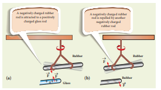
Following the pioneering work of J J Thomson and E Rutherford, in the late 19th century and in the beginning of 20th century, we now understand that the atom is electrically neutral and is made up of the negatively charged electrons, positively charged protons, and neutrons which have zero charge. The material objects made up of atoms are neutral in general. When an object is rubbed with another object (for example rubber with silk cloth), some amount of charge is transferred from one object to another due to the friction between them and the object is then said to be electrically charged. Charging the objects through rubbing is called triboelectric charging.
Electric charge
Most objects in the universe are made up of atoms, which in turn are made up of protons, neutrons and electrons. These particles have mass, an inherent property of particles. Similarly, the electric charge is another intrinsic and fundamental property of particles. The nature of charges is understood through various experiments performed in the 19th and 20th century. The S, I unit of charge is coulomb.
Conservation of charges
Benjamin Franklin argued that when one object is rubbed with another object, charges get transferred from one to the other. Before rubbing, both objects are electrically neutral and rubbing simply transfers the charges from one object to the other. (For example, when a glass rod is rubbed against silk cloth, some negative charge are transferred from glass to silk. As a result, the glass rod is positively charged and silk cloth becomes negatively charged).
From these observations, he concluded that charges are neither created or nor destroyed but can only be transferred from one object to other. This is called conservation of total charges and is one of the fundamental conservation laws in physics. It is stated more generally in the following way.
The total electric charge in the universe is constant and charge can neither be created nor be destroyed. In any physical process, the net change in charge will always be zero.
(3) Quantisation of charges
What is the smallest amount of charge that can be found in nature? Experiments show that the charge on an electron is minus e and the charge on the proton is plus e. Here, e denotes the fundamental unit of charge. The charge q on any object is equal to an integral multiple of this fundamental unit of charge e. q equal to n e equation (1.1) Here n is any integer (0, plus or minus1, plus or minus 2, plus or minus 3, plus or minus 4………..). This is called quantisation of electric charge.
Robert Millikan in his famous experiment found that the value of e equal to 1 point 6 into 10 power minus nineteen C. The charge of an electron is minus 1.6 into 10 minus nineteen C and the charge of the proton is plus 1 point 6 into 10 minus nineteen C. When a glass rod is rubbed with silk cloth, the number of charges transferred is usually very large, typically of the order of 10 power 10. So the charge quantisation is not appreciable at the macroscopic level. Hence the charges are treated to be continuous (not discrete). But at the microscopic level, quantisation of charge plays a vital role
EXAMPLE 1 point 1
Calculate the number of electrons in one coulomb of negative charge.
Solution
According to the quantisation of charge, q equal to n e Here q equal to one C. So the number of electrons in 1 coulomb of charge is
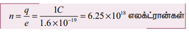
In the year 1786, Coulomb deduced the expression for the force between two stationary point charges in vacuum or free space. Consider two point charges q one and q two at rest in vacuum, and separated by a distance of r as shown in Figure 1 point 2. According to Coulomb, the force on the point charge q two exerted by another point charge q one is
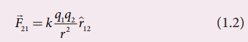
where r one two is the unit vector directed from charge q one to charge q two and k is the proportionality constant.
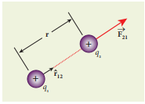
Important aspects of Coulomb’s law
1. Coulomb's law states that the electrostatic force is directly proportional to the product of the magnitude of the two point charges and is inversely proportional to the square of the distance between the two point charges.
2. The force on the charge q two exerted by the charge q one always lies along the line joining the two charges. R cap one two is the unit vector pointing from charge q one to q two .It is shown in the Figure 1 point 2. Likewise, the force on the charge q one exerted by q two is along minus r cap one two (that is, in the direction opposite to r one two cap)
3. In S I units, k equal to one by four pai epsilon not and its value is 9 into 10 power 9 N m square C power minus 2. Here is the permittivity of free space or vacuum and its value is
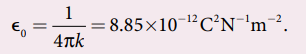
4. The magnitude of the electrostatic force between two charges each of one coulomb and separated by a distance of 1 m is calculated as follows:
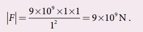
This is a huge quantity, almost equivalent to the weight of one million ton. We never come across 1 coulomb of charge in practice. Most of the electrical phenomena in day-to-day life involve electrical charges of the order of mew C (micro coulomb) or n C (Nano coulomb).
5. In S I units, Coulomb’s law in vacuum takes the form f two one vector equal to one by 4 pai epsilon not into q one q two by r square into r one two cap. In a medium of permittivity e, the force between two point charges is given by f two one vector equal to one by 4 pai epsilon into q one q two by r square into r one two cap. Since epsilon greater than epsilon not. the force between two point charges in a medium other than vacuum is always less than that in vacuum. We define the relative permittivity for a given medium as Epsilon r equal to epsilon by epsilon not. For vacuum or air, Epsilon r equal to one and for all other media epsilon r greater than 1.
6. Coulomb’s law has same structure as Newton’s law of gravitation. Both are inversely proportional to the square of the distance between the particles. The electrostatic force is directly proportional to the product of the magnitude of two point charges and gravitational force is directly proportional to the product of two masses. But there are some important differences between these two laws.
• The gravitational force between two masses is always attractive but Coulomb force between two charges can be attractive or repulsive, depending on the nature of charges.
• The value of the gravitational constant G equal to 6 point 6, 7 into 10 power minus 11 N m square kilogram power minus two. The value of the constant k in Coulomb law is k equal to 9 into 10 power 9 N m square C power minus 2. Since k is much more greater than G, the electrostatic force is always greater in magnitude than gravitational force for smaller size objects.
• The gravitational force between two masses is independent of the medium. For example, if one kilogram of two masses are kept in air or inside water, the gravitational force between two masses remains the same. But the electrostatic force between the two charges depends on nature of the medium in which the two charges are kept at rest.
7. The force on a charge q one exerted by a point charge q two is given by
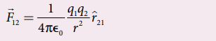
Here r two one cap is the unit vector from charge q two to q one.
But r two one cap equal to minus r one two cap
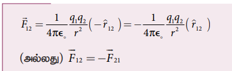
Therefore, the electrostatic force obeys Newton’s third law.
8. The expression for Coulomb force is true only for point charges. But the point charge is an ideal concept. However we can apply Coulomb’s law for two charged objects whose sizes are very much smaller than the distance between them. In fact, Coulomb discovered his law by considering the charged spheres in the torsion balance as point charges. The distance between the two charged spheres is much greater than the radii of the spheres.
EXAMPLE 1 point 2
Consider two point charges q one and q two at rest as shown in the figure.
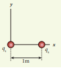
They are separated by a distance of 1 meter. Calculate the force experienced by the two charges for the following cases:
(a) q one equal to plus two mew C and q two equal to plus 3 mew C
(b) q one equal to plus two mew C and q two equal to minus three mew C
(c) q one equal to plus two mew C and q two equal to minus three mew C kept in water (epsilon r equal to 80)
Solution
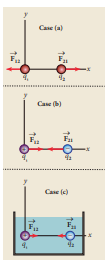
a) q one equal to plus two mew C, q two equal to plus three mew C, and r equal to 1 m. Both are positive charges. So the force will be repulsive.
Force experienced by the charge q two due to q one is given by
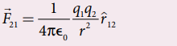
Here r cap one two is the unit vector from q one Here to q two . Since q two is located on the right of q one , we have r cap one two equal to I cap and one by four into pai into epsilon equal to nine into 10 power 9 so that
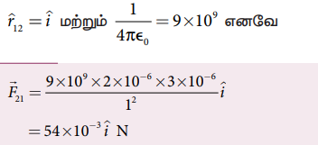
According to Newton’s third law, the force experienced by the charge q one due to q two is f one two vector equal to minus f two one vector.Therefore,
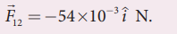
The directions of f two one vector and F one two are shown in the above figure in case (a)
(b) q one equal to plus 2 mew C, q two equal to minus 3 mew C, and r equal to 1 m. They are unlike charges. So the force will be attractive.
Force experienced by the charge q two due to q one is given by
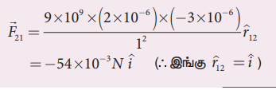
The charge q two will experience an attractive force towards q one which is in the negative x direction.
According to Newton’s third law, the force experienced by the charge q one due to q two is f one two vector equal to minus f two one vector.
F one two vector equal to minus f two one vector Therefore,
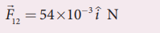
The directions of F two one vector and f one two vector are shown in the figure (case (b))
(c) If these two charges are kept inside the water, then the force experienced by q two due to q one
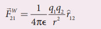
Since epsilon equal to epsilon r into epsilon not
we have
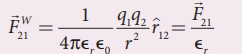
therefore
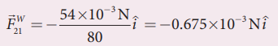
Note
Note that the strength of the force between the two charges in water is reduced by 80 times compared to the force between the same two charges in vacuum.
When common salt (N a C l) is taken in water, the electrostatic force between N a and C l ions is reduced due to the high relative permittivity of water (epsilon r equal to 80). This is the reason water acts as a good solvent.
EXAMPLE 1 point 3
Two small-sized identical equally charged spheres, each having mass 1 gram are hanging in equilibrium as shown in the figure. The length of each string is 10 centimeter and the angle theeta is 30 degree with the vertical. Calculate the magnitude of the charge in each sphere. (Take gram equal to 10 m s power minus 2)
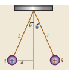
Solution
If the two spheres are neutral, the angle between them will be 0 degree when hanged vertically. Since they are positively charged spheres, there will be a repulsive force between them and they will be at equilibrium with each other at an angle of 30 degree with the vertical. At equilibrium, each charge experiences zero net force in each direction. We can draw a free body diagram for one of the charged spheres and apply Newton’s second law for both vertical and horizontal directions.
The free body diagram is shown below
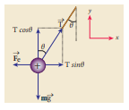
In the x-direction, the acceleration of the charged sphere is zero.
Using Newton’s second law f total vector equal to m a vector. we have
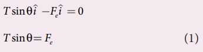
Here T is the tension acting on the charge due to the string and F e is the electrostatic force between the two charges. In the y-direction also, the net acceleration experienced by the charge is zero.
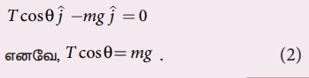
By dividing equation (1) by equation (2),
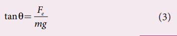
Since they are equally charged, the magnitude of the electrostatic force is
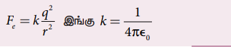
Here r equal to two a equal to two l sain theeta. By substituting these values in equation (3)
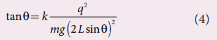
Rearranging the equation (4) to get q
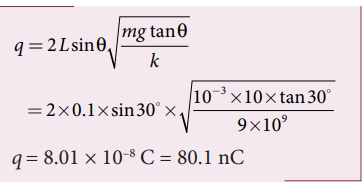
EXAMPLE 1 point 4
Calculate the electrostatic force and gravitational force between the proton and the electron in a hydrogen atom. They are separated by a distance of 5.3 into 10 power minus 11 m. The magnitude of charges on the electron and proton are 1.6 into 10 power minus 19 C. Mass of the electron is m e equal to 9 point 1 into 10 power minus 31 kilogram and mass of proton is m p equal to 1 point 6 into 10 power minus 27 kilogram.
Solution
The proton and the electron attract each other. The magnitude of the electrostatic force between these two particles is given by
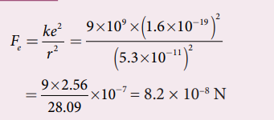
The gravitational force between the proton and the electron is attractive. The magnitude of the gravitational force between these particles is
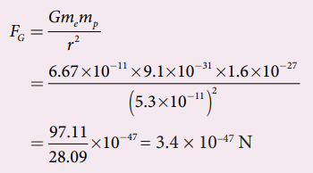
The ratio of the two forces
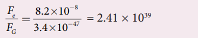
Note that F E approximately equal to 10 power 39 F G
The electrostatic force between a proton and an electron is enormously greater than the gravitational force between them. Thus the gravitational force is negligible when compared with the electrostatic force in many situations such as for small size objects and in the atomic domain. This is the reason why a charged comb attracts an uncharged piece of paper with greater force even though the piece of paper is attracted downward by the Earth. This is shown in Figure 1 point 3
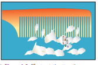
Coulomb’s law explains the interaction between two point charges. If there are more than two charges, the force on one charge due to all the other charges needs to be calculated. Coulomb’s law alone does not give the answer. The superposition principle explains the interaction between multiple charges. According to this superposition principle, the total force acting on a given charge is equal to the vector sum of forces exerted on it by all the other charges.
Consider a system of n charges, namely q one, q two, q three, upto q n. The fore on q one exerted by the charge q two
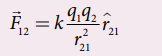
Where r cap two one is the unit vector from q two to q one along the line joining the two charges and r two one is the distance between the charges q one and q two. The electrostatic force between two charges is not affected by the presence of other charges in the neighborhood. The force on q one exerted by the charge q three is
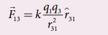
By continuing this, the total force acting on the charge q1 due to all other charges is given by
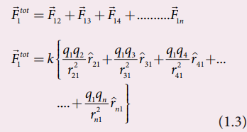
Note:
Without the superposition principle, Coulomb’s law will be incomplete when applied to more than two charges. Both the superposition principle and Coulomb’s law form fundamental principles of electrostatics and explain all the phenomena in electrostatics. But they are not derivable from each other.
EXAMPLE 1 point 5
Consider four equal charges q one, q two, q three and q four equal to q equal to plus one mew c located at four different points on a circle of radius one m, as shown in the figure. Calculate the total force acting on the charge q one due to all the other charges
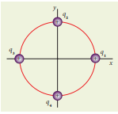
Solution
According to the superposition principle, the total electrostatic force on charge q one is the vector sum of the forces due to the other charges,
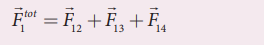
The following diagram shows the direction of each force on the charge q one.
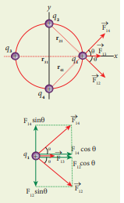
The charges q two and q four are equidistant from q one. As a result the strengths row (magnitude) of the forces F one two and F one four are the same even though their directions are different. Therefore the vectors representing these two forces are drawn with equal lengths. But the charge q three is located farther compared to q two and q four. Since the strength of the electrostatic force decreases as distance increases, the strength of the force F one three vector is lesser than that of forces F one two vector and F one four vector. Hence the vector representing row the force F one three is drawn with smaller length row compared to that for forces F one two vector and F one four vector.
From the figure, r two one equal to route of two m equal to r four one and r three one equal to two m.
The magnitudes of the forces are given by
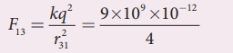
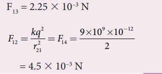
From the figure, the angle theta equal to 45degree. In terms of the components, we have
Then the total force on q one is
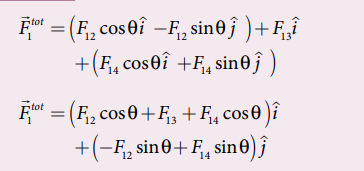
Since F one two equal to F one four, the Jth Component is zero.
Hence, we have F one total vector equal to f one two cos theta plus f one three plus f one four cos theta into I vector
substituting the values in the above equation,
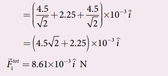
The resultant force is along the positive x axis
The interaction between two charges is determined by Coulomb’s law. How does the interaction itself occur? Consider a point charge kept at a point in space. If another point charge is placed at some distance from the first point charge, it experiences either an attractive force or repulsive force. This is called ‘action at a distance’. But how does the second charge know about existence of the first charge which is located at some distance away from it? To answer this question, Michael Faraday introduced the concept of field.
According to Faraday, every charge in the universe creates an electric field in the surrounding space, and if another charge is brought into its field, it will interact with the electric field at that point and will experience a force. It may be recalled that the interaction of two masses is similarly explained using the concept of gravitational field (Refer unit 6, volume 2, eleventh physics). Both the electric and gravitational forces are non-contact forces, hence the field concept is required to explain action at a distance.
Consider a source point charge q located at a point in space. Another point charge q not (test charge) is placed at some point P which is at a distance r from the charge q. The electrostatic force experienced by the charge q not due to q is given by Coulomb’s law.
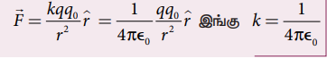
The charge q creates an electric field in the surrounding space within which its effect can be felt by another charge. It is measured in terms of a quantity called electric field intensity or simply called electric field E vector., The electric field at the point P at a distance r from the point charge q is defined as the force that would be experienced by a unit positive charge placed at that point P and is given by
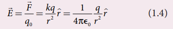
Here r is the unit vector pointing from q to Here the point of interest P. The electric field is a vector quantity and its S, I unit is newton per coulomb (N, C power minus 1).
Important aspects of Electric field
1. If the charge q is positive then the electric field points away from the source charge and if q is negative, the electric field points towards the source charge q. This is shown in the Figure 1 point 4.
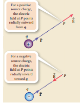
2. If the electric field at a point P is E vector, then the force experienced by the test charge q not placed at the point P is
F vector equal to q not e vector equation 1 point 5
This is Coulomb’s law in terms of electric field. This is shown in Figure 1 point 5
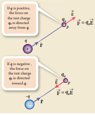
3. The equation (1 point 4) implies that the electric field is independent of the test charge q not and it depends only on the source charge q.
4. Since the electric field is a vector quantity, at every point in space, this field has unique direction and magnitude as shown in Figures 1 point 6 (a) and (b). From equation (1.4), we can infer that as distance increases, the electric field decreases in magnitude.
Note that in Figures 1 point 6 (a) and (b) the length of the electric field vector is shown for three different points. The strength or magnitude of the electric field at point P is stronger than at the points Q and R because the point P is closer to the source charge.
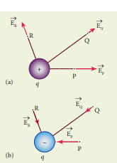
5. In the definition of electric field, it is assumed that the test charge q not is taken sufficiently small, so that bringing this test charge will not move the source charge. In other words, the test charge is made sufficiently small such that it will not modify the electric field of the source charge.
6. The expression (1 point 4) is valid only for point charges. For continuous and finite size charge distributions, integration techniques must be used (Refer Appendix A 1 point 1). However, this expression can be used as an approximation for a finite-sized charge if the test point is very far away from the finite sized source charge. Note that we similarly treat the Earth as a point mass when we calculate the gravitational field of the Sun on the Earth (Refer unit 6, volume 2, Eleventh physics).
7. There are two kinds of the electric field: uniform (constant) electric field and non-uniform electric field. Uniform electric field will have the same direction and constant magnitude at all points in space. Non-uniform electric field will have different directions or different magnitudes or both at different points in space. The electric field created by a point charge is basically a non uniform electric field. This non-uniformity arises, both in direction and magnitude, with the direction being radially outward (or inward) and the magnitude changes as distance increases. These are shown in Figure 1 point 7
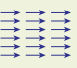
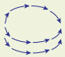
EXAMPLE 1 point 6
Calculate the electric field at points P, Q for the following two cases, as shown in the figure
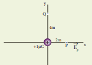
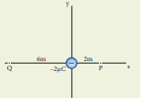
Solution
Case (a)
The magnitude of the electric field at point P is
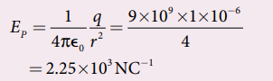
Since the source charge is positive, the electric field points away from the charge. So the electric field at the point P is given by E p vector equal to 2 point 2, 5 into 10 power three into I cap N C power minus one
For the point Q
Hence e q vector equal to 0.56 into 10 cube N c power minus 1
Case (b)
The magnitude of the electric field at point P
Since the source charge is negative, the electric field points towards the charge. So the electric field at the point P is given by
E p vector equal to minus 4.5 into 10 cube I cap N C power minus 1
For the Point Q modulus e q vector equal to 9 into 10 power 9 into 2 into 10 power minus 6 whole divided by 36.
Equal to 0.5 into 10 cube N C power minus 1
Equal to 0.5 into 10 cube N C power minus 1
At the point Q the electric field is directed along the positive x-axis.
Suppose a number of point charges are distributed in space. To find the electric field at some point P due to this collection of point charges, superposition principle is used. The electric field at an arbitrary point due to a collection of point charges is simply equal to the vector sum of the electric fields created by the individual point charges. This is called superposition of electric fields.
Consider a collection of point charges q one, q two, q three......... q n located at various points in space. The total electric field at some point P due to all these n charges is given by
Where r one p, r two p, r three p up to r n p are the distance of the charges q one, q two, q three upto q n from the area point P respectively. Also, r cap subscript one p, r cap subscript two p, r cap subscript three p upto r cap subscript n p the corresponding unit vectors directed from q one, q two, q three upto. Q n to P. Equation (1.7) can be re-written as,
For example in Figure 1 point 8, the resultant electric field due to three point charges q one, q two, q three at point P is shown.
Note that the relative lengths of the electric field vectors for the charges depend on relative distances of the charges to the point P.
EXAMPLE 1 point 7
Consider the charge configuration as shown in the figure. Calculate the electric field at point A. If an electron is placed at points A, what is the acceleration experienced by this electron? (mass of the electron equal to 9.1 into 10 power minus 31 kilogram and charge of electron equal to minus 1.6 into 10 power minus 19 C)
Solution
By using superposition principle, the net electric field at point A is
where r subscript one A and r subscript two a are the distances of point A from the two charges respectively.
The magnitude of electric field
The direction of E A vector is given by E a vector equal to 2.25 into 10 power 9 into i cap plus j cap whole divided by 2.25 into route 2 into 10 power 9 equal to i cap plus j cap divided by route two
which is the unit vector along O A as shown in the figure
The acceleration experienced by an electron placed at point A is
The electron is accelerated in a direction exactly opposite to E A vector.
The electric charge is quantized microscopically. The expressions (1 point 2), (1 point 3), (1 point 4) are applicable to only point charges. While dealing with the electric field due to a charged sphere or a charged wire excetra., it is very difficult to look at individual charges in these charged bodies. Therefore, it is assumed that charge is distributed continuously on the charged bodies and the discrete nature of charges is not considered here. The electric field due to such continuous charge distributions is found by invoking the method of calculus. (For further reading, refer Appendix A 1 point 1).
EXAMPLE 1 point 8
A block of mass m carrying a positive charge q is placed on an insulated frictionless inclined plane as shown in the figure. A uniform electric field E is applied parallel to the inclined surface such that the block is at rest. Calculate the magnitude of the electric field E.
Solution
Note: A similar problem is solved in eleventh Physics volume one, unit 3 section 3 point 3 point 2. There are three forces that acts on the mass m:
The downward gravitational force exerted by the Earth (m g)
The normal force exerted by the inclined surface (N)
The Coulomb force given by uniform electric field (q E)
The free body diagram for the mass m is drawn below.
A convenient inertial coordinate system is located in the inclined surface as shown in the figure. The mass m has zero net acceleration both in x and y-direction.
Along x-direction, applying Newton’s second law, we have
Note that the magnitude of the electric field is directly proportional to the mass m and inversely proportional to the charge q. It implies that, if the mass is increased by keeping the charge constant, then a strong electric field is required to stop the object from sliding. If the charge is increased by keeping the mass constant, then a weak electric field is sufficient to stop the mass from sliding down the plane.
The electric field also can be expressed in terms of height and the length of the inclined surface of the plane.
E equal to m g h by q L
Electric field vectors are visualized by the concept of electric field lines. They form a set of continuous lines which are the visual representation of the electric field in some region of space. The following rules are followed while drawing electric field lines for charges.
The electric field lines start from a positive charge and end at negative charges or at infinity. For a positive point charge the electric field lines point radially outward and for a negative point charge, the electric field lines point radially inward. These are shown in Figure 1 point 9 (a) and (b).
Note that for an isolated positive point charge the electric field line starts from the charge and ends only at infinity. For an isolated negative point charge the electric field lines start at infinity and end at the negative charge.
The electric field vector at a point in space is tangential to the electric field line at that point. This is shown in Figure 1 point 10
The electric field lines are denser (more closer) in a region where the electric field has larger magnitude and less dense in a region where the electric field is of smaller magnitude. In other words, the number of lines passing through a given surface area perpendicular to the lines is proportional to the magnitude of the electric field in that region. This is shown in Figure1 point 11
Figure 1 point 11 Electric field has larger magnitude at surface A than B
Figure 1 point 11 shows electric field lines from a positive point charge. The magnitude of the electric field for a point charge decreases as the distance increases modulus e vector proportional to 1 by r square. So the electric field has greater magnitude at the surface A than at B. Therefore, the number of lines crossing the surface A is greater than the number of lines crossing the surface B. Note that at surface B the electric field lines are farther apart compared to the electric field lines at the surface A.
No two electric field lines intersect each other. If two lines cross at a point, then there will be two different electric field vectors at the same point, as shown in Figure 1 point 12.
Figure 1 point 12 Two electric field lines never intersect each other
As a consequence, if some charge is placed in the intersection point, then it has to move in two different directions at the same time, which is physically impossible. Hence, electric field lines do not intersect.
The number of electric field lines that emanate from the positive charge or end at a negative charge is directly proportional to the magnitude of the charges.
For example in the Figure 1 point 13, the electric field lines are drawn for charges plus q and minus two q. Note that the number of field lines emanating from plus q is 8 and the number of field lines ending at minus two q is 16. Since the magnitude of the second charge is twice that of the first charge,
Figure 1 point 13 Electric field lines and magnitude of the charge the number of field lines drawn for minus two q is twice in number than that for charge plus q.
EXAMPLE 1 point 9
The following pictures depict electric field lines for various charge configurations
1. In figure (a) identify the signs of two charges and find the ratio modulus q one by q two
2. In figure (b), calculate the ratio of two positive charges and identify the strength of the electric field at three points A, B, and C
3. Figure (c) represents the electric field lines for three charges. If q two equal to minus 20 n C, then calculate the values of q one and q three.
Solution
1. The electric field lines start at q2 and end at q one. In figure (a), q two is positive and q one is negative. The number of lines starting from q two is 18 and number of the lines ending at q one is 6. So q two has greater magnitude. The ratio of modulus q one by q two equal to n one by n two equal to 6 by 18 equal to 1 by 3. It implies that modulus q two equal to 3 into modulus q one.
2. In figure (b), the number of field lines emanating from both positive charges are equal (N equal to 18). So the charges are equal. At point A, the electric field lines are denser compared to the lines at point B. So the electric field at point A is greater in magnitude compared to the field at point B. Further, no electric field line passes through C, which implies that the resultant electric field at C due to these two charges is zero.
3. In the figure (c), the electric field lines start at q one and q three and end at q two. This implies that q one and q three are positive charges. The ratio of the number of field lines is modulus q one by q two equal to 8 by 16 equal to modulus q 3 by q 2 equal to 1 by 2, implying that q one and q three are half of the magnitude of q two. So q one equal to q three equal plus 10 n C.
Two equal and opposite charges separated by a small distance constitute an electric dipole. In many molecules, the centres of positive and negative charge do not coincide. Such molecules behave as permanent dipoles. Examples: Carbon monoxide, water, ammonia, Hydrochloric acid excetra.
Consider two equal and opposite point charges (plus q, minus q) that are separated by a distance 2 a as shown in Figure 1 point 14 (a).
The electric dipole moment is defined as
where r plus vector is the position vector of plus q from the origin and r minus vector is the position vector of minus q from the origin. Then, from Figure 1.14 (a),
The electric dipole moment vector lies along the line joining two charges and is directed from minus q to plus q. The S I unit of dipole moment is coulomb meter (C m). The electric field lines for an electric dipole are shown in Figure 1 point 14 (b).
For simplicity, the two charges are placed on the x-axis. Even if the two charges are placed on y or z-axis, dipole moment will point from minus q to plus q.
The magnitude of the electric dipole moment is equal to the product of the magnitude of one of the charges and the distance between them,
Though the electric dipole moment for two equal and opposite charges is defined, it is possible to define and calculate the electric dipole moment for a collection of point charges. The electric dipole moment for a collection of n point charges is given by
where r I vector is the position vector of charge q i from the origin.
EXAMPLE 1 point 10
Calculate the electric dipole moment for the following charge configurations
Solution
Case (a) The position vector for the plus q on the positive x-axis is a i vector for the plus q charge the negative x axis is minus a i vector. So the dipole moment is,
Case (b) In this case one charge is placed at the origin, so its position vector is zero. Hence only the second charge plus q with position vector minus a i vector contributes to the dipole moment, which is p vector equal to q a i vector.
From both cases (a) and (b), we can infer that in general the electric dipole moment depends on the choice of the origin and charge configuration. But for one special case, the electric dipole moment is independent of the origin. If the total charge is zero, then the electric dipole moment will be the same irrespective of the choice of the origin. It is because of this reason that the electric dipole moment of an electric dipole (total charge is zero) is always directed from minus q to plus q, independent of the choice of the origin.
Case (c) P vector equal to minus two q a j cap plus q into two a into minus j cap equal to minus 4 q a j cap. Note that in this casep vector is directed from minus two q to plus q
Case (d)
p vector equal to minus two q a into minus I cap plus q a j cap plus q a into minus j cap equal to two q a I cap.
The water molecule (H 2 O) has this charge configuration. The water molecule has three atoms (two H atom and one O atom). The centres of positive (H) and negative (O) charges of a water molecule lie at different points, hence it possess permanent dipole moment. The electric dipole moment p vector is directed from centre of negative charge to the centre of positive charge, as shown in the figure.
Case (1) Electric field due to an electric dipole at points on the axial line
Consider an electric dipole placed on the x-axis as shown in Figure 1 point 15. A point C is located at a distance of r from the midpoint O of the dipole on the axial line.
The electric field at a point C due to plus q is e plus vector equal to 1 by 4 pi epsilon not into q by r minus a whole square along B C
Since the electric dipole moment vector p vector is from minus q to plus q and is directed along B C, the above equation is rewritten as
e plus vector equal to 1 by 4 pi epsilon not into q by r minus a whole square into p cap equation 1 point 13
Where p vector is the electric dipole moment unit vector from minus q to plus q.
The electric field at a point C due to minus q is
e minus vector equal to minus 1 by 4 pi epsilon not into q by r plus a whole square into p cap equation 1 point 14.
Since plus q is located closer to the point C than minus q, E plus vector is stronger than E minus vector. Therefore, the length of the E plus vector is drawn larger than that of E minus vector.
The total electric field at point C is calculated using the superposition principle of the electric field.
Note that the total electric field is along E plus vector, since plus q is closer to C than minus q. The direction of E total vector is shown in Figure 1 point 16
If the point C is very far away from the dipole (r very grater than a). Then under this limit the term r square minus a square whole square equal to r power four.Substituting this into equation (1 point 16), we get
If the point C is chosen on the left side of the dipole, the total electric field is still in the direction of p vector. We infer this result by examining the electric field lines of the dipole shown in Figure 1.14(b).
Case (2) Electric field due to an electric dipole at a point on the equatorial plane
Consider a point C at a distance r from the midpoint O of the dipole on the equatorial plane as shown in Figure 1 point 17. Since the point C is equal distant from plus q and minus q, the magnitude of the electric fields at C due to plus q and minus q are the same. The direction of E plus vector is along B C and the direction of E minus vector is row along C A. E plus vector E minus vector and can be resolved into two components; one component parallel to the dipole axis and the other perpendicular to it. Since perpendicular components modulus e plus vector, sain theeta and modulus e minus vector sain theeta equal in magnitude and oppositely directed, they cancel each other. The magnitude of the total electric field at point C is the sum of the parallel components of E plus vector and E minus vector and its direction minus p cap shown in the Figure 1 point 17
The magnitudes E plus vector and E minus vector are the same and are given by
![E total vector equal to minus modulus e plus vector into cos theeta p cap minus modulus e minus vector into cos theeta p cap equation 1.18 the magnitude E plus vector and E minus vector are the same and are given by modulus e plus vector equal to modulus e minus vector equal to one by four pi epsilon not into q by r square plus a square equation 1.19 by substitute in equation 1.1 9 into equation 1 point 1 8, we get e total vector equal to minus one by 4 pi epsilon not into two q cos theeta divided by r square plus a square into p cap that is equal to minus one by 4 pi epsilon not into 2 q a divided by r square plus a square whole power three by two into p cap because cos theeta equal to a by route of r square plus a square](images/image-56.png)
Important inferences
(1) From equations (1 point 17) and (1 point 21), it is inferred that for very large distances, the magnitude of the electric field at point on the dipole axis is twice the magnitude of the electric field at the point at the same distance on the equatorial plane. The direction of the electric field at points on the dipole axis is directed along the direction of dipole moment vector p cap but at points on the equatorial plane it is directed opposite to the dipole moment vector, that is along minus p vector.
(2) At very large distances, the electric field due to a dipole varies as one by r cube. Note that for a point charge, the electric field varies as one by r square. This implies that the electric field due to a dipole at very large distances goes to zero faster than the electric field due to a point charge. The reason for this behavior is that at very large distance, the two charges appear to be close to each other and neutralize each other.
(3) The equations (1 point 17) and (1 point 21) are valid only at very large distances (r very grater than a). Suppose the distance 2a approaches zero and q approaches infinity such that the product of 2 a q equal to p is finite, then the dipole is called a point dipole. For such point dipoles, equations (1 point 17) and (1 point 21) are exact and hold true for any r.
Consider an electric dipole of dipole moment p vector placed in a uniform electric field E vector whose field lines are equally spaced and point in the same direction. The charge plus q will experience a force q E vector in the direction of the field and charge minus q e vector will experience a force minus q E vector in a direction opposite to the field. Since the external field e vector is uniform, the total force acting on the dipole is zero. These two forces acting at different points will constitute a couple and the dipole experience a torque as shown in Figure 1 point 18. This torque tends to rotate the dipole. (Note that electric field lines of a uniform field are equally spaced and point in the same direction).
The total torque on the dipole about the point O
Using right-hand corkscrew rule (Refer eleventh volume 1, unit 2), it is found that total torque is perpendicular to the plane of the paper and is directed into it.
The magnitude of the total torque
where theeta is the angle made by p vector with E vector. Since p equal to 2 a q, the torque is written in terms of the vector product as
The magnitude of this torque is torque equal to p E sain theta and is maximum when theeta equal to 90 degree. This torque tends to rotate the dipole and align it with the electric field E vector. Once p vector is aligned with E vector, the total torque on the dipole becomes zero.
If the electric field is not uniform, then the force experienced by plus q is different from that experienced by minus q. In addition to the torque, there will be net force acting on the dipole. This is shown in Figure 1.19
EXAMPLE 1 point 11
A sample of H C l gas is placed in a uniform electric field of magnitude 3 into 10 power 4 N C power minus 1. The dipole moment of each H C l molecule is 3.4 into 10 power minus 30 C m. Calculate the maximum torque experienced by each H C l molecule.
Solution
The maximum torque experienced by the dipole is when it is aligned perpendicular to the applied field.
Introduction
In mechanics, potential energy is defined for conservative forces. Since gravitational force is a conservative force, its gravitational potential energy is defined in eleventh standard physics (Unit 6). Since Coulomb force is an inverse square-law force, its also a conservative force like gravitational force. Therefore, we can define potential energy for charge configurations.
Consider a positive charge q kept fixed at the origin which produces an electric field E vector around it. A positive test charge q dash is brought from point R to point P against the repulsive force between q and q dash as shown in Figure 1.20. Work must be done to overcome the repulsion between the charges and this work done is stored as potential energy of the system.
Do you know
Microwave oven works on the principle of torque acting on an electric dipole. The food we consume has water molecules which are permanent electric dipoles. Oven produces microwaves that are oscillating electromagnetic fields and produce torque on the water molecules. Due to this torque on each water molecule, the molecules rotate very fast and produce thermal energy. Thus, heat generated is used to heat the food.
The test charge q dash is brought from R to P with constant velocity which means that external force used to bring the test charge q dash from R to P must be equal and opposite to the coulomb force F external vector equal to minus F coulomb vector. The work done is
Since coulomb force is conservative, work done is independent of the path and it depends only on the initial and final positions of the test charge. If potential energy associated with q dash at P is U p and that at R is U r, then difference in potential energy is defined as the work done to bring a test charge q dash from point R to P and is given as
The potential energy difference per unit charge is given by
The above equation (1 point 29) is independent of q dash. The quantity del u by q dash equal to minus integral e vector dot d r is called electric potential difference between P and R and is denoted as V P minus V R equal to del V. In other words, the electric potential difference is defined as the work done by an external force to bring unit positive charge from point R to point P
The electric potential energy difference can be written as del U equal to q dash del V. Physically potential difference between two points is a meaningful quantity. The value of the potential itself at one point is not meaningful. Therefore the point R is taken to infinity and the potential at infinity is considered as zero (V infinitive equal to 0).
Then the electric potential at a point P is equal to the work done by an external force to bring a unit positive charge with constant velocity from infinity to the point P in the region of the external electric field E vector. Mathematically this is written as
Important points
1. Electric potential at point P depends only on the electric field which is due to the source charge q and not on the test charge q dash. Unit positive charge is brought from infinity to the point P with constant velocity because external agency should not impart any kinetic energy to the test charge.
2.From equation (1 point 29), the unit of electric potential is Joule per coulomb. The practical unit is volt (V) named after Alessandro Volta (1745-1827) who invented the electrical battery. The potential difference between two points is expressed in terms of volt.
Note:
The description of motion of objects using the concept of potential or potential energy is simpler than that using the concept of field.
Consider a positive charge q kept fixed at the origin. Let P be a point at distance r from the charge q. This is shown in Figure 1 point 21.
The electric potential at the point P is
Electric field due to positive point charge q is
The infinitesimal displacement vector, d r vector equal to d r r cap and using r cap dot r cap equal to one, we have
After the integration,
Hence the electric potential due to a point charge q at a distance r is
Important points
1. If the source charge q is positive, V grater than 0. If q is negative, then V is negative and equal to v equal to minus one by 4 pai epsilon not into q by r
2. From expression (1 point 33), it is clear that the potential due to positive charge decreases as the distance increases, but for a negative charge the potential increases as the distance is increased. At infinity r equal to infinity electrostatic potential is zero (V equal to 0).
In the case of gravitational force, mass moves from a point of higher gravitational potential to a point of lower
l
gravitational potential (Figure 1 point 22). Similarly a positive charge moves from a point of higher electrostatic potential to a point of lower electrostatic potential. However a negative charge moves from lower electrostatic potential to higher electrostatic potential. This comparison is shown in Figure 1 point 23.
3. The electric potential at a point P due to a collection of charges q one, q two, q three upto q n is equal to sum of the electric potentials due to individual charges
where r one, r two, r three upto r n are the distances of q one, q two, q three upto q n respectively from P (Figure 1 point 24).
EXAMPLE 1 point 12
(a) Calculate the electric potential at points P and Q as shown in the figure below.
(b) Suppose the charge plus 9 mew C is replaced by minus 9 mew C find the electrostatic potentials at points P and Q
(c) Calculate the work done to bring a test charge plus 2 mew C from infinity to the point Q. Assume the charge plus 9 mew C is held fixed at origin and plus 2 mew C is brought from infinity to P.
Solution
Electric potential at point Q is given by
Note that the electric potential at point Q is less than the electric potential at point P. If we put a positive charge at P, it moves from P to Q. However if we place a negative charge at P it will move towards the charge plus 9 mew C.
The potential difference between the points P and Q is given by
Note that in this case electric potential at the point Q is higher than at point P. The potential difference between the points P and Q is given by
(c) The electric potential V at a point Q due to some charge is defined as the work done by an external force to bring a unit positive charge from infinity to Q. So to bring the q amount of charge from infinity to the point Q, work done is given as follows
EXAMPLE 1 point 13
Consider a point charge plus q placed at the origin and another point charge minus 2 q placed at a distance of 9 m from the charge plus q. Determine the point between the two charges at which electric potential is zero.
Solution
According to the superposition principle, the total electric potential at a point is equal to the sum of the potentials due to each charge at that point. Consider the point at which the total potential zero is located at a distance x from the charge +q as shown in the figure
Since the total electric potential at P is zero,
Consider two equal and opposite charges separated by a small distance two a as shown in Figure 1.25. The point P is located at a distance r from the midpoint of the dipole. Let theeta be the angle between the line O P and dipole axis A B
Let r one be the distance of point P from plus q and r two be the distance of point P from minus q. Potential at P due to charge plus q equal to one by four pi epsilon not into q by r one
Potential at P due to charge minus q equal to minus one by four pi epsilon not into q by r two
Total potential at the point P
Suppose if the point P is far away from the dipole, such that r very greater than a, then equation (1 point 35) can be expressed in terms of r. By the cosine law for triangle B O P
Since the point P is very far from the dipole (r very greater than a). As a result the term a square divided by r square is very small and can be neglected. Therefore
Since a by r less than 1, we can use binomial theorem and retain the terms up to first order
Similarly applying the cosine law for triangle A, O, P,
Neglecting the term a square divided by r square (because r very greater than a)
Using Binomial theorem, we get
Substituting equation (1 point 37) and (1 point 36) in equation (1 point 35),
But the electric dipole moment p equal to 2 q a and we get,
Now we can write P cos theta Equal to p vector. R cap .where r cap is the unit vector from the point O to point P. Hence the electric potential at a point P due to an electric dipole is given by
Equation (1 point 38) is valid for distances very large compared to the size of the dipole. But for a point dipole, the equation (1 point 38) is valid for any distance.
Special cases
Case (1) If the point P lies on the axial line of the dipole on the side of plus q, then theeta equal to 0. Then the electric potential becomes
Case (2) If the point P lies on the axial line of the dipole on the side of minus q, then theeta equal to 180 degree. Then
Case (3) If the point P lies on the equatorial line of the dipole, then theeta equal to 90 degree Hence V equal to zero equation 1 point 41
Note
The potential due to an electric dipole falls as one by r square and the potential due to a single point charge falls as one by r. Thus the potential due to the dipole falls faster than that due to a monopole (point charge). As the distance increases from electric dipole, the effects of positive and negative charges nullify each other
Consider a point charge q located at some point in space and an imaginary sphere of radius r is chosen by keeping the charge q at its centre (Figure 1 point 26 (a)). The electric potential at all points on the surface of the given sphere is the same. Such a surface is called an equipotential surface.
An equipotential surface is a surface on which all the points are at the same electric potential. For a point charge the equipotential surfaces are concentric spherical surfaces as shown in Figure 1 point 26 (b). Each spherical surface is an equipotential surface but the value of the potential is different for different spherical surfaces.
For a uniform electric field, the equipotential surfaces form a set of planes normal to the electric field E vector. This is shown in the Figure 1 point 27
Properties of equipotential surfaces
1. The work done to move a charge q between any two points A and B, W equal to q (V b minus V a) If the points A and B lie on the same equipotential surface, work done is zero because V A equal to V B.
2. The electric field is normal to an equipotential surface. If it is not normal, then there is a component of the field parallel to the surface. Then work must be done to move a charge between two points on the same surface. This is a contradiction. Therefore the electric field must always be normal to equipotential surface.
Consider a positive charge q kept fixed at the origin. To move a unit positive charge by a small distance dx towards q in the electric field E, the work done is given by d W equal to minus E d x. The minus sign implies that work is done against the electric field. This work done is equal to electric potential difference. Therefore,
D W equal to d V
or
d V equal to minus E d x equation (1.42)
Hence
E equal to minus d V by d x equation (1.43)
The electric field is the negative gradient of the electric potential. In vector form,
EXAMPLE 1 point 14
The following figure represents the electric potential as a function of x – coordinate. Plot the corresponding electric field as a function of x.
Solution
In the given problem, since the potential depends only on x, we can use E vector equal to minus d v by dx into I cap (the other two terms del V by delta y and delta V by delta z are zero)
From 0 to one centimeter, the slope is constant and so d v by d x equal to 25 v c m power minus one So e vector equal to minus 25 c m power minus 1 I cap
From 1 to four centimeter, the potential is constant, V equal to 25 V. It implies that d V by d x equal to 0. So E vector equal to 0
From 4 to 5 centimeter, the slope d V by d x equal to minus 25 V cm minus 1. So e vector equal to plus 25 V c m power minus 1 I cap.
The plot of electric field for the various points along the x axis is given below
The electric potential at a point at a distance r from point charge q one is given by v equal to one by 4 pai epsilon not into q one by r
This potential V is the work done to bring a unit positive charge from infinity to the point. Now if the charge q two is brought from infinity to that point at a distance r from q one, the work done is the product of q two and the electric potential at that point. Thus we have W equal to q 2 V
This work done is stored as the electrostatic potential energy U of a system of charges q one and q two separated by a distance r. Thus we have
The electrostatic potential energy depends only on the distance between the two point charges. In fact, the expression (1 point 45) is derived by assuming that q one is fixed and q two is brought from infinity. The equation (1 point 45) holds true when q two is fixed and q one is brought from infinity or both q one and q two are simultaneously brought from infinity to a distance r between them.
Three charges are arranged in the following configuration as shown in Figure 1 point 28.
To calculate the total electrostatic potential energy, we use the following procedure. We bring all the charges one by one and arrange them according to the configuration as shown in Figure 1 point 28
(1) Bringing a charge q one from infinity to the point A requires no work, because there are no other charges already present in the vicinity of charge q one.
(2) To bring the second charge q two to the point B, work must be done against the electric field created by the charge q one. So the work done on the charge q two is W equal to q two V one b. Here V one b is the electrostatic potential due to the charge q one at point B
U one equal to one by 4 pi epsilons not into q one into q 2 divided by r one two equation 1.46
Note that the expression is same when q 2 is brought first and then q 1 later.
(3) Similarly to bring the charge q three to the point C, work has to be done against the total electric field due to both charges q one and q two. So the work done to bring the charge q three is equal to q three (V one c plus V two c). Here V one c is the electrostatic potential due to charge q one at point C and V two C is the electrostatic potential due to charge q two at point C.
The electrostatic potential energy is
(4) Adding equations (1 point 46) and (1 point 47), the total electrostatic potential energy for the system of three charges q one, q two and q three is U equal to U l plus U l l.
Note that this stored potential energy U is equal to the total external work done to assemble the three charges at the given locations. The expression (1 point 48) is same if the charges are brought to their positions in any other order. Since the Coulomb force is a conservative force, the electrostatic potential energy is independent of the manner in which the configuration of charges is arrived at.
EXAMPLE 1 point 15
Four charges are arranged at the corners of the square P Q R S of side a as shown in the figure (a). Find the work required to assemble these charges in the given configuration. (b) Suppose a charge q dash is brought to the centre of the square, by keeping the four charges fixed at the corners, how much extra work is required for this?
Solution
(a) The work done to arrange the charges in the corners of the square is independent of the way they are arranged. We can follow any order.
(1) First, the charge plus q is brought to the corner P. This requires no work since no charge is already present, W p equal to 0
(2) Work required to bring the charge minus q to the corner Q equal to (minus q) into potential at a point Q due to plus q located at a point P
(3) Work required to bring the charge plus q to the corner R equal to q into potential at the point R due to charges at the point P and Q
4) Work required to bring the fourth charge minus q at the position S equal to q into potential at the point S due the all the three charges at the point P, Q and R
(b) Work required to bring the charge q dash to the centre of the square equal to q dash into potential at the centre point O due to all the four charges in the four corners
The potential created by the two plus q charges are canceled by the potential created by the minus q charges which are located in the opposite corners. Therefore, the net electric potential at the centre O due to all the charges in the corners is zero.
Hence no work is required to bring any charge to the point O. Physically this implies that if any charge q′ when brought close to O, then it moves to the point O without any external force.
Consider a dipole placed in the uniform electric field E vector as shown in the Figure 1 point 29. A dipole experiences a torque when kept row in an uniform electric field E vector. This torque rotates the dipole to align it with the direction of the electric field. To rotate the dipole (at constant angular velocity) from its initial angle theta dash to another angle theeta against the torque exerted by the electric field, an equal and opposite external torque must be applied on the dipole.
The work done by the external torque to rotate the dipole from angle theta dash to theeta at constant angular velocity is
Since tow external vector is equal and opposite to tow E vector equal to p vector into E vector we have
tow external vector equal to modulus tow e vector equal to modulus p vector into e vector equation 1.50
Substituting equation (1 point 50) in equation (1 point 49), we get
This work done is equal to the potential energy difference between the angular positions theeta and theta dash.
If the initial angle is theta dash equal to 90 degree and is taken as reference point, then. U (theta dash) equal to p E cos 90 degree equal to 0
The potential energy stored in the system of dipole kept in the uniform electric field is given by
In addition to p and E, the potential energy also depends on the orientation θ of the electric dipole with respect to the external electric field.
The potential energy is maximum when the dipole is aligned anti-parallel (theeta equal to pai) to the external electric field and minimum when the dipole is aligned parallel (theeta equal to 0) to the external electric field.
EXAMPLE 1 point 16
A water molecule has an electric dipole moment of 6.3 into 10 power minus 30 C m. A sample contains 10 power 22 water molecules, with all the dipole moments aligned parallel to the external electric field of magnitude 3 into 10 power 5 N C power minus one. How much work is required to rotate all the water molecules from theeta equal to 0 degree to 90 degree?
Solution
When the water molecules are aligned in the direction of the electric field, it has minimum potential energy. The work done to rotate the dipole from theeta equal to 0 degree to 90 degree is equal to the potential energy difference between these two configurations.
From the equation (1.51), we write U equal to minus p E cos theeta, Next we calculate the work done to rotate one water molecule from theta equal to 0 degree to 90 degree .
For one water molecule
For 10 power 22 water molecules, the total work done is
The number of electric field lines crossing a given area kept normal to the electric field lines is called electric flux. It is usually denoted by the Greek letter pai E and its unit is N m square C power minus 1. Electric flux is a scalar quantity and it can be positive or negative. For a simpler understanding of electric flux, the following Figure 1 point 30 is useful.
The electric field of a point charge is drawn in this figure. Consider two small rectangular area elements placed normal to the field at regions A and B. Even though these elements have the same area, the number of electric field lines crossing the element in region A is more than that crossing the element in region B. Therfore the electric flux in region A is more than that in region B. Since electric field strength for a point charge decreases as the distance increases, electric flux also decreases as the distance increases. The above discussion gives a qualitative idea of electric flux. However a precise definition of electric flux is needed.
Electric flux for uniform Electric field
Consider a uniform electric field in a region of space. Let us choose an area A normal to the electric field lines as shown in Figure 1 point 31 (a). The electric flux for this case is
Pai E equal to E A (1 point 52)
Suppose the same area A is kept parallel to the uniform electric field, then no electric field lines pass through the area A, as shown in Figure 1 point 31 (b). The electric flux for this case is zero
Pai E equal to 0 (1 point 53)
If the area is inclined at an angle theta with the field, then the component of the electric field perpendicular to the area alone contributes to the electric flux. The electric field component parallel to the surface area will not contribute to the electric flux. This is shown in Figure 1 point 31 (c). For this case, the electric flux
Pai E equal to E cos theeta A (1 point 54)
Further, theeta is also the angle between the electric field and the direction normal to the area. Hence in general, for uniform electric field, the electric flux is defined as
Pai E equal E vector A vector equal to E A cos theeta (1 point 55)
Here, note that A vector is the area vector A vector equal to A n vector. Its magnitude is simply the area A and its direction is along the unit vector n unit vector perpendicular to the area as shown in Figure 1.31. Using this definition for flux, pai E equal to e vector a vector, equations (1 point 53) and (1 point 54) can be obtained as special cases.
In Figure 1 point 3, 1 (a), theeta equal to zero degree. Therefore, pai e equal to e vector dot a vector equal to e a
In Figure 1 point 31 (b), theeta equal to 90 degree. Therefore,
pai e equal to e vector dot a vector equal to zero.
EXAMPLE 1 point 17
Calculate the electric flux through the rectangle of sides 5 centi meter and 10 centi meter kept in the region of a uniform electric field 100 N C power minus 1. The angle theeta is 60 degree. If theeta becomes zero, what is the electric flux?
Solution
The electric flux through the rectangular area
For theta equal to zero degree
Electric flux through an arbitrary area kept in a non uniform electric field
Suppose the electric field is not uniform and the area A is not flat surface (Figure 1 point 32). Then the entire area can be divided into n small area segments del A one vector, del a two vector, del a three vector upto Del a n vector such that each area element is almost flat and the electric field over such area element can be considered uniform. The electric flux for the entire area A is approximately written as
The electric flux for the entire area A is approximately written as
By taking the limit del A I vector gives zero the summation in equation (1 point 56) becomes integration. The total electric flux for the entire area is given by
From Equation (1 point 57), it is clear that the electric flux for a given surface depends on both the electric field pattern on the surface area and orientation of the surface with respect to the electric field
In the previous section, the electric flux for any arbitrary curved surface is discussed. Suppose a closed surface is present in the region of the non-uniform electric field as shown in Figure 1 point 33 (a).
The total electric flux over this closed surface is written as
Note the difference between equations (1 point 57) and (1 point 58). The integration in equation (1.58) is a closed surface integration and for each areal element, the outward normal is the direction of d A vector as shown in the Figure 1 point 33 (b).
The total electric flux over a closed surface can be negative, positive or zero. In the Figure 1 point 33 (b), it is shown that in one area element, the angle between d A vector and E vectoris less than 90 degree, then the electric flux is positive and in another areal element, the angle between d A vector row and E vector is greater than 90 degree, then the electric flux is negative.
In general, the electric flux is negative if the electric field lines enter the closed surface and positive if the electric field lines leave the closed surface.
A positive point charge Q is surrounded by an imaginary sphere of radius r as shown in Figure 1 point 34. We can calculate the total electric flux through the closed surface of the sphere using the equation (1 point 58).
The electric field of the point charge is directed radially outward at all points on the surface of the sphere. Therefore, the direction of the area element d A vector is along the electric field E vector and theeta equal to zero degree.
Pai e equal to closed integral of E D a since cos zero degree equal to one equation (1 point 59)
E is uniform on the surface of the sphere
Pai e equal to e integral D equation (1 point 60)
Substituting for Closed integral D A equal to 4 pai r square and E equal to one by 4 pai epsilon not into q by r square. in equation (1 point 60), we get
The equation (1 point 61) is called as Gauss’s law. The remarkable point about this result is that the equation (1 point 61) is equally true for any arbitrary shaped surface which encloses the charge Q and as shown in the Figure 1 point 35. It is seen that the total electric flux is the same for closed surfaces A one, A two and A three as shown in the Figure 1 point 35
Gauss’s law states that if a charge Q is enclosed by an arbitrary closed surface, then the total electric flux pai E through the closed surface is
where Q enclosed denotes the charges within the closed surface.
Discussion of Gauss law
1. The total electric flux through the closed surface depends only on the charges enclosed by the surface and the charges present outside the surface will not contribute to the flux and the shape of the closed surface which can be chosen arbitrarily.
2. The total electric flux is independent of the location of the charges inside the closed surface.
3. To arrive at equation (1 point 62), we have chosen a spherical surface. This imaginary surface is called a Gaussian surface. The shape of the Gaussian surface to be chosen depends on the type of charge configuration and the kind of symmetry existing in that charge configuration. The electric field is spherically symmetric for a point charge, therefore spherical Gaussian surface is chosen. Cylindrical and planar Gaussian surfaces can be chosen for other kinds of charge configurations.
4. In the L H S of equation (1 point 62), row the electric field E vector is due to charges present inside and outside the Gaussian surface but the charge Q enclosed denotes the charges which lie only inside the Gaussian surface
Example 1 point 18
Solution
1. In figure (a), the area A one encloses the charge Q. So electric flux through this closed surface A one is Q by epsilon But the closed surface A two contains no charges inside, so electric flux through A two is zero.
2. In figure (b), the net charge inside the cube is 3 q and the total electric flux in the cube is therefore pai E equal to 3 q by epsilon not. Note that the charge minus 10 q lies outside the cube and it will not contribute the total flux through the surface of the cube.
Electric field due to any arbitrary charge configuration can be calculated using Coulomb’s law or Gauss law. If the charge configuration possesses some kind of symmetry, then Gauss law is a very efficient way to calculate the electric field. It is illustrated in the following cases.
1. Electric field due to an infinitely long charged wire
Consider an infinitely long straight wire having uniform linear charge density lambda (charge per unit length). Let P be a point located at a perpendicular distance r from the wire (Figure 1.36 (a)). The electric field at the point P can be found using Gauss law. We choose two small charge elements A one and A two on the wire which are at equal distances from the point P. The resultant electric field due to these two charge elements points radially away from the charged wire and the magnitude of electric field is same at all points on the circle of radius r. This is shown in the Figure 1 point 36 (b). Since the charged wire possesses
a cylindrical symmetry, let us choose a cylindrical Gaussian surface of radius r and length L as shown in the Figure 1.37.
The total electric flux through this closed surface is calculated as follows.
It is seen from Figure 1 point 3, 7 that for the curved surface, E vector is parallel to A vector and e vector dot d a vector equal to e d a.
For the top and bottom surfaces, E vector is perpendicular to A vector and e vector dot d a vector equal to zero. Substituting these values in the equation (1 point 63) and applying Gauss law to the cylindrical surface, we have
Since the magnitude of the electric field for the entire curved surface is constant, E is
taken out of the integration and Q enclosed is given by Q enclosed equal to lambda L, where lambda is the linear charge density (charge present per unit length).
Here integral curved surface d A equal to total area of the curved surface equal to two pai r l. Substituting this in equation 1.65, we get
In vector form,
The electric field due to the infinite charged wire depends on one by r rather than one by r square which is for a point charge.
Equation (1 point 67) indicates that the electric field is always along the perpendicular direction r cap to wire. In fact, if lambda greater than 0 then E vector points perpendicularly outward r cap from the wire and if lambda less than 0, then E vectorpoints perpendicularly inward minus r cap.
The equation (1 point 67) is true only for an infinitely long charged wire. For a charged wire of finite length, the electric field need not be radial at all points. However, equation (1 point 67) for such a wire is taken approximately true around the mid-point of the wire and far away from the both ends of the wire
2. Electric field due to charged infinite plane sheet
Consider an infinite plane sheet of charges with uniform surface charge density σ (charge present per unit area). Let P be a point at a distance of r from the sheet as shown in the Figure 1 point 38.
Since the plane is infinitely large, the electric field should be same at all points equidistant from the plane and radially directed outward at all points. A cylindrical Gaussian surface of length 2 r and two flats surfaces each of area A is chosen such that the infinite plane sheet passes perpendicularly through the middle part of the Gaussian surface.
Total electric flux linked with the cylindrical surface,
The electric field is perpendicular to the area element at all points on the curved surface and is parallel to the surface areas at P and P dash (Figure 1.38). Then, applying Gauss' law,
Since the magnitude of the electric field at these two equal flat surfaces is uniform, E is taken out of the integration and Q enclosed is given by Q enclosed equal to sigma A, we get
The total area of surface either at P or P dash
integral p d a equal to a
Hence, Two E A equal to sigma A by epsilon not or E equal to sigma by two epsilon not equation 1.70
In vector form, e vector equal to sigma by two epsilon not into n cap equation 1.71
Here n cap is the outward unit vector normal to the plane. Note that the electric field due to an infinite plane sheet of charge depends on the surface charge density and is independent of the distance r.
The electric field will be the same at any point farther away from the charged plane. Equation (1 point 71) implies that if σ greater than 0 the electric field at any point P is along outward n cap drawn to the plane and if σ less than 0, the electric field points inward perpendicularly to the plane minus n cap.
For a finite charged plane sheet, equation (1 point 71) is approximately true only in the middle region of the plane and at points far away from both ends.
3. Electric field due to two parallel charged infinite sheets
Consider two infinitely large charged plane sheets with equal and opposite charge
densities plus σ and minus σ which are placed parallel to each other as shown in the Figure 1 point 39. The electric field between the plates and outside the plates is found using Gauss law. The magnitude of the electric field due to an infinite charged plane sheet is σ by 2 epsilonand it points perpendicularly outward if sigma greater than 0 and points inward if sigma less than 0.
At the points P two and P three, the electric field due to both plates are equal in magnitude and opposite in direction (Figure 1 point 3, 9). As a result, electric field at a point outside the plates is zero. But between the plates, electric fields are in the same direction that is towards the right and the total electric field at a point P one is
E inside equal to sigma by two epsilon not plus sigma by two epsilon not equal to sigma by epsilon not equation 1 point 72
The direction of the electric field between the plates is directed from positively charged plate to negatively charged plate and is uniform everywhere between the plates.
4. Electric field due to a uniformly charged spherical shell
Consider a uniformly charged spherical shell of radius R carrying total charge Q as shown in Figure 1 point 40. The electric field at points outside and inside the sphere can be found using Gauss law.
Case (a) At a point outside the shell (r greater than R)
Let us choose a point P outside the shell at a distance r from the centre as shown in Figure 1 point 40 (a). The charge is uniformly distributed on the surface of the sphere (spherical symmetry). Hence the electric field must point radially outward if Q greater than 0 and point radially inward if Q less than 0. So a spherical Gaussian surface of radius r is chosen and the total charge enclosed by this Gaussian surface is Q. Applying Gauss law
For points outside the spherical shell, a large, spherical gaussian surface is drawn concentric with the spherical shell.
The electric field E vector and d A vector point in the same direction (outward normal) at all the points on the Gaussian surface. The magnitude of E is also the same at all points due to the spherical symmetry of the charge distribution.
But closed integral gaussian surface D A equal to total area of Gaussian surface
equal to 4 pai r square. Substituting this value in equation 1 point 7, 4
In vector form
The electric field is radially outward if Q greater than 0 and radially inward if Q less than 0. From equation (1.75), we infer that the electric field at a point outside the shell will be the same as if the entire charge Q is concentrated at the centre of the spherical shell. (A similar result is observed in gravitation, for gravitational force due to a spherical shell with mass M)
Case (b): At a point on the surface of the spherical shell (r equal to R) The electrical field at points on the spherical shell (small r equal to capital R) is given by
Case (c): At a point inside the spherical shell (small r less than capital R)
Consider a point P inside the shell at a distance r from the centre. A Gaussian sphere of radius r is constructed as shown in the Figure 1 point 40 (b). Applying Gauss law
Since Gaussian surface encloses no charge, Q equal to 0. The equation (1 point 77) becomes
E equal to 0 (small r less than capital R) (1 point 78)
The electric field due to the uniformly charged spherical shell is zero at all points inside the shell. A graph is plotted between the electric field and radial distance. This is shown in Figure 1 point 41.
Note
Gauss law is a powerful technique whenever a given charge configuration possesses spherical, cylindrical or planar symmetry, then the electric field due to such a charge configuration can be easily found. If there is no such symmetry, the direct method (Coulomb’s law and calculus) can be used. For example, it is difficult to use Gauss law to find the electric field for a dipole since it has no spherical, cylindrical or planar symmetry
An electrical conductor has a large number of mobile charges which are free to move in the material. In a metallic conductor, these mobile charges are free electrons which are not bound to any atom and therefore are free to move on the surface of the conductor. When there is no external electric field, the free electrons are in continuous random motion in all directions. As a result, there is no net motion of electrons along any particular direction which implies that the conductor is in electrostatic equilibrium. Thus at electrostatic equilibrium, there is no net current in the conductor. A conductor at electrostatic equilibrium has the following properties.
1. The electric field is zero everywhere inside the conductor. This is true regardless of whether the conductor is solid or hollow.
This is an experimental fact. Suppose the electric field is not zero inside the metal, then there will be a force on the mobile charge carriers due to this electric field. As a result, there will be a net motion of the mobile charges, which contradicts the conductors being in electrostatic equilibrium. Thus the electric field is zero everywhere inside the conductor. We can also understand this fact by applying an external uniform electric field on the conductor. This is shown in Figure 1 point 42.
Before applying the external electric field, the free electrons in the conductor are uniformly distributed in the conductor. When an electric field is applied, the free electrons accelerate to the left causing the left plate to be negatively charged and the right plate to be positively charged as shown in Figure 1 point 4, 2.
Due to this realignment of free electrons, there will be an internal electric field created inside the conductor which increases until it nullifies the external electric field. Once the external electric field is nullified the conductor is said to be in electrostatic equilibrium. The time taken by a conductor to reach electrostatic equilibrium is in the order of 10 power minus 16 s, which can be taken as almost instantaneous.
(2) There is no net charge inside the conductors. The charges must reside only on the surface of the conductors.
We can prove this property using Gauss law. Consider an arbitrarily shaped conductor as shown in Figure 1 point 43.
A Gaussian surface is drawn inside the conductor such that it is very close to the surface of the conductor. Since the electric field is zero everywhere inside the conductor, the net electric flux is also zero over this Gaussian surface. From Gauss’s law, this implies that there is no net charge inside the conductor. Even if some charge is introduced inside the conductor, it immediately reaches the surface of the conductor.
3. The electric field outside the conductor is perpendicular to the surface of the conductor and has a magnitude of sigma by epsilon not where sigma is the surface charge density at that point.
If the electric field has components parallel to the surface of the conductor, then free electrons on the surface of the conductor would experience acceleration (Figure 1 point 44 (a)). This means that the conductor is not in equilibrium. Therefore at electrostatic equilibrium, the electric field must be perpendicular to the surface of the conductor. This is shown in Figure 1 point 44 (b). We now prove that the electric field has magnitude sigma by epsilon not just outside the conductor’s surface. Consider a small cylindrical Gaussian surface, as shown in the Figure 1 point 45. One half of this cylinder is embedded inside the conductor.
Since electric field is normal to the surface of the conductor, the curved part of the cylinder has zero electric flux. Also inside the conductor, the electric field is zero. Hence the bottom flat part of the Gaussian surface has no electric flux.
Therefore the top flat surface alone contributes to the electric flux. The electric field is parallel to the area vector and the total charge inside the surface is sigma A. By applying Gaus’s law,
In vector form,
where n cap represents the unit vector outward normal to the surface of the conductor. Suppose sigma less than 0, then electric field points inward perpendicular to the surface.
4. The electrostatic potential has the same value on the surface and inside of the conductor.
We know that the conductor has no parallel electric component on the surface which means that charges can be moved on the surface without doing any work. This is possible only if the electrostatic potential is constant at all points on the surface and there is no potential difference between any two points on the surface.
Since the electric field is zero inside the conductor, the potential is the same as the surface of the conductor. Thus at electrostatic equilibrium, the conductor is always at equipotential.
Using Gauss law, we can prove that the electric field inside the charged spherical shell is zero, Further, we can show that the electric field inside both hollow and solid conductors is zero. It is a very interesting property which has an important consequence.
Consider a cavity inside the conductor as shown in Figure 1 point 46 (a). Whatever be the charges at the surfaces and whatever be the electrical disturbances outside, the electric field inside the cavity is zero. A sensitive electrical instrument which is to be protected from external electrical disturbance can be kept inside this cavity. This is called electrostatic shielding.
Faraday cage is an instrument used to demonstrate this effect. It is made up of metal bars as shown in Figure1 point 46 (b). If an artificial lightning jolt is created outside, the person inside is not affected.
During lightning accompanied by a thunderstorm, it is always safer to sit inside a bus than in open ground or under a tree. The metal body of the bus provides electrostatic shielding, since the electric field inside is zero. During lightning, the charges flow through the body of the conductor to the ground with no effect on the person inside that bus.
In section 1 point 1, we have learnt that an object can be charged by rubbing using an appropriate material. Whenever a charged rod is touched by another conductor, charges start to flow from charged rod to the conductor. Is it possible to charge a conductor without any contact? The answer is yes. This type of charging without actual contact is called electrostatic induction.
1. Consider an uncharged (neutral) conducting sphere at rest on an insulating stand. Suppose a negatively charged rod is brought near the conductor without touching it, as shown in Figure 1 point 47 (a).
The negative charge of the rod repels the electrons in the conductor to the opposite side. As a result, positive charges are induced near the region of the charged rod while negative charges on the farther side.
Before introducing the charged rod, the free electrons were distributed uniformly on the surface of the conductor and the net charge is zero. Once the charged rod is brought near the conductor, the distribution is no longer uniform with more electrons located on the farther side of the rod and positive charges are located closer to the rod. But the total charge is zero
2. Now the conducting sphere is connected to the ground through a conducting wire. This is called grounding. Since the ground can always receive any amount of electrons, grounding removes the electron from the conducting sphere. Note that positive charges will not flow to the ground because they are attracted by the negative charges of the rod (Figure 1 point 47 (b)).
3. When the grounding wire is removed from the conductor, the positive charges remain near the charged rod (Figure 1 point 47 (c))
4. Now the charged rod is taken away from the conductor. As soon as the charged rod is removed, the positive charge gets distributed uniformly on the surface of the conductor (Figure 1 point 47 (d)). By this process, the neutral conducting sphere becomes positively charged.
For an arbitrary shaped conductor, the intermediate steps and conclusion are the same except the final step. The distribution of positive charges is not uniform for arbitrarily-shaped conductors. Why is it not uniform? The reason for it is discussed in the section 1 point 9
EXAMPLE 1 point 19
A small ball of conducting material having a charge plus q and mass m is thrown upward at an angle theeta to horizontal surface with an initial speed v not as shown in the figure. There exists an uniform electric field E downward along with the gravitational field g. Calculate the range, maximum height and time of flight in the motion of this charged ball. Neglect the effect of air and treat the ball as a point mass.
Solution
If the conductor has no net charge, then its motion is the same as usual projectile motion of a mass m which we studied in Kinematics (unit 2, vol-1 eleventh physics). Here, in this problem, in addition to downward gravitational force, the charge also will experience a downward uniform electrostatic force.
The acceleration of the charged ball due to gravity equal to minus g j cap
The acceleration of the charged ball due to uniform electric field equal to minus q e by m into j cap.
The total acceleration of charged ball in downward direction a Vector equal to minus g plus q e by m into j cap.
It is important here to note that the acceleration depends on the mass of the object. Galileo’s conclusion that all objects fall at the same rate towards the Earth is true only in a uniform gravitational field. When a uniform electric field is included, the acceleration of a charged object depends on both mass and charge.
But still the acceleration a equal to g plus q e by m, constant throughout the motion. Hence we use kinematic equations to calculate the range, maximum height and time of flight. In fact we can simply replace g by g plus q e by m in the usual expressions of range, maximum height and time of flight of a projectile.
|
Without charge |
With the charge Plus q |
Time of flight T |
(2 v not sin theeta) by g |
Two v not sin theta by g plus q e by m |
Maximum height h maximum |
V not square sin square theta by two g |
V not square sin square theta by two into g plus q e by m |
Range R |
V not square sin two theta by g |
V not square sin two theta by g plus q e by m |
Note that the time of flight, maximum height, range are all inversely proportional to the acceleration of the object. Since g plus q e by m greater than g for charge plus q, the quantities T, h maximum dash and R will decrease when compared to the motion of an object of mass m and zero net charge. Suppose the charge is minus q, then g plus q e by m less than g, and the quantities T, h maximum and R will increase. Interestingly the trajectory is still parabolic as shown in the figure.
A dielectric is a non-conducting material and has no free electrons. The electrons in a dielectric are bound within the atoms. Ebonite, glass and mica are some examples of dielectrics. When an external electric field is applied, the electrons are not free to move anywhere but they are realigned in a specific way. A dielectric is made up of either polar molecules or nonpolar molecules.
Non-polar molecules
A non-polar molecule is one in which centres of positive and negative charges coincide. As a result, it has no permanent dipole moment. Examples of non-polar molecules are hydrogen (H tow), oxygen (O two), and carbon dioxide (C O two) etc.
When an external electric field is applied, the centres of positive and negative charges are separated by a small distance which induces dipole moment in the direction of the external electric field. Then the dielectric is said to be polarized by an external electric field. This is shown in Figure 1 point 48.
Polar molecules
In polar molecules, the centres of the positive and negative charges are separated even in the absence of an external electric field. They have a permanent dipole moment. Due to thermal motion, the direction of each dipole moment is oriented randomly (Figure 1 point 49 (a)). Hence the net dipole moment is zero in the absence of an external electric field. Examples of polar molecules are H 2 O, N 2 O, H C l, N H 3.
When an external electric field is applied, the dipoles inside the material tend to align in the direction of the electric field. Hence a net dipole moment is induced in it. Then the dielectric is said to be polarized by an external electric field (Figure 1 point 49 (b)).
Polar molecules are randomly oriented in the absence of an external electric field.
When an external electric field is applied, the molecules partially align with the field.
Polarisation
In the presence of an external electric field, the dipole moment is induced in the dielectric material. Polarisation P vector is defined as the total dipole moment per unit volume of the dielectric. For most dielectrics (linear isotropic), the Polarisation is directly proportional to the strength of the external electric field. This is written as
p vector equal to x e e vector extintion equation (1 point 80)
here χ e is a constant called the electric susceptibility which is a characteristic of each dielectric.
When an external electric field is applied on a conductor, the charges are aligned in such a way that an internal electric field is created which tends to cancel the external electric field. But in the case of a dielectric, which has no free electrons, the external electric field only realigns the charges so that an internal electric field is produced. The magnitude of the internal electric field is smaller than that of external electric field. Therefore the net electric field inside the dielectric is not zero but is parallel to an external electric field with magnitude less than that of the external electric field. For example, let us consider a rectangular dielectric slab placed between two oppositely charged plates (capacitor) as shown in the Figure 1 point 50.
The uniform electric field between the plates acts as an external electric field E external vectorwhich polarizes the dielectric placed between plates. The positive charges are induced on one side surface and negative charges are induced on the other side of surface.
But inside the dielectric, the net charge is zero even in a small volume. So the dielectric in the external field is equivalent to two oppositely charged sheets with the surface charge densities positive sigma b and negative sigma b. These charges are called bound charges. They are not free to move like free electrons in
For example, the charged balloon after rubbing sticks onto a wall. The reason is that the negatively charged balloon is brought near the wall, it polarizes opposite charges on the surface of the wall, which attracts the balloon. This is shown in Figure 1 point 51.
When the external electric field applied to a dielectric is very large, it tears the atoms apart so that the bound charges become free charges. Then the dielectric starts to conduct electricity. This is called dielectric breakdown. The maximum electric field the dielectric can withstand before it breaks down is called dielectric strength. For example, the dielectric strength of air is 3 into 10 power 6 V m power minus 1. If the applied electric field increases beyond this, a spark is produced in the air. The dielectric strengths of some dielectrics are given in the Table 1 point 1.
Table 1 point 1 Dielectric strength |
|
Substance |
Dielectric strength V m power minus 1 |
Mica |
100 into 10 power 6 |
Teflon |
60 into 10 power 6 |
Paper |
16 into 10 power 6 |
Air |
3 into 10 power 6 |
Pyrex glass |
14 into 10 power 6 |
Capacitor is a device used to store electric charge and electrical energy. It consists of two conducting objects (usually plates or sheets) separated by some distance. Capacitors are widely used in many electronic circuits and have applications in many areas of science and technology.
A simple capacitor consists of two parallel metal plates separated by a small distance as shown in Figure 1 point 52 (a).
When a capacitor is connected to a battery of potential difference V, the electrons are transferred from one plate to the other plate by battery so that one plate becomes negatively charged with a charge of negative Q and the other plate positively charged with positive Q. The potential difference between the plates is equivalent to the battery’s terminal voltage. This is shown in Figure 1.52 (b). If the battery voltage is increased, the amount of charges stored in the plates also increase. In general, the charge stored in the capacitor is proportional to the potential difference between the plates.
Q direct proportional to v
so that Q equal to C V
where the C is the proportionality constant called capacitance. The capacitance C of a capacitor is defined as the ratio of the magnitude of charge on either of the conductor plates to the potential difference existing between them.
C equal to Q by V (1 point 81)
The S I unit of capacitance is coulomb per volt or farad (F) in honor of Michael Faraday. Farad is a larger unit of capacitance. In practice, capacitors are available in the range of microfarad (1 mew F equal to 10 power minus 6 F) to picofarad (1 p F equal to 10 power minus 12 F). A capacitor is represented by the symbol or. Note that the total charge stored in the capacitor is zero (Q minus Q equal to 0). When we say the capacitor stores charges, it means the amount of charge that can be stored in any one of the plates.
Nowadays there are capacitors available in various shapes (cylindrical, disk) and types (tantalum, ceramic and electrolytic), as shown in Figure 1 point 53. These capacitors are extensively used in various kinds of electronic circuits.
Capacitance of a parallel plate capacitor
Consider a capacitor with two parallel plates each of cross-sectional area A and separated by a distance d as shown in Figure 1 point 54. The electric field between two infinite parallel plates is uniform and is given by E equal to σ by epsilon Where sigma is the surface charge density on either plates (sigma equal to Q by A) If the separation distance d is very much smaller than the size of the plate (d square very greater than A), then the above result can be used even for finite–sized parallel plate capacitor.
The electric field between the plates is
Since the electric field is uniform, the electric potential difference between the plates having separation d is given by
Therefore the capacitance of the capacitor is given by
From equation (1 point 84), it is evident that capacitance is directly proportional to the area of cross section and is inversely proportional to the distance between the plates. This can be understood from the following.
1. If the area of cross-section of the capacitor plates is increased, more charges can be distributed for the same potential difference. As a result, the capacitance is increased.
2. If the distance d between the two plates is reduced, the potential difference between the plates (V equal to E d) decreases with E constant. As a result, voltage difference between the terminals of the battery increases which in turn leads to an additional flow of charge to the plates from the battery, till the voltage on the capacitor equals to the battery’s terminal voltage. Suppose the distance is increased, the capacitor voltage increases and becomes greater than the battery voltage. Then, the charges flow from capacitor plates to battery till both voltages becomes equal.
EXAMPLE 1 point 20
A parallel plate capacitor has square plates of side 5 cm and separated by a distance of 1 mm. (a) Calculate the capacitance of this capacitor. (b) If a 10 V battery is connected to the capacitor, what is the charge stored in any one of the plates? (The value of epsilon not equal to 8.85 into 10 power minus 12 N power minus 1 m power minus 2 C square)
Solution
(b) The charge stored in any one of the plates is Q equal to C V Then
Q equal to 22.12 into 10 power minus 12 into 10 equal to 221 point 2 into 10 power minus 12 C equal to 221 point 2 P C.
Do you Know
Sometimes we notice that the ceiling fan does not start rotating as soon as it is switched on. But when we rotate the blades, it starts to rotate as usual. Why it is so? We know that to rotate any object, there must be a torque applied on the object. For the ceiling fan, the initial torque is given by the capacitor widely known as a condenser. If the condenser is faulty, it will not give sufficient initial torque to rotate the blades when the fan is switched on.
Capacitor not only stores the charge but also it stores energy. When a battery is connected to the capacitor, electrons of total charge minus Q are transferred from one plate to the other plate. To transfer the charge, work is done by the battery. This work done is stored as electrostatic potential energy in the capacitor.
To transfer an infinitesimal charge d Q for a potential difference V, the work done is given by
D W equal to V d Q
where V equal to Q by C (1 point 85)
The total work done to charge a capacitor is
This work done is stored as electrostatic potential energy (U E) in the capacitor.
where Q equal to C V is used. This stored energy is thus directly proportional to the capacitance of the capacitor and the square of the voltage between the plates of the capacitor. But where is this energy stored in the capacitor? To understand this question, the equation (1 point 87) is rewritten as follows using the results
where Ad equal to volume of the space between the capacitor plates. The energy stored per unit volume of space is defined as energy density U e equal to u by volume. From equation (1 point 88), we get
From equation (1 point 89), we infer that the energy is stored in the electric field existing between the plates of the capacitor. Once the capacitor is allowed to discharge, the energy is retrieved.
It is important to note that the energy density depends only on the electric field and not on the size of the plates of the capacitor. In fact, expression (1 point 89) is true for the electric field due to any type of charge configuration.
Capacitors are used in various electronics circuits. A few of the applications.
(a) Flash capacitors are used in digital cameras for taking photographs. The flash which comes from the camera when we take photographs is due to the energy released from the capacitor, called a flash capacitor (Figure 1 point 55 (a))
(b) During cardiac arrest, a device called heart defibrillator is used to give a sudden surge of a large amount of electrical energy to the patient’s chest to retrieve the normal heart function. This is shown in Figure 1 point 55 (b).
(c) Capacitors are used in the ignition system of automobile engines to eliminate sparking
(d) Capacitors are used to reduce power fluctuations in power supplies and to increase the efficiency of power transmission.
However, capacitors have disadvantage as well. Even after the battery or power supply is removed, the capacitor stores charges and energy for some time. For example if the TV is switched off, it is always advisable to not touch the back side of the TV panel
In earlier discussions, we assumed that the space between the parallel plates of a capacitor is either empty or filled with air. Suppose dielectrics like mica, glass or paper are introduced between the plates, then the capacitance of the capacitor is altered. The dielectric can be inserted into the plates in two different ways. 1. when the capacitor is disconnected from the battery. 2. when the capacitor is connected to the battery.
1. when the capacitor is disconnected from the battery
Consider a capacitor with two parallel plates each of cross-sectional area A and are separated by a distance d. The capacitor is charged by a battery of voltage V not and the charge stored is Q not. The capacitance of the capacitor without the dielectric is
The battery is then disconnected from the capacitor and the dielectric is inserted between the plates. This is shown in Figure 1 point 56
The introduction of dielectric between the plates will decrease the electric field. Experimentally it is found that the modified electric field is given by
where E0 is the electric field inside the capacitors when there is no dielectric and epsilon r is the relative permittivity of the dielectric or simply known as the dielectric constant. Since epsilon r greater than 1, the electric field E less than E not.
As a result, the electrostatic potential difference between the plates (V equal to E d) is also reduced. But at the same time, the charge Q not will remain constant once the battery is disconnected.
Hence the new potential difference is
We know that capacitance is inversely proportional to the potential difference. Therefore as V decreases, C increases.
Thus new capacitance in the presence of a dielectric is
Since epsilon r greater than 1, we have C greater than C not. Thus insertion of the dielectric increases the capacitance.
Using equation (1 point 84),
where epsilon equal to epsilon r into epsilon not is the permittivity of the dielectric medium.
The energy stored in the capacitor before the insertion of a dielectric is given by
After the dielectric is inserted, the charge Q not remains constant but the capacitance is increased. As a result, the stored energy is decreased.
Since Epsilon r greater than 1 we get U less than U not. There is a decrease in energy because, when the dielectric is inserted, the capacitor spends some energy in pulling the dielectric inside.
2. When the battery remains connected to the capacitor
Let us now consider what happens when the battery of voltage V not remains connected to the capacitor when the dielectric is inserted into the capacitor. This is shown in Figure1 point 57.
The potential difference V not across the plates remains constant. But it is found experimentally (first shown by Faraday) that when dielectric is inserted, the charge stored in the capacitor is increased by a factor epsilon r.
Q equal to epsilon r into q not equation 1.97
Due to this increased charge, the capacitance is also increased. The new capacitance is
However the reason for the increase in capacitance in this case when the battery remains connected is different from the case when the battery is disconnected before introducing the dielectric.
The energy stored in the capacitor before the insertion of a dielectric is given by
Note that here we have not used the expression U not equal to one by two into q not square divided by c notbecause here, both charge and capacitance are changed, whereas in equation (1.100), V not remains constant.
After the dielectric is inserted, the capacitance is increased; hence the stored energy is also increased.
Since Epsilon r greater than 1 we have U greater than U not.
It may be noted here that since voltage between the capacitor V not is constant, the electric field between the plates also remains constant. The energy density is given by
where epsilon is the permittivity of the given dielectric material.
The results of the above discussions are summarised in the following Table 1 point 2
Do You Know
Computer keyboard keys are constructed using capacitors with a dielectric as shown in the figure
When the key is pressed, the separation between the plates decreases leading to an increase in the capacitance. This in turn triggers the electronic circuits in the computer to identify which key is pressed.
Table 1 point 2 Effect of dielectrics in capacitors
Serial Number |
Dielectric is inserted |
Charge Q |
Voltage V |
Electric field E |
Capacitance C |
Energy U |
1 |
When the battery is disconnected |
Constant |
decreases |
Decreases |
Increases |
Decreases |
2 |
When the battery is connected |
Increases |
Constant |
Constant |
Increases |
Increases |
EXAMPLE 1 point 21
A parallel plate capacitor filled with mica having epsilon r equal to 5 is connected to a 10 V battery. The area of each parallel plate is 6 c m square and separation distance is 6 mm.
(a) Find the capacitance and stored charge.
(b) After the capacitor is fully charged, the battery is disconnected and the dielectric is removed carefully.
Calculate the new values of capacitance, stored energy and charge.
Solution
The stored charge is
The stored energy is
(b) After the removal of the dielectric, since the battery is already disconnected the total charge will not change. But the potential difference between the plates increases. As a result, the capacitance is decreased.
New capacitance is
The stored charge remains same and 44.25 p C. Hence newly stored energy is
The increased energy is
When the dielectric is removed, it experiences an inward pulling force due to the plates. To remove the dielectric, an external agency has to do work on the dielectric which is stored as additional energy. This is the source for the extra energy 8.84 into 10 power minus 10 J.
1. Capacitor in series
Consider three capacitors of capacitance C one, C two and C three connected in series with a battery of voltage V as shown in the Figure 1 point 58 (a).
As soon as the battery is connected to the capacitors in series, the electrons of charge
Minus Q are transferred from negative terminal to the right plate of C three which pushes the electrons of same amount minus Q from left plate of C three to the right plate of C two due to electrostatic induction. Similarly, the left plate of C two pushes the charges of minus Q to the right plate of C one which induces the positive charge plus Q on the left plate of C one. At the same time, electrons of charge minus Q are transferred from left plate of C one to positive terminal of the battery.
By these processes, each capacitor stores the same amount of charge Q. The capacitances of the capacitors are in general different, so that the voltage across each capacitor is also different and are denoted as V one, V two and V three respectively
The sum of the voltages across the capacitor must be equal to the voltage of the battery
If three capacitors in series are considered to form an equivalent single capacitor C s shown in Figure 1 point 58 (b), then we have V equal to Q by C s. Substituting this expression into equation (1 point 104), we get
Thus, the inverse of the equivalent capacitance C s of three capacitors connected in series is equal to the sum of the inverses of each capacitance. This equivalent capacitance C s is always less than the smallest individual capacitance in the series.
2. Capacitance in parallel
Consider three capacitors of capacitance C one, C two and C three connected in parallel with a battery of voltage V as shown in Figure 1 point 59 (a). Since corresponding sides of the capacitors are connected to the same positive and negative terminals of the battery, the voltage across each capacitor is equal to the battery’s voltage. Since capacitances of the capacitors are different, the charge stored in each capacitor is not the same. Let the charge stored in the three capacitors be Q one, Q two, and Q three respectively. According to the law of conservation of total charge, the sum of these three charges is equal to the charge Q transferred by the battery
Q equal to Q one plus Q two plus Q three equation (1.106)
Since Q is equal to C V, we have
Q is equal to C one V plus C two V plus C three V equation (1.107)
If these three capacitors are considered to form a single equivalent capacitance C p which stores the total charge Q as shown in the Figure 1.59(b), then we can write Q is equal to C p V. Substituting this in equation (1.107), we get
CPV is equal to C one V plus C two V plus C three V
C P equal to C one plus C two plus C three equation (1.108)
Thus, the equivalent capacitance of capacitors connected in parallel is equal to the sum of the individual capacitances. The equivalent capacitance C p in a parallel connection is always greater than the largest individual capacitance. In a parallel connection, it is equivalent as area of each capacitance adds to give more effective area such that total capacitance increases.
EXAMPLE 1 point 22
Find the equivalent capacitance between P and Q for the configuration shown below in the figure (a).
Solution
The capacitors 1 mew F and 3 mew F are connected in parallel and 6 mew F and 2 mew F are also separately connected in parallel. So these parallel combinations reduced to equivalent single capacitances in their respective positions, as shown in the figure (b).
C equivalence equal to 1 plus 3 equal to 4 mew F
C equivalence equal to 6 plus 2 equal to 8 mew F
From the figure (b), we infer that the two 4 mew F capacitors are connected in series and the two 8 mew F capacitors are connected in series. By using formula for the series, we can reduce to their equivalent capacitances as shown in figure (c)
and
From the figure (c), we infer that 2 mew F and 4 µF are connected in parallel. So the equivalent capacitance is given in the figure (d)
C equivalance equal to 2 plus 4 equal to 6 mew F
Thus the combination of capacitances in figure (a) can be replaced by a single capacitance 6 µF.
Consider two conducting spheres A and B of radii r one and r two respectively connected to each other by a thin conducting wire as shown in the Figure 1 point 60. The distance between the spheres is much greater than the radii of either spheres.
If a charge Q is introduced into any one of the spheres, this charge Q is redistributed into both the spheres such that the electrostatic potential is same in both the spheres. They are now uniformly charged and attain electrostatic equilibrium. Let q one be the charge residing on the surface of sphere A and q two is the charge residing on the surface of sphere B such that Q is equal to q one plus q two . The charges are distributed only on the surface and there is no net charge inside the conductor.
The electrostatic potential at the surface of the sphere A is given by
The electrostatic potential at the surface of the sphere B is given by
The surface of the conductor is an equipotential. Since the spheres are connected by the conducting wire, the surfaces of both the spheres together form an equipotential surface. This implies that
Let the charge density on the surface of sphere be sigma 1 and that on the surface of sphere B be sigma 2. This implies that Q one equal to 4 pai r one square sigma one and Q two equal to 4 pai r two square sigma two . Substituting these values into equation (1 point 112), we get
Sigma one r one equal to sigma two r two equation 1 point 112 from which we conclude that
sigma r is equal to constant (1 point 113)
Thus the surface charge density σ is inversely proportional to the radius of the sphere. For a smaller radius, the charge density will be larger and vice versa.
EXAMPLE 1 point 23
Two conducting spheres of radius r one equal to 8 c m and r two equal to 2 c m are separated by a distance much larger than 8 c m and are connected by a thin conducting wire as shown in the figure. A total charge of Q equal to plus 100 n C is placed on one of the spheres. After a fraction of a second, the charge Q is redistributed and both the spheres attain electrostatic equilibrium.
(a) Calculate the charge and surface charge density on each sphere.
(b) Calculate the potential at the surface of each sphere.
Solution
(a) The electrostatic potential on the surface of the sphere A is V A equal to one by 4 pai epsilon r into q one by r one
The electrostatic potential on the surface of the sphere B is V B equal to one by 4 pai epsilon r into q two by r two
Since V a equal to V b. We have
Q one by r one equal to q two n y r two implies q one equal to r one by r two into q two
But from the conservation of total charge, Q is equal to q one plus q two, we get q1 equal to Q minus q two. By substituting this in the above equation,
Capital q minus q two equal to r one by r two into q two
so that q two equal to q into r two by r one plus r two
Therefore,
and q one equal to capital Q minus q two equal to 80 n C
The electric charge density on sphere A is sigma one equal to q one by 4 pai r one square
The electric charge density on sphere B is sigma two equal to q two by 4 pai r two square
Therefore,
Note that the surface charge density is greater on the smaller sphere compared to the larger sphere (sigma 2 equivalence 4 sigma 1). which confirms the result sigma one by sigma two equal to r two by r one
The potential on both spheres is the same. So we can calculate the potential on any one of the spheres.
Consider a charged conductor of irregular shape as shown in Figure 1 point 61 (a).
We know that smaller the radius of curvature, the larger is the charge density. The end of the conductor which has larger curvature (smaller radius) has a large charge accumulation as shown in Figure 1 point 61 (b).
As a result, the electric field near this edge is very high and it ionizes the surrounding air. The positive ions are repelled at the sharp edge and negative ions are attracted towards the sharper edge. This reduces the total charge of the conductor near the sharp edge. This is called action of points or corona discharge.
This is a device used to protect tall buildings from lightning strikes. It works on the principle of action at points or corona discharge.
This device consists of a long thick copper rod passing from top of the building to the ground. The upper end of the rod has a sharp spike or a sharp needle as shown in Figure 1 point 62 (a) and (b).
The lower end of the rod is connected to copper plate which is buried deep into the ground. When a negatively charged cloud is passing above the building, it induces a positive charge on the spike. Since the induced charge density on thin sharp spike is large, it results in a corona discharge. This positive charge ionizes the surrounding air which in turn neutralizes the negative charge in the cloud. The negative charge pushed to the spikes passes through the copper rod and is safely diverted to the Earth. The lightning arrester does not stop the lightning; rather it diverts the lightning to the ground safely.
In the year 1929, Robert Van de Graaff designed a machine which produces a large amount of electrostatic potential difference, up to several million volts (10 power 7 V). This Van de Graff generator works on the principle of electrostatic induction and action at points.
A large hollow spherical conductor is fixed on the insulating stand as shown in Figure 1 point 63. A pulley B is mounted at the centre of the hollow sphere and another pulley C is fixed at the bottom. A belt made up of insulating materials like silk or rubber runs over both pulleys. The pulley C is driven continuously by the electric motor. Two comb shaped metallic conductors E and D are fixed near the pulleys.
The comb D is maintained at a positive potential of 10 power 4V by a power supply. The upper comb E is connected to the inner side of the hollow metal sphere.
Due to the high electric field near comb D, air between the belt and comb D gets ionized by the action of points. The positive charges are pushed towards the belt and negative charges are attracted towards the comb D. The positive charges stick to the belt and move up. When the positive charges on the belt reach the point near the comb E, the comb E acquires negative charge and the sphere acquires positive charge due to electrostatic induction. As a result, the positive charges are pushed away from the comb E and they reach the outer surface of the sphere. Since the sphere is a conductor, the positive charges are distributed uniformly on the outer surface of the hollow sphere. At the same time, the negative charges nullify the positive charges in the belt due to corona discharge before it passes over the pulley.
When the belt descends, it has almost no net charge. At the bottom, it again gains a large positive charge. The belt goes up and delivers the positive charges to the outer surface of the sphere. This process continues until the outer surface produces the potential difference of the order of 10 power 7which is the limiting value. We cannot store charges beyond this limit since the extra charge starts leaking to the surroundings due to ionization of air. The leakage of charges can be reduced by enclosing the machine in a gas filled steel chamber at very high pressure.
The high voltage produced in this Van de Graaff generator is used to accelerate positive ions (protons and deuterons) for nuclear disintegrations and other applications
EXAMPLE 1 point 24
Dielectric strength of air is 3 into 10 power 6 V m power minus 1. Suppose the radius of a hollow sphere in the Van de Graff generator is R equal to 0.5 m, calculate the maximum potential difference created by this Van de Graaff generator.
Solution
The electric field on the surface of the sphere is given by (by Gauss law)
e equal to one by 4 pai epsilon into q by r square
The potential on the surface of the hollow metallic sphere is given by
v equal to one by 4 pai epsilon into q by r equal to e r
Since V maximum equal to E maximum R
Here E maximum equal to 3 into 10 power 6 V m power minus 1. So the maximum potential difference created is given by V maximum equal to 3 into 10 power 6 into 0.5
Equal to 1.5 into 10 power 6 V or 1.5 million volt
The relation between electric field and electrostatic potential: e vector equal to minus delta v by delta x into I cap plus delta v by delta y j vector plus delta v by delta z k cap
Concept Map
I Multiple choice questions
1. Two identical point charges of magnitude minus q are fixed as shown in the figure below. A third charge plus q is placed midway between the two charges at the point P. Suppose this charge plus q is displaced a small distance from the point P in the directions indicated by the arrows, in which direction(s) will plus q be stable with respect to the displacement?
(a) A one and A two
(b) B one and B two
(c) both directions
(d) No stable
Answer: (b) B one and B two
2. Which charge configuration produces a uniform electric field?
(a) point charge
(b) uniformly charged infinite line
(c) uniformly charged infinite plane
(d) uniformly charged spherical shell
Answer: (c) uniformly charged infinite plane
3. What is the ratio of the charges modulus q one divided q two for the following electric field line pattern?
(a) 1 by 5
(b) 25 by 11
(c) 5
(d) 11 by 25
Answer: (d) 11 by 25
4. An electric dipole is placed at an alignment angle of 30 degree with an electric field of 2 into 10 power 5 N C power minus 1. It experiences a torque equal to 8 N m. The charge on the dipole if the dipole length is 1 cm is
(a) 4 m C
(b) 8 m C
(c) 5 m C
(d) 7 m C
Answer: (b) 8 m C
5. Four Gaussian surfaces are given below with charges inside each Gaussian surface. Rank the electric flux through each Gaussian surface in increasing order.
Answer: D less than C less than B less than A
6. The total electric flux for the following closed surface which is kept inside water
7. Two identical conducting balls having positive charges q one and q two are separated by a centre to centre distance r. If they are made to touch each other and then separated to the same distance, the force between them will be (N S E P 04-05)
(a) less than before
(b) same as before
(c) more than before
(d) zero
Answer: (c) more than before
8. Rank the electrostatic potential energies for the given system of charges in increasing order.
(a) 1 equal to 4 less than 2 less than 3
(b) 2 equal to 4 less than 3 less than 1
(c) 2 equal to 3 less than 1 less than 4
(d) 3 less than 1 less than 2 less than 4
Answer: (a) 1 equal to 4 less than 2 less than 3
9. An electric field E vector equal to 10 exists in a certain region of space. Then the potential difference V equal to V not minus V A, where V not is the potential at the origin and V A is the potential at x equal to 2 m is:
(a) 10 V
(b) minus 20 V
(c) plus 20 V
(d) minus 10 V
Answer: (c) plus 20 V
10. A thin conducting spherical shell of radius R has a charge Q which is uniformly distributed on its surface. The correct plot for electrostatic potential due to this spherical shell is
11. Two points A and B are maintained at a potential of 7 V and minus 4 V respectively. The work done in moving 50 electrons from A to B is
(a) 8.80 into 10 power minus 17 J
(b) minus 8.80 into 10 power minus 17 J
(c) 4.40 into 10 power minus 17 J
(d) 5.80 into 10 power minus 17 J
Answer: (a) 8.80 into 10 power minus 17 J
12. If voltage applied on a capacitor is increased from V to 2V, choose the correct conclusion.
(a) Q remains the same, C is doubled
(b) Q is doubled, C doubled
(c) C remains same, Q doubled
(d) Both Q and C remain same
Answer: (c) C remains same, Q doubled
13. A parallel plate capacitor stores a charge Q at a voltage V. Suppose the area of the parallel plate capacitor and the distance between the plates are each doubled then which is the quantity that will change?
(a) Capacitance
(b) Charge
(c) Voltage
(d) Energy density
Answer: (d) Energy density
14. Three capacitors are connected in triangle as shown in the figure. The equivalent capacitance between the points A and C is
(a) 1 mew F
(b) 2 mew F
(c) 3 mew F
(d) 1 by 4 mew F
Answer: (b) 2 mew F
15.Two metallic spheres of radii 1 cm and 3 cm are given charges of minus 1 into 10 power minus 2 C and 5 into 10 power minus 2 C respectively. If these are connected by a conducting wire, the final charge on the bigger sphere is (A I I P M T -2012)
(a) 3 into 10 power minus 2 C
(b) 4 into 10 power minus 2 C
(c) 1 into 10 power minus 2 C
(d) 2 into 10 power minus 2 C
Answer: (a) 3 into 10 power minus 2 C
2 Short Answer Questions
1. What is meant by quantisation of charges?
2. Write down Coulomb’s law in vector form and mention what each term represents.
3. What are the differences between Coulomb force and gravitational force?
4. Write a short note on superposition principle.
5. Define ‘electric field’.
6. What is mean by ‘electric field lines’?
7. The electric field lines never intersect. Justify.
8. Define ‘electric dipole’. Give the expression for the magnitiude of its electric dipole moment and the direction.
9. Write the general definition of electric dipole moment for a collection of point charge.
10. Define ‘electrostatic potential”.
11. What is an equipotential surface?
12. What are the properties of an equipotential surface?
13. Give the relation between electric field and electric potential.
14. Define ‘electrostatic potential energy’.
15. Define ‘electric flux’.
16. What is meant by electrostatic energy density?
17. Write a short note on ‘electrostatic shielding’.
18. What is polarisation?
19. What is dielectric strength?
20. Define ‘capacitance’. Give its unit.
21. What is corona discharge?
3 Long Answer questions
1. Discuss the basic properties of electric charges.
2. Explain in detail Coulomb’s law and its various aspects.
3. Define ‘electric field’ and discuss its various aspects.
4. Calculate the electric field due to a dipole on its axial line and equatorial plane.
5. Derive an expression for the torque experienced by a dipole due to a uniform electric field.
6. Derive an expression for electrostatic potential due to a point charge.
7. Derive an expression for electrostatic potential due to an electric dipole.
8. Obtain an expression for potential energy due to a collection of three point charges which are separated by finite distances.
9. Derive an expression for electrostatic potential energy of the dipole in a uniform electric field.
10. Obtain Gauss law from Coulomb’s law.
11. Obtain the expression for electric field due to an infinitely long charged wire.
12. Obtain the expression for electric field due to an charged infinite plane sheet.
13. Obtain the expression for electric field due to an uniformly charged spherical shell.
14. Discuss the various properties of conductors in electrostatic equilibrium.
15. Explain the process of electrostatic induction.
16. Explain dielectrics in detail and how an electric field is induced inside a dielectric.
17. Obtain the expression for capacitance for a parallel plate capacitor.
18. Obtain the expression for energy stored in the parallel plate capacitor.
19. Explain in detail the effect of a dielectric placed in a parallel plate capacitor.
20. Derive the expression for resultant capacitance, when capacitors are connected in series and in parallel.
21. Explain in detail how charges are distributed in a conductor, and the principle behind the lightning conductor.
22. Explain in detail the construction and working of a Van de Graaff generator
Exercises
1. When two objects are rubbed with each other, approximately a charge of 50 n C can be produced in each object. Calculate the number of electrons that must be transferred to produce this charge.
Ans: 31.25 into 10 power 10 electrons
2. The total number of electrons in the human body is typically in the order of 1028. Suppose, due to some reason, you and your friend lost 1% of this number of electrons. Calculate the electrostatic force between you and your friend separated at a distance of 1m. Compare this with your weight. Assume mass of each person is 60 kg and use point charge approximation.
Ans:
F e equal to 23 into 10 power 23 N, W equal to 588 N
F e by W equal to 3.9 into 10 power 21
3. Five identical charges Q are placed equidistant on a semicircle as shown in the figure. Another point charge q is kept at the centre of the circle of radius R. Calculate the electrostatic force experienced by the charge q
Ans: f vector equal to one by 4 pi epsilon not into small q capital q by r square into one plus route of two into I cap n.
4. Suppose a charge plus q on Earth’s surface and another plus q charge is placed on the surface of the Moon. (a) Calculate the value of q required to balance the gravitational attraction between Earth and Moon (b) Suppose the distance between the Moon and Earth is halved, would the charge q change?
Take m E equal to 5.9 into 10 power 24 kg, small m capital M equal to 7.9 into 10 power 22 kg
Ans : (a) q equal to plus 5.87 into 10 power 13 C
5. Draw the free body diagram for the following charges as shown in the figure (a), (b) and (c).
Ans
6. Consider an electron travelling with a speed v not and entering into a uniform electric field E vector which is perpendicular to v vector as shown in the Figure. Ignoring gravity, obtain the electron’s acceleration, velocity and position as functions of time
Ans:
7. A closed triangular box is kept in an electric field of magnitude E equal to two into 10 power 3 N C power minus 1 as shown in the figure
Calculate the electric flux through the (a) vertical rectangular surface (b) slanted surface and (c) entire surface.
Ans: (a) minus 15 N m square C power minus 1
(b) 15 N m square C power minus 1
(c) zero
8. The electrostatic potential is given as a function of x in figure (1) and (2). A. Calculate the corresponding electric fields in regions A, B, C and D for the figure 1. B. Plot the electric field as a function of x for the figure (2).
Ans: (a) E x equal to 15 V m power minus 1 (region A), E x equal to minus 10 V m power minus 1 (region C)
E x equal to 0 (region B), E x equal to 30 V m power minus 1 (region D)
9. A spark plug in a bike or a car is used to ignite the air-fuel mixture in the engine. It consists of two electrodes separated by a gap of around 0.6 mm gap as shown in the figure
To create the spark, an electric field of magnitude 3 into 10 power 6 Vm minus 1 is required. (a) What potential difference must be applied to produce the spark? (b) If the gap is increased, does the potential difference increase, decrease or remains the same? (c) find the potential difference if the gap is 1 mm.
Ans:
(a) 1800 V,
(b) increases
(c) 3000 V
10. A point charge of plus 10 mew C is placed at a distance of 20 cm from another identical point charge of plus 10 mew C. A point charge of minus 2 mew C is moved from point a to b as shown in the figure. Calculate the change in potential energy of the system? Interpret your result.
Ans: del U equal to plus 1.12 J, positive sign implies that to move the charge minus 2 mew C external work is required.
11. Calculate the resultant capacitances for each of the following combinations of capacitors
Ans: (a) 2 by 3 C not.
(b)C not. (c) 3 C not.
(d) across P Q :
(e) across P Q : 2 C not
12. An electron and a proton are allowed to fall through the separation between the plates of a parallel plate capacitor of voltage 5 V and separation distance h equal to 1 mm as shown in the figure.
(a) Calculate the time of flight for both electron and proton (b) Suppose if a neutron is allowed to fall, what is the time of flight? (c) Among the three, which one will reach the bottom first? Take mp equl to 1.6 into 10 power minus 27 kg, me equal to 9.1 into 10 power minus 31 kg and g equal to 10 mspower minus 2.
Ans:
(a) t e equal to route of 2 h m e by small e capital e equalence 1,5 n s (ignoring the gravity),
t p equal to route of 2 h m e by small e capital e into equalence 63 n s
(ignoring the gravity)
(b) t n equal to route of 2 h by g into equalence 14.1 m s.
13. During a thunder storm, the movement of water molecules within the clouds creates friction, partially causing the bottom part of the clouds to become negatively charged. This implies that the bottom of the cloud and the ground act as a parallel plate capacitor. If the electric field between the cloud and ground exceeds the dielectric breakdown of the air (3 into 10 power 6 V m minus 1), lightning will occur
(a) If the bottom part of the cloud is 1000 m above the ground, determine the electric potential difference that exists between the cloud and ground.
(b) In a typical lightning phenomenon, around 25 C of electrons are transferred from cloud to ground. How much electrostatic potential energy is transferred to the ground?
Ans: (a) V equal to 3 into 10 power 9 V, (b) U equal to 75 into 10 power 9 J
14. For the given capacitor configuration
(a) Find the charges on each capacitor
(b) potential difference across them
(c) energy stored in each capacitor
Answer:
(Q a equal to 24 mew C, and Q b equal to 18 mew C,
Q c equal to 6 mew C, and Q d equal to 24 mew C
V a equal to 3 V, and V b equal to 3 V,
V c equal to 3 V, and V d equal to 3 V,
U a equal to 36 mew J, and U b equal to 27 mew J,
U c equal to 9 mew J, and U d equal to 36 mew J)
15. Capacitors P and Q have identical cross sectional areas A and separation d. The space between the capacitors is filled with a dielectric of dielectric constant epsilon r as shown in the figure. Calculate the capacitance of capacitors P and Q.
Answer: c p equal to epsilon alpha into aby two d into one plus epsilon r, c q equal to two epsilon e into a by d into epsilon r by one plus epsilon r
1. Douglas C.Giancoli, , “Physics for Scientist & Engineers with Modern Physics”, Pearson Prentice Hall, Fourth edition.
2. James Walker, “Physics”, Pearson- Addison Wesley Publishers, Fourth Edition.
3. Purcell, Morin, “Electricity and Magnetism”, “Cambridge University Press, Third Edition.
4. Serway and Jewett, “Physics for Scientist and Engineers with Modern Physics”, Brook/Coole Publishers, Eighth Edition.
5. Tipler, Mosca, “Physics for scientist and Engineers with Modern Physics”, Freeman and Company, Sixth Edition.
6. Tarasov and Tarasova, “Questions and problems in School Physics”, Mir Publishers.
7. H.C.Verma, “Concepts of Physics: Vol 2, Bharthi Bhawan Publishers.
8. Eric Roger, Physics for the Inquiring Mind, Princeton University Press
ICT CORNER
Electrostatics
In this activity you will be able to learn about capacitor and the factors affecting capacitance.
Topic: Capacitor lab
STEPS:
• Open the browser and type “phet.colorado.edu/en/simulation/legacy/capacitor-lab” in the address bar. Go to the tab ‘Dielectric’.
• Change the plate area, distance between the plate and dielectric. Identify what you would maximize or minimize to make a capacitor with the greatest capacitance.
• Explore the relationships between charge, voltage, and stored energy for a capacitor. Design a capacitor system to store the greatest energy.
• Charge the capacitor with 1.0 v using the battery. Disconnect the battery. Now insert a dielectric between the plates. Discus how electric field changes in between the plates when dielectric is introduced.
• What is the effect of introducing a dielectric between plates? (Change dielectric materials)
Note:
Install Java application if it is not in your system. You can download all the phet simulation and works in off line from https://phet.colorado.edu/en/offline-access.
URL: https://phet.colorado.edu/en/simulation/legacy/capacitor-lab
* Pictures are indicative only.
* If browser requires, allow Flash Player or Java Script to load the page.
We will make electricity so cheap that only the rich will burn candles – Thomas A. Edison
In this unit, the student is exposed to
Flow of charges in a metallic conductor
Ohm’s law, electrical resistance, V to I characteristics
Carbon resistors and combination of resistors
Kirchhoff ’s laws - Wheatstone’s bridge and its applications
Electric power and Electric energy
Heating effect - Joule’s law – applications
Thermoelectric effects – Seebeck effect – Peltier effect – Thomson effect

INTRODUCTION
In unit 1, we studied the properties of charges when they are at rest. In reality, the charges are always moving within the materials. For example, the electrons in a copper wire are never at rest and are continuously in random motion. Therefore it is important to analyse the behaviour of charges when they are in motion. The motion of charges constitutes ‘electric current’. Current electricity is the study of flow of electric charges. It owes its origin to Alessandro Volta (1745-1827), who invented the electric battery which produced the first steady flow of electric current. Modern world depends heavily on the use of electricity. It is used to operate machines, communication systems, electronic devices, home appliances etc., In this unit, we will study about the electric current, resistance and related phenomenon in materials

Matter is made up of atoms. Each atom consists of a positively charged nucleus with negatively charged electrons moving around the nucleus. Atoms in metals have one or more electrons which are loosely bound to the nucleus. These electrons are called free electrons and can be easily detached from the atoms. The substances which have an abundance of these free electrons are called conductors. These free electrons move randomly throughout the conductor at a given temperature. In general due to this random motion, there is no net transfer of charges from one end of the conductor to other end and hence no current in the conductor. When a potential difference is applied by the battery across the ends of the conductor, the free electrons drift towards the positive terminal of the battery, producing a net electric current. This is easily understandable from the analogy given in the Figure 2 point 1.
In the eleventh Volume 2, unit 6, we studied, that the mass move from higher gravitational potential to lower gravitational potential. Likewise, positive charge flows from region of higher electric potential to region of lower electric potential and negative charge flows from region of lower electric potential to region of higher electric potential. So battery or electric cell simply creates potential difference across the conductor.


The electric current in a conductor is defined as the rate of flow of charges through a given cross-sectional area A. It is shown in the Figure 2 point 2.

If a net charge Q passes through any cross section of a conductor in time t, then the current is defined as I equal to Q by t But charge flow is not always constant. Hence current can more generally be defined as
I average equal to del Q by del t (2 point 1)
Where del Q is the amount of charge that passes through the conductor at any cross section during the time interval ∆t. If the rate at which charge flows changes with time, the current also changes. The instantaneous current I is defined as the limit of the average current, as del t gives 0

The SI unit of current is the ampere (A)
1 A equal to 1 C by 1s
That is, 1A of current is equivalent to 1 coulomb of charge passing through a perpendicular cross section in a conductor in one second. The electric current is a scalar quantity
EXAMPLE 2 point 1
Compute the current in the wire if a charge of 120 C is flowing through a copper wire in 1 minute.
Solution
The current (rate of flow of charge) in the wire is


In an electric circuit, arrow heads are used to indicate the direction of flow of current. By convention, this flow in the circuit should be from the positive terminal of the battery to the negative terminal. This current is called the conventional current or simply current and is in the direction in which a positive test charge would move. In typical circuits the charges that flow are actually electrons, from the negative terminal of the battery to the positive terminal. As a result, the flow of electrons and the direction of conventional current point in opposite direction as shown in Figure 2.3. Mathematically, a transfer of positive charge is the same as a transfer of negative charge in the opposite direction.
Do you know

Electric current is not only produced by batteries. In nature, lightning bolt produces enormous electric current in a short time. During lightning, very high potential difference is created between the clouds and ground and hence charges flow between the clouds and ground.
In a conductor the charge carriers are free electrons. These electrons move freely through the conductor and collide repeatedly with the positive ions. If there is no electric field, the electrons move in random directions, and hence their velocities are also randomly oriented. On an average, the number of electrons travelling in any direction will be equal to the number of electrons travelling in the opposite direction. As a result, there is no net flow of electrons in any direction and hence there will not be any current.
Suppose a potential difference is set across the conductor by connecting a battery, an electric field E vector is created in the conductor. This electric field exerts a force on the electrons, producing a current. The electric field accelerates the electrons, while ions scatter the electrons and change their direction of motion. Thus, we see zigzag motion of electrons. In addition to the zigzag motion due to the collisions, the electrons move slowly along the conductor in a direction opposite to that of E vector as shown in the Figure 2 point 4.
Box items
Ions
Any material is made up of neutral atoms with equal number of electrons and protons. If the outermost electrons leave the atoms, they become free electrons and are responsible for electric current. The atoms after losing their outer most electrons will have more positive charges and hence are called positive ions. These ions will not move freely within the material like the free electrons. Hence the positive ions will not give rise to current.

This velocity is called drift velocity vd. The drift velocity is the average velocity acquired by the electrons inside the conductor when it is subjected to an electric field. The average time between two successive collisions is called the mean free time denoted by τ. The acceleration a vector experienced by the electron in an electric field E vector is given by

The drift velocity V d vector is given by

Here mew equal to e torque by m is the mobility of the electron and it is defined as the magnitude of the drift velocity per unit electric field.

The SI unit of mobility is m square V power minus 1 s power minus 1
Note
The typical drift velocity of electrons in the wire is 10 power minus 4 m s power minus 1. If an electron drifts with this speed, then the electrons leaving the battery will take hours to reach the light bulb. Then how electric bulbs glow as soon as we switch on the battery? When battery is switched on, the electrons begin to move away from the negative terminal of the battery and this electron exerts force on the nearby electrons. This process creates a propagating influence (electric field) that travels through the wire at the speed of light. In other words, the energy is transported from the battery to bulb at the speed of light through propagating influence (electric field). Due to this reason, the bulb glows as soon as the battery is switched on.
EXAMPLE 2 point 2
If an electric field of magnitude 570 N C power minus 1, is applied in the copper wire, find the acceleration experienced by the electron.
Solution:
E equal to 570 N C power minus 1, e equal to 1.6 into 10 power minus 19 C,
m equal to 9 point 11 into 10 power minus 31 kg and a equal to?
F equal to ma equal to small e capital E

Misconception
1.There is a common misconception that the battery is the source of electrons. It is not true. When a battery is connected across the given wire, the electrons in the closed circuit resulting the current. Battery sets the potential difference (electrical energy) due to which these electrons in the conducting wire flow in a particular direction. The resulting electrical energy is used by electric bulb, electric fan etc. Similarly the electricity board is supplying the electrical energy to our home.
2. We often use the phrases like ‘charging the battery in my mobile’ and ‘my mobile phone battery has no charge’ etc. These sentences are not correct.
When we say ‘battery has no charge’, it means, that the battery has lost ability to provide energy or provide potential difference to the electrons in the circuit. When we say ‘mobile is charging’, it implies that the battery is receiving energy from A C power supply and not electrons.
Consider a conductor with area of cross section A and let an electric field E vector be applied to it from right to left. Suppose there are n electrons per unit volume in the conductor and assume that all the electrons move with the same drift velocity v d vector as shown in Figure 2 point 5.

The drift velocity of the electrons equal to vd. If the electrons move through a distance dx within a small interval of dt, then
V d equal to d x by d t; d x equal to v d into d t (2 point 7)
Since A is the area of cross section of the conductor, the electrons available in the volume of length d x is
Equal to volume into number of electrons per unit volume
Equal to A d into × n (2 point 8)
Substituting for dx from equation (2 point 7) in (2 point 8)
Equal to A v d d t n
Total charge in the volume element d Q equal to (charge) into (number of electrons in the volume element)
D Q equal to (e) (A v d into d t) n
Hence the current I equal to d Q by d t
I equal to n e A v d (2 point 9)
Current density (J)
The current density (J) is defined as the current per unit area of cross section of the conductor.
J equal to I by A
The S.I unit of current density is A by m square (or) A m power minus 2.
J equal to (ne Avd) by A from equation 2 point 9)
J equal to n e v d equation 2.10
The above expression is valid only when the direction of the current is perpendicular to the area A. In general, the current density is a vector quantity and it is given b
J vector equal to n e v d vector
Substituting V d vector from equation (2 point 4)

But conventionally, we take the direction of (conventional) current density as the direction of electric field. So the above equation becomes

where sigma equal to n e square r by m is called conductivity.
The equation (2 point 12) is called microscopic form of ohm's law.
The inverse of conductivity is called resistivity (ρ) [Refer section 2.2.1]

EXAMPLE 2 point 3
A copper wire of cross-sectional area 0.5 millimeter square carries a current of 0.2 A. If the free electron density of copper is 8.4 into 10 power 28 meter power minus 3 then compute the drift velocity of free electrons.
Solution
The relation between drift velocity of electrons and current in a wire of cross sectional area A is

Note
Why current density is a vector but current is a scalar?
In general, the current I is defined as the scalar product of the current density and area vector in which the charges cross.
I equal to j vector dot a vector
The current I can be positive or negative depending on the choice of the unit vector normal to the surface area A.

EXAMPLE 2 point 4
Determine the number of electrons flowing per second through a conductor, when a current of 32 A flows through it.
Solution
I equal to 32 A, t equal to 1 s
Charge of an electron, e equal to 1.6 into 10 power minus 19 C
The number of electrons flowing per second, n equal to what?

2 point 2 OHM’S LAW
The ohm’s law can be derived from the equation J equal to sigma E. Consider a segment of wire of length l and cross sectional area A as shown in Figure 2 point 7.

When a potential difference V is applied across the wire, a net electric field is created in the wire which constitutes the current in the wire. For simplicity, we assume that the electric field is uniform in the entire length of the wire, then the potential difference (voltage V) can be written as
V equal to E l
As we know, the magnitude of current density

But J equal to l by A. so we write the equation (2 point 14) as
L by a equal to sigma into v by l
By rearranging the above equation, we get

The quantity l by sigma A is called resistance of the conductor and it is denoted as R. Note that the resistance is directly proportional to the length of the conductor and inversely proportional to area of cross section.
Therefore, the macroscopic form of ohm’s law can be stated as ˝the potential difference across a given conductor is directly proportional to the current passing through it when the temperature remains constant˝.
V equal to IR (2 point 16)
From the above equation, the resistance is the ratio of potential difference across the given conductor to the current passing through the conductor
R equal to V by I (2 point 17)
The S, I unit of resistance is ohm (Ω). From the equation (2.16), we infer that the graph between current versus voltage is straight line with a slope equal to the inverse of resistance R of the conductor. It is shown in the Figure 2.8 (a).


Materials for which the current versus voltage graph is a straight line through the origin, are said to obey Ohm’s law and their behaviour is said to be ohmic as shown in Figure 2 point 8 (a). Materials or devices that do not follow Ohm’s law are said to be nonohmic. These materials have more complex relationships between voltage and current. A plot of I versus V for a non-ohmic material is non-linear and they do not have a constant resistance (Figure 2 point 8 (b)).
EXAMPLE 2 point 5
A potential difference across 24 ohm resistor is 12 V. What is the current through the resistor?
Solution

V equal to 12 V and R equal to 24 ohm
Current, I equal to?
From Ohm’s law, I equal to v by r equal to 12 by 24 equal to 0.5 a.
In the previous section, we have seen that the resistance R of any conductor is given by R equal to l by

where σ is called the conductivity of the material and it depends only on the type of the material used and not on its dimension.
The resistivity of a material is equal to the reciprocal of its conductivity. P equal to 1 by sigma (2.19)
Now we can rewrite equation (2.18) using equation (2.19) R equal to ρ l by A equation (2.20)
The resistance of a material is directly proportional to the length of the conductor and inversely proportional to the area of cross section of the conductor. The proportionality constant ρ is called the resistivity of the material.
If l equal to 1 m and A equal to 1 m square , then the resistance R equal to row. In other words, the electrical resistivity of a material is defined as the resistance offered to current flow by a conductor of unit length having unit area of cross section. The S, I unit of ρ is ohm-metre (ohm m). Based on the resistivity, materials are classified as conductors, insulators and semiconductors. The conductors have lowest resistivity, insulators have highest resistivity and semiconductors have resistivity greater than conductors but less than insulators. The typical resistivity values of some conductors, insulators and semiconductors are given in the Table 2.1
Table 2 point 1 Resistivity for various materials
Material |
Resistivity, tow (ohm m) |
Insulators |
|
Pure Water |
2.5 into 10 power5 |
Glass |
10 power 10 minus 10 power 14 |
Hard Rubber |
10 power 13 minus 10 power 16 |
NaCl |
10 power 14 |
Fused Quartz |
10 power 16 |
Semiconductors |
|
Germanium |
0.46 |
Silicon |
640 |
Conductors |
|
Silver |
1.6 into 10 power minus 8 |
Copper |
1.7 into 10 power minus 8 |
Aluminium |
2.7 into 10 power minus 8 |
Tungsten |
5.6 into 10 power minus 8 |
Iron |
10 into 10 power minus 8 |
EXAMPLE 2 point 6
The resistance of a wire is 20 ohm. What will be new resistance, if it is stretched uniformly 8 times its original length?
Solution
R one equal to 20 ohm, R two equal to what?
Let the original length of the wire l one be L
New length, l two equal to 8 l one that is l two equal to 8 l
Original resistance, R one equal to row into one by a one
New resistance R two equal to row into l two by a one equal to row into 8 l by a two
Though the wire is stretched, its volume remains unchanged.
Initial volume equal to Final volume

By dividing equation for R two by equation for
R one, we get

Hence, stretching the length of the wire has increased its resistance.
EXAMPLE 2 point 7
Consider a rectangular block of metal of height A, width B and length C as shown in the figure

If a potential difference of V is applied between the two faces A and B of the block (figure (a)), the current I AB is observed. Find the current that flows if the same potential difference V is applied between the two faces B and C of the block (figure (b)). Give your answers in terms of I A B.
Solution
In the first case, the resistance of the block

In the second case, the resistance of the block

To express I B C interms of I A B, we multiply and divide equation (2) by A C, we get

Do You Know
The human body contains a large amount of water which has low resistance of around 200 ohm and the dry skin has high resistance of around 500 k ohm. But when the skin is wet, the resistance is reduced to around 1000 ohm. This is the reason why repairing the electrical connection with the wet skin is always dangerous.
An electric circuit may contain a number of resistors which can be connected in different ways. For each type of circuit, we can calculate the equivalent resistance produced by a group of individual resistors.
Resistors in series
When two or more resistors are connected end to end, they are said to be in series. The resistors could be simple resistors or bulbs or heating elements or other devices. Figure 2 point 9 (a) shows three resistors R one, R two and R three connected in series.
The amount of charge passing through resistor R1 must also pass through resistors R two and R three since the charges cannot accumulate anywhere in the circuit. Due to this reason, the current I passing through all the three resistors is the same. According to Ohm’s law, if same current pass-through different resistors of different values, then the potential difference across each resistor must be different. If V one, V two and V three be the potential differences (voltage) across each of the resistors R one, R two and R three respectively, then we can write V one equal to I R one, V two equal to I R two and V three equal to I R three. But the supply voltage V must be equal to the sum of voltages (potential differences) across each resistor
V equal to V one plus, V two plus, V three equal to I R one plus I R two plus I R three (2 point 21)
V equal to I (R one plus R two plus R three)
V equal to I R s (2 point 22)


where R s is the equivalent resistance.
R s equal to R one plus R two plus R three equation (2.23)
When several resistors are connected in series, the total or equivalent resistance is the sum of the individual resistances as shown in the Figure 2 point 9 (b).
Note: The value of equivalent resistance in series connection will be greater than each individual resistance.
EXAMPLE 2 point 8
Calculate the equivalent resistance for the circuit which is connected to 24 V battery and also find the potential difference across each resistor in the circuit.

Solution
Since the resistors are connected in series, the effective resistance in the circuit
equal to 4 ohm plus 6 ohm equal to 10 ohm
current I in the circuit equal to v by r e q equal to 24 by 10 equal to 2.4 A
Voltage across 4 ohm resistor

Voltage across 6 ohm resistor

Resistors in parallel
Resistors are in parallel when they are connected across the same potential difference as shown in Figure 2 point 10 (a).
In this case, the total current I that leaves the battery is split into three separate components. Let I one, I two and I three be the current through the resistors R one, R two and R three respectively. Due to the conservation of charge, total current in the circuit I is equal to sum of the currents through each of the three resistors.
I equal to I one plus I two plus I three (2 point 24)
Since the voltage across each resistor is the same, applying Ohm’s law to each resistor, we have

Substituting these values in equation (2.24), we get


Here R P is the equivalent resistance of the parallel combination of the resistors. Thus, when a number of resistors are connected in parallel, the sum of the reciprocals of resistance of the individual resistors is equal to the reciprocal of the effective resistance of the combination as shown in the Figure 2 point 10 (b).
Note: The value of equivalent resistance in parallel connection will be lesser than each individual resistance.
House hold appliances are always connected in parallel so that even if one is switched off, the other devices could function properly.
EXAMPLE 2 point 9
Calculate the equivalent resistance in the following circuit and also find the values of current I, I 1 and I 2 in the given circuit

Solution
Since the resistances are connected in parallel, the equivalent resistance in the circuit is

The resistors are connected in parallel, the potential difference (voltage) across them is the same.

The current I is the sum of the currents in the two branches. Then,
I equal to I1 plus I2 equal to 6A plus 4A equal to 10A
EXAMPLE 2 point 10
Two resistors when connected in series and parallel, their equivalent resistances are 15 ohm and 56 by 15 ohm respectively. Find the values of the resistances
Solution
From equation (1) substituting for Rx plus R two in equation (2)

Substituting for R two in equation (1) from equation (3)

The above equation can be solved using factorisation
R one equal to 8 ohm or R one equal to 7 ohm
R one equal to 8 ohm
Substituting in equation (1)
8 plus R two equal to 15
R two equal to 15 minus 8 equal to 7 ohm,
R two equal to 7 ohm, that is R one equal to 8 ohm; R two equal to 7 ohm)
If R one equal to 7 ohm
Substituting in equation (1)
7 plus R two equal to 15
R two equal to 8 ohm, that is when R one equal to 7 ohm; R two equal to 8 ohm)
EXAMPLE 2 point 11
Calculate the equivalent resistance between A and B in the given circuit

Solution
In all the sections, the resistors are connected in parallel.
Section 1


Section 2


Section 3

The circuit becomes,

Equivalent resistance between A and B is

EXAMPLE 2 point 12
Five resistors are connected in the configuration as shown in the figure. Calculate the equivalent resistance between the points a and b.

Solution
Case (a)
To find the equivalent resistance between the points a and b, we assume that a current is entering the junction at a. Since all the resistances in the outside loop are the same (1 ohm), the current in the branches ac and ad must be equal. Hence the points C and D are at the same potential and no current through 5 ohm. It implies that the 5 ohm has no role in determining the equivalent resistance and it can be removed. So the circuit is simplified as shown in the figure.

The equivalent resistance of the circuit between a and b is R c v equal to 1 ohm.

Carbon resistors consists of a ceramic core, on which a thin layer of crystalline carbon is deposited as shown in Figure 2 point 11. These resistors are inexpensive, stable and compact in size. Colour rings are used to indicate the value of the resistance according to the rules given in the Table 2 point 2.
Three coloured rings are used to indicate the values of a resistor: the first two rings1rrrrare significant figures of resistances, the third ring indicates the decimal multiplier after them. The fourth colour, silver or gold shows the tolerance of the resistor at 10 percentage or 5 percentage as shown in the Figure 2 point 12. If there is no fourth ring, the tolerance is 20 percentage.
Table 2 point 2 Colour Coding for Resistors
Colour |
Number Multiplier |
Tolerance |
|
black |
0 |
1 |
|
Brown |
1 |
10 power 1 |
|
Red |
2 |
10 power 2 |
|
Orange |
3 |
10 power 3 |
|
Yellow |
4 |
10 power 4 |
|
Green |
5 |
10 power 5 |
|
Blue |
6 |
10 power 6 |
|
Violet |
7 |
10 power 7 |
|
Gray |
8 |
10 power 8 |
|
white |
9 |
10 power 9 |
|
Gold |
|
10 power minus 1 |
5 percentage |
Sliver |
|
10 power minus 2 |
10 percentage |
Colourless |
|
|
20 percentage |
For the resistor shown in Figure 2.12, the first digit equal to 5 (green), the second digit equal to 6 (blue), decimal multiplier equal to 10 power 3 (orange) and tolerance equal to 5 percentage (gold). The value of resistance equal to 56 into 10 power 3 ohm or 56 kilo ohm with the tolerance value 5 percentage.
Note
While reading the colour code, hold the resistor with colour bands to your left. Resistors never start with a metallic band on the left

The resistivity of a material is dependent on temperature. It is experimentally found that for a wide range of temperatures, the resistivity of a conductor increases with increase in temperature according to the expression,

where row t is the resistivity of a conductor at T not C, row not is the resistivity of the conductor at some reference temperature T not (usually at 20 degree C) and alpha is the temperature coefficient of resistivity. It is defined as the ratio of increase in resistivity per degree rise in temperature to its resistivity at T not.
From the equation (2 point 27), we can write
row t minus row not equal to alpha row not (T minus t not)

where del row equal to row T minus row not is change in resistivity for a change in temperature del T equal to T minus T not. Its unit is per degree Celsius
alpha of conductors
For conductors alpha is positive. If the temperature of a conductor increases, the average kinetic energy of electrons in the conductor increases. This results in more frequent collisions and hence the resistivity increases. The graph of the equation (2 point 27) is shown in Figure 2 point 13.
Even though, the resistivity of conductors like metals varies linearly for wide range of temperatures, there also exists a nonlinear region at very low temperatures. The resistivity approaches some finite value as the temperature approaches absolute zero as shown in Figure 2 point 13(b)

Using the equation row equal to R A by 1 in equation (2 point 27), we get the expression for the resistance of a conductor at temperature T degree C as

The temperature coefficient of resistivity can also be obtained from the equation (2.28)

Where del R equal to R small r minus R during the change in temperature del T equal to T minus T
alpha of semiconductors
For semiconductors, the resistivity decreases with increase in temperature. As the temperature increases, more electrons will be liberated from their atoms (Refer unit 9 for conduction in semi conductors).

Hence the current increases and therefore the resistivity decreases as shown in Figure 2 point 14. A semiconductor with a negative temperature coefficient of resistivity is called a thermistor.
The typical values of temperature coefficients of various materials are given in table 2.3.
Material |
Temperature Coefficient of resistivity alpha degree c power minus 1 |
Silver |
3.8 into 10 power minus 3 |
Copper |
3.9 into 10 power minus 3 |
Gold |
3.4 into 10 power minus 3 |
Aluminum |
3.9 into 10 power minus 3 |
Tungsten |
4.5 into 10 power minus 3 |
Iron |
5.0 into 10 power minus 3 |
Platinum |
3.92 into 10 power minus 3 |
Lead |
3.9 into 10 power minus 3 |
Nichrome |
0.4 into 10 power minus 3 |
Carbon |
Minus 0.5 into 10 power minus 3 |
Germanium |
Minus 48 into 10 power minus 3 |
Silicon |
Minus 75 into 10 power minus 3 |
We can understand the temperature dependence of resistivity in the following way. In section 2.1.3, we have shown that the electrical conductivity, sigma equal to n e square tow by m As the resistivity is inverse of sigma, it can be written as

The resistivity of materials is
1. inversely proportional to the number density (n) of the electrons
2. inversely proportional to the average time between the collisions (τ).
In metals, if the temperature increases, the average time between the collision (τ) decreases and n is independent of temperature. In semiconductors when temperature increases, n increases and tow decreases, but increase in n is dominant than decreasing tow, so that overall resistivity decreases.
Do you know
The resistance of certain materials become zero below certain temperature T c. This temperature is known as critical temperature or transition temperature. The materials which exhibit this property are known as superconductors. This phenomenon was first observed by Kammerlingh Onnes in 1911. He found that mercury exhibits superconductor behaviour at 4 point 2 K. Since R equal to 0, current once induced in a superconductor persists without any potential difference.
EXAMPLE 2 point 13
If the resistance of coil is 3 ohm at 20 degree celcius and α equal to 0.004 by celcius then determine its resistance at 100 degree celsius.
Solution
R not equal to 3 ohm, T equal to 100 degree C, T not equal to 20 degree C
Α equal to 0.004 by degree C, R T equal to what?
RT equal to R not (1 plus alpha (T minus T not))
R 100 equal to 3 (1 plus 0.004 into 80)
R 100 equal to 3.96 ohm.
EXAMPLE 2.14
Resistance of a material at 20 degree C and 40 degree C are 45 ohm and 85 ohm respectively. Find its temperature coefficient of resistivity.
Solution
T 0 equal to 20 degree Celsius, T equal to 40 degree Celsius, R not equal to 45 ohm, R equal to 85 ohm

When a battery is connected between the ends of a conductor, a current is established. The battery is supplying energy to the device which is connected in the circuit. Consider a circuit in which a battery of voltage V is connected to the resistor as shown in Figure 2 point 15.
Assume that a positive charge of d Q moves from point a to b through the battery and moves from point c to d through the resistor and back to point a. When the charge moves from point a to b, it gains potential energy d U equal to V dot d Q and the chemical potential energy of the battery decreases by the same amount. When this charge d Q passes through resistor it loses the potential energy d U equal to V dot d Q due to collision with atoms in the resistor and again reaches the point a. This process occurs continuously till the battery is connected in the circuit. The rate at which the charge loses its electrical potential energy in the resistor can be calculated.

The electrical power P is the rate at which the electrical potential energy is delivered,

Since the electric current I equal to d q by dt the equation (2 point 31) can be rewritten as
P equal to V I equation (2 point 32)
This expression gives the power delivered by the battery to any electrical system, where I is the current passing through it and V is the potential difference across it. The S I unit of electrical power is watt (1 W equal to 1 J s minus 1). Commercially, the electrical bulbs used in houses come with the power and voltage rating of 5 W minus 220 V, 30 W minus 220 V, 60 W minus 220 V etc. (Figure 2 point 16).

Usually these voltage rating refers A C R M S voltages. For a given bulb, if the voltage drop across the bulb is greater than voltage rating, the bulb will fuse.
Using Ohm’s law, power delivered to the resistance R is expressed in other forms

Do you know
The electrical power produced (dissipated) by a resistor is I2 R. It depends on the square of the current. Hence, if current is doubled, the power will increase by four times. Similar explanation holds true for voltage also.
The total electrical energy used by any device is obtained by multiplying the power and duration of the time when it is ON. If the power is in watts and the time is in seconds, the energy will be in joules. In practice, electrical energy is measured in kilowatt hour (kilo What). 1 kilo What is known as 1 unit of electrical energy.
(1 kilo wats equal to 1000 wats equal to (1000 W) (3600 s) equal to 3.6 into 10 power 6 J)
Do You Know
The Tamilnadu Electricity Board is charging for the amount of energy you use and not for the power. A current of 1 A flowing through a potential difference of 1 V produces a power of 1 W
EXAMPLE 2 point 15
A battery of voltage V is connected to 30 W bulb and 60 W bulb as shown in the figure. (a) Identify brightest bulb (b) which bulb has greater resistance? (c) Suppose the two bulbs are connected in series, which bulb will glow brighter?

Solution
(a) The power delivered by the battery P equal to V, I. Since the bulbs are connected in parallel, the voltage drop across each bulb is the same. If the voltage is kept fixed, then the power is directly proportional to current (P direct proportional to I). So 60 W bulb draws twice as much as current as 30 Wats and it will glow brighter than 30 Wats bulb.
(b) To calculate the resistance of the bulbs, we use the relation P equal to V power 2 by R. In both the bulbs, the voltage drop is the same. So the power is inversely proportional to the resistance or resistance is inversely proportional to the power r infinitive one by p. It implies that, the 30 W has twice as much as resistance as 60 W bulb.
(c) When the bulbs are connected in series, the current passing through each bulb is the same. It is equivalent to two resistors connected in series. The bulb which has higher resistance has higher voltage drop. So 30 W bulb will glow brighter than 60 W bulb. So the higher power rating does not always imply more brightness and it depends whether bulbs are connected in series or parallel.
EXAMPLE 2 point 16
Two electric bulbs marked 20 Wats minus 220 Volts and 100 Wats minus 220 Volts are connected in series to 440 Volts supply. Which bulb will get fused?
Solution
To check which bulb will get fused, the voltage drop across each bulb has to be calculated. The resistance of the bulb,
R equal to V square by p equal to Rated voltage hole square divided by rated power
For 100 Watts minus 220 Volt bulb,


For 100W-220V bulb,

Both the bulbs are connected in series. So same current will pass through both the bulbs. The current that passes through the circuit, I equal to v by r total

The voltage drop across the 20 W bulb is

The voltage drop across the 100 Watt bulb is

The 20 W bulb will get fused because the voltage across it is more than the voltage rating.
An electric cell converts chemical energy into electrical energy to produce electricity. It contains two electrodes (carbon and zinc) immersed in an electrolyte (sulphuric acid) as shown in Figure 2 point 17.
Several electric cells connected together form a battery. When a cell or battery is connected to a circuit, electrons flow from the negative terminal to the positive terminal through the circuit. By using chemical reactions, a battery produces potential difference across its terminals. This potential difference provides the energy to move the electrons through the circuit. Commercially available electric cells and batteries are shown in Figure 2 point 18.


A battery or cell is called a source of electromotive force (emf). The term ‘electromotive force’ is a misnomer since it does not really refer to a force but describes a potential difference in volts. The emf of a battery or cell is the voltage provided by the battery when no current flows in the external circuit. It is shown in Figure 2 point 19.

Electromotive force determines the amount of work a battery or cell has to do move a certain amount of charge around the circuit. It is denoted by the symbol ε. An ideal battery has zero internal resistance and the potential difference (terminal voltage) across the battery equals to its emf. In reality, the battery is made of electrodes and electrolyte, there is resistance to the flow of charges within the battery. This resistance is called internal resistance r. For a real battery, the terminal voltage is not equal to the emf of the battery. A freshly prepared cell has low internal resistance and it increases with ageing.
The circuit connections are made as shown in Figure 2 point 20. The emf of cell ε is measured by connecting a high resistance voltmeter across it without connecting the external resistance R as shown in Figure 2 point 20 (a). Since the voltmeter draws very little current for deflection, the circuit may be considered as open. Hence the voltmeter reading gives the emf of the cell. Then, external resistance R is included in the circuit and current I is established in the circuit. The potential difference across R is equal to the potential difference across the cell (V) as shown in Figure 2 point 20 (b).

The potential drop across the resistor R is
V equal to capital I capital R (2 point 35)
Due to internal resistance r of the cell, the voltmeter reads a value V, which is less than the emf of cell epsilon. It is because, certain amount of voltage (I r) has dropped across the internal resistance r.
Then V equal to epsilon minus capital I small r

Dividing equation (2 point 36) by equation (2 point 35), we get

Since epsilon, V and R are known, internal resistance r can be determined. We can also find the total current that flows in the circuit.
Due to this internal resistance, the power delivered to the circuit is not equal to power rating mentioned in the battery. For a battery of e m f epsilon, with an internal resistance r, the power delivered to the circuit of resistance R is given by
P equal to I epsilon equal to I (V plus I r) (from equation 2 point 36)
Here V is the voltage drop across the resistance R and it is equal to I R.
Therefore, P equal to I (I R plus I r)

Here I square r is the power delivered to the internal resistance and I 2 R is the power delivered to the electrical device (here it is the resistance R). For a good battery, the internal resistance r is very small, then capital I square small r very less than capital I square capital R and almost entire power is delivered to the external resistance.
Ezample 2 point 17
A battery has an emf of 12 V and connected to a resistor of 3 ohm. The current in the circuit is 3.93 A. Calculate (a) terminal voltage and the internal resistance of the battery (b) power delivered by the battery and power delivered to the resistor
Solution
The given values I equal to 3.93 A, epsilon equal to 12 V, R equal to 3 ohm
(a) The terminal voltage of the battery is equal to voltage drop across the resistor
V equal to I R equal to 3.93 into 3 equal to 11.79 V
The internal resistance of the battery,

(b) The power delivered by the battery P equal to I epsilon equal to 3.93 into 12 equal to 47.1 W The power delivered to the resistor equal to I square R equal to 46.3 W
The remaining power P equal to (47.1 minus 46.3) equal to 0.8 W is delivered to the internal resistance and cannot be used to do useful work. (It is equal to I square r).
Several cells can be connected to form a battery. In series connection, the negative terminal of one cell is connected to the positive terminal of the second cell, the negative terminal of second cell is connected to the positive terminal of the third cell and so on. The free positive terminal of the first cell and the free negative terminal of the last cell become the terminals of the battery.
Suppose n cells, each of emf ε volts and internal resistance r ohms are connected in series with an external resistance R as shown in Figure 2 point 21

The total emf of the battery equal to n epsilon
The total resistance in the circuit equal to nr plus R
By Ohm’s law, the current in the circuit is

Case (a) If small r very less than capital R, then,

where, I one is the current due to a single cell (I one equal to epsilon by capital R)
Thus, if r is negligible when compared to R the current supplied by the battery is n times that supplied by a single cell

It is the current due to a single cell. That is, current due to the whole battery is the same as that due to a single cell and hence there is no advantage in connecting several cells.
Thus series connection of cells is advantageous only when the effective internal resistance of the cells is negligibly small compared with R.
EXAMPLE 2 point 18
From the given circuit,

Find
Solution
1. Equivalent emf of the combination Epsilon e q equal to n epsilon equal to 4 into 9 equal to 36 V
2. Equivalent internal resistance r eq equal to n r equal to 4 into 0.1 equal to 0.4 ohm
3. Total current

4. Potential difference across external resistance V equal to IR equal to 3.46 into 10 equal to 34.6 V. The remaining 1.4 V is dropped across the internal resistances of cells.
5. Potential difference across each cell v by n equal to 31.6 by 4 equal to 8.65 v.
2 point 4 point 4 Cells in parallel
In parallel connection all the positive terminals of the cells are connected to one point and all the negative terminals to a second point. These two points form the positive and negative terminals of the battery.
Let n cells be connected in parallel between the points A and B and a resistance R is connected between the points A and B as shown in Figure 2 point 22. Let epsilon be the emf and r the internal resistance of each cell

The equivalent internal resistance of the battery is  .
.
The total emf is the potential difference between the points A and B, which is equal to epsilon. The current in the circuit is given by

Where I one is the current due to a single cell (epsilon divided by small r) when capital R is negligible? Thus, the current through the external resistance due to the whole battery is n times the current due to a single cell.
Case (b)
If r very less than capital R, then capital I equal to epsilon by capital R equation (2.44)
The above equation implies that current due to the whole battery is the same as that due to a single cell. Hence it is advantageous to connect cells in parallel when the external resistance is very small compared to the internal resistance of the cells.
Do you know
When the car engine is started with headlights turned on, they sometimes become dim. This is due to the internal resistance of the car battery
EXAMPLE 2 point 19
For the given circuit

Find
Solution
a. Equivalent emf epsilon eq equal to 5 V
b. Equivalent internal resistance

c. total current, capital I equal to epsilon by capital R plus small r by n

d. Potential difference across each cell
V equal to capital I capital R equal to 0.5 into 10 equal to 5 V
e. Current from each cell, I dash equal to capital I by n

Ohm’s law is useful only for simple circuits. For more complex circuits, Kirchhoff ’s rules can be used to find current and voltage. There are two generalized rules: 1. Kirchhoff ’s current rule 2. Kirchhoff ’s voltage rule.
It states that the algebraic sum of the currents at any junction of a circuit is zero. It is a statement of law of conservation of electric charge. The charges that enter a given junction in a circuit must leave that junction since charge cannot build up or disappear at a junction. By convention, current entering the junction is taken as positive and current leaving the junction is taken as negative

Applying this law to the junction A in Figure 2.23

EXAMPLE 2 point 20
For the given circuit find the value of I

Solution
Applying Kirchhoff ’s rule to the point P in the circuit,
The arrows pointing towards P are positive and away from P are negative.
Therefore, 0.2 A minus 0.4 A plus 0.6 A minus 0.5 A plus 0.7 A minus I equal to 0
1.5 A minus 0.9 A minus I equal to 0
0.6 A minus I equal to 0
I equal to 0.6 A
It states that in a closed circuit the algebraic sum of the products of the current and resistance of each part of the circuit is equal to the total emf included in the circuit. This rule follows from the law of conservation of energy for an isolated system (The energy supplied by the emf sources is equal to the sum of the energy delivered to all resistors). The product of current and resistance is taken as positive when the direction of the current is followed. Suppose if the direction of current is opposite to the direction of the loop, then product of current and voltage across the resistor is negative. It is shown in Figure 2 point 24 (a) and (b). The emf is considered positive when proceeding from the negative to the positive terminal of the cell. It is shown in Figure 2 point 24 (c) and (d).

Kirchhoff’s voltage rule has to be applied only when all currents in the circuit reach a steady state condition (the current in various branches are constant).
EXAMPLE 2 point 21
The following figure shows a complex network of conductors which can be divided into two closed loops like E A C E and A B C A. Apply Kirchhoff’s voltage rule (K V R),

Solution
Thus applying Kirchhoff ’s second law to the closed loop E A C E

and for the closed loop A, B, C, A

EXAMPLE 2 point 22
Calculate the current that flows in the 1 ohm resistor in the following circuit.

Solution

We can denote the current that flows from 9 V battery as I one and it splits up into I two and (I one minus I two) at the junction E according Kirchhoff ’s current rule (K C R).
Now consider the loop E F C B E and apply K V R, we get

Applying K V R to the loop E, A, D, F, E, we get

Solving equation (1) and (2), we get
I1 equal to 1.83 A and I2 equal to minus 0.13 A
It implies that the current in the one ohm resistor flows from F to E
An important application of Kirchhoff ’s rules is the Wheatstone’s bridge. It is used to compare resistances and in determining the unknown resistance in electrical network. The bridge consists of four resistances P, Q, R and S connected as shown in Figure 2 point 25. A galvanometer G is connected between the points B and D. The battery is connected between the points A and C. The current through the galvanometer is I G and its resistance is G.

Applying Kirchhoff ’s current rule to junction B and D respectively.


Applying Kirchhoff ’s voltage rule to loop ABDA,

Applying Kirchhoff ’s voltage rule to loop ABCDA,

When the points B and D are at the same potential, the bridge is said to be balanced. As there is no potential difference between B and D, no current flows through galvanometer (IG equal to 0). Substituting IG equal to 0 in equation (2 point 45), (2 point 46) and (2 point 47), we get
I one equal to I three equation (2 point 49)
I two equal to four equation (2 point 50)
I one p equal to I two R equation 2 point 51
Using equation (2 point 51) in equation (2 point 48)

Dividing equation (2 point 52) by equation (2 point 51), we get

This is the condition for bridge balance. Only under this condition, galvanometer shows null deflection. Suppose we know the values of two adjacent resistances, the other two resistances can be compared. If three of the resistances are known, the value of unknown resistance (fourth one) can be determined.
Do You Know

A galvanometer is an instrument used for detecting and measuring even very small electric currents. It is extensively useful to compare the potential difference between various parts of the circuit.
EXAMPLE 2 point 23
In a Wheatstone’s bridge P equal to 100 ohm, Q equal to 1000 ohm and R equal to 40 ohm. If the galvanometer shows zero deflection, determine the value of S.
Solution

EXAMPLE 2 point 24
What is the value of x when the Wheatstone’s network is balanced?
P equal to 500 ohm, Q equal to 800 ohm, R equal to X plus 400, S equal to 1000 ohm

Solution
when the network is balanced

The meter bridge is another form of Wheatstone’s bridge. It consists of a uniform wire of magainin A B of one meter length. This wire is stretched along a meter scale on a wooden board between two copper strips C and D. Between these two copper strips another copper strip E is mounted to enclose two gaps G one and G two as shown in Figure 2 point 26.
An unknown resistance P is connected in G one and a standard resistance Q is connected in G two. A jockey (conducting wire-contact maker) is connected to the terminal E on the central copper strip through a galvanometer (G) and a high resistance (H R). The exact position of jockey on the wire can be read on the scale. A Lechlanche cell and a key (K) are connected between the ends of the bridge wire.

The position of the jockey on the wire is adjusted so that the galvanometer shows zero deflection. Let the position of jockey at the wire be at J. The resistances corresponding to A J and J B of the bridge wire form the resistances R and S of the Wheatstone’s bridge. Then for the bridge balance

where r is the resistance per unit length of wire.

The bridge wire is soldered at the ends of the copper strips. Due to imperfect contact, some resistance might be introduced at the contact. These are called end resistances. This error can be eliminated, if another set of readings is taken with P and Q interchanged and the average value of P is found.
To find the specific resistance of the material of the wire in the coil P, the radius a and length l of the wire are measured. The specific resistance or resistivity ρ can be calculated using the relation
Resistance equal to ρ l by A
By rearranging the above equation, we get
Row equal to resistance into capital A by capital l (2 point 57)
If is the unknown resistance equation (2 point 57) becomes,
row equal to p into pai a square by l
EXAMPLE 2 point 25
In a meter bridge experiment with a standard resistance of 15 ohm in the right gap, the ratio of balancing length is 3:2. Find the value of the other resistance.
Solution


EXAMPLE 2 point 26
In a meter bridge experiment, the value of resistance in the resistance box connected in the right gap is 10 ohm. The balancing length is l one equal to 55 c m. Find the value of unknown resistance
Solution

Potentiometer is used for the accurate measurement of potential differences, current and resistances. It consists of ten meter long uniform wire of manganin or constantan stretched in parallel rows each of 1 meter length, on a wooden board. The two free ends A and B are brought to the same side and fixed to copper strips with binding screws. A meter scale is fixed parallel to the wire. A jockey is provided for making contact.
The principle of the potentiometer is illustrated in Figure 2 point 27. A steady current is maintained across the wire C D by a battery Bt. The battery, key and the potentiometer wire connected in series form the primary circuit. The positive terminal of a primary cell of emf ε is connected to the point C and negative terminal is connected to the jockey through a galvanometer G and a high resistance HR. This forms the secondary circuit.

Let the contact be made at any point J on the wire by jockey. If the potential difference across C J is equal to the emf of the cell ε, then no current will flow through the galvanometer and it will show zero deflection. C J is the balancing length l. The potential difference across C J is equal to I r l where I is the current flowing through the wire and r is the resistance per unit length of the wire.
Hence ε equal to I r l (2 point 58)
Since I and r are constants, epsilon direct proportional to l. The emf of the cell is directly proportional to the balancing length
To compare the emf of two cells, the circuit connections are made as shown in Figure 2 point 28. Potentiometer wire C D is connected to a battery B t and a key K in series. This is the primary circuit. The end C of the wire is connected to the terminal M of a D, P, D, T (Double Pole Double Throw) switch and the other terminal N is connected to a jockey through a galvanometer G and a high resistance H R. The cells whose e m f epsilon one and epsilon two to be compared are connected to the terminals M one, N one and M two, N two of the D, P, D, T switch. The positive terminals of B t, epsilon one and epsilon two should be connected to the same end C.

The D, P, D, T switch is pressed towards M one, N one so that cell epsilon one is included in the secondary circuit and the balancing length l one is found by adjusting the jockey for zero deflection. Then the second cell epsilon two is included in the circuit and the balancing length l two is determined. Let r be the resistance per unit length of the potentiometer wire and I be the current flowing through the wire
we have
epsilon one equal to I r l one equation (2.59)
epsilon two equal to I r l two equation (2.60)
By dividing equation by

By including a rheostat (R h) in the primary circuit, the experiment can be repeated several times by changing the current flowing through it.
To measure the internal resistance of a cell, the circuit connections are made as shown in Figure 2 point 29. The end C of the potentiometer wire is connected to the positive terminal of the battery B t and the negative terminal of the battery is connected to the end D through a key K one. This forms the primary circuit

The positive terminal of the cell of emf epsilon whose internal resistance is to be determined is also connected to the end C of the wire. The negative terminal of the cell epsilon is connected to a jockey through a galvanometer and a high resistance. A resistance box R and key K two are connected across the cell epsilon. With K two open, the balancing point J is obtained and the balancing length C J equal to l one is measured. Since the cell is in open circuit, its emf is
E infinitive l equation (2 point 62)
A suitable resistance (say, 10 ohm) is included in the resistance box and key K two is closed. Let r be the internal resistance of the cell. The current passing through the cell and the resistance R is given by

The potential difference across is

When this potential difference is balanced on the potentiometer wire, let I two be the balancing length.

From equations 2 point 62 and 2 point 63.

Substituting the values of the R, l one and l two, the internal resistance of the cell is determined. The experiment can be repeated for different values of R. It is found that the internal resistance of the cell is not constant but increases with increase of external resistance connected across its terminals.
When current flows through a resistor, some of the electrical energy delivered to the resistor is converted into heat energy and it is dissipated. This heating effect of current is known as Joule’s heating effect. Just as current produces thermal energy, thermal energy may also be suitably used to produce an electromotive force. This is known as thermoelectric effect.
If a current I flows through a conductor kept across a potential difference V for a time t, the work done or the electric potential energy spent is
W equal to V I t equation (2 point 66)
In the absence of any other external effect, this energy is spent in heating the conductor. The amount of heat (H) produced is
H equal to V I t equation (2 point 67)
For a resistance R,

This relation was experimentally verified by Joule and is known as Joule’s law of heating. It states that the heat developed in an electrical circuit due to the flow of current varies directly as
1. the square of the current
2. the resistance of the circuit and
3. the time of flow.
EXAMPLE 2 point 27
Find the heat energy produced in a resistance of 10 ohm when 5 A current flows through it for 5 minutes.
Solution
R equal to 10 ohm, I equal to 5 A, t equal to 5 minutes equal to 5 into 60 s
H equal to I square R t
Equal to 52 into 10 into 5 into 60
Equal to 25 into 10 into 300
Equal to 25 into 3000
Equal to 75000 J (or) 75 kilo Juile
1. Electric heaters
Electric iron, electric heater, electric toaster shown in Figure 2 point 30 are some of the home appliances that utilize the heating effect of current. In these appliances, the heating elements are made of nichrome, an alloy of nickel and chromium. Nichrome has a high specific resistance and can be heated to very high temperatures without oxidation.

EXAMPLE 2 point 28
An electric heater of resistance 10 ohm connected to 220 V power supply is immersed in the water of 1 kilogram. How long the electrical heater has to be switched on to increase its temperature from 30 degree C to 60 degree C. (Specific heat capacity of water is s equal to 4200 J kilogram power minus 1 K power minus 1)
Solution
According to Joule’s heating law H equal to I square R t
The current passed through the electrical heater equal to 220V by 10 ohm equal to 22A
Heat produced in one second by the electrical heater H equal to I square R
Heat produced in one second
H equal to (22)2 into 10 equal to 4840 J equal to 4.84 kilo Juile. In fact the power rating of this electrical heater is 4.84 k W.
The amount of heat energy to increase the temperature of 1kilogram water from 30 degree C to 60 degree C is Q equal to m s del T (Refer eleventh physics vol 2, unit 8)
Here m equal to 1 kg,
s equal to 4200 J kilo gram power minus 1 K power minus 1
del T equal to 30 K,
so Q equal to 1 into 4200 into 30 equal to 126 kJ
The time required to produce this heat energy

2. Electric fuses
Fuses as shown in Figure 2 point 31, are connected in series in a circuit to protect the electric devices from the heat developed by the passage of excessive current. It is a short length of a wire made of a low melting point material. It melts and breaks the circuit if current exceeds a certain value. An alloy of lead - tin is used for fuses when current rating is below 15 A and when current rating is above 15 A, copper fuse wires are used. The only disadvantage with the above fuses is that once fuse wire is burnt due to excessive current, they need to be replaced. Nowadays in houses, circuit breakers

(trippers) are also used instead of fuses. Whenever there is an excessive current produced due to faulty wire connection, the circuit breaker switch opens. After repairing the faulty connection, we can close the circuit breaker switch. It is shown in the Figure 2 point 32.

3. Electric furnace
Furnaces as shown in Figure 2 point 33 are used to manufacture a large number of technologically important materials such as steel, silicon carbide, quartz, gallium arsenide, etc. To produce temperatures up to 1500 degree C, molybdenum-nichrome wire wound on a silica tube is used. Carbon arc furnaces produce temperatures up to 3000 degree C

4. Electrical lamp
It consists of a tungsten filament (melting point 33800 C) kept inside a glass bulb and heated to incandescence by current. In incandescent electric lamps only about 5 percentage of electrical energy is converted into light and the rest is wasted as heat. Electric discharge lamps, electric welding and electric arc also utilize the heating effect of current as shown in Figure 2 point 34.

Conversion of temperature differences into electrical voltage and vice versa is known as thermoelectric effect. A thermoelectric device generates voltage when there is a temperature difference on each side. If a voltage is applied, it generates a temperature difference.
Seebeck discovered that in a closed circuit consisting of two dissimilar metals, when the junctions are maintained at different temperatures an emf (potential difference) is developed. The current that flows due to the emf developed is called thermoelectric current. The two dissimilar metals connected to form two junctions is known as thermocouple (Figure 2 point 35).

If the hot and cold junctions are interchanged, the direction of current also reverses. Hence the effect is reversible.
The magnitude of the emf developed in a thermocouple depends on (1) the nature of the metals forming the couple and (2) the temperature difference between the junctions.
Applications of Seebeck effect
1. Seebeck effect is used in thermoelectric generators (Seebeck generators). These thermoelectric generators are used in power plants to convert waste heat into electricity.
2. This effect is utilized in automobiles as automotive thermoelectric generators for increasing fuel efficiency.
3. Seebeck effect is used in thermocouples and thermopiles to measure the temperature difference between the two objects
In 1834, Peltier discovered that when an electric current is passed through a circuit of a thermocouple, heat is evolved at one junction and absorbed at the other junction. This is known as Peltier effect.

In the C u - F e thermocouple the junctions A and B are maintained at the same temperature. Let a current from a battery flow through the thermocouple (Figure 2.36 (a)). At the junction A, where the current flows from C u to Fe, heat is absorbed and the junction A becomes cold. At the junction B, where the current flows from Fe to C u heat is liberated and it becomes hot. When the direction of current is reversed, junction A gets heated and junction B gets cooled as shown in the Figure 2.36 (b). Hence Peltier effect is reversible.
Thomson showed that if two points in a conductor are at different temperatures, the density of electrons at these points will differ and as a result the potential difference is created between these points. Thomson effect is also reversible.

If current is passed through a copper bar AB which is heated at the middle point C, the point C will be at higher potential. This indicates that the heat is absorbed along A C and evolved along C B of the conductor as shown in Figure 2 point 37 (a). Thus heat is transferred due to the current flow in the direction of the current. It is called positive Thomson effect. Similar effect is observed in metals like silver, zinc, and cadmium.
When the copper bar is replaced by an iron bar, heat is evolved along C A and absorbed along B C. Thus heat is transferred due to the current flow in the direction opposite to the direction of current. It is called negative Thomson effect as shown in the Figure 2.37 (b). Similar effect is observed in metals like platinum, nickel, cobalt, and mercury
The resistance R of a conductor is capital R equal to v by t, S I unit of resistance is ohm (Ω) and 1 om equal to 1 V by I A.
The equivalent resistance (RP ) of several resistances (R 1 , R 2 , R 3 ……..) connected in parallel is one by r p equal to one by r one plus one by r two plus one by r three….


I Multiple Choice Questions
1. The following graph shows current versus voltage values of some unknown conductor. What is the resistance of this conductor?

(a) 2 ohm
(b) 4 ohm
(c) 8 ohm
(d)1 ohm
Answer: (a) 2 ohm
2. A wire of resistance 2 ohms per meter is bent to form a circle of radius 1m. The equivalent resistance between its two diametrically opposite points, A and B as shown in the figure is

a) pai ohm(c) pai by 2 ohm
(c) 2 pai ohm
(d) pai by 4 ohm
Answer:) pai ohm
3. A toaster operating at 240 V has a resistance of 120 ohm. Its power is
a) 400 W
b) 2 W
c) 480 W
d) 240 W
Answer: c) 480 W
4. A carbon resistor of (47 plus or minus 4.7 ) k ohm to be marked with rings of different colours for its identification. The colour code sequence will be
a) Yellow, Green, Violet, Gold
b) Yellow, Violet, Orange, Silver
c) Violet, Yellow, Orange, Silver
d) Green, Orange, Violet, Gold
Answer: b) Yellow, Violet, Orange, Silver
5. What is the value of resistance of the following resistor?

(a) 100 k ohm
(b) 10 k ohm
(c) 1 k ohm
(d) 1000 k ohm
Answer: (a)100 k ohm
6. Two wires of A and B with circular cross section are made up of the same material with equal lengths. Suppose R A equal to 3 R B, then what is the ratio of radius of wire A to that of B?
(a) 3
(b) route three
(c) 1 by route 3
(d) 1 by 3
Answer: (c) 1 by route 3
7. A wire connected to a power supply of 230 V has power dissipation P one. Suppose the wire is cut into two equal pieces and connected parallel to the same power supply. In this case power dissipation is P two. The ratio P two by P one is
(a) 1
(b) 2
(c) 3
(d) 4
Answer: (d) 4
8. In India electricity is supplied for domestic use at 220 V. It is supplied at 110 V in U S A. If the resistance of a 60W bulb for use in India is R, the resistance of a 60W bulb for use in U S A will be
(a) R
(b) 2 R
(c) R by 4
(d) R by 2
Answer: (c) R by 4
9. In a large building, there are 15 bulbs of 40 W, 5 bulbs of 100 W, 5 fans of 80 W and 1 heater of 1 kilo Whats are connected. The voltage of electric mains is 220 V. The maximum capacity of the main fuse of the building will be (I I T-J E E 2014)
(a) 14 A
(b) 8 A
(c) 10 A
(d) 12 A
Answer: (d) 12 A
10. There is a current of 1.0 A in the circuit shown below. What is the resistance of P?

a) 1.5 ohm
b) 2.5 ohm
c) 3.5 ohm
d) 4.5 ohm
Answer: c) 3.5 ohm
11. What is the current drawn out from the battery?

a) 1 A
b) 2 A
c) 3 A
d) 4 A
Answer: a) 1 A
12. The temperature coefficient of resistance of a wire is 0.00125 per degree C. At 20 degree C, its resistance is 1 ohm. The resistance of the wire will be 2 ohm at
a) 800 degree C
b) 700 degree C
c) 850 degree C
d) 820 degree C
Answer: d) 820 degree C
13. The internal resistance of a 2.1 V cell which gives a current of 0.2 A through a resistance of 10 ohm is
a) 0.2 ohm
b) 0.5 ohm
c) 0.8 ohm
d) 1.0 ohm
Answer: b) 0.5 ohm
14. A piece of copper and another of germanium are cooled from room temperature to 80 K. The resistance of
a) each of them increases
b) each of them decreases
c) copper increases and germanium decrease
d) copper decreases and germanium increase
Answer: d) copper decreases and germanium increases
15. In Joule’s heating law, when R and t are constant, if the H is taken along the y axis and I2 along the x axis, the graph is
a) straight line
b) parabola
c) circle
d) ellipse
Answer: a) straight line
2 Short Answer Questions
1. Why current is a scalar?
2. Define current density.
3. Distinguish between drift velocity and mobility.
4. State microscopic form of Ohm’s law.
5. State macroscopic form of Ohm’s law.
6. What are ohmic and non ohmic devices?
7. Define electrical resistivity.
8. Define temperature coefficient of resistance.
9. Write a short note on superconductors?
10. What is electric power and electric energy?
11. Derive the expression for power P=VI in electrical circuit.
12. Write down the various forms of expression for power in electrical circuit.
13. State Kirchhoff ’s current rule.
14. State Kirchhoff ’s voltage rule.
15. State the principle of potentiometer.
16. What do you mean by internal resistance of a cell?
17. State Joule’s law of heating.
18. What is Seebeck effect?
19. What is Thomson effect?
20. What is Peltier effect?
21. State the applications of Seebeck effect.
3 Long Answer Questions
1. Describe the microscopic model of current and obtain general form of Ohm’s law.
2. Obtain the macroscopic form of Ohm’s law from its microscopic form and discuss its limitation.
3. Explain the equivalent resistance of a series and parallel resistor network.
4. Explain the determination of the internal resistance of a cell using voltmeter.
5. State and explain Kirchhoff ’s rules.
6. Obtain the condition for bridge balance in Wheatstone’s bridge.
7. Explain the determination of unknown resistance using meter bridge.
8. How the emf of two cells are compared using potentiometer?
4 Numerical problems
1. The following graphs represent the current versus voltage and voltage versus current for the six conductors A,B,C,D,E and F. Which conductor has least resistance and which has maximum resistance?

Ans: Least: R F equal to 0.4 ohm, maximum RC equal to 2.5 ohm
2. Lightning is very good example of natural current. In typical lightning, there is 109 J energy transfer across the potential difference of 5 into 107 V during a time interval of 0.2 s.

Using this information, estimate the following quantities (a) total amount of charge transferred between cloud and ground (b) the current in the lightning bolt (c) the power delivered in 0.2 s.
Ans: charge equal to 20 C, I equal to 100 A, P equal to 5 G W
3. A copper wire of 10power minus 2 m square area of cross section, carries a current of 2 A. If the number of free electrons per cubic meter in the wire is 8 into 10 power 28, calculate the current density and average drift velocity of electrons.
Ans: J equal to 2 into 10 power 6 Am power minus 2
vd equal to 15.6 into 10 power minus 5 m s power minus 1
4. The resistance of a nichrome wire at 200 C is 10 ohm. If its temperature coefficient of resistivity of nichrome is 0.004 by degree C, find the resistance of the wire at boiling point of water. Comment on the result.
Answer: R T equal to 13.2 ohm.
As the temperature increases the resistance of the wire also increases.
5. The rod given in the figure is made up of two different materials

Both have square cross sections of 3 mm side. The resistivity of the first material is 4 into 10 power minus 3 ohm m and that of second material has resistivity of 5 into 10 power minus ohm m. What is the resistance of rod between its ends?
Ans: 500 ohm
6. Three identical lamps each having a resistance R are connected to the battery of e m f epsilon as shown in the figure.

Suddenly the switch S is closed. (a) Calculate the current in the circuit when S is open and closed (b) What happens to the intensities of the bulbs A, B and C. (c) Calculate the voltage across the three bulbs when S is open and closed (d) Calculate the power delivered to the circuit when S is opened and closed (e) Does the power delivered to the circuit decrease, increase or remain same?
Ans:
Electrical quantities |
Switch is apen |
Switch is dosed |
a) Current |
Epsilon by three r |
Epsilon by two r |
b) Voltage
|
V a equal to epsilon by three V a equal to epsilon by three V c equal to epsilon by three
|
V a equal to epsilon by two V D equal to epsilon by two V c equal to zero
|
c)Power |
P A equal to epsilon square by 9 R P a equal to epsilon square by 9 r P e equal to epsilon square by 9 r
|
P A equal to epsilon square by 4 R P a equal to epsilon square by 4 r P e equal to 0
|
d) Intensity |
All the bulbs glow with equal intensity |
The intensities of the bulbs A and B equally increase. Bulb C will not glow since no current pass through it. |
e) Increases |
|
|
7. An electronics hobbyist is building a radio which requires 150 ohm in her circuit. But she has only 220 ohm, 79 ohm and 92 ohm resistors available. How can she connect the available resistors to get the desired value of resistance?
Ans: Parallel combination of 220 ohm and 79 ohm in series with 92 ohm
8. A cell supplies a current of 0.9 A through a 2 ohm resistor and a current of 0.3 A through a 7 Ω resistor. Calculate the internal resistance of the cell.
Ans: 0.5 ohm
9. Calculate the currents in the following circuit.

Ans : I one equal to 0.070 A, I two equal to minus 0.010 A and I three equal to 0.080 A
10. A potentiometer wire has a length of 4 m and resistance of 20 ohm. It is connected in series with resistance of 2980 ohm and a cell of emf 4 V. Calculate the potential gradient along the wire.
Ans: Potential equal to 0.65 into 10 power minus 2 V m power minus 1.
11. Determine the current flowing through the galvanometer (G) as shown in the figure

Ans: I g equal to 1 by 11 A
12. Two cells each of 5V are connected in series with a 8 ohm resistor and three parallel resistors of 4 ohm, 6 ohm and 12 ohm. Draw a circuit diagram for the above arrangement. Calculate i) the current drawn from the cells (ii) current through each resistor
Ans:
1) Current through 8 ohm equal to 1A
2) The current through I equal to 2 by 4 equal to 05.A
the current through 6 ohm, I equal to 2 by 6 equal to 033.A
the current through 12 ohm I equal to 2 by 12 equal to 017.A
13. Four bulbs P, Q, R, S are connected in a circuit of unknown arrangement. When each bulb is removed one at a time and replaced, the following behavior is observed.

Draw the circuit diagram for these bulbs
Ans

14. In a potentiometer arrangement, a cell of emf 1.25 V gives a balance point at 35 cm length of the wire. If the cell is replaced by another cell and the balance point shifts to 63 cm, what is the emf of the second cell? Ans: emf of the second cell is 2.25 V
ICT CORNER
Electric current
In this activity you will be able to (a) measure the potential difference of cells (b) measure the internal resistance of a given primary cell
Topic: Potentiometer
STEPS:
• Open the browser and type “olabs.edu.in” in the address bar. Click physics tab and then click “Potentiometer-Internal Resistance of a Cell” in class 12 section. Go to “simulator” tab to do the experiment.
• Construct the electric circuit as per the connection diagram by clicking “show circuit diagram” tab. You can connect wires between electric component by dragging the mouse between the component.
• To check whether the connections are correct or not, drag the jockey and place it at the two end points of the wire. If the galvanometer shows opposite deflections, the connections are correct. (keep both keys on)
Note:
1. One time sign up is needed to do simulation. Then login using that username and password.
2. Read theory, procedure and animation to get the theory by clicking the corresponding tab.
URL:
http://amrita.olabs.edu.in/?sub=1&brch=6&sim=147&cnt=4 * Pictures are indicative only. * If browser requires, allow Flash Player or Java Script to load the page.

The magnetic force is animate, or imitates a soul; in many respects it surpasses the human soul while it is united to an organic body” – William Gilbert
Learning Objectives
In this unit, the student is exposed to
Magnets! No doubt, their behaviour will attract everyone. The world enjoys their benefits, to lead a modern luxurious life. The study of magnets fascinated scientists around our globe for many centuries and even now, door for research on magnets is still open (Figure 3 point 1).
Do You Know
Many birds and animals have magnetic sense in their eyes using Earth’s magnetic field for navigation.
Magnetic sensing in eyes - for Zebra finch bird, due to protein cryptochromes Cry4 present in retina; the bird uses Earth's magnetic field for navigation
Magnetism exists everywhere from tiny particles like electrons to the entire universe. Historically the word ‘magnetism’ was derived from iron ore magnetite (F e 3, O 4). In olden days, magnets were used as magnetic compass for navigation, magnetic therapy for treatment and also used in magic shows.
In modern days, many things we use in our daily life contain magnets (Figure 3 point 2). Motors, cycle dynamo, loudspeakers, magnetic tapes used in audio and video recording, mobile phones, head phones, C D, pen-drive, hard disc of laptop, refrigerator door, generator are a few examples.
Earlier, both electricity and magnetism were thought to be two independent branches in physics. In 1820, H.C. Oersted observed the deflection of magnetic compass needle kept near a current carrying wire. This unified the two different branches, electricity and magnetism as a single subject ‘electromagnetism’ in physics.
In this unit, basics of magnets and their properties are given. Later, how a current carrying conductor (here only steady current, not time-varying current is considered) behaves like a magnet is presented.
From the activities performed in lower classes, you might have noticed that the needle in a magnetic compass or freely suspended magnet comes to rest in a position which is approximately along the geographical north south direction of the Earth.
Do You Know?
William Gilbert in 1600 proposed that Earth itself behaves like a gigantic powerful bar magnet. But this theory is not successful because the temperature inside the Earth is very high and so it will not be possible for a magnet to retain its magnetism.
Gover suggested that the Earth’s magnetic field is due to hot rays coming out from the Sun. These rays will heat up the air near equatorial region. Once air becomes hotter, it rises above and will move towards northern and southern hemispheres and get electrified. This may be responsible to magnetize the ferromagnetic materials near the Earth’s surface. Till date, so many theories have been proposed. But none of the theories completely explains the cause for the Earth’s magnetism.
The north pole of magnetic compass needle is attracted towards the magnetic south pole of the Earth which is near the geographic north pole (Figure 3 point 3). Similarly, the south pole of magnetic compass needle is attracted towards the magnetic north-pole of the Earth which is near the geographic south pole. The branch of physics which deals with the Earth’s magnetic field is called Geomagnetism or Terrestrial magnetism. There are three quantities required to specify the magnetic field of the Earth on its surface, which are often called as the elements of the Earth’s magnetic field. They are
(a) magnetic declination (D)
(b) magnetic dip or inclination (I)
(c) the horizontal component of the Earth’s magnetic field (B H)
Day and night occur because Earth spins about an axis called geographic axis. A vertical plane passing through the geographic axis is called geographic meridian and a great circle perpendicular to Earth’s geographic axis is called geographic equator.
The straight line which connects magnetic poles of Earth is known as magnetic axis. A vertical plane passing through magnetic axis is called magnetic meridian and a great circle perpendicular to Earth’s magnetic axis is called magnetic equator.
When a magnetic needle is freely suspended, the alignment of the magnet does not exactly lie along the geographic meridian as shown in Figure 3 point 4. The angle between magnetic meridian at a point and geographical meridian is called the declination or magnetic declination (D). At higher latitudes, the declination is greater whereas near the equator, the declination is smaller. In India, declination angle is very small and for Chennai, magnetic declination angle is minus 1 degree 16 minutes (which is negative (west)).
The angle subtended by the Earth’s total magnetic field row B with the horizontal direction in the magnetic meridian is called dip or magnetic inclination (I) at that point (Figure 3 point 5). For Chennai, inclination angle is 14 degree 28 minutes. The component of Earth’s magnetic field along the horizontal direction in the magnetic meridian is called horizontal component of Earth’s magnetic field, denoted by B H.
Let B F b e the net Earth’s magnetic field at any point on the surface of the Earth. BE can be resolved into two perpendicular components.
Horizontal component B, H equal to B E cos I equation (3 point 1)
Vertical component B, V equal to B E sin I equation (3 point 2)
Dividing equation and , we get
Tan I equal to b v by B h equation 3 point 3
(1) At magnetic equator
The Earth’s magnetic field is parallel to the surface of the Earth (i.e., horizontal) which implies th at the needle of magnetic compass rests horizontally at an angle of dip, I equal to 0 degree
B H equal to B E
B V equal to 0
This implies that the horizontal component is maximum and vertical component is zero at the equator.
(2) At magnetic poles
The Earth’s magnetic field is perpendicular to the surface of the Earth (that is vertical) which implies that the needle of magnetic compass rests vertically at an angle of dip, I equal to 90 degree. Hence
B H equal to 0
B V equal to B E
This implies that the vertical component is maximum at poles and horizontal component is zero at poles.
EXAMPLE 3 point 1
The horizontal component and vertical component of Earth’s magnetic field at a place are 0.15 G and 0.26 G respectively. Calculate the angle of dip and resultant magnetic field. (G-gauss, cgs unit for magnetic field 1G equal to 10 power minus 4 T)
Solution:
B H equal to 0.15 G and B, V equal to 0.26 G
The resultant magnetic field of the Earth is
Do You Know
Aurora Borealis and Aurora Australis
People living at high latitude regions (near Arctic or Antarctic) might experience dazzling coloured natural lights across the night sky. This ethereal display on the sky is known as aurora borealis (northern lights) or aurora australis (southern lights). These lights are often called as polar lights. The lights are seen above the magnetic poles of the northern and southern hemispheres. They are called as “Aurora borealis” in the north and “Aurora australis” in the south. This occurs as a result of interaction between the gaseous particles in the Earth’s atmosphere with highly charged particles released from the Sun’s atmosphere through solar wind. These particles emit light due to collision and variations in colour are due to the type of the gas particles that take part in the collisions. A pale yellowish – green colour is produced when the ionized oxygen takes part in the collision and a blue or purplish – red aurora is produced due to ionized nitrogen molecules.
Some basic terminologies and properties used in describing bar magnet.
(a) Magnetic dipole moment
Consider a bar magnet as shown in Figure 3.6. Let q m be the pole strength of the magnetic pole and let l be the distance between the geometrical centre of bar magnet O and one end of the pole. The magnetic dipole moment is defined as the product of its pole strength and magnetic length. It is a vector quantity, denoted by p m.
Where d vector modulus d vector equal to two l is the vector drawn from south pole to north pole and its magnitude modulus d vector equal to 2 l
The magnitude of magnetic dipole moment is p m equal to two q m into l
The S I unit of magnetic moment is A m square. The direction of magnetic moment is from south pole to north pole.
(b) Magnetic field
Magnetic field is the region or space around every magnet within which its influence will be felt by keeping another magnet in that region. The magnetic field row B at a point is defined as a force experienced by the bar magnet of unit pole strength.
Its unit is N A power minus 1 m power minus 1.
(c) Types of magnets
Magnets are classified into natural magnets and artificial magnets. For example, iron, cobalt, nickel, excetra. are natural magnets. Strengths of natural magnets are very weak and the shapes of the magnet are irregular. Artificial magnets are made in order to have desired shape and strength. If the magnet is in the form of rectangular shape or cylindrical shape, then it is known as bar magnet.
Properties of magnet
The following are the properties of bar magnet (Figure 3 point 7),
1. A freely suspended bar magnet will always point along the north-south direction.
2. A magnet attracts or repels another magnet or magnetic substances towards itself. The attractive or repulsive force is maximum near the end of the bar magnet. When a bar magnet is dipped into iron filling, they cling to the ends of the magnet.
3. When a magnet is broken into pieces, each piece behaves like a magnet with poles at its ends.
4. Two poles of a magnet have pole strength equal to one another.
5. The length of the bar magnet is called geometrical length and the length between two magnetic poles in a bar magnet is called magnetic length. Magnetic length is always slightly smaller than geometrical length. The ratio of magnetic length and geometrical length is 5 by 6
divided by equal to 5 by 6 equal to 0 point 8, 3, 3
EXAMPLE 3 point 2
Let the magnetic moment of a bar magnet be p vector m whose magnetic length is d equal to 2 l and pole strength is q m. Compute the magnetic moment of the bar magnet when it is cut into two pieces
(a) along its length
(b) perpendicular to its length.
Solution
When the bar magnet is cut along the axis into two pieces, new magnetic pole strength is
q m dash equal to q m by two. but magnetic length does not change. So, the magnetic moment is
b. a bar magnet cut into two pieces perpendicular to the axis
When the bar magnet is cut perpendicular to the axis into two pieces, magnetic pole strength will not change but magnetic length will be halved. So the magnetic moment is
EXAMPLE 3 point 3
Compute the magnetic length of a uniform bar magnet if the geometrical length of the magnet is 12 cm. Mark the positions of magnetic pole points.
Solution
Geometrical length of the bar magnet is 12 centimeter
Magnetic length equal to 5 by 6 into geometrical length
equal to 5 by 6 into 12 equal to 10 centimeter.
In this figure, the dot implies the pole points.
Note
1. Pole strength is a scalar quantity with dimension [M power zero L T power zero A]. Its SI unit is N T power minus 1 (newton per tesla) or A m (ampere-metre).
2. Like positive and negative charges in electrostatics, north pole of a magnet experiences a force in the direction of magnetic field while south pole of a magnet experiences force opposite to the magnetic field.
3. Pole strength depends on the nature of materials of the magnet, area of cross section and the state of magnetization.
4. If a magnet is cut into two equal halves along the length, then pole strength is reduced to half.
5. If a magnet is cut into two equal halves perpendicular to the length, then pole strength remains same.
6. If a magnet is cut into two pieces, we will not get separate north and south poles. Instead, we get two magnets. In other words, isolated monopole does not exist in nature.
Magnetic field lines
1. Magnetic field lines are continuous closed curves. The direction of magnetic field lines is from North pole to South pole outside the magnet and from South pole to North pole inside the magnet.
2. The direction of magnetic field at any point on the curve is known by drawing tangent to the magnetic field lines at that point.
3. Magnetic field lines never intersect each other. Otherwise, the magnetic compass needle would point towards two different directions, which is not possible.
4. The degree of closeness of the field lines determines the relative strength of the magnetic field. The magnetic field is strong where magnetic field lines crowd and weak where magnetic field lines are well separated.
(d) Magnetic flux
The number of magnetic field lines crossing any area normally is defined as magnetic flux pai B through the area. Mathematically, the magnetic flux through the surface of area A vector in a uniform magnetic field b vector is defined as
where theeta is the angle between B vector and A vector as shown in Figure 3 point 8
Special cases
(a) When B vector is normal to the surface that is theeta equal to zero degree, the magnetic flux is phi b equal to B A (maximum).
(b) When B vector is parallel to the surface that is theeta equal to 90 degree, the magnetic flux is pai b equal to 0. pai b equal to 0.
Suppose the magnetic field is not uniform over the surface, the equation (3.6) can be written as
Magnetic flux is a scalar quantity. The S I unit for magnetic flux is weber, which is denoted by symbol W b. Dimensional formula for magnetic flux is M L square T power minus 2 A power minus 1. The C G S unit of magnetic flux is maxwell.
1 weber equal to 10 power 8 maxwell
The magnetic flux density is defined as the number of magnetic field lines crossing per unit area kept normal to the direction of lines of force. Its unit is W b m power minus 2 or tesla (T).
(e) Uniform magnetic field and non-uniform magnetic field
Uniform magnetic field
Magnetic field is said to be uniform if it has same magnitude and direction at all the
points in a given region. Example, locally Earth’s magnetic field is uniform. The magnetic field of Earth has same value over the entire area of your school!
Non-uniform magnetic field
Magnetic field is said to be non-uniform if the magnitude or direction or both vary at different points in a region. Example: magnetic field of a bar magnet
EXAMPLE 3 point 4
Calculate the magnetic flux coming out from closed surface containing magnetic dipole (say, a bar magnet) as shown in figure.
Solution
The total flux emanating from the closed surface S enclosing the dipole is zero. So,
Here the integral is taken over closed surface. Since no isolated magnetic pole (called magnetic monopole) exists, this integral is always zero
This is similar to Gauss’s law in electrostatics.
Consider two bar magnets A and B as shown in Figure 3 point 11. When the north pole of magnet A and the north pole of magnet B or the south pole of magnet A and the south pole of magnet B are brought closer, they repel each other. On the other hand, when the north pole of magnet A and the south pole of magnet B or the south pole of magnet A and the north pole of magnet B are brought closer, their poles attract each other.
This looks similar to Coulomb’s law for static charges studied in Unit I (opposite charges attract and like charges repel each other). So analogous to Coulomb’s law in electrostatics, we can state Coulomb’s law for magnetism (Figure 3 point 12) as follows
The force of attraction or repulsion between two magnetic poles is directly proportional to the product of their pole strengths and inversely proportional to the square of the distance between them. Mathematically, we can write
where q m A and q m B are pole strengths of two poles and r is the distance between two magnetic poles.
where k is a proportionality constant whose value depends on the surrounding medium. In S I unit, the value of k for free space is k equal to mew not by 4 pai equal to 10 power minus 7 H M power minus 1 where mew not is the absolute permeability of free space (air or vacuum) and H stands for henry.
EXAMPLE 3 point 5
The repulsive force between two magnetic poles in air is 9 into 10 minus 3 N. If the two poles are equal in strength and are separated by a distance of 10 cm, calculate the pole strength of each pole.
Solution:
The magnitude of the force between two poles is given by
3 point 2 point 1 Magnetic field at a point along the axial line of the magnetic dipole (bar magnet)
Consider a bar magnet N S as shown in Figure 3 point 13. Let N be the north pole and S be the south pole of the bar magnet, each of pole strength q m and are separated by a distance of 2 l. The magnetic field at a point C (lies along the axis of the magnet) at a distance r from the geometrical centre O of the bar magnet can be computed by keeping unit north pole (q m c equal to 1 Am) at C.
The magnetic field at C due to the north pole is
where(r minus l) is the distance between north pole of the bar magnet and unit north pole at C.
The magnetic field at C due to the south pole is
where (r plus l) is the distance between south pole of the bar magnet and unit north pole at C.
The net magnetic field due to the magnetic dipole at point C
Since the magnitude of magnetic dipole moment is modulus pm vector equal to pm equal to q m dot two l the magnetic field at a point C can be written as
If the distance between two poles in a bar magnet is small (looks like short magnet) when compared to the distance between geometrical centre O of bar magnet and the location of point C (r very greater than l),
Therefore, using equation (3.13) in equation (3.12), we get
Consider a bar magnet N S as shown in Figure 3 point 14. Let N be the north pole and S be the south pole of the bar magnet, each with pole strength q m and separated by a distance of 2 l. The magnetic field at a point C (lies along the equatorial line) at a distance r from the geometrical centre O of the bar magnet can be computed by keeping unit north pole (q m c equal to 1 A m) at C.
The magnetic field at C due to the north pole is
The magnetic field at C due to the south pole is
From equations (3 point 15) and (3 point 16), the net magnetic field at point C due to the dipole is b vector equal to B n vector plus b s vector
In a right-angle triangle N O C as shown in Figure 3 point 14
Substituting equation (3 point 18) in equation (3 point 17), we get
Since, magnitude of magnetic dipole moment is modulus P m vector equal to P m equal to q, m dot 2 l and substituting in equation (3 point 19), the magnetic field at a point C is
If the distance between two poles in a bar magnet is small (looks like short magnet) when compared to the distance between geometrical center O of bar magnet and the location of point C r very greater than l,
Therefore, using equation (3 point 21) in equation (3 point 20), we get
Since P m I cap equal to P vector m dash the magnetic field at equatorial point is given by
Note that magnitude of B axial is twice that of magnitude of B equatorial and the direction of B axial and B equatorial are opposite.
EXAMPLE 3 point 6
A short bar magnet has a magnetic moment of 0.5 Jule by Telsa. Calculate magnitude and direction of the magnetic field produced by the bar magnet which is kept at a distance of 0.1 meter from the centre of the bar magnet along (a) axial line of the bar magnet and (b) normal bisector of the bar magnet.
Solution
Given magnetic moment equal to 0.5 Jule by Telsa and distance r equal to 0.1 meter
(a) When the point lies on the axial line of the bar magnet, the magnetic field for short magnet is given by
Hence, the magnitude of the magnetic field along axial is B axial equal to 1 into 10 power minus 4 Telsa and direction is towards South to North.
(b) When the point lies on the normal bisector (equatorial) line of the bar magnet, the magnetic field for short magnet is given by
Hence, the magnitude of the magnetic field along axial is B equatorial equal to 0.5 into 10 power minus 4 Telsa and direction is towards North to South.
Note that magnitude of B axial is twice that of magnitude of B equatorial and the direction of B axial and B equatorial are opposite.
Consider a magnet of length 2 l and pole strength q m kept in a uniform magnetic field B vector as shown in Figure 3 point 16. Each pole experiences a force of magnitude q m B but acting in opposite directions. Therefore, the net force exerted on the magnet is zero and hence, there is no translatory motion. These two equal and opposite forces constitute a couple (about midpoint of bar magnet) tend to align the magnet in the direction of the magnetic field B vector.
The force experienced by north pole,
Adding equations (3 point 23) and (3 point 24), we get the net force acting on the dipole as
The moment of force or torque experienced by north and south pole about point O is
By using right hand cork screw rule, we conclude that the total torque is pointing into the paper. Since the magnitudes modulus o n vector equal to modulus o s vector equal to l
And modulus q m b vector equal to modulus minus q m into b vector, the magnitude of total torque about point
In vector notation, tow vector equal to P vector m cross B vector equation 3 point 25
Do You Know
(a) Why a freely suspended bar magnet in your laboratory experiences only torque (rotational motion) but not any translator motion even though Earth has non-uniform magnetic field? It is because Earth’s magnetic field is locally (physics laboratory) uniform.
(b) Suppose we keep a freely suspended bar magnet in a non-uniform magnetic field. What will happen? It will undergo translatory motion (net force) and rotational motion (torque).
When a bar magnet (magnetic dipole) of dipole moment pm vector is held at an angle theeta with the direction of a uniform magnetic field b vector , as shown in Figure 3 point 17 the magnitude of the torque acting on the dipole is
If the dipole is rotated through a very small angular displacement d theeta against the torque tow b at constant angular velocity, then the work done by external torque (tow external vector) for this small angular displacement is given by
The bar magnet has to be moved at constant angular velocity, which implies that modulus tow b vector equal to modulus tow external vector
Total work done in rotating the dipole from theta dash to theeta is
This work done is stored as potential energy in bar magnet at an angle theeta (when it is rotated from theta dash to theeta) and it can be written as
In fact, the equation (3 point 26) gives the difference in potential energy between the angular positions theta dash and theeta. If we choose the reference point as Theta dash equal to 90 degree, so that second term in the equation becomes zero, the equation (3 point 26) can be written as
The potential energy stored in a bar magnet in a uniform magnetic field is given by
Case 1
From the above two results, we infer that the potential energy of the bar magnet is minimum when it is aligned along the external magnetic field and maximum when the bar magnet is aligned anti-parallel to external magnetic field.
EXAMPLE 3 point 7
Consider a magnetic dipole which on switching ON external magnetic field orient only in two possible ways that is one along the direction of the magnetic field (parallel to the field) and another anti-parallel to magnetic field. Compute the energy for the possible orientation.
Solution
Let P vector m be the dipole and before switching ON the external magnetic field, there is no orientation. Therefore, the energy U equal to 0.
As soon as external magnetic field is switched ON, the magnetic dipole orient parallel (theeta equal to 0 degree ) to the magnetic field with energy,
since cos 0 degree equal to 1 Otherwise, the magnetic dipole orients anti-parallel (theeta equal to 180 degree) to the magnetic field with energy,
All materials are not magnetic in nature. Further, all the magnetic materials will not behave identically. So, in order to differentiate one magnetic material from another, some basic parameters are used. They are:
The magnetic field which is used to magnetize a sample or specimen is called the magnetising field. Magnetising field is a vector quantity and is denoted by row H and its unit is A m power minus 1.
(b) Magnetic permeability
The magnetic permeability is the measure of ability of the material to allow the passage of magnetic field lines through it or measure of the capacity of the substance to take magnetisation or the degree of penetration of magnetic field through the substance.
In free space, the permeability (or absolute permeability) is denoted by mew not and for any other medium it is denoted by mew. The relative permeability mew r is defined as the ratio between absolute permeability of the medium to the permeability of free space
Mew r equal to mew by mew not (3 point 29)
Relative permeability is a dimensionless number and has no units. For free space (air or vacuum), the relative permeability is unity i.e., mew r equal to 1.
(c) Intensity of magnetisation
Any bulk material (any object of finite size) contains a large number of atoms. Each atom consists of electrons which undergo orbital motion. Due to orbital motion, electron has magnetic moment which is a vector quantity. In general, these magnetic moments orient randomly, therefore, the net magnetic moment is zero per unit volume of the material.
When such a material is kept in an external magnetic field, atomic dipoles are induced and hence, they will try to align partially or fully along the direction of external field. The net magnetic moment per unit volume of the material is known as intensity of Magnetisation. It is a vector quantity. Mathematically,
The SI unit of intensity of magnetisation is ampere metre power minus 1. For a bar magnet of pole strength q m, length 2 l and area of cross-section A, the magnetic moment of the bar magnet is P m vector equal to q m two l vector and volume of the bar magnet is V equal to A modulus two l bar equal to two l A. The intensity of Magnetisation for a bar magnet is
In magnitude, equation 3 point 31 is
This means, for a bar magnet the intensity of magnetisation can be defined as the pole strength per unit area (face area).
(d) Magnetic induction or total magnetic field
When a substance like soft iron bar is placed in a uniform magnetising field row H, the substance gets magnetised. The magnetic induction (total magnetic field) inside the specimen B vector is equal to the sum of the magnetic field B not vector produced in vacuum due to the magnetising field and the magnetic field B vector m due to the induced magnetism of the substance.
(e) Magnetic susceptibility
When a substance is kept in a magnetising field row H, magnetic susceptibility gives information about how a material responds to the external (applied) magnetic field. In other words, the magnetic susceptibility measures how easily and how strongly a material can be magnetised. It is defined as the ratio of the intensity of magnetization m vector induced in the material to the magnetising field (h vector)
It is a dimensionless quantity. Magnetic susceptibility for some of the isotropic substances is given in Table 3 point 1.
Table 3 point 1 Magnetic susceptibility for various materials
Material |
Magnetic susceptibility (χm) |
Aluminium |
2.3 into 10 power minus 5 |
Copper |
Minus 0.98 into 10 power minus 5 |
Diamond |
Minus 2.2 into 10 power minus 5 |
Gold |
Minus 3.6 into 10 power minus 5 |
Mercury |
Minus 3.2 into 10 power minus 5 |
Silver |
Minus 2.6 into 10 power minus 5 |
Titanium |
7.06 into 10 power minus 5 |
Tungsten |
6.8 into 10 power minus 5 |
Carbon dioxide (1 atm) |
Minus 2.3 into 10 power minus 5 |
Oxygen (1 atm) |
2090 into 10 power minus 9 |
EXAMPLE 3 point 8
Compute the intensity of magnetisation of the bar magnet whose mass, magnetic moment and density are 200 g, 2 A m square and 8 g cm minus cube, respectively.
Solution
Density of the magnet is
Density equal to mass by volume this implies volume equal to mass by density
Magnitude of magnetic moment pm equal to 2 amphere meter square
EXAMPLE 3 point 9
Using the relation B vector equal to mew not into h vector plus m vector show that chi m equal to mew r minus 1
Solution
EXAMPLE 3 point 10
Two materials X and Y are magnetised whose values of intensity of magnetisation are 500 A m power minus 1 and 2000 A m power minus 1 respectively. If the magnetising field is 1000 A m power minus 1 then which one among these materials can be easily magnetized.
Solution
The susceptibility of material X is
The susceptibility of material Y is
Since, susceptibility of material Y is greater than that of material X, which implies that material Y can be easily magnetized.
The magnetic materials are generally classified into three types based on their behaviour in a magnetising field. They are diamagnetic, paramagnetic and ferromagnetic materials. (a) Diamagnetic materials The orbital motion of electrons around the nucleus produces a magnetic field perpendicular to the plane of the orbit. Thus each electron orbit has finite orbital magnetic dipole moment. Since the orbital planes of the other electrons are oriented in random manner, the vector sum of magnetic moments is zero and there is no resultant magnetic moment for each atom.
In the presence of a uniform external magnetic field, some electrons are speeded up and some are slowed down. The electrons whose moments were anti-parallel are speeded up according to Lenz’s law and this produces an induced magnetic moment in a direction opposite to the field. The induced moment disappears as soon as the external field is removed.
When placed in a non-uniform magnetic field, the interaction between induced magnetic moment and the external field creates a force which tends to move the material from stronger part to weaker part of the external field. It means that diamagnetic material is repelled by the field.
This action is called diamagnetic action and such materials are known as diamagnetic materials. Examples: Bismuth, Copper and Water etc.
The properties of diamagnetic materials are
1) Magnetic susceptibility is negative.
2) Relative permeability is slightly less than unity.
3) The magnetic field lines are repelled or expelled by diamagnetic materials when placed in a magnetic field.
4) Susceptibility is nearly temperature independent
Note
Superconductors are perfect diamagnetic materials. The expulsion of magnetic flux from a superconductor during its transition to the superconducting state is known as Meissner effect. (see figure 3 point 18)
(b) Paramagnetic materials
In some magnetic materials, each atom or molecule has net magnetic dipole moment which is the vector sum of orbital and spin magnetic moments of electrons. Due to the random orientation of these magnetic moments, the net magnetic moment of the materials is zero.
Do You Know?
Magnetic levitated train
Magnetic levitated train is also called Maglev train. This train floats few centimetres above the guideway because of electromagnet used. Maglev train does not need wheels and also achieve greater speed. The basic mechanism of working of Maglev train involves two sets of magnets. One set is used to repel which makes train to float above the track and another set is used to move the floating train ahead at very great speed. These trains are quieter, smoother and environmental friendly compared conventional trains and have potential for moving with much higher speeds with technology in future.
In the presence of an external magnetic field, the torque acting on the atomic dipoles will align them in the field direction. As a result, there is net magnetic dipole moment induced in the direction of the applied field. The induced dipole moment is present as long as the external field exists.
When placed in a non-uniform magnetic field, the paramagnetic materials will tend to move from weaker to stronger part of the field. Materials which exhibit weak magnetism in the direction of the applied field are known as paramagnetic materials.
Examples:
Aluminium, Platinum, Chromium and Oxygen etc.
The properties of paramagnetic materials are:
1) Magnetic susceptibility is positive and small.
2) Relative permeability is greater than unity.
3) The magnetic field lines are attracted into the paramagnetic materials when placed in a magnetic field.
4) Susceptibility is inversely proportional to temperature.
Curie’s law
When temperature is increased, thermal vibration will upset the alignment of magnetic dipole moments. Therefore, the magnetic susceptibility decreases with increase in temperature. In many cases, the susceptibility of the materials is
This relation is called Curie’s law. Here C is called Curie constant and temperature T is in kelvin. The graph drawn between magnetic susceptibility and temperature is shown in Figure 3 point 19, which is a rectangular hyperbola.
(c) Ferromagnetic materials
An atom or a molecule in a ferromagnetic material possesses net magnetic dipole moment as in a paramagnetic material. A ferromagnetic material is made up of smaller regions, called ferromagnetic domains (Figure 3 point 20). Within each domain, the magnetic moments are spontaneously aligned in a direction. This alignment is caused by strong interaction arising from electron spin which depends on the inter-atomic distance. Each domain has net magnetisation in a direction. However the direction of magnetisation varies from domain to domain and thus net magnetisation of the specimen is zero.
In the presence of external magnetic field, two processes take place
(1) The domains having magnetic moments parallel to the field grow bigger in size
(2) The other domains (not parallel to field) are rotated so that they are aligned with the field.
As a result of these mechanisms, there is a strong net magnetisation of the material in the direction of the applied field (Figure 3 point 21)
Do You Know?
Magnetism plays interesting role in various aspects of life. It has connection with archeological place Keezhadi too. To find whether any archeological structure exists under the surface of a given place, well established technique called ‘magnetometer surveying’ is used. In this technique, the variation of the magnetic field in comparison with the neighbouring place is studied. The magnetic field variation is due to the presence of magnetic mineral magnetite and its related minerals present in the archeological structures like buried wall, pottery, bricks, buried tombs, monuments and inhabited sites. Those minerals are either diamagnetic or paramagnetic or ferromagnetic in nature and each type has different range of magnetic susceptibilities. Indian Institute of Geomagnetism (I I G), Mumbai conducted magnetometer survey on Keezhadi site and found out that there were archeological structures like wall, pottery etc. From the picture (Figure 1), there was magnetic field variation in the range of 10 to 100 n T over the particular area (coloured portion). In fact, the existence of massive brick structures at Keezhadi has been revealed through magnetism (Figure 2).
Figure 1
When placed in a non-uniform magnetic field, the ferromagnetic materials will have a strong tendency to move from weaker to stronger part of the field. Materials which exhibit strong magnetism in the direction of applied field are called ferromagnetic materials. Examples: Iron, Nickel and Cobalt.
The properties of ferromagnetic materials are
1. Magnetic susceptibility is positive and large.
2. Relative permeability is large
3. The magnetic field lines are strongly attracted into the ferromagnetic materials when placed in a magnetic field.
4. Susceptibility is inversely proportional to temperature.
Curie-Weiss law
As temperature increases, the ferromagnetism decreases due to the increased thermal agitation of the atomic dipoles. At a particular temperature, ferromagnetic material becomes paramagnetic. This temperature is known as Curie temperature T C. The susceptibility of the material above the Curie temperature is given by
This relation is called Curie-Weiss law. The constant C is called Curie constant and temperature T is in kelvin scale. A plot of magnetic susceptibility with temperature is as shown in Figure 3 point 22
Do You Know?
Spin
Like mass and charge for particles, spin is also another important attribute for an elementary particle. Spin is a quantum mechanical phenomenon which is responsible for magnetic properties of the material. Spin in quantum mechanics is entirely different from spin we encounter in classical mechanics. Spin in quantum mechanics does not mean rotation; it is intrinsic angular momentum which does not have classical analogue. For historical reason, the name spin is retained. Spin of a particle takes only positive values, but the orientation of the spin vector takes plus or minus values in an external magnetic field. For an example, electron has spin s equal to one by two. In the presence of magnetic field, the spin will orient either parallel or anti-parallel to the direction of magnetic field.
Spin is parallel to the magnetic field direction (Spin up)
Spin is anti-parallel to the magnetic field direction (Spin down)
This implies that the magnetic spin m s takes two values for an electron, such as m s equal to 1 by 2 (spin up) and m s equal to minus 1 by 2 (spin down). Spin for proton and neutron is s equal to 1 by 2. For photon, spin s equal to 1
Comparison of Types of Magnetism (NOT FOR EXAMINATION)
Type of magnetism |
Magnetising field is absent (H equal to 0) |
Magnetising field is present ( H not equal to 0 ) |
Magnetisation of the material |
Susceptibility |
Relative permeability |
Diamagnetism |
(Zero magnetic moment) |
(Aligned opposite to the field) |
Negative |
Less than unity |
|
Paramagnetism |
(Net magnetic moment but random alignment) |
(Aligned with the field) |
Positive and small |
Greater than unity |
|
Ferromagnetism |
(Net magnetic moment in a domain but they are randomly aligned) |
(Aligned with the field) |
Positive and large |
Very large |
When a ferromagnetic material is kept in a magnetising field, the material gets magnetised by induction. An important characteristic of ferromagnetic material is that the variation of magnetic induction B vector with magnetising field H vector is not linear. It means that the ratio B by H equal to mew is not a constant. Let us study this behaviour in detail.
A ferromagnetic material (example, Iron) is magnetised slowly by a magnetising field H vector . The magnetic induction B vector of the material increases from point A with the magnitude of the magnetising field and then attains a saturation level. This response of the material is depicted by the path A C as shown in Figure 3 point 23. Saturation magnetization is defined as the maximum point up to which the material can be magnetised by applying the magnetising field.
If the magnetising field is now reduced, the magnetic induction also decreases but does not retrace the original path C A. It takes different path C D. When the magnetising field is zero, the magnetic induction is not zero and it has positive value. This implies that some magnetism is left in the specimen even when H equal to 0. The residual magnetism A D present in the specimen is called remanence or retentivity. Remanence is defined as the ability of the materials to retain the magnetism in them even after the magnetising field disappears.
In order to demagnetise the material, the magnetising field is gradually increased in the reverse direction. Now the magnetic induction decreases along D E and becomes zero at E. The magnetising field A E in the reverse direction is required to bring residual magnetism to zero. The magnitude of the reverse magnetising field for which the residual magnetism of the material vanishes is called its coercivity.
Further increase of row H in the reverse direction causes the magnetic induction to increase along EF until it reaches saturation at F in the reverse direction. If magnetising field is decreased and then increased with direction reversed, the magnetic induction traces the path F, G, K, C. This closed curve A, C, D, E, F, G, K, C is called hysteresis loop and it corresponds to one cycle of magnetisation.
In the entire cycle, the magnetic induction B lags behind the magnetising field H. This phenomenon of lagging of magnetic induction behind the magnetising field is called hysteresis. Hysteresis means ‘lagging behind’
Hysteresis loss
During the magnetisation of the specimen through a cycle, there is loss of energy in the form of heat. This loss is attributed to the rotation and orientation of molecular magnets in various directions. It is found that the energy lost (or dissipated) per unit volume of the material when it is carried through one cycle of magnetisation is equal to the area of the hysteresis loop.
Hard and soft magnetic materials
Based on the shape and size of the hysteresis loop, ferromagnetic materials are classified as soft magnetic materials with smaller area and hard magnetic materials with larger area. The comparison of the hysteresis loops for two magnetic materials is shown in Figure 3 point 24. Properties of soft and hard magnetic materials are compared in Table 3 point 2
Table 3 point 2 Differences between soft and hard ferromagnetic materials
S.No. |
Properties |
Soft ferromagnetic materials |
Hard ferromagnetic materials |
1 |
When external field is removed |
Magnetisation disappears |
Magnetisation persists |
2 |
Area of the loop |
Small |
Large |
3 |
Retentivity |
Low |
High |
4 |
Coercivity |
Low |
High |
5 |
Susceptibility and magnetic permeability |
High |
Low |
6 |
Hysteresis loss |
Less |
More |
7 |
Uses |
Solenoid core, transformer core and electromagnets |
Permanent magnets |
8 |
Examples |
Soft iron, Mumetal, Stalloy etc. |
Carbon steel, Alnico, Lodestone etc. |
Applications of hysteresis loop
The significance of hysteresis loop is that it provides information such as retentivity, coercivity, permeability, susceptibility and energy loss during one cycle of magnetisation for each ferromagnetic material. Therefore, the study of hysteresis loop will help us in selecting proper and suitable material for a given purpose. Some examples:
1. Permanent magnets:
The materials with high retentivity, high coercivity and low permeability are suitable for making permanent magnets.
Examples: Carbon steel and Alnico
2. Electromagnets:
The materials with high initial permeability, low retentivity, low coercivity and thin hysteresis loop with smaller area are preferred to make electromagnets. Examples: Soft iron and Mumetal (Nickel Iron alloy).
3. Core of the transformer:
The materials with high initial permeability, large magnetic induction and thin hysteresis loop with smaller area are needed to design transformer cores. Examples: Soft iron
EXAMPLE 3 point 11
The following figure shows the variation of intensity of magnetisation with the applied magnetic field intensity for three magnetic materials X, Y and Z. Identify the materials X, Y and Z.
Solution
The slope of M H graph is a measure of the magnetic susceptibility, which is given by
Χ m equal to M divided by H
Material X: Slope is positive and larger value. So, it is a ferromagnetic material.
Material Y: Slope is positive and lesser value than X. So, it could be a paramagnetic material.
Material z, Slope is negative and hence, it is a diamagnetic material.
In 1820 Hans Christian Oersted, while preparing for his lecture in physics, noticed that electric current passing through a wire deflects the nearby magnetic needle in the compass. By proper investigation, he observed that the deflection of magnetic needle is due to the change in magnetic field produced around current carrying conductor (Figure 3 point 25). When the direction of current is reversed, the magnetic needle is deflected in the opposite direction. This lead to the development of the theory ‘electromagnetism’ which unifies two branches in physics namely, electricity and magnetism
(a) Current carrying straight conductor:
Suppose we keep a magnetic compass near a current-carrying straight conductor, then the needle of the magnetic compass experiences a torque and deflects to align in the direction of the magnetic field at that point. Tracing out the direction shown by magnetic needle , we can draw the magnetic field lines at a distance. For a straight current-carrying conductor, the nature of magnetic field is like concentric circles having their common centre on the axis of the conductor as shown in Figure 3 point 26 (a).
The direction of circular magnetic field lines will be clockwise or anticlockwise depending on the direction of current in the conductor. If the strength (or magnitude) of the current is increased then the density of the magnetic field will also increase. The strength of the magnetic field (B) decreases as the distance (r) from the conductor increases (Figure 3 point 26 (b)).
(b) Circular coil carrying current
Suppose we keep a magnetic compass near a current carrying circular conductor, then the needle of the magnetic compass experiences a torque and deflects to align in the direction of the magnetic field at that point. We can notice that at the points A and B in the vicinity of the coil, the magnetic field lines are circular. The magnetic field lines are nearly parallel to each other near the centre of the loop, indicating that the field present near the centre of the coil is almost uniform (Figure 3 point 27)
The strength of the magnetic field is increased if either the current in the coil or the number of turns or both are increased. The polarity (north pole or south pole) depends on the direction of current in the loop.
The right hand rule is used to find the direction of magnetic field when the direction of current in a conductor is known.
Assume that we hold the current carrying conductor in our right hand such that the thumb points in the direction of current flow, then the fingers encircling the conductor point in the direction of the magnetic field lines produced.
The Figure 3 point 28 shows the right hand rule for current carrying straight conductor and circular coil.
This rule can also be used to find the direction of the magnetic field around the current-carrying conductor. If we rotate a right-handed screw using a screw driver, then the direction of current is same as the direction in which screw advances and the direction of rotation of the screw gives the direction of the magnetic field. (Figure 3 point 29)
EXAMPLE 3 point 12
The magnetic field shown in the figure is due to the current carrying wire. In which direction does the current flow in the wire?
Solution
Using right hand rule, current flows upwards.
Soon after Oersted’s discovery, both Jean-Baptiste Biot and Felix Savart in 1819 did quantitative experiments on the force experienced by a magnet kept near current carrying wire and arrived at a mathematical expression that gives the magnetic field at some point in space in terms of the current that produces the magnetic field. This is true for any shape of the conductor.
Biot and Savart experimentally observed that the magnitude of magnetic field d B row at a point P (Figure 3 point 30) at a distance r from the small elemental length taken on a conductor carrying current varies
This is expressed as
Where k equal to mew not by 4 pai in S I units.
In vector notation,
Here vector d B vector is perpendicular to both I d l vector (pointing the direction of current flow) and the unit vector r cap directed from d l vectortoward point P (Figure 3 point 31)
The equation (3 point 34) is used to compute the magnetic field only due to a small elemental length dl of the conductor. The net magnetic field at P due to the conductor is obtained from principle of superposition by considering the contribution from all current elements I d l vector. Hence integrating equation (3 point 34), we get
where the integral is taken over the entire current distribution.
Cases
1. If the point P lies on the conductor, then theeta equal to 0 degree. Therefore modulus d b vector is zero.
2. If the point lies perpendicular to the conductor, then theeta equal to 90 degree Therefore, d b vectoris maximum and is given by
Where n cap is the unit vector perpendicular to both I d l vector and r cap
Note
Electric current is not a vector quantity. It is a scalar quantity. But electric current in a conductor has direction of flow. Therefore, the electric current flowing in a small elemental conductor can be taken as vector quantity that is I d l vector.
Similarities between electric field (from Coulomb’s law) and magnetic field (from Biot-Savart’s law)
Electric and magnetic fields
obey inverse square law, so they are long range fields.
obey the principle of superposition and are linear with respect to source. In magnitude,
Differences between electric field (from Coulomb’s law) and magnetic field (from Biot-Savart’s law)
Serial number |
Electric field |
Magnetic field |
1 |
Produced by a scalar source that is an electric charge q |
Produced by a vector source that is current element I d l vector |
2 |
It is directed along the position vector joining the source and the point at which the field is calculated |
It is directed perpendicular to the position vector r cap and the current element I d l vector |
3 |
Does not depend on angle |
Depends on the angle between the position vector r cap and the current element I d l vector |
Note
The exponent of charge q (source) and exponent of electric field E is unity. Similarly, the exponent of current element I d l (source) and exponent of magnetic field B is unity. In other words, electric field e vector is proportional only to charge (source) and not on higher powers of charge (q square, q cube, excetra). Similarly, magnetic field B is proportional to current element I (source) and not on square or cube or higher powers of current element. The cause and effect have linear relationship.
Let Y Y dash be an infinitely long straight conductor and I be the steady current through the conductor as shown in Figure 3 point 32. In order to calculate magnetic field at a point P which is at a distance a from the wire, let us consider a small line element dl (segment A B).
The magnetic field at a point P due to current element I, d, l can be calculated from Biot-Savart’s law, which is
where n cap is the unit vector which points into the page at P, theeta is the angle between current element I d l and line joining dl and the point P. Let r be the distance between line element at A to the point P.
To apply trigonometry, draw a perpendicular A C to the line B P as shown in Figure 3 point 32
Let d pai be the angle subtended between A P and B P
Let pai be the angle between A P and O P
The total magnetic field at due to the conductor Y Y dash is
For infinitely long conductor,
Consider a current carrying circular loop of radius R and let I be the current flowing through the wire in the direction as shown in Figure 3 point 33.
The magnetic field at a point P on the axis of the circular coil at a distance z from the centre of the coil O is computed by taking two diametrically opposite line elements of the coil each of length d l vector at C and D. Let r vector be the vector joining the current element (I d l) at C and the point P
According to Biot-Savart’s law, the magnetic field at P due to the current element at C is
where theeta is the angle between I d l vector and r vector Here theeta equal to 90 degree
The direction of d B is perpendicular to the current element I d l vector and c p. It is therefore along P R perpendicular to C P.
The magnitude of magnetic field at P due to current element at D is same as that for the element at C because of equal distances from the coil. But its direction is along P S.
The magnetic field d B vector due to each current element is resolved into two components; d B cos phi along y-direction and d B sin pi along z-direction. The horizontal components cancel out while the vertical components (d B sin phi k cap) alone contribute to the net magnetic field b vector at the point P.
From del O C P,
Substituting these in the above equation, we get
If we integrate the line element from 0 to two pai R, we get the net magnetic field B vector at point P due to the current-carrying circular loop
If the circular coil contains turns, then the magnetic field is
The magnetic field at the centre of the coil is
EXAMPLE 3 point 13
What is the magnetic field at the centre of the loop shown in figure?
Solution
The magnetic field due to current in the upper semicircle and lower semicircle of the circular coil are equal in magnitude but opposite in direction. Hence, the net magnetic field at the centre of the loop (at point O) is zero b vector equal to zero vector
Tangent galvanometer is a device used to detect very small currents. It is a moving magnet type galvanometer. Its working is based on tangent law (Figure 3 point 34).
Tangent law
When a magnetic needle or magnet is freely suspended in two mutually perpendicular uniform magnetic fields, it will come to rest in the direction of the resultant of the two fields.
Let B be the magnetic field produced by passing current through the coil of the tangent galvanometer and B H be the horizontal component of Earth’s magnetic field. Under the action of two magnetic fields, the needle comes to rest making angle theeta with B H, such that
B equal to B H tan theeta (3 point 39)
Construction
Tangent Galvanometer (T G) consists of copper coil of several turns wound on a non-magnetic circular frame. The frame is made up of brass or wood which is mounted vertically on a horizontal base table (turn table) with three levelling screws. The T G is provided with two or more coils of different number of turns. Most of the equipments we use in laboratory, contains coils of 2 turns, 5 turns and 50 turns which are of different thickness and are used for measuring currents of different strengths.
At the centre of turn table, there is a small upright projection on which a compass box is placed. Compass box consists of a small magnetic needle which is pivoted at its centre, such that the centres of both magnetic needle and circular coil exactly coincide. A thin aluminium pointer attached perpendicular to the magnetic needle moves over a graduated circular scale. The circular scale is divided into four quadrants and they are graduated in degrees, each quadrant being numbered from 0 degree to 90 degree In order to avoid parallax error in measurement, a mirror is placed below the aluminium pointer.
Precautions
1. All the nearby magnets and magnetic materials are kept away from the instrument.
2. Using spirit level, the levelling screws at the base are adjusted so that the small magnetic needle is exactly horizontal and also coil (mounted on the frame) is exactly vertical.
3. The plane of the coil is kept parallel to the small magnetic needle by rotating the coil about its vertical axis. So that, the coil remains in magnetic meridian.
4. The compass box alone is rotated such that the aluminium pointer reads 0 degree to 0 degree.
Theory
In the tangent galvanometer experiment, when no current is passed through the coil, the small magnetic needle lies along horizontal component of Earth’s magnetic field. When the circuit is closed, the electric current will pass through the circular coil and produce magnetic field at the centre of the coil. Now there are two fields which are acting mutually perpendicular to each other. They are:
(1) the magnetic field (B) due to the electric current in the coil acting normal to the plane of the coil.
(2) the horizontal component of Earth’s magnetic field (B H)
Because of these crossed fields, the pivoted magnetic needle deflects through an angle theeta. From tangent law (equation 3 point 39),
B equal to B H tan theeta
When an electric current is passed through a circular coil of radius R having N turns, the magnitude of magnetic field at the centre is (from equation (3 point 38))
From equation (3 point 39) and equation (3 point 40), we get
The horizontal component of Earth’s magnetic field is given by
EXAMPLE 3 point 14
A coil of a tangent galvanometer of diameter 0.24 m has 100 turns. If the horizontal component of Earth’s magnetic field is 25 into 10 power minus 6 Tesla then, calculate the current which gives a deflection of 60 degree.
Solution
The diameter of the coil is 0.24 meter. Therefore, radius of the coil is 0.12 meter.
Number of turns is 100 turns.
Earth’s magnetic field is equal to 25 into 10 power minus 6 Tesla
Deflection is
The magnetic field at a point on the axis of the current-carrying circular loop of radius R at a distance z from its centre is given by
At larger distance Z very greater than R, therefore R square plus Z square equivalance Z square, we have
Let A be the area of the circular loop A equal to pai R square. So rewriting the equation (3 point 42) in terms of area of the loop, we have
Comparing equation (3 point 43) with equation (3 point 14) dimensionally, we get
P, m equal to I A
where p m is called magnetic dipole moment. In vector notation,
This implies that a current carrying circular loop behaves as a magnetic dipole of magnetic moment p m. So, the magnetic dipole moment of any current loop is equal to the product of the current and area of the loop.
Right hand thumb rule
In order to determine the direction of magnetic moment, we use right hand thumb rule which states that
If we curl the fingers of right hand in the direction of current in the loop, then the stretched thumb gives the direction of the magnetic moment associated with the loop
Table 3 point 3 End rule - polarity with direction of current in circular loop
"Current in circular loop" |
"Polarity" |
"Picture " |
Anti-clockwise current |
North Pole |
|
Clockwise current |
South Pole |
Suppose an electron undergoes circular motion around the nucleus as shown in Figure 3 point 36. The circulating electron in a loop is like current in a circular loop (since flow of charge constitutes current). The magnetic dipole moment due to current carrying circular loop is
In magnitude
If T is the time period of revolution of an electron, the current due to circular motion of the electron is
where minus e is the charge of an electron. If R is the radius of the circular orbit and v is the velocity of the electron in the circular orbit, then
Using equation (3 point 46) and equation 3point 47 in equation 3 point 45, we get
where A equal to pai R is the area of the circular loop. By definition, angular momentum of the electron about O is
In magnitude,
Using equation (3 point 48) and equation 3 point 49, we get
The negative sign indicates that the magnetic moment and angular momentum are in opposite direction.
In magnitude,
The ratio mew one by L is a constant known as gyro-magnetic ratio e by 2 m. It must be noted that the gyro-magnetic ratio is a constant of proportionality which connects angular momentum of the electron and the magnetic moment of the electron.
According to Neil’s Bohr quantization rule, the angular momentum of an electron moving in a stationary orbit is quantized which means
where h is the Planck’s constant (h equal to 6.63 into 10 power minus 34 Joule s) and number n is the orbit number, that is, n equal to 1, 2, 3, ..... Hence,
The minimum value of magnetic moment can be obtained by substituting n equal to 1,
Where mew b equl to e h by 4 pai m equal to 9.27 into 10 power minus 24 ampere meter square.
is called Bohr magneton which is used to measure atomic magnetic moments
Ampère’s circuital law is used to calculate magnetic field at a point whenever there is a symmetry in the problem. This is similar to Gauss’s law in electrostatics.
The line integral of magnetic field over a closed loop is μ0 times net current enclosed by the loop.
where I enclosed is the net current linked by the closed loop C. Note that the line integral does not depend on the shape of the path or the position of the conductor with the magnetic field.
Note
Line integral means integral over a line or curve, symbol used is ∫ integral.
Closed line integral means integral over a closed curve (or line), symbol is Closed integral or closed curve integral
Consider a straight conductor of infinite length carrying current I and he direction of magnetic field lines is shown in Figure 3 point 37. Since the wire is geometrically cylindrical in shape and symmetrical about its axis, we construct an Ampèrian loop in the form of a circular shape at a distance r from the centre of the conductor as shown in Figure 3 point 37. From the Ampère’s law, we get
Where d l vector is the line element along the Amperian loop (tangent to the circular loop). Hence, the angle between magnetic field vector and line element is zero. Therefore,
where I is the current enclosed by the Amperian loop. Due to the symmetry, the magnitude of the magnetic field is uniform over the Amperian loop. Hence
For a circular loop, the circumference is two pai r, which implies,
In vector form, the magnetic field is
where n cap is the unit vector along the tangent to the Amperian loop as shown in the Figure 3 point 37
EXAMPLE 3 point 15
Compute the magnitude of the magnetic field of a long, straight wire carrying a current of 1 A at distance of 1m from it. Compare it with Earth’s magnetic field.
Solution
Given that I equal to 1 Ampere and radius r equal to 1 meter
But the Earth's magnetic field is similar 10 power minus 5 Tesla
So, B straight wire is one hundred times smaller than B Earth
Solenoid
A solenoid is a long coil of wire closely wound in the form of helix as shown in Figure 3 point 38. When electric current is passed through the solenoid, the magnetic field is produced. The magnetic field of the solenoid is due to the superposition of magnetic fields of each turn of the solenoid. The direction of magnetic field due to solenoid is given by right hand palm-rule.
Inside the solenoid, the magnetic field is nearly uniform and parallel to its axis whereas, outside the solenoid the field is negligibly small. Based on the direction of the current, one end of the solenoid behaves like North Pole and the other end behaves like South Pole.
The current carrying solenoid is held in right hand. If the fingers curl in the direction of current, then extended thumb gives the direction of magnetic field of current carrying solenoid. It is shown in Hence, the magnetic field of a solenoid looks like the magnetic field of a bar magnet.
The solenoid is assumed to be long which means that the length of the solenoid is large when compared to its diameter. The winding need not to be always circular, it can also be in other shapes. We consider here only circularly wound solenoid as shown in Figure 3 point 40
Consider a solenoid of length L having N turns. The diameter of the solenoid is assumed to be much smaller when compared to its length and the coil is wound very closely
In order to calculate the magnetic field at any point inside the solenoid, we use Ampere’s circuital law. Consider a rectangular loop a, b, c, d as shown in Figure 3 point 41. Then from Ampère’s circuital law,
Equal to mew not into (total current enclosed by Amperian loop)
The left hand side of the equation is
Since the elemental lengths along b, c and d, a are perpendicular to the magnetic field
which is along the axis of the solenoid, the integrals
Since the magnetic field outside the solenoid is zero, the integral integral e to a b vector dot dl vector equal to zero
For the path along ab, the integral is
where the length of the loop ab as shown in the Figure 3 point 41 is h. But the choice of length of the loop ab is arbitrary. We can take very large loop such that it is equal to the length of the solenoid L. Therefore the integral is
Let I be the current passing through the solenoid of N turns, then
The number of turns per unit length is given by n by L equal to n. Then
Since n is a constant for a given solenoid and μ0 is also constant. For a fixed current I, the magnetic field inside the solenoid is also a constant.
Note
Solenoid can be used as electromagnet. It produces strong magnetic field that can be turned ON or OFF. This is not possible in case of permanent magnet. Further the strength of the magnetic field can be increased by keeping iron bar inside the solenoid. This is because the magnetic field of the solenoid magnetizes the iron bar and hence the net magnetic field is the sum of magnetic field of the solenoid and magnetic field of magnetised iron. Because of these properties, solenoids are useful in designing variety of electrical appliances
EXAMPLE 3 point 16
Calculate the magnetic field inside a solenoid, when
(a) the length of the solenoid becomes twice with fixed number of turns
(b) both the length of the solenoid and number of turns are doubled
(c) the number of turns becomes twice for the fixed length of the solenoid Compare the results.
Solution
The magnetic field of a solenoid (inside) is
(a) length of the solenoid becomes twice with fixed number of turns
L gives 2L (length becomes twice)
N gives N (number of turns remains constant)
The magnetic field is
Do You Know?
MRI is Magnetic Resonance Imaging which helps the physicians to dragonize or monitor treatment for a variety of abnormal conditions happening within the head, chest, abdomen and pelvis. It is a non invasive medical test. The patient is placed in a circular opening (actually interior of a solenoid which is made up of superconducting wire) and large current is sent through the superconducting wire to produce a strong magnetic field. So, it uses more powerful magnet, radio frequency pulses and a computer to produce pictures of organs which helps the physicians to examine various parts of the body.
(c) the number of turns becomes twice but the length of the solenoid remains same L gives L (length is fixed) N gives 2 N (number of turns becomes twice) The magnetic field is
From the above results,
Thus, strength of the magnetic field is increased when we pack more loops into the same length for a given current.
A solenoid is bent in such a way its ends are joined together to form a closed ring shape, is called a toroid which is shown in Figure 3 point 42. The magnetic field has constant magnitude inside the toroid whereas in the interior region (say, at point P) and exterior region (say, at point Q), the magnetic field is zero.
(a) Open space interior to the toroid
Let us calculate the magnetic field B P at point P. We construct an Amperian loop 1 of radius r one around the point P as shown in Figure 3 point 43. For simplicity, we take circular loop so that the length of the loop is its circumference.
Ampère’s circuital law for the loop 1 is
Since the loop 1 encloses no current,
This is possible only if the magnetic field at point P vanishes that is.
b) Open space exterior to the toroid
Let us calculate the magnetic field B q at point Q. We construct an Amperian loop 3 of radius r three around the point Q as shown in Figure 3 point 43. The length of the loop is
Ampere’s circuital law for the loop 3 is
Since in each turn of the toroid loop, current coming out of the plane of paper is cancelled by the current going into the plane of paper. Thus, I enclosed equal to 0
This is possible only if the magnetic field at point Q vanishes that is.
Let us calculate the magnetic field B S at point S by constructing an Amperian loop 2 of radius r two around the point S as shown in Figure 3 point 43. The length of the loop is
L two equal to two pai r two
Ampere’s circuital law for the loop 2 is
Let I be the current passing through the toroid and N be the number of turns of the toroid, then
If the number of turns per unit length n equal to N by two pai r two, then the magnetic field at point S is
When an electric charge q is kept at rest in a magnetic field, no force acts on it. At the same time, if the charge moves in the magnetic field, it experiences a force. This force is different from Coulomb force, studied in unit 1. This force is known as magnetic force. It is given by the equation
In general, if the charge is moving in both the electric and magnetic fields, the total force experienced by the charge is given by f vector equal to q into e vector plus b vector cross b vector It is known as Lorentz force
When an electric charge q is moving with velocity V vectorin the magnetic field B vector, it experiences a force, called magnetic force F m vector After careful experiments, Lorentz deduced the force experienced by a moving charge in the magnetic field F m vector
The equations (3 point 55) and (3 point 56) imply
1. F m vector is directly proportional to the magnetic field B vector
2. F m vector is directly proportional to the velocity V vector of the moving charge
3. F m vector is directly proportional to sine of the angle between the velocity and magnetic field
4. F m vector is directly proportional to the magnitude of the charge q
5. The direction of F m vector s always perpendicular to v vector and b vector as F m vector is the cross product of v vector and b vector
6. The direction of F m vector on negative charge is opposite to the direction of F m vector on positive charge provided other factors are identical as shown Figure 3 point 44 (b)
7. If velocity v vector of the charge q is along magnetic field b vector then, F m vector is zero
Definition of tesla
The strength of the magnetic field is one tesla if a unit charge moving in it with unit velocity experiences unit force
EXAMPLE 3 point 17
A particle of charge q moves with velocity v vector along positive y - direction in a magnetic field. b vector Compute the Lorentz force experienced by the particle (a) when magnetic field is along positive y-direction (b) when magnetic field points in positive z, direction (c) when magnetic field is in z, y plane and making an angle theta with velocity of the particle. Mark the direction of magnetic force in each case.
Solution
Velocity of the particle is v vector equal to v j cap
(a) Magnetic field is along positive y - direction, this implies b vector equal to b j cap
From Lorentz force, F m vector equal to q into v j cap cross b j cap equal to zero cap
So, no force acts on the particle when it moves along the direction of magnetic field.
From Lorentz force,
Therefore, the magnitude of the Lorentz force is q v B and direction is along positive x - direction.
From Lorentz force,
EXAMPLE 3 point 18
Compute the work done and power delivered by the Lorentz force on the particle of charge q moving with velocity V cap. Calculate the angle between Lorentz force and velocity of the charged particle and also interpret the result.
Solution
For a charged particle moving on a magnetic field, F vector equal to q into v vector cross b vector
The work done by the magnetic field is
Since v vector cross b vector perpendicular to v vector and hence v vector cross b vector into dot v vector equal to zero vector This means that Lorentz force does no work on the particle. From work kinetic energy theorem, (Refer section 4 point 2 point 6, eleventh standard Volume I)
Since F vector dot v vector equal to zero implies F vector and v vector are perpendicular to each other. The angle between Lorentz force and velocity of the charged particle is 90 degree. Thus Lorentz force changes the direction of the velocity but not the magnitude of the velocity. Hence Lorentz force does no work and also does not alter kinetic energy of the particle.
Consider a charged particle of charge q having mass m entering into a region of uniform magnetic field B vector with velocity v vector such that velocity is perpendicular to the magnetic field. As soon as the particle enters into the field, Lorentz force acts on it in a direction perpendicular to both magnetic field B vector and velocity v vector.
As a result, the charged particle moves in a circular orbit as shown in Figure 3 point 45. The Lorentz force on the charged particle is given by
Since Lorentz force alone acts on the particle, the magnitude of the net force on the particle is
This Lorentz force acts as centripetal force for the particle causing it to execute circular motion. Therefore,
The radius of the circular path is
where p equal to m v is the magnitude of the linear momentum of the particle. Let T be the time taken by the particle to finish one complete circular motion, then
Hence substituting (3 point 57) in (3 point 58), we get
Equation (3.59) is called the cyclotron period. The reciprocal of time period is the frequency f, which is
In terms of angular frequency omega,
Equations (3 point 60) and (3 point 61) are called as cyclotron frequency or gyro-frequency.
From equations (3 point 59), (3 point 60) and (3 point 61), we infer that time period and frequency depend only on charge-to-mass ratio (specific charge) but not on velocity or the radius of the circular path.
If a charged particle moves in a region of uniform magnetic field such that its velocity is not perpendicular to the magnetic field, then the velocity of the particle is split up into two components; one component is parallel to the field while the other component perpendicular to the field. The component of velocity parallel to field remains unchanged and the component perpendicular to the field keeps changing due to Lorentz force. Hence the path of the particle is not a circle; it is a helical around the field lines as shown in Figure 3 point 46.
For an example, the helical path of an electron when it moves in a magnetic field is shown in Figure 3 point 47. Inside the particle detector called cloud chamber, the path is made visible by the condensation of water droplets
EXAMPLE 3 point 19
An electron moving perpendicular to a uniform magnetic field 0.500 T undergoes circular motion of radius 2.50 m m. What is the speed of electron
Solution
Charge of an electron q equal to minus 1.60 into 10 power minus 19 c implies modulus q equal to 1.60 into 10 power minus 19 C
Magnitude of magnetic field B equal to 0.500 T
Mass of the electron, m equal to 9.11 into 10 power minus 31 kilogram
Radius of the orbit, r equal to 2.50 mm equal to 2.50 into 10 power minus 3 m
Speed of the electron, r equal to 2.50 mm equal to 2.50 into 10 power minus 3 m
V equal to 1.60 into 10 power minus 19 into 2.50 into 10 power minus 3 into 0.500 by 9.11 into 10 power minus 31
V equal to 2.195 into 10 power 8 m s power minus 1
EXAMPLE 3 point 20
A proton moves in a uniform magnetic field of strength 0.500 T magnetic field is directed along the x-axis. At initial time, t equal to 0 s, the proton has velocity v vector equal to 1.95 into 10 power 5 I cap plus 2.00 into 10 power 5 k cap m s minus 1
(a) At initial time, what is the acceleration of the proton.
(b) Is the path circular or helical? If helical, calculate the radius of helical trajectory and also calculate the pitch of the helix (Note: Pitch of the helix is the distance travelled along the helix axis per revolution).
Solution
Magnetic field b vector equal to 0.500 I cap T
Velocity of the particle
V vector equal to 1.95 into 10 power 5 I cap plus 2.00 into 10 power 5 k cap m s power minus 1
Charge of the proton q equal to 1 point 6, 0 into 10 power minus 19 C
Mass of the proton m equal to 1.67 into 10 power minus 27 kilogram
(a) The force experienced by the proton is
Therefore, from Newton’s second law,
(b)Trajectory is helical
Radius of helical path is
Pitch of the helix is the distance travelled along x-axis in a time T, which is P equal to v x T But time,
Hence, pitch of the helix is
The proton experiences appreciable acceleration in the magnetic field, hence the pitch of the helix is almost six times greater than the radius of the helix.
EXAMPLE 3 point 21
Two singly ionized isotopes of uranium92 u 215 and 82 u 258 U (isotopes have same atomic number but different mass number) are sent with velocity 1.00 into 10 power 5 m s power minus 1 into a magnetic field of strength 0.500 T normally. Compute the distance between the two isotopes after they complete a semi-circle. Also compute the time taken by each isotope to complete one semi-circular path. (Given: masses of the isotopes: m 235 equal to 3.90 into 10 power minus 25 kilogram and m 238 equal to 3.95 into 10 minus 25 kilogram)
Solution
Since isotopes are singly ionized, they have equal charge which is equal to the charge of an electron, q equal to minus 1.6 into 10 power minus 19 Coulomb. Mass of uranium 82 u 235 and 92 U 238 are 3.90 into 10 power minus 25 kilogram and 3.95 into 10 power minus 25 kilogram respectively. Magnetic field applied,B equal to 0.500 Tesla. Velocity of the electron is 1.00 into 10 power 5 m s power minus 1, then
(a) the radius of the path of 92 uranium is r 235
The diameter of the semi-circle due to 92 u 235 equal to 2 r 235 equal to 97.6 cm
The radius of the path of 82 235 uranium is r 238 then
The diameter of the semi-circle due to 92 u 238 is d 238 equal to 2 r 238 equal to 98.8 centimeter
Therefore the separation distance between the isotopes is del d equal to d 238 minus d 235 equal to 1 2. Centimeter
Note that even though the difference between mass of two isotopes are very small, this arrangement helps us to convert this small difference into an easily measurable distance of separation. This arrangement is known as mass spectrometer. A mass spectrometer is used in many areas in sciences, especially in medicine, in space science, in geology etc. For example, in medicine, anesthesiologists use it to measure the respiratory gases and biologist use it to determine the reaction mechanisms in photosynthesis
Let us consider an experimental arrangement to illustrate velocity selector as shown in Figure 3 point 48. In the region of space between the parallel plates of a capacitor which produce uniform electric field E vector, a uniform magnetic field B vector is maintained perpendicular to the direction of electric field.
Suppose a charged particle with charge q enters the space from left side with a velocity V vector, the net force on the particle is
For a positive charge, the electric force on the charge acts in downward direction whereas the Lorentz force acts upwards. When these two forces balance each other, then
Note
This principle is used in Bainbridge mass spectrograph to separate the isotopes. This concept is explained in Example (3 point 21).
Schematic diagram of Bainbridge mass spectrometer
This means, for a given magnitude of E vector field and B vector field, the forces act only on the particle moving with particular speed V n equal to E by BThis speed is independent of mass and charge
By proper choice of electric and magnetic fields, the particle with particular speed can be selected. Such an arrangement of fields is called a velocity selector.
EXAMPLE 3 point 22
Let E be the electric field of magnitude 6.0 into 10 power 6 N C power minus 1 and B be the magnetic field magnitude 0.83 T. Suppose an electron is accelerated with a potential of 200 V, will it show zero deflection? If not, at what potential will it show zero deflection.
Solution:
Electric field, E equal to 6.0 into 10 power 6 N C power minus 1 and magnetic field, B equal to 0.83 T.
Then
When an electron goes with this velocity, it shows null deflection. Since the accelerating potential is 200 V, the electron acquires kinetic energy because of this accelerating potential. Hence,
Since the mass of the electron, m equal to 9.1 into 10 power minus 31. kilogram and charge of an electron, modulus q equal to e equal to 1.6 into 10 power minus 19 C The velocity acquired by the electron due to accelerating potential of 200 V is
Since the speed v 200 greater than v, the electron is deflected towards direction of Lorentz force. So, in order to have null deflection, the potential, we have to supply is
Cyclotron (Figure 3.49) is a device used to accelerate the charged particles to gain large kinetic energy. It is also called as high energy accelerator. It was invented by Lawrence and Livingston in 1934.
Principle
When a charged particle moves perpendicular to the magnetic field, it experiences magnetic Lorentz force.
Construction
The schematic diagram of a cyclotron is shown in Figure 3 point 50. The particles are allowed to move in between two semicircular metal containers called Dees (hollow D - shaped objects). Dees are enclosed in an evacuated chamber and it is kept in a region with uniform magnetic field controlled by an electromagnet. The direction of magnetic field is normal to the plane of the Dees. The two Dees are kept separated with a gap and the source S (which ejects the particle to be accelerated) is placed at the centre in the gap between the Dees. Dees are connected to high frequency alternating potential difference.
Working
Let us assume that the ion ejected from source S is positively charged. As soon as ion is ejected, it is accelerated towards a Dee (say, Dee 1) which has negative potential at that time. Since the magnetic field is normal to the plane of the Dees, the ion moves in a circular path. After one semi-circular path inside Dee 1, the ion reaches the gap between Dees. At this time, the polarities of the Dees are reversed so that the ion is now accelerated towards Dee-2 with a greater velocity. For this circular motion, the centripetal force on the charged particle q is provided by Lorentz force.
From the equation (3 point 63), the increase in velocity increases the radius of circular path. This process continues and hence the particle moves in spiral path of increasing radius. Once it reaches near the edge, it is taken out with the help of deflector plate and allowed to hit the target T.
The important condition in cyclotron operation is that when the frequency f at which the positive ion circulates in the magnetic field must be equal to the constant frequency of the electrical oscillator f oscillations . This is called resonance condition.
From equation (3.60), we have
The time period of oscillation is
The kinetic energy of the charged particle is
Limitations of cyclotron
(a) the speed of the ion is limited
(b) electron cannot be accelerated
(c) uncharged particles cannot be accelerated
Note
Deutrons (bundles of one proton and one neutron) can be accelerated because it has same charge as that of proton. But neutron (electrically neutral particle) cannot be accelerated by the cyclotron. When a deutron is bombarded with a beryllium target, a beam of high energy neutrons are produced. These high-energy neutrons are sent into the patient’s cancerous region to break the bonds in the D, N, A of the cancer cells (killing the cells). This is used in treatment of fast-neutron cancer therapy
EXAMPLE 3 point 23
Suppose a cyclotron is operated to accelerate protons with a magnetic field of strength 1 T. Calculate the frequency in which the electric field between two Dees could be reversed.
Solution
Magnetic field B equal to 1 T
Mass of the proton, m p equal to 1.67 into 10 power minus 27 kilogram
Charge of the proton, q equal to 1.60 into 10 power minus 19 C
When a current carrying conductor is placed in a magnetic field, the force experienced by the conductor is equal to the sum of Lorentz forces on the individual charge carriers in the conductor. Consider a small segment of conductor of length dl, with cross-sectional area A and current I as shown in Figure 3 point 51. The free electrons drift opposite to the direction of current. So the relation between current I and magnitude of drift velocity v d (Refer Unit 2) is
If the conductor is kept in a magnetic field B vector, then average force experienced by the charge (electron) in the conductor is
If n is the number of free electrons present in unit volume, then
where N is the number of free electrons in the small element of volume V equal to A d l.
Hence Lorentz force on the elementary section of length dl is the product of the number of the electrons (N equal to n A d l) and the force acting on each electron
The current element in the conductor is I dl vector equal to minus e n A v d vector d l Therefore the force on the small elemental section of the currentcarrying conductor is
Thus the force on a straight current carrying conductor of length l placed in a uniform magnetic field is
In magnitude,
(a) If the conductor is placed along the direction of the magnetic field, the angle then theeta equal to 0 degree. Hence, the force experienced by the conductor is zero.
(b) If the conductor is placed perpendicular to the magnetic field, then the angle theeta equal to 90 degree Hence, the force experienced by the conductor is maximum, which is F total equal to BIl.
Fleming’s left hand rule
When a current carrying conductor is placed in a magnetic field, the direction of the force experienced by it is given by Fleming’s Left Hand Rule (F L H R) as shown in Figure 3 point 52.
Stretch out forefinger, the middle finger and the thumb of the left hand such that they are in three mutually perpendicular directions. If the forefinger points in the direction of magnetic field, the middle finger in the direction of the electric current, then thumb will point in the direction of the force experienced by the conductor.
EXAMPLE 3 point 24
A metallic rod of linear density is 0.25 kilogram m power minus 1 is lying horizontally on a smooth inclined plane which makes an angle of 45 degree with the horizontal. The rod is not allowed to slide down by flowing a current through it when a magnetic field of strength 0.25 T is acting on it in the vertical direction. Calculate the electric current flowing in the rod to keep it stationary.
Solution
The linear density of the rod that is mass per unit length of the rod is 0.25 kilogram m power minus 1
Let I be the current flowing in the metallic rod. The direction of electric current is into the plane of the paper. The direction of magnetic force I B l is given by Fleming’s left hand rule.
For equilibrium of the rod,
So, we need to supply current of 9.8 A to keep the metallic rod stationary.
Let two long straight parallel current carrying conductors separated by a distance r be kept in air medium as shown in Figure 3 point 53. Let I one and I two be the electric currents passing through the conductors A and B in same direction (i.e. along z - direction) respectively. The net magnetic field at a distance r due to current I one in conductor A is
From thumb rule, the direction of magnetic field is perpendicular to the plane of the paper and inwards (arrow into the page ⊗) that is. along negative I cap direction.
Let us consider a small elemental length dl in conductor B at which the magnetic field B one vector is present. From equation 3 point 66, Lorentz force on the element d l of conductor B is
Therefore, the force on dl of the wire B is directed towards the conductor A. So the element of length dl in B is attracted towards the conductor A. Hence the force per unit length of the conductor B due to current in the conductor A is
Similarly, the net magnetic induction due to current I two (in conductor B) at a distance r in the elemental length dl of conductor A is
From the thumb rule, direction of magnetic field is perpendicular to the plane of the paper and outwards (arrow out of the page epsilon) i.e., along positive i direction. Hence, the magnetic force acting on element dl of the conductor A is
Therefore, the force on dl of conductor A is directed towards the conductor B. So the length dl is attracted towards the conductor B as shown in Figure (3 point 54).
The force acting per unit length of the conductor A due to the current in conductor B is
Thus the force between two parallel current carrying conductors is attractive if they carry current in the same direction
The force between two parallel current carrying conductors is repulsive if they carry current in opposite directions (Figure 3 point 56).
Definition of ampere
One ampere is defined as that constant current which when passed through each of the two infinitely long parallel straight conductors kept side by side parallelly at a distance of one metre apart in air or vacuum causes each conductor to experience a force of 2 into 10 power minus 7 newton per meter length of conductor.
Do you know?
In November 2018, however, the redefinition of the ampere along with three other S I base units: the kilogram (mass), kelvin (temperature) and mole (amount of substance) was approved. Starting on May 20, 2019, the ampere is based on a fundamental physical constant: the elementary charge (e). Thus, one ampere is defined as the electric current corresponding to the flow of 1 divided by (1.602 176 634 into 10 power minus 19) elementary charges per second.
The force on a current carrying wire in a magnetic field is responsible for the motor operation.
Consider a rectangular loop P, Q, R, S carrying current I is placed in a uniform magnetic field B vector Let a and b be the length and breadth of rectangular loop respectively. The unit vector n cap normal to the plane of the loop makes an angle theeta with the magnetic field as shown in Figure 3 point 57.
The magnitude of the magnetic force acting on the current-carrying arm P Q is F p q equal to I a B sin pai by two equals to I a b. The direction of the force is found using right hand cork screw rule and its direction is upwards.
The magnitude of the force on the arm Q R is F q r equal to I small b capital B sin pai by two equal to theta equal to I b cos theta and its direction is as shown in Figure 3 point 57.
The magnitude of the force on the arm R S is E r s equal to I a B sin pai by two equal to I a B and its direction is downwards
The magnitude of the force acting on the arm S P is F S P equal to I small b capital B sain pai by two plus theta equal to I small b capital B cos theeta and its direction is also as shown in the Figure 3 point 57.
Since the forces F, Q, R and F, S, P are equal, opposite and collinear, they cancel each other. But the forces F, P, Q and F, R, S , which are equal in magnitude and opposite in direction, are not acting along same straight line. Therefore, F, P, Q and F, R, S constitute a couple which exerts a torque on the loop
The magnitude of torque acting on the arm P Q about A B is
and it points in the direction of A B. The magnitude of the torque acting on the arm R S about AB is
and points also in the same direction AB as shown in Figure 3 point 58.
The total torque acting on the entire loop about an axis AB is given by
Tow equal to I A B sain theta a;long the direction A B
In vector form,
The above equation can also be write in terms of magnetic dipole moment
The tendency of the torque is to rotate the loop so as to align its normal vector with the direction of the magnetic field.
If there are N turns in the rectangular loop, then the torque is given by
τ equal to N I A B sin theeta
Special cases:
Tow maximum equal to I A B
(b)When theta equal to 0 degree by 180 degree or the plane of the loop is perpendicular to the magnetic field, the torque on the current loop is zero.
Moving coil galvanometer is a device which is used to detect the flow of current in an electrical circuit.
Principle When a current carrying loop is placed in a uniform magnetic field, it experiences a torque.
Construction
A moving coil galvanometer consists of a rectangular coil P, Q, R, S of insulated thin copper wire. The coil contains a large number of turns wound over a light metallic frame. A cylindrical soft-iron core is placed symmetrically inside the coil as shown in Figure 3 point 59. The rectangular coil is suspended freely between two pole pieces of a horse-shoe magnet.
The upper end of the rectangular coil is attached to one end of fine strip of phosphor bronze and the lower end of the coil is connected to a hair spring which is also made up of phosphor bronze. In a fine suspension strip, a small plane mirror is attached in order to measure the deflection of the coil with the help of lamp and scale arrangement. The other end of the mirror is connected to a torsion head. In order to pass electric current through the galvanometer, the suspension strip and the spring S are connected to terminals.
Working
Consider a single turn of the rectangular coil P, Q, R, S whose length is l and breadth b. P Q equal to R S equal to l and Q, R equal to S, P equal to b. Let I be the electric current flowing through the rectangular coil P, Q, R, S as shown in Figure 3 point 60. The horse-shoe magnet has hemi - spherical magnetic poles which produces a radial magnetic field. Due to this radial field, the sides Q R and S P are always parallel to the magnetic field B and experience no force. The sides P Q and R S are always perpendicular to the magnetic field and experience equal forces in opposite directions. Due to this, torque is produced.
For single turn, the deflecting torque is
tow equal to b F equal to b B I l equal to (l b) B I equal to A B I
since area of the coil, A equal to l b
For coil with N turns, we get
tow equal to N A B I equation (3 point 69)
Due to this deflecting torque, the coil gets twisted and restoring torque (also known as restoring couple) is developed. Hence the moment of the restoring torque is proportional to the amount of twist theeta. Thus
tow equal to K theeta equation (3.70)
where K is the restoring couple per unit twist. A
tow equilibrium, the deflecting couple must be equal to the restoring couple. Therefore we get,
Where G equal to K by N A B is called galvanometer constant or current reduction factor of the galvanometer.
Since the suspended moving coil galvanometer is very sensitive, we have to handle with high care while doing experiments. Most of the galvanometer we use are pointer type moving coil galvanometer.
Figure of merit of a galvanometer
It is defined as the current required to produce a deflection of one scale division in the galvanometer.
Sensitivity of a galvanometer
The galvanometer is said to be sensitive if it shows large scale deflection even for a small current passed through it or a small voltage applied across it.
Current sensitivity
It is defined as the deflection produced per unit current flowing through galvanometer
The current sensitivity of a galvanometer can be increased by
1.increasing the number of turns, N
2. increasing the magnetic induction, B
3. increasing the area of the coil, A
4. decreasing the couple per unit twist of the suspension wire, K.
Phosphor - bronze wire is used as the suspension wire because the couple per unit twist is very small.
Voltage sensitivity
It is defined as the deflection produced per unit voltage applied across galvanometer.
where R g is the resistance of galvanometer.
EXAMPLE 3 point 25
The coil of a moving coil galvanometer has 5 turns and each turn has an effective area of 2 into 10 power minus 2 m square. It is suspended in a magnetic field whose strength is 4 into 10 power minus 2 W b m power minus 2. If the torsional constant K of the suspension fibre is 4 into 10 power minus 9 N m deg power minus 1.
(a) Find its current sensitivity in division per micro - ampere.
(b) Calculate the voltage sensitivity of the galvanometer for it to have full scale deflection of 50 divisions for 25 m V.
(c) Compute the resistance of the galvanometer.
Solution
N equal to 5 turns
A equal to 2 into 10 power minus 2 m square
B equal to 4 into 10 power minus 2 W b m minus 2
K equal to 4 into 10 power minus 9 N m deg power minus 1
One mew A equal to 1 microampere ampere equal to 10 power 36 ampere
Therefore,
EXAMPLE 3 point 26
The resistance of a moving coil galvanometer is made twice its original value in order to increase current sensitivity by 50 percentage. Find the percentage change in voltage sensitivity.
Solution
Voltage sensitivity is v s equal to I s by R g
When the resistance is doubled, then new resistance is R dash equal to 2 R g
Increase in current sensitivity is
The new voltage sensitivity is
Hence the voltage sensitivity decreases. The percentage decrease in voltage sensitivity is
v s minus v s dash by V s into 100 percentage equal to 25 percentage
Conversion of galvanometer into ammeter and voltmeter
A galvanometer is very sensitive instrument to detect the current. It can be easily converted into ammeter and voltmeter.
Galvanometer to an Ammeter
Ammeter is an instrument used to measure current flowing in the electrical circuit. The ammeter must offer low resistance such that it will not change the current passing through it. So ammeter is connected in series to measure the circuit current.
A galvanometer is converted into an ammeter by connecting a low resistance in parallel with the galvanometer. This low resistance is called shunt resistance S. The scale is now calibrated in ampere and the range of ammeter depends on the values of the shunt resistance.
Let I be the current passing through the circuit as shown in Figure 3 point 61. When current I reaches the junction A, it divides into two components. Let I g be the current passing through the galvanometer of resistance R g through a path A, G, E and the remaining current (I minus I g ) passes along the path A, C, D, E through shunt resistance S. The value of shunt resistance is so adjusted that current I g produces full scale deflection in the galvanometer. The potential difference across galvanometer is same as the potential difference across shunt resistance.
Since, the deflection in the galvanometer is proportional to the current passing through it,
So, the deflection produced in the galvanometer is a measure of the current I passing through the circuit.
Shunt resistance is connected in parallel to galvanometer. Therefore, resistance of ammeter (R a) can be determined by computing the effective resistance, which is
Since, the shunt resistance is a very low resistance and the ratio S by R g is also small. This means, R a is also small, i.e., the resistance offered by the ammeter is small. So, when we connect ammeter in series, the ammeter will not change appreciably the current in the circuit. For an ideal ammeter, the resistance must be equal to zero. But in reality, the reading in ammeter is always less than the actual current in the circuit. Let I ideal be the current measured by ideal ammeter and I actual be the actual current in the circuit. Then, the percentage error in measuring a current through an ammeter is
Key points
1. An ammeter is a low resistance instrument and it is always connected in series to the circuit
2. An ideal ammeter has zero resistance
3. In order to increase the range of an ammeter n times, the value of shunt resistance to be connected in parallel is
S equal to R g by n minus one
Galvanometer to a voltmeter
A voltmeter is an instrument used to measure potential difference across any two points in the electrical circuits. It should not draw any current from the circuit otherwise the value of potential difference to be measured will change.
Voltmeter must have high resistance and when it is connected in parallel, it will not draw appreciable current so that it will indicate the true potential difference.
A galvanometer is converted into a voltmeter by connecting high resistance Rh in series with galvanometer as shown in Figure 3 point 62. The scale is now calibrated in volt and the range of voltmeter depends on the values of the resistance R h connected in series i.e. the value of resistance is so adjusted so that current I g produces full scale deflection in the galvanometer.
Let R g be the resistance of galvanometer and I g be the current with which the galvanometer produces full scale deflection. Since the galvanometer is connected in series with high resistance, the current in the electrical circuit is same as the current passing through the galvanometer.
Since the galvanometer and high resistance are connected in series, the total resistance or effective resistance in the circuit is the sum of their resistances. This gives the resistance of voltmeter. Thus the voltmeter resistance is
R v equal to R g plus R h
Therefore
Note that I g directly proportional to V
The deflection in the galvanometer is proportional to current I g. But current I g is proportional to the potential difference. Hence the deflection in the galvanometer is a measure of potential difference. Since the resistance of voltmeter is very large, a voltmeter connected in parallel in an electrical circuit will draw least current in the circuit. An ideal voltmeter is one which has infinite resistance.
Key points
1. Voltmeter is a high resistance instrument and it is always connected in parallel with the circuit element across which the potential difference is to be measured.
2. An ideal voltmeter has infinite resistance
3. In order to increase the range of voltmeter n times the value of resistance to be connected in series with galvanometer is R h equal n minus one into R g.
1 Multiple choice questions
1. The magnetic field at the centre O of the following current loop is
(a) mew l by four r
(b) mew l by four r
(c) mew l by two r
(d) mew l two r
விடை: (a) mew l by four r
2. An electron moves in a straight line inside a charged parallel plate capacitor of uniform charge density σ. The time taken by the electron to cross the parallel plate capacitor undeflected when the plates of the capacitor are kept under constant magnetic field of induction B vector is
(a) epsilon not into e l b by sigma
(b) epsilon not into l b by sigma l
(c) epsilon not into l b by e sigma
(d) epsilon not into l b by sigma
விடை: (d) epsilon not into l b by sigma
3. A particle having mass m and charge q accelerated through a potential difference V. Find the force experienced when it is kept under perpendicular magnetic field B vector
(a) route of two q cube into B V by m
(b) route of two q cube into B square V by two m
(c) route of two q cube into B square V by m
(d) route of two q cube into B V by m cube
விடை: (c) route of two q cube into B square V by m
4. A circular coil of radius 5 cm and 50 turns carries a current of 3 ampere. The magnetic dipole moment of the coil is nearly
(a) 1.0 Ampere meter power 2
(b) 1.2 Ampere meter power 2
(c) 0.5 Ampere meter power 2
(d) 0.8 Ampere meter power 2
Answer: (b) 1.2 Ampere meter power 2
5. A thin insulated wire forms a plane spiral of N equal to 100 tight turns carrying a current I equal to 8 m A (milli ampere). The radii of inside and outside turns are a equal to 50 m m and b equal to 100 mm respectively. The magnetic induction at the centre of the spiral is
(a) 5 mew T
(b) 7 mew T
(c) 8 mew T
(d) 10 mew T
Answer: (b) 7 mew T
6. Three wires of equal lengths are bent in the form of loops. One of the loops is circle, another is a semi-circle and the third one is a square. They are placed in a uniform magnetic field and same electric current is passed through them. Which of the following loop configuration will experience greater torque?
(a) Circle
(b) Semi-circle
(c) Square
(d) All of them
Answer: (a) Circle
7. Two identical coils, each with N turns and radius R are placed coaxially at a distance R as shown in the figure. If I is the current passing through the loops in the same direction, then the magnetic field at a point P at a distance of R by 2 from the centre of each coil is
(a) 8 N mew not I divided by route of 5 R
(b) 8 N mew not I divided by route of 5 power three by twp R
(c) 8 N mew not I divided by 5 R
(d) 4 N mew not I divided by route of 5 R
Answer: (b) 8 N mew not I divided by route of 5 power three by t w p R
8. A wire of length l carrying a current I along the Y direction is kept in a magnetic field given by b vector equal to beeta by route three into I cap plus j cap plus k cap into t The magnitude of Lorentz force acting on the wire is
(a) route of two by three into beeta I, l
(b) route of one by three into beeta I, L
(c) route two into beeta I, l
(d) route of one by two into beeta I, l
Answer: (a) route of two by three into beeta l l
9. A bar magnet of length l and magnetic moment p m is bent in the form of an a r c as shown in figure. The new magnetic dipole moment will be
(N E E T 2013)
(a) P m
(b) three by pai into P m
(c) two by pai into P m
(d) one by two into P m
Answer: (b) three by pai into P m
10. A non-conducting charged ring carrying a charge of q, mass m and radius r is rotated about its axis with constant angular speed omega. Find the ratio of its magnetic moment with angular momentum is
(a) q by m
(b) two q by m
(c) q by two m
(d) q by four m
விடை: (c) q by two m
11. The BH curve for a ferromagnetic material is shown in the figure. The material is placed inside a long solenoid which contains 1000 turns by centimeter. The current that should be passed in the solenonid to demagnetize the ferromagnet completely is
(a) 1.00 milli Amps
(b) 1.25 milli Amps
(c) 1.50 milli Amps
(d) 1.75 milli Amps
Answer: (c) 1.50 milli Amps
12. Two short bar magnets have magnetic moments 1.20 A m square and 1.00 A m square respectively. They are kept on a horizontal table parallel to each other with their north poles pointing towards south. They have a common magnetic equator and are separated by a distance of 20.0 centimeter. The value of the resultant horizontal magnetic induction at the mid-point O of the line joining their centres is (Horizontal components of Earth’s magnetic induction is 3.6 into 10 poiwer minus 5 W b m power minus 2)
(NSEP 2000-2001)
(a) 3.60 into 10 power minus 5 W b m power minus 2
(b) 3.5 into 10 power minus 5 Wb m power minus 2
(c) 2.56 into 10 power minus 4 W b m power minus 2
(d) 2.2 into 10 power minus 4 W b m power minus 2
Answer: (c) 2.56 into 10 power minus 4 Wb m power minus 2
13. The vertical component of Earth’s magnetic field at a place is equal to the horizontal component. What is the value of angle of dip at this place?
(a) 30 degree
(b) 45 degree
(c) 60 degree
(d) 90 degree
Answer: (b) 45 degree
14. A flat dielectric disc of radius R carries an excess charge on its surface. The surface charge density is σ. The disc rotates about an axis perpendicular to its plane passing through the centre with angular velocity ω. Find the magnitude of the torque on the disc if it is placed in a uniform magnetic field whose strength is B which is directed perpendicular to the axis of rotation
(a) one by four sigma omega pai B R
(b) one by two sigma omega pai B R square
(c) one by four sigma omega pai B R power cube
(d) one by four sigma omega pai B R power 4
விடை: (d) one by four sigma omega pai B R power 4
15. The potential energy of magnetic dipole whose dipole moment is pn cap equal to minus 0.5 I cap plus 0.4 j cap into A m power 2 kept in uniform magnetic field b vector equal to 0.2 I cap T
(a) minus 0.1 J
(b) minus 0.8 J
(c) 0.1 J
(d) 0.8 J
Answer: (c) 0.1 J
2 Short answer questions:
1. What is meant by magnetic induction?
2. Define magnetic flux.
3. Define magnetic dipole moment.
4. State Coulomb’s inverse law.
5. What is magnetic susceptibility?
6. State Biot-Savart’s law.
7. What is magnetic permeability?
8. State Ampere’s circuital law.
9. Compare dia, para and ferro-magnetism.
10. What is meant by hysteresis?
11. Define magnetic declination and inclination.
12. What is resonance condition in cyclotron?
13. Define ampere.
14. State Fleming's left hand rule.
15. Is an ammeter connected in series or parallel in a circuit? Why?
16. Explain the concept of velocity selector.
17. Why is the path of a charged particle not a circle when its velocity is not perpendicular to the magnetic field?
18. Give the properties of dia by para by ferromagnetic materials.
19. What happens to the domains in a ferromagnetic material in the presence of external magnetic field?
20. How is a galvanometer converted into (i) an ammeter and (ii) a voltmeter?
3 Long answer questions
1. Discuss Earth’s magnetic field in detail.
2. Deduce the relation for the magnetic field at a point due to an infinitely long straight conductor carrying current.
3. Obtain a relation for the magnetic field at a point along the axis of a circular coil carrying current.
4. Compute the torque experienced by a magnetic needle in a uniform magnetic field.
5. Calculate the magnetic field at a point on the axial line of a bar magnet.
6. Obtain the magnetic field at a point on the equatorial line of a bar magnet.
7. Find the magnetic field due to a long straight conductor using Ampere’s circuital law.
8. Discuss the working of cyclotron in detail.
9. What is tangent law? Discuss in detail.
10. Derive the expression for the torque on a current-carrying coil in a magnetic field.
11. Discuss the conversion of galvanometer into an ammeter and also a voltmeter.
12. Calculate the magnetic field inside and outside of the long solenoid using Ampere’s circuital law.
13. Derive the expression for the force between two parallel, current-carrying conductors.
14. Give an account of magnetic Lorentz force
15. Compare the properties of soft and hard ferromagnetic materials.
16. Derive the expression for the force on a current-carrying conductor in a magnetic field.
17. Explain the principle and working of a moving coil galvanometer
4. Numerical problems
1. A bar magnet having a magnetic moment p m vector is cut into four pieces i.e., first cut into two pieces along the axis of the magnet and each piece is further cut along the axis into two pieces. Compute the magnetic moment of each piece.
[Answer: p vector m new equal to one by four into p m vector]
2. A conductor of linear mass density 0.2 g m power minus 1 suspended by two flexible wire as shown in figure. Suppose the tension in the supporting wires is zero when it is kept inside the magnetic field of 1 T whose direction is into the page. Compute the current inside the conductor and also the direction of the current. Assume g equal to 10 m s power minus 1
Answer: 2 m A
3. A circular coil with cross-sectional area 0.1 cm square is kept in a uniform magnetic field of strength 0.2 T. If the current passing in the coil is 3 A and plane of the loop is perpendicular to the direction of magnetic field. Calculate
(a) total torque on the coil
(b) total force on the coil
(c) average force on each electron in the coil due to the magnetic field. (The free electron density for the material of the wire is 10 power 28 m power minus 3).
Answer (a) zero (b) zero (c) 0.6 into 10 power minus 23 N
4. A bar magnet is placed in a uniform magnetic field whose strength is 0.8 T. If the bar magnet is oriented at an angle 30 degree with the external field experiences a torque of 0.2 N m. Calculate:
(1) the magnetic moment of the magnet
(2) the work done by the magnetic field in moving it from most stable configuration to the most unstable configuration and also compute the work done by the applied magnetic field in this case.
Answer
(1) 0.5 A m square
(2) W equal to 0.8 J and W mag equal to minus 0.8 J
5. A non - conducting sphere has a mass of 100 g and radius 20 c m. A flat compact coil of wire with turns 5 is wrapped tightly around it with each turns concentric with the sphere. This sphere is placed on an inclined plane such that plane of coil is parallel to the inclined plane. A uniform magnetic field of 0.5 T exists in the region in vertically upward direction. Compute the current I required to rest the sphere in equilibrium.
"Answer 2 by pai A
6. Calculate the magnetic field at the centre of a square loop which carries a current of 1.5 A, length of each side being 50 cm. Answer 3.4 into 10 power minus 6 T
1. H. C. Verma, Concepts of Physics – Volume 2, Bharati Bhawan Publisher.
2. Halliday, Resnick and Walker, Fundamentals of Physics, Wiley Publishers, 10th edition.
3. Serway and Jewett, Physics for scientist and engineers with modern physics, Brook/Coole publishers, Eighth edition.
4. David J. Griffiths, Introduction to electrodynamics, Pearson publishers.
5. Rita John, Solid State Physics (Magnetism chapter), McGraw Hill Education (India) Private. Limited.
6. Paul Tipler and Gene Mosca, Physics for scientist and engineers with modern physics, Sixth edition, W.H. Freeman and Company.
ICT CORNER
Magnetism
In this activity you will be able to visualize and understand the working of cyclotron
Topic: Cyclotron
STEPS:
• Open the browser and type ‘physics.bu.edu/~duffy/HTML5/cyclotron.html’ in the address bar.
• Click ‘play’ to release the positively charged particle between the D-shaped sections.
• Observe trajectory of positively charged particle under the magnetic field between D-shaped sections. • Note the kinetic energy of the particle after some time (say t equal to 20 s)
URL:
http://physics.bu.edu/~duffy/HTML5/cyclotron.html
Pictures are indicative only.
If browser requires, allow Flash Player or Java Script to load the page.
“Nature is our kindest friend and best critic in experimental science if we only allow her intimations to fall unbiased on our minds” ― Michael Faraday
In this unit, the student is exposed to
In the previous chapter, we have learnt that whenever an electric current flows through a conductor, it produces a magnetic field around it. This was discovered by Christian Oersted. Later, Ampere proved that a current-carrying loop behaves like a bar magnet. These are the magnetic effects produced by the electric current.
Physicists then began to think of the converse effect. Is it possible to produce an electric current with the help of a magnetic field? A series of experiments were conducted to establish the converse effect. These experiments were done by Michael Faraday of UK and Joseph Henry of U S A, almost simultaneously and independently. These attempts became successful and led to the discovery of the phenomenon, called Electromagnetic Induction. Michael Faraday is credited with the discovery of electromagnetic induction in 1831.
In this chapter, let us see a few experiments of Faraday, the results and the phenomenon of Electromagnetic Induction. Before that, we will recollect the concept of magnetic flux linked with a surface area.
An anecdote!
Michael Faraday was enormously popular for his lectures as well. In one of his lectures, he demonstrated his experiments which led to the discovery of electromagnetic induction.
At the end of the lecture, one member of the audience approached Faraday and said, “Mr. Faraday, the behaviour of the magnet and the coil of wire was interesting, but what is the use of it?” Faraday answered politely, “Sir, what is the use of a newborn baby?”
Note: We will soon see the greatness of ‘that little child’ who has now grown as an adult to cater to the energy needs
The magnetic flux Fai B through an area A in a magnetic field is defined as the number of magnetic field lines passing through that area normally and is given by the equation (Figure 4.1 (a)).
where the integral is taken over the area A and θ is the angle between the direction of the magnetic field and the outward normal to the area
If the magnetic field b vector - is uniform over the area A and is perpendicular to the area as shown in Figure 4.1(b), then the above equation becomes
The S I unit of magnetic flux is T m square. It is also measured in weber or W b.
1 W b equal to 1 T m square
EXAMPLE 4 point 1
A circular antenna of area 3 m square is installed at a place in Madurai. The plane of the area of antenna is inclined at 47 degree with the direction of Earth’s magnetic field. If the magnitude of Earth’s field at that place is 4.1 into 10 power minus 5 T find the magnetic flux linked with the antenna.
Solution
B equal to 4.1 into 10 power minus 5 T; θ equal to 90 degree minus 47 degree equal to 43 degree; A equal to 3m square
We know that pai B equal to BA cos theeta
EXAMPLE 4.2
A circular loop of area5 into 10 power minus 2 m square rotates in a uniform magnetic field of 0.2T. If the loop rotates about its diameter which is perpendicular to the magnetic field as shown in figure. Find the magnetic flux linked with the loop when its plane is (1) normal to the field (2) inclined 60 degree to the field and (3) parallel to the field.
Solution
![A equal to 5 into 10 power minus 2 into m square, B equal to 0.2 Tesla one. theeta equal to zero degree pai B equal to B A cos theeta equal to 0.2 into 5 into 10 power minus 2 into cos zero degree pai B equal to 1 into 10 power minus 2 W, B two. theeta equal to 90 degree minus 60 degree equal to 30 degree pi B equal to B A cos theeta equal to 0.2 into 5 into 10 power minus 2 into cos 30 degree pi B equal to one into 10 power minus 2 into route od three by two equal to 8.66 into 10 power minus 3 W, B three. theeta equal to 90 degree pi equal to B A cos 90 degree equal to zero](images/image-425.png)
First Experiment
Consider a closed circuit consisting of a coil C of insulated wire and a galvanometer G (Figure 4.2 (a)). The galvanometer does not indicate deflection as there is no electric current in the circuit.
When a bar magnet is inserted into the stationary coil, with its north pole facing the coil, there is a momentary deflection in the galvanometer. This indicates that an electric current is set up in the coil (Figure 4 point 2(b)). If the magnet is kept stationary inside the coil, the galvanometer does not indicate deflection (Figure 4 point 2(c)).
The bar magnet is now withdrawn from the coil, the galvanometer again gives a momentary deflection but in the opposite direction. So the electric current flows in opposite direction (Figure 4 point 2 (d)). Now if the magnet is moved faster, it gives a larger deflection due to a greater current in the circuit (Figure 4 point 2 (e))
The bar magnet is reversed i.e., the south pole now faces the coil. When the above experiment is repeated, the deflections are opposite to that obtained in the case of north pole (Figure 4 point 2 (f)).
If the magnet is kept stationary and the coil is moved towards or away from the coil, similar results are obtained. It is concluded that whenever there is a relative motion between the coil and the magnet, there is deflection in the galvanometer, indicating the electric current setup in the coil.
Second Experiment
Consider two closed circuits as shown in Figure 4 point 3 (a). The circuit consisting of a coil P, a battery B and a key K is called as primary circuit while the circuit with a coil S and a galvanometer G is known as secondary circuit. The coils P and S are kept at rest in close proximity with respect to one another.
If the primary circuit is closed, electric current starts flowing in the primary circuit. At that time, the galvanometer gives a momentary deflection (Figure 4 point 3(a)).
After that, when the electric current reaches a certain steady value, no deflection is observed in the galvanometer.
Like wise if the primary circuit is broken, the electric current starts decreasing and there is again a sudden deflection but in the opposite direction (Figure 4 point 3(b)). When the electric current becomes zero, the galvanometer shows no deflection.
From the above observations, it is concluded that whenever the electric current in the primary circuit changes, the galvanometer shows a deflection.
Faraday’s Law of Electromagnetic
Induction
From the results of his experiments, Faraday realized that
whenever the magnetic flux linked with a closed coil changes, an emf (electromotive force) is induced and hence an electric current flows in the circuit. This current is called an induced current and the emf giving rise to such current is called an induced emf. This phenomenon is known as electromagnetic induction.
Based on this idea, Faraday’s experiments are understood in the following way. In the first experiment, when a bar magnet is placed close to a coil, some of the magnetic field lines of the bar magnet pass through the coil that is., the magnetic flux is linked with the coil. When the bar magnet and the coil approach each other, the magnetic flux linked with the coil increases. So this increase in magnetic flux induces an emf and hence a transient electric current flows in the circuit in one direction (Figure 4.4(a)).
At the same time, when they recede away from one another, the magnetic flux linked with the coil decreases. The decrease in magnetic flux again induces an emf in opposite direction and hence an electric current flows in opposite direction (Figure 4.4(b)). So there is deflection in the galvanometer when there is a relative motion between the coil and the magnet.
In the second experiment, when the primary coil P carries an electric current, a magnetic field is established around it. The magnetic lines of this field pass through itself and the neighbouring secondary coil S.
When the primary circuit is open, no electric current flows in it and hence the magnetic flux linked with the secondary coil is zero (Figure 4 point 5(a)).
However, when the primary circuit is closed, the increasing current builds up a magnetic field around the primary coil. Therefore, the magnetic flux linked with the secondary coil increases. This increasing flux linked induces a transient electric current in the secondary coil (Figure 4 point 5(b)). When the electric current in the primary coil reaches a steady value, the magnetic flux linked with the secondary coil does not change and the electric current in the secondary coil will disappear.
Similarly, when the primary circuit is broken, the decreasing primary current induces an electric current in the secondary coil, but in the opposite direction (Figure 4 point 5(c)). So there is deflection in the galvanometer whenever there is a change in the primary current.
The conclusions of Faraday’s experiments are stated as two laws
First law
Whenever magnetic flux linked with a closed circuit changes, an emf is induced in the circuit which lasts in the circuit as long as the magnetic flux is changing.
Second law
The magnitude of induced emf in a closed circuit is equal to the time rate of change of magnetic flux linked with the circuit.
If the magnetic flux linked with each turn of the coil changes by d phi B in a time dt, then the induced emf in each turn is given by
If a coil consisting of N turns is tightly wound such that each turn covers the same area, then the flux through each turn will be the same. Then total emf induced in the coil is given by
Here N phi B N is called flux linkage, defined as the product of number of turns N of the coil and the magnetic flux linking each turn of the coil pi B.
Importance of Electromagnetic
Induction!
The application of the phenomenon of Electromagnetic Induction is almost everywhere in the present day life. Right from home appliances to huge factory machineries, from cellphone to computers and internet, from electric guitar to satellite communication, all need electricity for their operation. There is an ever growing demand for electric power.
All these are met with the help of electric generators and transformers which function on electromagnetic induction. The modern, sophisticated human life would not be possible without the discovery of electromagnetic induction.
Activity
Exploring Electromagnetic Induction
Make a circuit containing a coil of insulated wire wound around soft hollow core and a galvanometer as shown in Figure. It is better to use a thin wire for the coil so that we can wind many turns in the available space. Perform the steps described in first experiment of Faraday with the help of a strong bar magnet. Students will get hands-on experience about electromagnetic induction.
EXAMPLE 4 point 3
A cylindrical bar magnet is kept along the axis of a circular solenoid. If the magnet is rotated about its axis, find out whether an electric current is induced in the coil.
Solution
The magnetic field of a cylindrical magnet is symmetrical about its axis. As the magnet is rotated along the axis of the solenoid, there is no induced current in the solenoid because the flux linked with the solenoid does not change due to the rotation of the magnet.
EXAMPLE 4 point 4
A closed coil of 40 turns and of area 200 cm square, is rotated in a magnetic field of flux density 2 W b m power minus2. It rotates from a position where its plane makes an angle of 30 degree with the field to a position perpendicular to the field in a time 0.2 s. Find the magnitude of the emf induced in the coil due to its rotation.
Solution
N equal to 40 turns; B equal to 2 Wb m power minus 2
A equal to 200 centimeter square equal to 200 into 10 power minus 4 m square;
The magnitude of the induced emf is
EXAMPLE 4 point 5
A straight conducting wire is dropped horizontally from a certain height with its length along east west direction. Will an emf be induced in it? Justify your answer.
Solution
Yes! An emf will be induced in the wire because it moves perpendicular to the horizontal component of Earth’s magnetic field and hence it cuts the magnetic lines of Earth's magnetic filed.
A German physicist Heinrich Lenz performed a series of experiments on electromagnetic induction and deduced a law to determine the direction of the induced current. This law is known as Lenz’s law.
Lenz’s law states that the direction of the induced current is such that it always opposes the cause responsible for its production.
Faraday discovered that whenever magnetic flux linked with a coil changes, an electric current is induced in the circuit. Here the flux change is the cause while the induction of current is the effect. Lenz’s law says that the effect always opposes the cause. Therefore, the induced current would flow in a direction so that it could oppose the flux change.
By incorporating Lenz's law into Faraday's law, the equation (4.2) is rewritten as
The negative sign signifies that the direction of induced emf is such that it opposes the change in magnetic flux.
To understand Lenz’s law, let us consider two illustrations in which we wind the direction of the induced current in a circuit.
Illustration 1
Consider a uniform magnetic field, with its field lines perpendicular to the plane of the paper and pointing inwards. These field lines are represented by crosses (x) as shown in Figure 4.6(a). A rectangular metallic frame A, B, C, D is placed in this magnetic field, with its plane perpendicular to the field. The arm A B is movable so that it can slide towards right or left.
If the arm A B slides to our right side, the number of field lines (magnetic flux) passing through the frame A, B, C,D increases and a current is induced. As suggested by Lenz’s law, the induced current opposes this flux increase and it tries to reduce it by producing another magnetic field pointing outwards that is., opposite to the existing magnetic field.
The magnetic lines of this induced field are represented by red-colored circles in the Figure 4.6(b). From the direction of the magnetic field thus produced, the direction of the induced current is found to be anti-clockwise by using right-hand thumb rule.
The leftward motion of arm AB decreases magnetic flux. The induced current, this time, produces a magnetic field in the inward direction (red-colored crosses) i.e., in the direction of the existing magnetic field (Figure 4 point 6 (c)). Therefore, the flux decrease is opposed by the flow of induced current. From this, it is found that induced current flows in clockwise direction.
Illustration 2
Let us move a bar magnet towards the solenoid, with its north pole pointing the solenoid (Figure 4 point 7 (b)). This motion increases the magnetic flux of the coil which in turn, induces an electric current. Due to the flow of induced current, the coil becomes a magnetic dipole whose two magnetic poles are on either end of the coil.
In this case, the cause producing the induced current is the movement of the magnet. According to Lenz’s law, the induced current should flow in such a way that it opposes the movement of the north pole towards coil. It is possible if the end nearer to the magnet becomes north pole (Figure 4 point 7 (b)). Then it repels the north pole of the bar magnet and opposes the movement of the magnet. Once pole ends are known, the direction of the induced current could be found by using right hand thumb rule.
When the bar magnet is withdrawn, the nearer end becomes south pole which attracts north pole of the bar magnet, opposing the receding motion of the magnet (Figure 4 point 7 (c)).
Thus the direction of the induced current can be found from Lenz’s law.
Conservation of energy
The truth of Lenz’s law can be established on the basis of the law of conservation of energy. The explanation is as follows: According to Lenz’s law, when a magnet is moved either towards or away from a coil, the induced current produced opposes its motion. As a result, there will always be a resisting force on the moving magnet. Work has to be done by some external agency to move the magnet against this resisting force. Here the mechanical energy of the moving magnet is converted into the electrical energy which in turn, gets converted into Jule heat in the coil that is., energy is converted from one form to another.
On the contrary to Lenz’s law, let us assume that the induced current helps the cause responsible for its production. Now when we push the magnet little bit towards the coil, the induced current helps the movement of the magnet towards the coil. Then the magnet starts moving towards the coil without any expense of energy. This, then, becomes a perpetual motion machine. In practice, no such machine is possible. Therefore, the assumption that the induced current helps the cause is wrong. Thus Lenz's law is an excellent example of conservation of energy
When a conductor moves in a magnetic field, the direction of motion of the conductor, the field and the induced current are given by Fleming’s right hand rule and is as follows:
The thumb, index finger and middle finger of right hand are stretched out in mutually perpendicular directions (as shown in Figure 4 point 8). If the index finger points the direction of the magnetic field and the thumb indicates the direction of motion of the conductor, then the middle finger will indicate the direction of the induced current.
Fleming’s right hand rule is also known as generator rule.
EXAMPLE 4 point 6
If the current i flowing in the straight conducting wire as shown in the figure decreases, find out the direction of induced current in the metallic square loop placed near it
Solution
From right hand rule, the magnetic field by the straight wire is directed into the plane of the square loop perpendicularly and its magnetic flux is decreasing. The decrease in flux is opposed by the current induced in the loop by producing a magnetic field in the same direction as the magnetic field of the wire. Again from right hand rule, for this inward magnetic field, the direction of the induced current in the loop is clockwise.
Activity
Demonstration of Lenz’s law
Take a narrow copper pipe and a strongly magnetized button magnet as shown in figure. Keep the copper pipe vertical and drop the magnet into the pipe. Watch the motion of the magnet and note that magnet has become slower than its free fall. The reason is that an electric current generated by a moving magnet will always oppose the original motion of the magnet that produced the current.
EXAMPLE 4 point 7
The magnetic flux passes perpendicular to the plane of the circuit and is directed into the paper. If the magnetic flux varies with respect to time as per the following relation: pai b equal to two t cube plus three t square plus eight t plus 5 into m w b what is the magnitude of the induced emf in the loop when t equal to 3 second? Find out the direction of current through the circuit.
Solution
(2) As time passes, the magnetic flux linked with the loop increases. According to Lenz’s law, the direction of the induced current should be in a way so as to oppose the flux increase. So, the induced current flows in such a way to produce a magnetic field opposite to the given field. This magnetic field is perpendicularly outwards. Therefore, the induced current flows in anti-clockwise direction.
Consider a straight conducting rod AB of length l in a uniform magnetic field B vector which is directed perpendicularly into the plane of the paper as shown in Figure 4 point 9 (a). The length of the rod is normal to the magnetic field. Let the rod move with a constant velocity v vector towards right side.
When the rod moves, the free electrons present in it also move with same velocity v vector in B vector. As a result, the Lorentz force acts on free electrons in the direction from B to A and is given by the relation
The action of this Lorentz force is to accumulate the free electrons at the end A. This accumulation of free electrons produces a potential difference across the rod which in turn establishes an electric field E vector directed along B A (Figure 4 point 9 (b)). Due to the electric field E vector, the coulomb force starts acting on the free electrons along A B and is given by
The magnitude of the electric field E vector keeps on increasing as long as accumulation of electrons at the end A continues. The force f E vector also increases until equilibrium is reached. At equilibrium, the magnetic Lorentz force F b vector and the coulomb force F e vectorbalance each other and no further accumulation of free electrons at the end A takes place. That is.
The potential difference between two ends of the rod is
Thus the Lorentz force on the free electrons is responsible to maintain this potential difference and hence produces an emf
As this emf is produced due to the movement of the rod, it is often called as motional emf. If the ends A and B are connected by an external circuit of total resistance R, then current
I equal to epsilon by R equal to B l V by R flows in it. The direction of the current is found from right-hand thumb rule.
EXAMPLE 4 point 8
A conducting rod of length 0.5 m falls freely from the top of a building of height 7.2 m at a place in Chennai where the horizontal component of Earth’s magnetic field is 4.04 into 10 power minus 5 T. If the length of the rod is perpendicular to Earth’s horizontal magnetic field, find the emf induced across the conductor when the rod is about to touch the ground. (Assume that the rod falls down with constant acceleration of 10 m s power minus 2)
Solution
l equal to 0.5 m; h equal to 7.2 m; u equal to 0 m s power minus 1;
g equal to 10 m s power minus 2; B H equal to 4.04 into 10 power minus 5 T
The final velocity of the rod is
The magnitude of the induced emf when the rod is about to touch the ground is
EXAMPLE 4 point 9
A copper rod of length l rotates about one of its ends with an angular velocity omega in a magnetic field B as shown in the figure. The plane of rotation is perpendicular to the field. Find the emf induced between the two ends of the rod.
Solution
Consider a small element of length dx at a distance x from the centre of the circle described by the rod. As this element moves perpendicular to the field with a linear velocity v equal to x omega , the emf developed in the element d x is
d epsilon equal to B v d x equal to b into x omega into dx
This rod is made up of many such elements, moving perpendicular to the field. The e m f developed across two ends is
According to Faraday’s law of electromagnetic induction, an emf is induced in a conductor when the magnetic flux passing through it changes. However, the conductor need not be in the form of a wire or coil.
’
Even for a conductor in the form of a sheet or plate, an emf is induced when magnetic flux linked with it changes. But the difference is that there is no definite loop or path for induced current to flow away. As a result, the induced currents flow in concentric circular paths (Figure 4 point 10). As these electric currents resemble eddies of water, these are known as Eddy currents. They are also called Foucault currents.
Demonstration
Here is a simple demonstration for the production of eddy currents. Consider a pendulum that can be made to oscillate between the poles of a powerful electromagnet (Figure 4 point 11(a)).
First the electromagnet is switched off, the pendulum is slightly displaced and released. It begins to oscillate and it executes a large number of oscillations before stopping. The air friction is the only damping force.
When the electromagnet is switched on and the disc of the pendulum is made to oscillate, eddy currents are produced in it which will oppose the oscillation. A heavy damping force of eddy currents will bring the pendulum to rest within a few oscillations (Figure 4 point 11 (b)).
However if some slots are cut in the disc (Figure 4 point 11 (c)), the eddy currents are reduced. The pendulum now will execute several oscillations before coming to rest. This clearly demonstrates the production of eddy current in the disc of the pendulum.
Drawbacks of Eddy currents
When eddy currents flow in the conductor, a large amount of energy is dissipated in the form of heat. The energy loss due to the flow of eddy current is inevitable but it can be reduced to a greater extent with suitable measures.
The design of transformer core and electric motor armature is crucial in order to minimise the eddy current loss. To reduce these losses, the core of the transformer is made up of thin laminas insulated from one another (Figure 4 point 12 (a)) while for electric motor the winding is made up of a group of wires insulated from one another (Figure 4 point 12 (b)). The insulation used does not allow huge eddy currents to flow and hence losses are minimized.
Example
A spherical stone and a spherical metallic ball of same size and mass are dropped from the same height. Which one, a stone or a metal ball, will reach the Earth’s surface first? Justify your answer. Assume that there is no air friction.
Answer
The stone will reach the Earth’s surface earlier than the metal ball. The reason is that when the metal ball falls through the magnetic field of Earth, the eddy currents are produced in it which opposes its motion. But in the case of stone, no eddy currents are produced and it falls freely.
Activity
Make a pendulum with a strong magnet suspended at the lower end of the suspension wire as shown in the first figure. Make it oscillate with a glass plate below it and note the time it takes to come to rest.
Next just place a metallic plate below the oscillating magnet as shown in the second figure and again note the time it takes to stop.
In the second case, the magnet stops soon because eddy currents are produced in the plate which opposes the oscillation of the magnet.
Application of eddy currents
Though the production of eddy current is undesirable in some cases, it is useful in some other cases. A few of them are
1. Induction stove
Induction stove is used to cook the food quickly and safely with less energy consumption. Below the cooking zone, there is a tightly wound coil of insulated wire. The cooking pan made of suitable material, is placed over the cooking zone. When the stove is switched on, an alternating current flowing in the coil produces high frequency alternating magnetic field which induces very strong eddy currents in the cooking pan. The eddy currents in the pan produce so much of heat due to Joule heating which is used to cook the food (Figure 4 point 13).
Note: The frequency of the domestic AC supply is increased from 50 to 60 Hertz to around 20 to 40 Kilo Hertz before giving it to the coil in order to produce high frequency alternating magnetic field.
2. Eddy current brake
This eddy current braking system is generally used in high speed trains and roller coasters. Strong electromagnets are fixed just above the rails. To stop the train, electromagnets are switched on. The magnetic field of these magnets induces eddy currents in the rails which oppose or resist the movement of the train. This is Eddy current linear brake (Figure 4 point 14 (a)).
In some cases, the circular disc, connected to the wheel of the train through a common shaft, is made to rotate in between the poles of an electromagnet. When there is a relative motion between the disc and the magnet, eddy currents are induced in the disc which stop the train. This is Eddy current circular brake (Figure 4 point 14 (b))
3. Eddy current testing
It is one of the simple non–destructive testing methods to find defects like surface cracks, air bubbles present in a specimen. A coil of insulated wire is given an alternating electric current so that it produces an alternating magnetic field. When this coil is brought near the test surface, eddy current is induced in the test surface. The presence of defects causes the change in phase and amplitude of the eddy current that can be detected by some other means. In this way, the defects present in the specimen are identified (Figure 4 point 15).
4. Electro magnetic damping
The armature of the galvanometer coil is wound on a soft iron cylinder. Once the armature is deflected, the relative motion between the soft iron cylinder and the radial magnetic field induces eddy current in the cylinder (Figure 4 point 16). The damping force due to the flow of eddy current brings the armature to rest immediately and then galvanometer shows a steady deflection. This is called electromagnetic damping.
Inductor is a device used to store energy in a magnetic field when an electric current flows through it. The typical examples are coils, solenoids and toroids shown in Figure 4 point 17.
Inductance is the property of inductors to generate emf due to the change in current flowing through that circuit (selfinduction) or a change in current through a neighbouring circuit with which it is magnetically linked (mutual induction). We will study about self-induction and mutual induction in the next sections.
Self-induction
An electric current flowing through a coil will set up a magnetic field around it. Therefore, the magnetic flux of the magnetic field is linked with that coil itself. If this flux is changed by changing the current, an emf is induced in that same coil (Figure 4 point 18). This phenomenon is known as self-induction. The emf induced is called self-induced emf
Let pai B be the magnetic flux linked with each turn of the coil of N turns, then the total flux linked with the coil N pai B (flux linkage) is proportional to the current i in the coil.
The constant of proportionality L is called self-inductance or coefficient of self induction of the coil.
If i equal to one A, then L equal to N pai B . Self-inductance or simply inductance of a coil is defined as the flux linkage with the coil when 1A current flows through it.
When the current i changes with time, an emf is induced in it. From Faraday’s law of electromagnetic induction, this self-induced emf in the coil is given by
The negative sign in the above equation implies that the self-induced emf always opposes the change in current with respect to time. If D i by d t equal to one a s power minus 1, then L equal to minus epsilon, Inductance of a coil is also defined as the opposing emf induced in the coil when the rate of change of current through the coil is one A s power minus 1
Unit of inductance
Inductance is a scalar and its unit is W b A power minus 1 or V s A power minus 1. It is also measured in henry (H).
The dimensional formula of inductance is M L square T power minus 2 a power minus 2
If i equal to 1 A and N pai B equal to 1 W b turns, then L equal to 1 Hendry.
Therefore, the inductance of the coil is said to be one henry if a current of 1 A produces unit flux linkage in the coil.
Therefore, the inductance of the coil is one henry if a current changing at the rate of 1 As power minus 1 induces an opposing emf of 1V in it
Physical significance of inductance
We have learnt about inertia in eleventh standard. In translational motion, mass is a measure of linear inertia; in the same way, for rotational motion, moment of inertia is a measure of rotational inertia (Refer sections 3.2.1 and 5.4 of eleventh physics text book). Generally, inertia means opposition to change its state.
The inductance plays the same role in a circuit as mass and moment of inertia play in mechanical motion. When a circuit is switched on, the increasing current induces an emf which opposes the growth of current in a circuit (Figure 4 point 19 (a)). Likewise, when circuit is broken, the decreasing current induces an emf in the reverse direction. This emf now opposes the decay of current (Figure 4 point 19 (b)).
Thus, inductance of the coil opposes any change in current and tries to maintain the original state.
Consider a long solenoid of length l and cross-sectional area A. Let n be the number of turns per unit length (or turn density) of the solenoid. When an electric current i is passed through the solenoid, a magnetic field produced inside is almost uniform and is directed along the axis of the solenoid as shown in Figure 4 point 20. The magnetic field at any point inside the solenoid is given by (Refer section 3.9.3)
As this magnetic field passes through the solenoid, the windings of the solenoid are linked by the field lines. The magnetic flux passing through each turn is
The total magnetic flux linked or flux linkage of the solenoid with N turns (the total number of turns N is given by N equal to n l) is
We know that
N pai b equal to l i
Comparing the above equations, we get
From the above equation, it is clear that inductance depends on the geometry of the solenoid (turn density n, cross-sectional area A, length l) and the medium present inside the solenoid. If the solenoid is filled with a dielectric medium of relative permeability mew r, then , l equal to mew n square a l or l equal to mew not mew r n square a l
Energy stored in an inductor
Whenever a current is established in the circuit, the inductance opposes the growth of the current. In order to establish a current in the circuit, work is done against this opposition by some external agency. This work done is stored as magnetic potential energy.
Let us assume that electrical resistance of the inductor is negligible and inductor effect alone is considered. The induced emf ε at any instant t is
Let d W be work done in moving a charge d q in a time dt against the opposition, then
Substituting for ε from equation (4.9),
Total work done in establishing the current i is
This work done is stored as magnetic potential energy.
The energy density is the energy stored per unit volume of the space and is given by
U, B equal to U, B divided by A, l therefore Volume of the solenoid equal to A, l
EXAMPLE 4 point 10
A solenoid of 500 turns is wound on an iron core of relative permeability 800. The length and radius of the solenoid are 40 centimeter and 3 centimeter respectively. Calculate the average emf induced in the solenoid if the current in it changes from 0 to 3 A in 0.4 second.
Solution
N equal to 500 turns; mew r equal to 800;
l equal to 40 cm equal to 0.4 m; r equal to 3 cm equal to 0.03 m;
di equal to 3 minus 0 equal to 3 A; dt equal to 0.4 s
Self inductance,
Induced emf
EXAMPLE 4 point 11
The self-inductance of an air-core solenoid is 4.8 m H. If its core is replaced by iron core, then its self-inductance becomes 1.8 H. Find out the relative permeability of iron.
Solution
When an electric current passing through a coil changes with time, an emf is induced in the neighbouring coil. This phenomenon is known as mutual induction and the emf induced is called mutually induced emf.
Consider two coils which are placed close to each other. If an electric current i 1 is sent through coil 1, the magnetic field produced by it is also linked with coil 2 as shown in Figure 4 point 21 (a).
If pai two one is the magnetic flux linked with each turn of the coil 2 of N two turns due to the current in coil 1, then the total flux linked with coil 2 N two pai two one is proportional to the current i 1 in the coil 1.
The constant of proportionality M two one is the mutual inductance or coefficient of mutual induction of the coil two with respect to coil one.
If I one equal to one A, m two one equal to n two pai two one.Therefore, the mutual inductance M two one is defined as the flux linkage with the coil two when one A current flows through coil 1.
When the current I one changes with time, an e m f epsilon two is induced in coil two. From Faraday’s law of electromagnetic induction, this mutually induced e m f epsilon two is given by
The negative sign in the above equation shows that the mutually induced emf always opposes the change in current I one with respect to time di one by dt equal to one ampere S power minus one then, m two one equal to minus epsilon two Mutual inductance M two one is also defined as the opposing emf induced in the coil two when the rate of change of current through the coil one is one A s power minus one.
Similarly, if an electric current i two through coil two changes with time, then emf epsilon one is induced in coil 1. Therefore,
where M one two is the mutual inductance of the coil one with respect to coil two. It can be shown that for a given pair of coils, the mutual inductance is same. That is.,
M two one equal to M one two equal to M
In general, the mutual induction between two coils depends on size, shape, the number of turns of the coils, their relative orientation and permeability of the medium.
Unit of mutual-inductance
The unit of mutual inductance is also henry (H)
If I one equal to one a and n two pi two one equal to one weber turns then,m two one equal to one hendry.
Therefore, the mutual inductance between two neighbouring coils is said to be one henry if a current of one A in one coil produces unit flux linkage in neighbouring coil
Consider two long co-axial solenoids of same length l. The length of these solenoids is large when compared to their radii so that the magnetic field produced inside the solenoids is uniform and the fringing effect at the ends may be ignored. Let A one and A two be the area of cross section of the solenoids with A one being greater than A two as shown in Figure 4 point 22. The turn density of these solenoids are n one and n two respectively.
Let i1 be the current flowing through solenoid one, then the magnetic field produced inside it is
As the field lines of B one vector are passing through the area bounded by solenoid two, the magnetic flux is linked with each turn of solenoid two due to current in solenoid one and is given by
The flux linkage with solenoid two with total turns N two is
We know that capital n two pi two one equal to m two one I one Comparing the above equations, we get
This gives the expression for mutual inductance M two one of the solenoid two with respect to solenoid one. Similarly, we can find mutual inductance M one two of solenoid one with respect to solenoid two as given below.
The magnetic field produced by the solenoid two when carrying a current i2 is
This magnetic field B two is uniform inside the solenoid two but outside the solenoid two, it is almost zero. Therefore for solenoid one, the area A two is the effective area over which the magnetic field B two is present; not area A one. Then the magnetic flux pai one two linked with each turn of solenoid one due to current in solenoid two is
The flux linkage of solenoid one with total turns N one is
We know that capital n one pi one two equal to m one two I two Comparing the above equations, we get
From equation (4.13) and (4.14), we can write
M one two equal to M two one equal to M (4 point 15)
In general, the mutual inductance between two long co-axial solenoids is given by
If a dielectric medium of relative permeability mew r is present inside the solenoids, then
EXAMPLE 4 point 12
The current flowing in the first coil changes from 2 A to 10 A in 0.4 s. Find the mutual inductance between two coils if an emf of 60 mV is induced in the second coil. Also determine the magnitude of induced emf in the second coil if the current in the first coil is changed from 4 A to 16 A in 0.03 s. Consider only the magnitude of induced emf.
Solution
Case (1):
Case (2):
EXAMPLE 4 point 13
Consider two coplanar, co-axial circular coils A and B as shown in figure. The radius of coil A is 20 c m while that of coil B is 2 c m. The number of turns in coils A and B are 200 and 1000 respectively. Calculate the mutual inductance between the coils. If the current in coil A changes from 2 A to 6 A in 0.04 s, determine the induced emf in coil B and the rate of change of flux through the coil B at that instant.
Solution
n a equal to 200 turns capital N b equal to1000 turns
small r a equal to 20 into 10 power minus 2 m: small r B equal to two into 10 power minus 2 meter. D t equal to 0.04 second, d i a equal to 6 minus two equal to 4 amphere
Let I A be the current flowing in coil A, then the magnetic field B A at the centre of the circular coil A is
The magnetic flux linkage with coil B is
The mutual inductance between the coils
Induced emf in coil B is
The rate of change of magnetic flux of coil
is
Electromotive force is the characteristic of any energy source capable of driving electric charge around a circuit. We have already learnt that it is not actually a force. It is the work done in moving unit electric charge around the circuit. It is measured in J C power minus 1 or volt.
Some examples of energy source which provide emf are electrochemical cells, thermoelectric devices, solar cells and electrical generators. Of these, electrical generators are most powerful machines. They are used for large scale power generation.
According to Faraday’s law of electromagnetic induction, an emf is induced in a circuit when magnetic flux linked with it changes. This emf is called induced emf. The magnitude of the induced emf is given by
From the above equation, it is clear that induced emf can be produced by changing magnetic flux in any of the following ways.
1. By changing the magnetic field B
2. By changing the area A of the coil and
3. By changing the relative orientation theeta of the coil with magnetic field
From Faraday’s experiments on electromagnetic induction, it was discovered that an emf is induced in a circuit by changing the magnetic flux of the field through it. The change in flux is brought about by (1) relative motion between the circuit and the magnet (First experiment) (2) variation in current flowing through the nearby coil (Second experiment)
Consider a conducting rod of length l moving with a velocity υ towards left on a rectangular fixed metallic framework as shown in Figure 4 point 23. The whole arrangement is placed in a uniform magnetic field tow B whose magnetic lines are perpendicularly directed into the plane of the paper.
As the rod moves from A B to D C in a time dt, the area enclosed by the loop and hence the magnetic flux through the loop decreases
The change in magnetic flux in time dt is
d pi b equal to b into d a Change in area d A
equal to b into area A, B, C, D
Since area A, B, C, D equal to l into v into dt since,
d pai b equal to b l v dt (or)
d pai b by d t equal to b l v
As a result of change in flux, an emf is generated in the loop. The magnitude of the induced e m f is
This emf is known as motional emf since it is produced due to the movement of the conductor in the magnetic field. The direction of induced current is found to be clockwise from Fleming’s right hand rule.
If R is the resistance of the loop, then the induced current is given by
Energy conservation
The current-carrying movable rod AB kept in the perpendicular magnetic field experiences a force F B vector in the outward direction, opposite to its motion. This force is given by
In order to move the rod with a constant velocity v vector, a constant force that is equal and opposite to the magnetic force, must be applied
Modulus f vector applied equal to modulus f vector b equal to i l b
Therefore, mechanical work is done by the applied force to move the rod. The rate of doing work or power is
When the induced current flows in the loop, Jule heating takes place. The rate at which thermal energy is dissipated in the loop or power dissipated is
This equation is exactly same as the equation (4 point 20). Thus the mechanical energy needed to move the rod is converted into electrical energy which then appears as thermal energy in the loop. This energy conversion is consistent with the law of conservation of energy.
EXAMPLE 4 point 14
A circular metal of area 0.03 m square rotates in a uniform magnetic field of 0.4 T. The axis of rotation passes through the centre and perpendicular to its plane and is also parallel to the field. If the disc completes 20 revolutions in one second and the resistance of the disc is 4 ohm, calculate the induced emf between the axis and the rim and induced current flowing in the disc.
Solution
A equal to 0.03 m square; B equal to 0.4 T; f equal to 20 r p s; R equal to 4 ohm
Area swept out by the disc in unit time equal to Area of the disc frequency
The magnitude of the induced e m f,
Note
Emf can be induced by changing relative orientation between the coil and the magnetic field. This can be achieved either by rotating a coil in a magnetic field or by rotating a magnetic field within a stationary coil. Here rotating coil type is considered
Consider a rectangular coil of N turns kept in a uniform magnetic field B vectoras shown in Figure 4 point 24. The coil rotates in anti-clockwise direction with an angular velocity ω about an axis, perpendicular to the field and to the plane of the paper.
At time t equal to 0, the plane of the coil is perpendicular to the field and the flux linked with the coil has its maximum value pai m equal to N, B, A (where A is the area of the coil).
In a time t seconds, the coil is rotated through an angle theeta (equal to omega t) in anti–clockwise direction. In this position, the flux linked N, B, A cos omega t is due to the component of B vector normal to the plane of the coil. The component (B sain omega t) parallel to the plane has no role in electromagnetic induction. Therefore, the flux linkage with the coil at this deflected position is
According to Faraday’s law, the e m f induced at that instant is
When the coil is rotated through 90 degree from initial position, sain omega t equal to 1. Then the maximum value of induced e m f is
Epsilon m equal to N B A omega
Therefore, the value of induced emf at any instant is then given by
Epsilon equal to Epsilon m into sain omega t equation 4.22
It is seen that the induced emf varies as sine function of the time angle omega t. The graph between induced emf and time angle for one rotation of the coil will be a sine curve (Figure 4 point 25) and the emf varying in this manner is called sinusoidal e m f or alternating emf.
If this alternating voltage is given to a closed circuit, a sinusoidally varying current flows in it. This current is called alternating current and is given by
Small I equal to capital I m sin omega t equation (4 point 23)
where I, m is the maximum value of induced current
EXAMPLE 4 point 15
A rectangular coil of area 70 centimeter square having 600 turns rotates about an axis perpendicular to a magnetic field of 0.4 W b m power minus 2. If the coil completes 500 revolutions in a minute, calculate the instantaneous emf when the plane of the coil is (1) perpendicular to the field (2) parallel to the field and (3) inclined at 60 degree with the field.
Solution
A equal to 70 into 10 power minus 4 m square; N equal to 600 turns
B equal to 0.4 W, B, m power minus 2; f equal to 500 revolutions in a minute
The instantaneous e, m, f is
![epsilon equal to epsilon m sin omega t since epsilon m equal to n pi m omega equal to n into ba into two bi f epsilon equal to n b a into 2 bi f into sin omega t 1. when omega t equal to zero degree epsilon equal to epsilon m sin zero equal to zero 2. when omega t equal to 90 degree epsilon equal to epsilon m sin 90 degree equal to n b a into 2 bi f into one equal to 600 into 0.4 into 70 into 10 power minus 4 into two into 22 by 7 into 500 by 60 equal to 88 volt 3. when omega t equal to 90 degree minus 60 degree equal to 30 degree epsilon equal to epsilon m sin 30 degree equal to 88 into one by two equal to 44 volt](images/image931.png)
A, C generator or alternator is an energy conversion device. It converts mechanical energy used to rotate the coil or field magnet into electrical energy. Alternator produces a large scale electrical power for use in homes and industries. A C generator and its components are shown in Figure 4 point 26
Stator
Alternators work on the principle of electromagnetic induction. The relative motion between a conductor and a magnetic field changes the magnetic flux linked with the conductor which in turn, induces an emf. The magnitude of the induced emf is given by Faraday’s law of electromagnetic induction and its direction by Fleming’s right hand rule.
Note
Alternating emf is generated by rotating a coil in a magnetic field or by rotating a magnetic field within a stationary coil. The first method is used for small A C generators while the second method is employed for large A C generators. The rotating-field method is the one which is mostly used in power stations
Alternator consists of two major parts, namely stator and rotor. As their names suggest, stator is stationary while rotor rotates inside the stator. In any standard construction of commercial alternators, the armature winding is mounted on stator and the field magnet on rotor.
a) Stator
The stationary part which has armature windings mounted in it is called stator. It has two components, namely stator core and armature winding.
Stator core or armature core is made up of iron or steel alloy. It is a hollow cylinder and is laminated to minimize eddy current loss. The slots are cut on inner surface of the core to accommodate armature windings.
Armature winding is the coil, wound on slots provided in the armature core (Figure 4 point 27).
b) Rotor
Rotor contains magnetic field windings. The magnetic poles are magnetized by
DC source. The ends of field windings are connected to a pair of slip rings, attached to a common shaft about which rotor rotates. Slip rings rotate along with rotor. To maintain connection between the DC source and field windings, two brushes are used which continuously slide over the slip rings. The 2-pole rotor is shown in Figure 4 point 27.
We will discuss the construction and working of two examples, namely single phase and three phase AC generators in the following sections
Alternators are generally high current and high voltage machines. The stationary armature-rotating field construction has many advantages. A few of them include:
In a single phase A C generator, the armature conductors are connected in series so as to form a single circuit which generates a single-phase alternating e m f and hence it is called single-phase alternator.
In the simplified version of A C generator, a single-turn rectangular loop P, Q, R, S is mounted on the stator. The field winding is fixed inside the stator and it can be rotated about an axis, perpendicular to the plane of the paper.
The loop P, Q, R, S is stationary and is also perpendicular to the plane of the paper. When field windings are excited, magnetic field is produced around it. Let the field magnet be rotated in clockwise direction by some external means (Figure 4 point 28).
Assume that initial position of the field magnet is horizontal. At that instant, the direction of magnetic field is perpendicular to the plane of the loop P, Q, R, S. The induced emf is zero (Refer case (3) of section 4 point 4). This is represented by origin O in the graph drawn between induced emf and time angle (Figure 4 point 29).
When field magnet rotates through 90 degree, magnetic field becomes parallel to P, Q, R, S. The induced emfs across P Q and R S would become maximum. Since they are connected in series, emfs are added up and the direction of total induced e m f is given by Fleming’s right hand rule
Care has to be taken while applying this rule; the thumb indicates the direction of the motion of the conductor with respect to field. For clockwise rotating poles, the conductor appears to be rotating anticlockwise. Hence, thumb should point to the left. The direction of the induced emf is at right angles to the plane of the paper. For P Q, it is inwards and for R S it is outwards. Therefore, the current flows along P, Q, R, S. The point A in the graph represents this maximum emf.
For the rotation of 180 degree from the initial position, the field is again perpendicular to PQRS and the induced emf becomes zero. This is represented by point B.
The field magnet becomes again parallel to P, Q, R, S for 270 degree rotation of field magnet. The induced emf is maximum but the direction is reversed. Thus the current flows along S, R, Q, P. This is represented by point C.
On completion of 360 degree, the induced emf becomes zero and is represented by the point D. From the graph, it is clear that emf induced in P, Q, R, S is alternating in nature. Therefore, when field magnet completes one rotation, induced emf in P, Q, R, S finishes one cycle.
Box item
Construction of A C generator (Not for examination)
Alternator consists of two major parts, namely stator and rotor. (This box is given for better understanding of constructional details)
1) Stator
Stator has three components, namely stator frame, stator core and armature winding.
2) Rotor
Rotor contains magnetic field windings, slip rings and brushes mounted on the same shaft.
Some A C generators may have more than one coil in the armature core and each coil produces an alternating emf. In these generators, more than one emf is produced. Thus they are called poly-phase generators. If there are two alternating emfs produced in a generator, it is called two phase generator. In some A C generators, there are three separate coils, which would give three separate emfs. Hence they are called three-phase A C generators.
In the simplified construction of three phase A C generator, the armature core has 6 slots, cut on its inner rim. Each slot is 60 degree away from one another. Six armature conductors are mounted in these slots. The conductors 1 and 4 are joined in series to form coil 1. The conductors 3 and 6 form coil 2 while the conductors 5 and 2 form coil 3. So, these coils are rectangular in shape and are 120 degree apart from one another (Figure 4 point 30).
The initial position of the field magnet is horizontal and field direction is perpendicular to the plane of the coil 1. As it is seen in single phase A C generator, when field magnet is rotated from that position in clockwise direction, alternating emf epsilon one in coil 1 begins a cycle from origin O. This is shown in Figure 4 point 31.
The corresponding cycle for alternating emf ε2 in coil 2 starts at point A after field magnet has rotated through 120 degree. Therefore, the phase difference between epsilon one and epsilon two is 120 degree. Similarly, e m f epsilon three in coil 3 would begin its cycle at point B after 240 degree rotation of field magnet from initial position. Thus these emfs produced in the three phase A C generator have 120 degree phase difference between one another.
Three-phase system has many advantages over single-phase system. Let us see a few of them
1) For a given dimension of the generator, three-phase machine produces higher power output than a single-phase machine.
2) For the same capacity, three-phase alternator is smaller in size when compared to single-phase alternator.
3) Three-phase transmission system is cheaper. A relatively thinner wire is sufficient for transmission of three phase power.
Transformer is a stationary device used to transform electrical power from one circuit to another without changing its frequency. The applied alternating voltage is either increased or decreased with corresponding decrease or increase of current in the circuit.
If the transformer converts an alternating current with low voltage into an alternating current with high voltage, it is called step-up transformer. On the contrary, if the transformer converts alternating current with high voltage into an alternating current with low voltage, then it is called step-down transformer.
Principle The principle of transformer is the mutual induction between two coils. That is, when an electric current passing through a coil changes with time, an emf is induced in the neighbouring coil.
Construction
In the simple construction of transformers, there are two coils of high mutual inductance wound over the same transformer core. The core is generally laminated and is made up of a good magnetic material like silicon steel. Coils are electrically insulated but magnetically linked via transformer core (Figure 4 point 32).
The coil across which alternating voltage is applied is called primary coil P and the coil from which output power is drawn out is called secondary coil S. The assembled core and coils are kept in a container which is filled with suitable medium for better insulation and cooling purpose.
Working
If the primary coil is connected to a source of alternating voltage, an alternating magnetic flux is set up in the laminated core. If there is no magnetic flux leakage, then whole of magnetic flux linked with primary coil is also linked with secondary coil. This means that rate at which magnetic flux changes through each turn is same for both primary and secondary coils.
As a result of flux change, emf is induced in both primary and secondary coils. The emf induced in the primary coil or back emf ε p is given by
Epsilon p equal to minus n p into d pi b by dt
But the voltage applied v p across the primary is equal to the back emf. Then
V p equal to minus n p into d pi b by dt equation 4 point 24
The frequency of alternating magnetic flux in the core is same as the frequency of the applied voltage. Therefore, induced emf in secondary will also have same frequency as that of applied voltage. The emf induced in the secondary coil epsilon s is given by
Epsilon s equal to minus n s into d pi b by d t
where N p and N s are the number of turns in the primary and secondary coil respectively. If the secondary circuit is open, then epsilon s equal to v s. where vs is the voltage across secondary coil
From equations (4.24) and (4.25),
This constant K is known as voltage transformation ratio. For an ideal transformer
Input power v p I p equal to Output power v s I s
where I, p and I, s are the currents in the primary and secondary coil respectively. Therefore
Equation 4.27 is written in terms of amplitude of corresponding quantities,
Efficiency of a transformer:
The efficiency η of a transformer is defined as the ratio of the useful output power to the input power. Thus
eta equal to out put power by input power into 100 percentage equation (4 point 28)
Transformers are highly efficient devices having their efficiency in the range of 96 to 99 percentage Various energy losses in transformers will not allow them to be 100 percentage efficient
Transformers do not have any moving parts so that its efficiency is much higher than that of rotating machines like generators and motors. But there are many factors which lead to energy loss in a transformer.
1) Core loss or Iron loss
This loss takes place in transformer core. Hysteresis loss (Refer section 3.6) and eddy current loss are known as core loss or Iron loss. When transformer core is magnetized and demagnetized repeatedly by the alternating voltage applied across primary coil, hysteresis takes place due to which some energy is lost in the form of heat. Hysteresis loss is minimized by using steel of high silicon content in making transformer core.
Alternating magnetic flux in the core induces eddy currents in it. Therefore there is energy loss due to the flow of eddy current, called eddy current loss which is minimized by using very thin laminations of transformer core
2) Copper loss
Transformer windings have electrical resistance. When an electric current flows through them, some amount of energy is dissipated due to Joule heating. This energy loss is called copper loss which is minimized by using wires of larger diameter.
3) Flux leakage
Flux leakage happens when the magnetic lines of primary coil are not completely linked with secondary coil. Energy loss due to this flux leakage is minimized by winding coils one over the other.
Electric power is produced in a large scale at electric power stations with the help of A C generators. These power stations are classified based on the type of fuel used as thermal, hydro electric and nuclear power stations. Most of these stations are located at remote places. Hence the electric power generated is transmitted over long distances through transmission lines to reach towns or cities where it is actually consumed. This process is called power transmission.
But there is a difficulty during power transmission. A sizable fraction of electric power is lost due to Joule heating (i R two) in the transmission lines which are hundreds of kilometer long. This power loss can be tackled either by reducing current I or by reducing resistance R of the transmission lines. The resistance R can be reduced with thick wires of copper or aluminium. But this increases the cost of production of transmission lines and other related expenses. So this way of reducing power loss is not economically viable
Since power produced is alternating in nature, there is a way out. The most important property of alternating voltage that it can be stepped up and stepped down by using transformers could be exploited in reducing current and thereby reducing power losses to a greater extent.
At the transmitting point, the voltage is increased and the corresponding current is decreased by using step-up transformer (Figure 4 point 33). Then it is transmitted through transmission lines. This reduced current at high voltage reaches the destination without any appreciable loss. At the receiving point, the voltage is decreased and the current is increased to appropriate values by using step-down transformer and then it is given to consumers. Thus power transmission is done efficiently and economically.
Illustration:
An electric power of two M W is transmitted to a place through transmission lines of total resistance R equal to 40 ohm, at two different voltages. One is lower voltage (10 kiloVolt) and the other is higher (100 kiloVolt). Let us now calculate and compare power losses in these two cases.
Case (1):
P equal to 2 M W; R equal to 40 ohm; V equal to 10 kiloVolt
Power, P V equal to I
Current,
I equal to p by v equal to 2 into 10 power 6 by 10 into 10 power 3 equal to 200 amphere
Power loss equal to Heat produced equal to I square R
Equal to 200 whole square into 40 equal to 1.6 into 10 power 6 watt
Power loss percentage equal to 1.6 into 10 power 6 by 2 into 10 power 6 into 100 percentage
Equal to 0.8 into 100 percentage equal to 80 percentage
Case (2):
P equal to 2 M W; R equal to 40 ohm; V equal to 100 kiloVolt
current I equal to p by v equal to 2 into 10 power 6 by 100 into 10 into 10 power 3 equal to 20 amphere
power loss equal to I square R
Equal to 20 whole square into 40 equal to 0.016 into 10 power 6 watt
Power loss percentage equal to 0.016 into 10 power 6 by 2 into 10 power 6 into 100 percent
equal to 0.008 into 100 percent equal to 0.8 percent
Thus it is clear that when an electric power is transmitted at higher voltage, the power loss is reduced to a large extent
EXAMPLE 4 point 16
An ideal transformer has 460 and 40,000 turns in the primary and secondary coils respectively. Find the voltage developed per turn of the secondary if the transformer is connected to a 230 Volt A C mains. The secondary is given to a load of resistance 10 power 4 ohm. Calculate the power delivered to the load
Solution
N p equal to 460 turns; N s equal to 40,000 turns
V p equal to 230 Volt; R s equal to 10 power 4 ohm
Secondary voltage per turn,
EXAMPLE 4 point 17
An inverter is common electrical device which we use in our homes. When there is no power in our house, inverter gives A C power to run a few electronic appliances like fan or light. An inverter has inbuilt step-up transformer which converts 12 Volt A C to 240 Volt A C. The primary coil has 100 turns and the inverter delivers 50 m A to the external circuit. Find the number of turns in the secondary and the primary current
Solution
V p equal to 12 Volt, V s equal to 240 Volt
Transformation ratio, K equal to 240 divided by 12 equal to 20 The number of turns in the secondary
N S equal to N P cross K equal to 100 cross 20 equal to 2000
Primary current,
I e equal to K cros I equal to 20 cross 50 milli Amphs equal to one Ampere
Box item
Power system at a glance (Not for Examination)
The generating stations present in a region are interconnected to form a common electrical network and are operated in parallel. This is to ensure uninterrupted power supply to a large number of consumers in the case of failure of any power station or a sudden increase of load beyond the capacity of the generating station.
The various elements such as generating stations, transmission lines, the substations and distributors etc are all tied together for continuous generation and consumption of electric energy. This is called power system. A part of power system consisting of the sub-stations and transmission lines is known as a grid.
In a power system, the transfer of electric power produced to the consumer is carried out in two stages which are further sub-divided into two as given below.
1) Transmission stage
a) Primary transmission stage
b) Secondary transmission stage
2) Distribution stage
a) Primary distribution stage
b) Secondary transmission stage
and then it is supplied to individual consumers. These two stages of power transmission is presented in a single line diagram shown in figure. The central system usually generates power at 11 kiloVolt which is stepped up to 132 kiloVolt and is transmitted through transmission lines. This is known as primary or high-voltage transmission.
This high-voltage power reaches receiving station at the outskirts of the city where it is stepped down to 33 kiloVolt and is transmitted as secondary or low voltage transmission to sub-stations situated within the city limits.
In the primary distribution system, the voltage is reduced from 33 kiloVolt to 3.3kiloVolt at sub-stations and is given to distribution sub-stations. The voltage is finally brought down to 440 V or 230 V at distribution sub-station from where secondary distribution is done to factories (440 V) and homes (230 V) via distribution networks.
In section 4.5, we have seen that when the orientation of the coil with the magnetic field is changed, an alternating emf is induced and hence an alternating current flows in the closed circuit. An alternating voltage is the voltage which changes polarity at regular intervals of time and the direction of the resulting alternating current also changes accordingly.
In the Figure 4 point 34 (a), an alternating voltage source is connected to a resistor R in which the upper terminal of the source
Figure 4 point 34 Alternating voltage and the corresponding alternating current is positive and lower terminal negative at an instant. Therefore, the current flows in clockwise direction. After a short time, the polarities of the source are reversed so that current now flows in anti-clockwise direction (Figure 4 point 34 (b)). This current which flows in alternate directions in the circuit is called alternating current.
Sinusoidal alternating voltage
If the waveform of alternating voltage is a sine wave, then it is known as sinusoidal alternating voltage which is given by the relation
where v is the instantaneous value of alternating voltage; V m is the maximum value (amplitude) and omega is the angular frequency of the alternating voltage. When sinusoidal alternating voltage is applied to a closed circuit, the resulting alternating current is also sinusoidal in nature and its relation is
where I m is the maximum value (amplitude) of the alternating current. The direction of sinusoidal voltage or current is reversed after every half-cycle and its magnitude is also changing continuously as shown in Figure 4 point 35
Note
Interestingly, sine waves are very common in nature. The periodic motions like waves in water, swinging of pendulum are associated with sine waves. Thus sine wave seems to be nature’s standard. Also refer unit 11 of eleventh physics text book.
The current and voltage in a DC system remain constant over a period of time so that there is no problem in specifying their magnitudes. However, an alternating current or voltage varies from time to time. Then a question arises how to express the magnitude of an alternating current or voltage. Though there are many ways of expressing it, we limit our discussion with two ways, namely mean value and R M S (Root Mean Square) value of AC.
Mean or Average value of AC
We have learnt that the magnitude of an alternating current in a circuit changes from one instant to other instant and its direction also reverses for every half cycle. During positive half cycle, current is taken as positive and during negative cycle it is negative. Therefore mean or average value of symmetrical alternating current over one complete cycle is zero.
Therefore, mean or average value of symmetrical alternating current over one complete cycle is zero. Therefore the average or mean value is measured over one half of a cycle. These electrical terms, average current and average voltage, can be used in both A C and D C circuit analysis and calculations.
The average value of alternating current is defined as the average of all values of current over a positive half-cycle or a negative half-cycle
The instantaneous value of sinusoidal alternating current is given by the equation I equal to I m sin omega t equal to I m sin theeta where theta equal to omega t whose graphical representation is given in Figure 4.36.
The sum of all currents over a half-cycle is given by area of positive half-cycle (or negative half-cycle). Therefore
Area of positive half-cycle
I a v equal to or negative half-cycle) by Base length of half-cycle equation (4 point 31)
Consider an elementary strip of thickness d theeta in the positive half-cycle of the current wave (Figure 4 point 41). Let i be the mid-ordinate of that strip.
Area of the elementary strip equal to i d theta
Area of positive half-cycle
The base length of half-cycle is π. Substituting these values in equation (4 point 31), we get
Hence the average value of A C is 0.637 times the maximum value I m of the alternating current. For negative half-cycle, I a v equal to minus 0.637 I m
Note
For example, if we consider n currents in a half-cycle of A C, namely I one, I two, ... in, then average value is given by
I a v equal to Sum of all currents over half-cycle by Number of currents
The term RMS refers to time-varying sinusoidal currents and voltages which is not used in D C systems.
The root mean square value of an alternating current is defined as the square root of the mean of the squares of all currents over one cycle. It is denoted by I R M S . For alternating voltages, the R M S value is given by V R M S.
The alternating current i equal to I equal to I, m sin omega t or I equal to I, m sin theta , is represented graphically in Figure 4 point 37. The corresponding squared current wave is also shown by the dotted lines.
The sum of the squares of all currents over one cycle is given by the area of one cycle of squared wave. Therefore
I R M S equal to square route of area of one cycle of squared wave divided by base length of one cycle
(4 point 33)
An elementary area of thickness dθ is considered in the first half-cycle of the
squared current wave as shown in Figure 4 point 37. Let I square be the mid-ordinate of the element.
Area of the element equal to I square d theeta
Area of one cycle of squared wave
equal to integral of 0 to two pai I square into d theeta
![equal to integration 0 to two bi I square m sin square theeta into d theeta equal to i square m integration 0 to two bi sin square theeta into d theeta equation 4.34 equal to I square m inegration 0 to two bi one minus cos two theeta by two into d theeta because sin square theeta equal to one minus cos two theeta by two equal to i square m by two integration 0 to two bi into d theeta minus integration 0 to two bi cos two theeta into d theeta equal to i square m by two into theeta minus sin theeta by two limit 0 to two bi equal to i square m by two into two pi minus sin 2 into 2 bi by two minus 0 minus sin zero by two equal to i square m by two into two bi equal i square m bi therefore sin zero equal sin 4 bi equal to zero](images/image973.png)
The base length of one cycle is 2π. Substituting these values in equation (4.33), we get
Thus we find that for a symmetrical sinusoidal current rms value of current is 70.7 percentage of its peak value.
Similarly for alternating voltage, it can be shown that
Note
R M S value of alternating current is also called effective value and is represented as I e f f. It is used to compare R M S current of A C to an equivalent steady current.
R M S value is also defined as that value of the steady current which when flowing through a given circuit for a given time produces the same amount of heat as produced by the alternating current when flowing through the same circuit for the same time. The effective value of an alternating voltage is represented by V e f f
Note
For example, if we consider n currents in one cycle of A C, namely I one, I two, upto I n, then R M S value is given by
I R M S equal to route of Sum of squares of all currents over one cycle by Number of currents
Do you Know
For common household appliances, the voltage rating and current rating are generally specified in terms of their RMS value. The domestic A C supply is 230 V, 50 Hertz. It is the R M S or effective value. Its peak value will be V m equal to route of two v rms equal to route of two into 230 equal to 325 v
EXAMPLE 4 point 18
Write down the equation for a sinusoidal voltage of 50 Hertz and its peak value is 20 V. Draw the corresponding voltage versus time graph.
Solution
The wave form is given below.
EXAMPLE 4 point 19
The equation for an alternating current is given by i equal to 77 sin 314t. Find the peak current, frequency, time period and instantaneous value of current at t equal to 2 ms.
Solution
i equal to 77 sin 314 t; t equal to 2 m s equal to 2 into 10 power minus 3 s
The general equation of an alternating current is i equal to I m sain omega t . On comparison,
Phasor and phasor diagram
Phasor
A sinusoidal alternating voltage (or current) can be represented by a vector which rotates about the origin in anti-clockwise direction at a constant angular velocity omega. Such a rotating vector is called a phasor. A phasor is drawn in such a way that
the length of the line segment equals the peak value V m (or I m) of the alternating voltage (or current)
its angular velocity omega is equal to the angular frequency of the alternating voltage (or current)
the projection of phasor on any vertical axis gives the instantaneous value of the alternating voltage (or current)
the angle between the phasor and the axis of reference (positive x-axis) indicates the phase of the alternating voltage (or current).
The notion of phasors is introduced to analyse phase relationship between voltage and current in different A C circuits.
Phasor diagram
The diagram which shows various phasors and their phase relations is called phasor diagram. Consider a sinusoidal alternating voltage v equal to V m sain omega applied to a circuit. This voltage can be represented by a phasor, namely O A as shown in Figure 4 point 38.
Here the length of o a vector equals the peak value (V m), the angle it makes with x-axis gives the phase (omega t) of the applied voltage. Its projection on y-axis provides the instantaneous value (V m sin omega t) at that instant.
When o a vector -rotates about O with angular velocity ω in anti-clockwise direction, the waveform of the voltage is generated. For one full rotation of o a vector one cycle of voltage is produced.
The alternating current in the same circuit may be given by the relation i equal to small I equal to capital I m sin omega t plus pi which is represented by another phasor o b vector. Here ϕ is the phase angle between voltage and current. In this case, the current leads the voltage by phase angle ϕ which is shown in Figure 4 point 39. If the current lags behind the voltage, then we write I equal to I m sin omega t minus pi
Consider a circuit containing a pure resistor of resistance R connected across an alternating voltage source (Figure 4 point 40). The instantaneous value of the alternating voltage is given by
V equal to v m sin omega t equation 4 point 37
An alternating current i flowing in the circuit due to this voltage, develops a potential drop across R and is given by
V r equal to I R equation (4 point 38)
Kirchoff ’s loop rule (Refer section 2.5.2) states that the algebraic sum of potential differences in a closed circuit is zero. For this resistive circuit,
V minus V r equal to 0
From equation (4 point 37) and (4 point 38),
Where v m by r equal to I m the peak value of alternating current in the circuit. From equations (4 point 37) and (4 point 38), it is clear that the applied voltage and the current are in phase with each other in a resistive circuit. It means that they reach their maxima and minima simultaneously. This is indicated in the phasor diagram (Figure 4 point 41). The wave diagram also depicts that current is in phase with the applied voltage (Figure 4 point 41)
Consider a circuit containing a pure inductor of inductance L connected across an alternating voltage source (Figure 4 point 42). The instantaneous value of the alternating voltage is given by
The alternating current flowing through the inductor induces a self-induced emf or back emf in the circuit. The back emf is given by
By applying Kirchoff ’s loop rule to the purely inductive circuit, we get
Integrating both sides, we get
The integration constant in the above equation is independent of time. Since the voltage in the circuit has only time dependent part, we can take the time independent part in the current (integration constant) as zero
Where v m by omega l equal to I m the peak value of the alternating current in the circuit. From equation (4 point 40) and (4 point 41), it is evident that current lags behind the applied voltage by bi by 2 in an inductive circuit. This fact is depicted in the phasor diagram. In the wave diagram also, it is seen that current lags the voltage by 90 degree (Figure 4 point 43)
Inductive reactance X L
The peak value of current I m is given by I m equal to V m by omega l Let us compare this equation with capital I m equal to V m by R from resistive circuit. The quantity omega L plays the same role as the resistance in resistive circuit. This is the resistance
X l equal to omega L
The inductive reactance (X L) varies directly as the frequency.
where f is the frequency of the alternating current. For a steady current, f equal to 0. Therefore, X L equal to 0. Thus, an ideal inductor offers no resistance to steady D C current
Box item
An inductor blocks A C but it allows D C. Why? and How?
An inductor L is a closely wound helical coil. The steady D C current flowing through L produces uniform magnetic field around it and the magnetic flux linked remains constant. Therefore there is no self-induction and self-induced emf (back emf). Since inductor behaves like a resistor, D C flows through an inductor. The A C flowing through L produces time-varying magnetic field which in turn induces self-induced emf (back emf). This back emf, according to Lenz’s law, opposes any change in the current. Since A C varies both in magnitude and direction, its flow is opposed in L. For an ideal inductor of zero ohmic resistance, the back emf is equal and opposite to the applied emf. Therefore L blocks A C.
Consider a circuit containing a capacitor of capacitance C connected across an alternating voltage source (Figure 4 point 44). The instantaneous value of the alternating voltage is given by
v equal to v m sin omega t equation 4 point 43
Figure 4 point 44 AC circuit with capacitor
Let q be the instantaneous charge on the capacitor. The e m f across the capacitor at that instant is q by c According to Kirchoff ’s loop rule,
Where v m by one by c omega equal to I m the peak value of the alternating current. From equations (4 point 43) and (4 point 44), it is clear that current leads the applied voltage by π by 2 in a capacitive circuit. This is shown pictorially in Figure 4 point 45. The wave diagram for a capacitive circuit also shows that the current leads the applied voltage by 90 degree
Capacitive reactance X c
The peak value of current I m is given by I m equal to v m by one by c omega Let us compare this equation with I m equal to v m by R for a resistive circuit. The quantity
one c omega plays the same role as the resistance R in resistive circuit. This is the resistance offered by the capacitor, called capacitive reactance (X c). It measured in ohm
The capacitive reactance (X c) varies inversely as the frequency. For a steady current, f equal to 0.
Thus a capacitive circuit offers infinite resistance to the steady current. So that steady current cannot flow through the capacitor.
Do You Know ?
What is E L I?
ELI is an acronym which means that EMF (voltage) leads the current in an inductive circuit.
What is ICE?
I C E is an acronym which means that the current leads the E M F (voltage) current in a capacitive circuit.
EXAMPLE 4 point 20
A 400 m H coil of negligible resistance is connected to an A C circuit in which an effective current of 6 m A is flowing. Find out the voltage across the coil if the frequency is 1000 Hertz.
Solution
EXAMPLE 4 point 21
A capacitor of capacitance 10 power two by pai into mew f is connected across a 220 V, 50 Hertz A.C. mains. Calculate the capacitive reactance, R M S value of current and write down the equations of voltage and current.
Solution
(1) Capacitive reactance,
(2) RMS value of current,
Box item
A capacitor blocks D C but it allows A C. Why? and How? (Not for examination)
Capacitors have two parallel metallic plates placed close to each other and there is a gap between plates. Whenever a source of voltage (either D C voltage or A C voltage) is connected across a capacitor C, the electrons from the source will reach the plate and stop. They cannot jump across the gap between plates to continue its flow in the circuit. Therefore the electrons flowing in one direction (that is. D C) cannot pass through the capacitor. But the electrons from A C source seem to flow through C. Let us see what really happens!
D C cannot flow through a capacitor:
Consider a parallel plate capacitor whose plates are uncharged (same amount of positive and negative charges). A DC source (battery) is connected across C as shown in Figure (a). As soon as battery is connected, electrons start to flow from the negative terminal and are accumulated at the right plate, making it negative. Due to this negative potential, the electrons present in the nearby left plate are repelled and are moved towards positive terminal of the battery. When electrons leave the left plate, it becomes positively charged. This process is known as charging. The direction of flow of electrons is shown by arrows. The charging of the plates continues till the level of the battery. Once C is fully charged and current will stop. At this time, we say that capacitor is blocking D C Figure (c).
A C flows (?!) through a capacitor:
Now an A C source is connected across C. At an instant, the right side of the source is at negative potential, then the electrons flow from negative terminal to the right plate and from left plate to the positive terminal as shown in Figure (d) but no electron crosses the gap between the plates. These electron-flows are represented by arrows. Thus, the charging of the plates takes place and the plates become fully charged (Figure (e)).
After a short time, the polarities of A C source are reversed and the right side of the source is now positive. The electrons which were accumulated in the right plate start to flow to the positive terminal and the electrons from negative terminal flow to the left plate to neutralize the positive charges stored in it. As a result, the net charges present in the plates begin to decrease and this is called discharging. These electron-flows are represented by arrows as shown in Figure (f). Once the charges are exhausted, C will be charged again but with reversed polarities as shown in Figure (g).
Thus the electrons flow in one direction while charging the capacitor and its direction is reversed while discharging (the conventional current is also opposite in both cases). Though electrons flow in the circuit, no electron crosses the gap between the plates. In this way, A C flows through a capacitor.
Consider a circuit containing a resistor of resistance R, an inductor of inductance L and a capacitor of capacitance C connected across an alternating voltage source (Figure 4 point 46). The instantaneous value of the alternating voltage is given by
Let i be the resulting current in the circuit at that instant. As a result, the voltage is developed across R, L and C.
We know that voltage across R (V R) is in phase with i, voltage across L (V L) leads i by pai by 2 and voltage across C (V C) lags behind i by pai by 2.
The phasor diagram is drawn with current as the reference phasor. The current is represented by the phasor O I bar,V R by O A; V L by O B and V c by O c Vector; by and by as shown in Figure 4.47.
The length of these phasors are
The circuit is either effectively inductive or capacitive or resistive depending on the value of V l or V c. Let us assume that V l greater than V c. Therefore, net voltage drop across L C combination is V L minus V C which is represented by a phasor O D
By parallelogram law, the diagonal O E vector gives the resultant voltage v of V R and (V L minus V C) and its length O E is equal to V m. Therefore,
Z is called impedance of the circuit which refers to the effective opposition to the current by the series RLC circuit.
The voltage triangle and impedance triangle are given in the Figure 4 point 48.
From phasor diagram, the phase angle between v and i is found out from the following relation
Special cases
(1) If X l greater than X c, (X L minus X c) is positive and phase angle pai is also positive. It means that the applied voltage leads the current by pai (or current lags behind voltage by pai). The circuit is inductive
When the frequency of the applied alternating source (omega r) is equal to the natural frequency
one by route of L C of the R L C circuit, the current in the circuit reaches its maximum value. Then the circuit is said to be in electrical resonance. The frequency at which resonance takes place is called resonant frequency.
Table 4 point 1 Summary of results of AC circuits
Type of Impedance |
Value of Impedance |
Phase angle of current with voltage |
Power factor |
Resistance |
R |
0 degree |
1 |
Inductance |
X L equal to omega L |
90 degree lag |
0 |
Capacitance |
X c equal to 1 by omega C |
90 degree lead |
0 |
R minus L minus C |
Route of R square plus omega L minus one by omega C whole square |
Between 0 degree and 90 degree lag or lead |
Between 0 and 1 |
Resonant angular frequency, omega r equal to one by route of L C
At series resonance,
Omega r equal to one by route of L C or omega square r equal to one by L C
Omega r L equal to one by omega r C or X L equal to X C equation 4 point 50
This is the condition for resonance in R L C circuit.
Since X L and X C are frequency dependent, the resonance condition X C equal to X L can be achieved by varying the frequency of the applied voltage.
Effects of series resonance
When series resonance occurs, the impedance of the circuit is minimum and is equal to the resistance of the circuit. As a result of this, the current in the circuit becomes maximum. This is shown in the resonance curve drawn between current and frequency (Figure 4 point 49).
At resonance, the impedance is
Therefore, the current in the circuit i
(4 point 51)The maximum current at series resonance is limited by the resistance of the circuit. For smaller resistance, larger current with sharper curve is obtained and vice versa.
Applications of series R L C resonant circuit
RLC circuits have many applications like filter circuits, oscillators, voltage multipliers etc. An important use of series R L C resonant circuits is in the tuning circuits of radio and TV systems. The signals from many broadcasting stations at different frequencies are available in the air. To receive the signal of a particular station, tuning is done.
The tuning is commonly achieved by varying capacitance of a parallel plate variable capacitor, thereby changing the resonant frequency of the circuit. When resonant frequency is nearly equal to the frequency of the signal of the particular station, the amplitude of the current in the circuit is maximum. Thus the signal of that station alone is received.
Note
The phenomenon of electrical resonance is possible when the circuit contains both L and C. Only then the voltage across L and C cancel one another when VL and VC are 180° out of phase and the circuit becomes purely resistive. This implies that resonance will not occur in RL and RC circuits
The current in the series R L C circuit becomes maximum at resonance. Due to the increase in current, the voltage across L and C are also increased. This magnification of voltages at series resonance is termed as Q–factor.
It is defined as the ratio of voltage across L or C at resonance to the applied voltage.
Q factor equal to voltage across L or C at resonance divided by applied voltage
At resonance, the circuit is purely resistive. Therefore, the applied voltage is equal to the voltage across R.
The physical meaning is that Q–factor indicates the number of times the voltage across L or C is greater than the applied voltage at resonance.
EXAMPLE 4 point 22
Find the impedance of a series R L C circuit if the inductive reactance, capacitive reactance and resistance are 184 ohm, 144 ohm and 30 ohm respectively. Also calculate the phase angle between voltage and current.
Solution
X l equal to 184 ohm, X c equal to 144 ohm, R equal to 30 ohm
The impedance is
Since the phase angle is positive, voltage leads current by 53.1 degree for this inductive circuit.
EXAMPLE 4 point 23
A 500 mew Hendry inductor, capacitor 80 by bi square pF and a 628 ohm resistor are connected to form a series R L C circuit. Calculate the resonant frequency and Q-factor of this circuit at resonance.
Solution
EXAMPLE 4.24
Find the instantaneous value of alternating voltage v equal to into 10 3 10 power 4 sin (pai t) volt at 1) 0 s 2) 50 mew s 3) 75 mew s.
Solution
The given equation is v equal to 10 sin three bi into 10 power 4 t
![1. t equal to zer second v equal to 10 sin zero degree equal to zero volt 2. t equal to 50 mew second v equal to 10 sin into 3 bi into 10 power 4 into 50 into 10 power minus 6 equal to 10 sin into 150 bi into 10 power minus 2 into 180 degree by bi equal to 10 sin into 270 degree equal to 10 into minus 1 equal to minus 10 volt 3. t equal to 75 mew second v equal to 10 sin into 3 bi into 10 power 4 into 75 into 10 power minus 6 equal to 10 sin into 225 bi into 10 power minus 2 into 180 degree by bi equal to 10 sin 405 degree equal to 10 sin 45 degree equal to 10 into one by route 2 equal to 7.07 volt](images/image1032.png)
EXAMPLE 4 point 25
The current in an inductive circuit is given by 0.3 sin (200 t minus 40 degree) Ampere. Write the equation for the voltage across it if the inductance is 40 m Hendry.
Solution
In an inductive circuit, the voltage leads the current by 90 degree. Therefore,
Power of a circuit is defined as the rate of consumption of electric energy in that circuit. It is given by the product of the voltage and current. In an A C circuit, the voltage and current vary continuously with time. Let us first calculate the power at an instant and then it is averaged over a complete cycle.
The alternating voltage and alternating current in the series inductive RLC circuit at an instant are given by
where ϕ is the phase angle between v and i. The instantaneous power is then written as
Here the average of sin square omega t over a cycle is one by two and that of sin omega t cos omega t is zero. Substituting these values, we obtain average power over a cycle.
where V R M S I R M S is called apparent power and cos pai is power factor. The average power of an A C circuit is also known as the true power of the circuit
Special Cases
1. For a purely resistive circuit, the phase angle between voltage and current is zero and cos pi equal to 1.
Consider an A C circuit in which there is a phase angle of pai between V RMS and I RMS and voltage is assumed to be leading the current by pai as shown in the phasor diagram (Figure 4.50).
Now, I R, M, S is resolved into two perpendicular components, namely I R, M, S cos theeta along V R, M, S and I R, M, S sin pai perpendicular to V R, M, S as shown in Figure 4 point 51.
(1) The component of current (I R, M, S cos theeta) which is in phase with the voltage is called active component. The power consumed by this current equal to V R, M, S, I R, M, S cos theeta . So that it is also known as ‘Wattful’ current.
(2) The other component (I R, M, S sin pai) which has a phase angle of pai 2 with the voltage is called reactive component. The power consumed is zero. Hence it is also known as ‘Wattless’ current.
The current in an A C circuit is said to be wattless current if the power consumed by it is zero. This wattless current occurs in a purely inductive or capacitive circuit
The power factor of a circuit is defined in one of the following ways:
(1) Power factor equal to cos theta equal to cosine of the angle of lead or lag
(2) Power factor equal to r by Zeta equal to resistance by impedance
(3) Power factor equal to p average by v rms into I rms equal to true power by apparent power
Some examples for power factors:
(1) Power factor equal to cos 0 degree equal to 1 for a pure resistive circuit because the phase angle pai between voltage and current is zero.
(2) Power factor equal to cos into plus or minus bi by two equal to zero for a purely inductive or capacitive circuit because the phase angle pai between voltage and current is
(3) Power factor lies between 0 and 1 for a circuit having R, L and C in varying proportions
There are many advantages and disadvantages of A C system over D C system.
Advantages:
(1) The generation of A C is cheaper than that of D C.
(2) When AC is supplied at higher voltages, the transmission losses are small compared to DC transmission.
(3) AC can easily be converted into DC with the help of rectifiers.
Disadvantages:
(1) Alternating voltages cannot be used for certain applications such as charging of batteries, electroplating, electric traction etc.
(2) At high voltages, it is more dangerous to work with A C than D C.
EXAMPLE 4 point 26
A series RLC circuit which resonates at 400 kilo Hertz has 80 mew H inductor, 2000 p, F capacitor and 50 ohm resistor. Calculate (1) Q-factor of the circuit (2) the new value of capacitance when the value of inductance is doubled and (3) the new Q-factor.
Solution
L equal to 80 into 10 power minus 6 hendry; C equal to 2000 into 10 power minus 12 F
R equal to 50 ohm; f r equal to 400 into 10 power 3 hertz
![1. q factor , q one equal to one by r route of l byC equal to one by 50 route of 80 into 10 power minus 6 by 2000 into 10 power minus 12 equal to 4 2. when L two equal to two l equal to 2 into 80 into 10 power minus 6 hendry equal to 160 into 10 power minus 6 hendry c two equal to one by 4 bi square into f r square into l two Equal to one by 4 into 3.14 square into 400 into 10 power 3 whole square into 160 into 10 power minus 6 approximately equal to 1000 into 10 power minus 12 F C two approximately equal to 1000 P F 3. q two equal to one by route of l two by c two equal to one by 50 route of 160 into 10 power minus 6 by 1000 into 10 power minus 12 equal to one by 50 rout of 16 into 10 power minus 5 by 10 power minus 9 equal to 4 into 10 power 2 by 50 equal to 8](images/image-557.png)
EXAMPLE 4 point 27
A capacitor of capacitance 10 power minus 4 by pai F an inductor of inductance 2 divided by π Hand a resistor of resistance 100 ohm are connected to form a series RLC circuit. When an A C supply of 220 V, 50 Hertz is applied to the circuit, determine (1) the impedance of the circuit (2) the peak value of current flowing in the circuit (3) the power factor of the circuit and (4) the power factor of the circuit at resonance
Solution
![l equal to two by bi hendry, c equal to 10 power minus 4 by bi F, R equal to 100 ohm V rms equal to 220 volt, F equal to 50 hertz X l equal to 2 bi f l equal to 2 bi into 50 into two by bi equal to 200 ohm X c equal to one by two pi f c equal to one by two bi into 50 into 10 power minus 4 by bi equal to 100 ohm Z equal to route of r square plus x l minus x c whole square equal to route of 100 square plus 200 minus 100 whole square equal to 141.4 ohm 2. peak value of current i m equal to V m by Z equal to route two V rms by Z equal to route two into 220 by 141.4 equal to 2, 2 amphere 3. power factor of the cicuit cos pi equal to r by zeta equal to 100 by 141,4 equal to 0.707 4. power factor at resonance cos pi equal to r by zeta equal to r by R equal to one](images/image-558.png)
We have learnt that energy can be stored in both inductors and capacitors (Refer sections 1.8.2 and 4.3.2). In inductors, the energy is stored in the form of magnetic field while in capacitors, it is stored as the electric field.
Whenever energy is given to a circuit containing a pure inductor of inductance L and a capacitor of capacitance C, the energy oscillates back and forth between the magnetic field of the inductor and the electric field of the capacitor. Thus the electrical oscillations of definite frequency are generated. These oscillations are called L C oscillations.
Generation of L C oscillations
Let us assume that the capacitor is fully charged with maximum charge Qm at the initial stage. So that the energy stored in the capacitor is maximum and is given by U E equal to q square by two C As there is no current in the inductor, the energy stored in it is zero i.e., U B equal to 0. Therefore, the total energy is wholly electrical. This is shown in Figure 4 point 52(a).
The capacitor now begins to discharge through the inductor that establishes current i in clockwise direction. This current produces a magnetic field around the inductor and the energy stored in the inductor is given by U a equal to L I square by two. As the charge in the capacitor decreases, the energy stored in it also decreases and is given by U E equal to q square by two C. Thus there is a transfer of some part of energy from the capacitor to the inductor. At that instant, the total energy is the sum of electrical and magnetic energies (Figure 4 point 52 (b)).
When the charges in the capacitor are exhausted, its energy becomes zero i.e., UE equal to 0 . The energy is fully transferred to the magnetic field of the inductor and its energy is maximum. This maximum energy is given by U B equal to L I square by two where I m is the maximum current flowing in the circuit. The total energy is wholly magnetic (Figure 4 point 52 (c)).
Even though the charge in the capacitor is zero, the current will continue to flow in the same direction because the inductor will not allow it to stop immediately. The current is made to flow with decreasing magnitude by the collapsing magnetic field of the inductor. As a result of this, the capacitor begins to charge in the opposite direction. A part of the energy is transferred from the inductor back to the capacitor. The total energy is the sum of the electrical and magnetic energies (Figure 4 point 52 (d)).
When the current in the circuit reduces to zero, the capacitor becomes fully charged in the opposite direction. The energy stored in the capacitor becomes maximum. Since the current is zero, the energy stored in the inductor is zero. The total energy is wholly electrical (Figure 4 point 52 (e)).
The state of the circuit is similar to the initial state but the difference is that the capacitor is charged in opposite direction. The capacitor then starts to discharge through the inductor with anti-clockwise current. The total energy is the sum of the electrical and magnetic energies (Figure 4 point 52 (f)).
As already explained, the processes are repeated in opposite direction (Figure 4 point 52 (g) and (h)). Finally, the circuit returns to the initial state (Figure 4 point 52 (a)). Thus, when the circuit goes through these stages, an alternating current flows in the circuit. As this process is repeated again and again, the electrical oscillations of definite frequency are generated. These are known as L C oscillations.
In the ideal L C circuit, there is no loss of energy. Therefore, the oscillations will continue indefinitely. Such oscillations are called undamped oscillations
Note
But in practice, the Joule heating and radiation of electromagnetic waves from the circuit decrease the energy of the system. Therefore, the oscillations become damped oscillations
During L C oscillations in L C circuits, the energy of the system oscillates between the electric field of the capacitor and the magnetic field of the inductor. Although, these two forms of energy vary with time, the total energy remains constant. It means that L C oscillations take place in accordance with the law of conservation of energy
Let us consider 3 different stages of L C oscillations and calculate the total energy of the system.
Case (1) When the charge in the capacitor, q equal to Q m and the current through the inductor, i equal to 0, the total energy is given by
The total energy is wholly electrical.
Case (2) When charge equal to 0 ; current equal to I m , the total energy is
The total energy is wholly magnetic.
Case (3) When charge equal to q; current equal to i, the total energy is
Since q equal to q m cos omega t, I equal to minus d q by dt equal to q m omega sin omega t The negative sign in current indicates that the charge in the capacitor decreases with time.
From above three cases, it is clear that the total energy of the system remains constant.
Qualitative treatment
The electromagnetic oscillations of L C system can be compared with the mechanical oscillations of a spring-mass system. There are two forms of energy involved in LC oscillations. One is electrical energy of the charged capacitor; the other magnetic energy of the inductor carrying current.
Table 4 point 2 Energy in two oscillatory systems
L C oscillator |
|
Spring-mass system |
|
Element |
Energy |
Element |
Energy |
Capacitor |
Electrical Energy equal to one by two into one by c into q square |
Spring |
Potential energy equal to one by two k x square |
Inductor |
Magnetic energy equal to one by l i square, I equal to d q by d t |
Mass |
Kinetic energy equal to one by two m v square v equal to dx by d t |
Likewise, the mechanical energy of the spring-mass system exists in two forms; the potential energy of the compressed or extended spring and the kinetic energy of the mass. The Table 4.2 lists these two pairs of energy.
By examining the Table 4 point 2, the analogies between the various quantities can be understood and these correspondences are given in Table 4 point 3.
The angular frequency of oscillations of a spring-mass is given by (Refer equation 10.22 of section 10.4.1 of XI physics text book).
Omega equal to route of k by m
From Table 4 point 3 k equal to one by c and m gives l. Therefore, the angular frequency of L C oscillations is given by
Omega equal to one by route of L C equation 4 point 59
Table 4 point 3 Analogies between electrical and mechanical quantities
Electrical system |
Mechanical system |
Charge q |
Displacement x |
Current i equal to dq divided by dt |
Velocity v equal to dx divided by dt |
Inductance L |
Mass m |
Reciprocal of capacitance 1 by C |
Force constant k |
Electrical energy equal to one by two into one by c into q square |
Potential energy equal to one by two k x square |
Magnetic energy equal to one by two l I square |
Kinetic energy equal to one by two m v square
|
Electromagnetic energy u equal to one by two into one by c into q square plus one by two l i square |
Mechanical energy e equal to one by two k x square plus one by two m v square |
Whenever the magnetic flux linked with a closed coil changes, an emf is induced and hence an electric current flows in the circuit. This phenomenon is known as electromagnetic induction.
Faraday’s first law states that whenever magnetic flux linked with a closed circuit changes, an emf is induced in the circuit.
Faraday’s second law states that the magnitude of induced emf in a closed circuit is equal to the time rate of change of magnetic flux linked with the circuit.
Lenz’s law states that the direction of the induced current is such that it always opposes the cause responsible for its production.
Lenz’s law is established on the basis of the law of conservation of energy.
Fleming’s right hand rule states that if the index finger points the direction of the magnetic field and the thumb indicates the direction of motion of the conductor, then the middle finger will indicate the direction of the induced current.
Even for a conductor in the form of a sheet or a plate, an emf is induced when magnetic flux linked with it changes. The induced currents flow in concentric circular paths called Eddy currents or Foucault currents.
Inductor is a device used to store energy in a magnetic field when an electric current flows through it.
If the flux linked with the coil is changed, an emf is induced in that same coil. This phenomenon is known as self-induction. The emf induced is called self-induced emf.
When an electric current passing through a coil changes with time, an emf is induced in the neighbouring coil. This phenomenon is known as mutual induction and the emf is called mutually induced emf.
AC generator or alternator is an energy conversion device. It converts mechanical energy used to rotate the coil or field magnet into electrical energy.
In some AC generators, there are three separate coils, which would give three separate emfs. Hence they are called three-phase AC generators.
Transformer is a stationary device used to transform AC electric power from one circuit to another without changing its frequency.
The efficiency of a transformer is defined as the ratio of the useful output power to the input power.
An alternating voltage is a voltage which changes polarity at regular intervals of time and the resulting alternating current changes direction accordingly.
The average value of alternating current is defined as the average of all values of current over a positive half-circle or negative half-circle.
The root mean square value or effective value of an alternating current is defined as the square root of the mean of the squares of all currents over one cycle.
A sinusoidal alternating voltage (or current) can be represented by a vector which rotates about the origin in anti-clockwise direction at a constant angular velocity. Such a rotating vector is called a phasor.
When the frequency of the applied alternating source is equal to the natural frequency of the RLC circuit, the current in the circuit reaches its maximum value. Then the circuit is said to be in electrical resonance.
The magnification of voltages at series resonance is termed as Q–factor.
Power of a circuit is defined as the rate of consumption of electric energy in that circuit. It depends on the components of the circuit.
Whenever energy is given to a LC circuit, the electrical oscillations of definite frequency are generated. These oscillations are called LC oscillations.
During LC oscillations, the total energy remains constant. It means that LC oscillations take place in accordance with the law of conservation of energy
I Multiple Choice Questions
1. An electron moves on a straight line path XY as shown in the figure. The coil abcd is adjacent to the path of the electron. What will be the direction of current, if any, induced in the coil?
(NEET 2015)
(a) The current will reverse its direction as the electron goes past the coil
(b) No current will be induced
(c) a b c d
(d) a d c b
Answer: (a) The current will reverse its direction as the electron goes past the coil
2. A thin semi-circular conducting ring (PQR) of radius r is falling with its plane vertical in a horizontal magnetic field B, as shown in the figure
The potential difference developed across the ring when its speed v , is
Answer: d.2 r B v and R is at higher potential
3. The flux linked with a coil at any instant t is given by pai B equal to 10 t square minus 50 t plus 250. The induced emf at t equal to 3 s is
(a) minus 190 V
(b) minus 10 V
(c) 10 V
(d) 190 V
Answer: (b) minus 10 V
4. When the current changes from plus 2A to minus 2A in 0.05 s, an emf of 8 V is induced in a coil. The co-efficient of self-induction of the coil is
(a) 0.2 H
(b) 0.4 H
(c) 0.8 H
(d) 0.1 H
Answer: (d) 0.1 H
5. The current i flowing in a coil varies with time as shown in the figure. The variation of induced emf with time would be
(NEET 2011)
Answer:
6. A circular coil with a cross-sectional area of 4 centimeter square has 10 turns. It is placed at the centre of a long solenoid that has 15 turns/centimeter and a cross-sectional area of 10 centimeter square. The axis of the coil coincides with the axis of the solenoid. What is their mutual inductance?
(a) 7.54 mew H
(b) 8.54 mew H
(c) 9.54 mew H
(d) 10.54 mew H
Answer: (a) 7.54 mew H
7. In a transformer, the number of turns in the primary and the secondary are 410 and 1230 respectively. If the current in primary is 6A, then that in the secondary coil is
(a) 2 A
(b) 18 A
(c) 12 A
(d) 1 A
Answer: (a) 2 A
8. A step-down transformer reduces the supply voltage from 220 V to 11 V and increase the current from 6 A to 100 A. Then its efficiency is
(a) 1.2
(b) 0.83
(c) 0.12
(d) 0.9
Answer: (b) 0.83
9. In an electrical circuit, R, L, C and AC voltage source are all connected in series. When L is removed from the circuit, the phase difference between the voltage and current in the circuit is π 3. Instead, if C is removed from the circuit, the phase difference is again π 3 . The power factor of the circuit is
(NEET 2012)
Answer: c. 1
10. In a series RL circuit, the resistance and inductive reactance are the same. Then the phase difference between the voltage and current in the circuit is
(a) pai by 4
(b) pai by 2
(c) pai by 6
(d) zero
Answer: (a) pai by 4
11. In a series resonant R L C circuit, the voltage across 100 ohm resistor is 40 V. The resonant frequency omega is 250 rad by s. If the value of C is 4 mew F, then the voltage across L is
(a) 600 V
(b) 4000 V
(c) 400V
(d) 1 V
Answer: (c) 400V
12. An inductor 20 m H, a capacitor 50 mew F and a resistor 40 ohm are connected in series across a source of e m f V equal to 10 sin 340 t. The power loss in AC circuit is
(a) 0.76 W
(b) 0.89 W
(c) 0.46 W
(d) 0.67 W
Answer: (c) 0.46 W
13. The instantaneous values of alternating current and voltage in a circuit are I equal to one by route two into sin 100 bi t into A and V equal to one by route two into 100 bi t plus bi by 3 into V The average power in watts consumed in the circuit is (I I T Main 2012)
Answer:d. 1 by 8
14. In an oscillating LC circuit, the maximum charge on the capacitor is Q. The charge on the capacitor when the energy is stored equally between the electric and magnetic fields is
(a) Q by 2
(b) Q by route 3
(c) Q by route 2
(d)
Answer: (c) Q by route 2
15. 20 by pai square H inductor is connected to a capacitor of capacitance C. The value of C in order to impart maximum power at 50 Hertz is
(a) 50 mew F
(b) 0.5 mew F
(c) 500 mew F
(d) 5 mew F
Answer: (d) 5 mew F
2 Short Answer Questions
1. What is meant by electromagnetic induction?
2. State Faraday’s laws of electromagnetic induction.
3. State Lenz’s law.
4. State Fleming’s right hand rule.
5. How is Eddy current produced? How do they flow in a conductor?
6. Mention the ways of producing induced emf.
7. What for an inductor is used? Give some examples.
8. What do you mean by self-induction?
9. How will you define the unit of inductance?
10. What do you understand by selfinductance of a coil? Give its physical significance.
11. What is meant by mutual induction?
12. Give the principle of AC generator.
13. List out the advantages of stationary armature-rotating field system of AC generator.
14. What are step-up and step-down transformers?
15. Define average value of an alternating current.
16. How will you define RMS value of an alternating current?
17. What are phasors?
18. Define electric resonance.
19. What do you mean by resonant frequency?
20. How will you define Q-factor?
21. What is meant by wattles current?
22. Give any one definition of power factor.
23. What are LC oscillations?
3 Long Answer Questions
1. Establish the fact that the relative motion between the coil and the magnet induces an emf in the coil of a closed circuit.
2. Give an illustration of determining direction of induced current by using Lenz’s law.
3. Show that Lenz’s law is in accordance with the law of conservation of energy.
4. Obtain an expression for motional emf from Lorentz force.
5. Give the uses of Foucault current.
6. Define self-inductance of a coil interms of (i) magnetic flux and (ii) induced emf.
7. Assuming that the length of the solenoid is large when compared to its diameter, find the equation for its inductance
8. An inductor of inductance L carries an electric current i. How much energy is stored while establishing the current in it?
9. Show that the mutual inductance between a pair of coils is same (M12 = M21).
10. How will you induce an emf by changing the area enclosed by the coil?
11. Show mathematically that the rotation of a coil in a magnetic field over one rotation induces an alternating emf of one cycle.
12. Elaborate the standard construction details of AC generator.
13. Explain the working of a single-phase AC generator with necessary diagram.
14. How are the three different emfs generated in a three-phase AC generator? Show the graphical representation of these three emfs.
15. Explain the construction and working of transformer.
16. Mention the various energy losses in a transformer.
17. Give the advantage of AC in long distance power transmission with an illustration.
18. Find out the phase relationship between voltage and current in a pure inductive circuit.
19. Derive an expression for phase angle between the applied voltage and current in a series RLC circuit.
20. Define inductive and capacitive reactance. Give their units.
21. Obtain an expression for average power of AC over a cycle. Discuss its special cases.
22. Explain the generation of LC oscillations in a circuit containing an inductor of inductance L and a capacitor of capacitance C.
23. Prove that the total energy is conserved during LC oscillations.
24. Compare the electromagnetic oscillations of LC circuit with the mechanical oscillations of block spring system qualitatively to find the expression for angular frequency of LC oscillator.
4. Numerical problems
1. A square coil of side 30 cm with 500 turns is kept in a uniform magnetic field of 0.4 T. The plane of the coil is inclined at an angle of 30 degree to the field. Calculate the magnetic flux through the coil.
(Answer: 9 Wb)
2. A straight metal wire crosses a magnetic field of flux 4 m W b in a time 0.4 s. Find the magnitude of the emf induced in the wire.
(Answer: 10 m V)
3. The magnetic flux passing through a coil perpendicular to its plane is a function of time and is given by pi b equal to two t cube plus 4 t square plus b t plus 8 into w b. If the resistance of the coil is 5 ohm, determine the induced current through the coil at a time t = 3 second.
(Answer: 17.2 A)
4. A closely wound circular coil of radius 0.02 m is placed perpendicular to the magnetic field. When the magnetic field is changed from 8000 T to 2000 T in 6 s, an emf of 44 V is induced in it. Calculate the number of turns in the coil.
(Answer: 35 turns)
5. A rectangular coil of area 6 cm2 having 3500 turns is kept in a uniform magnetic field of 0.4 T. Initially, the plane of the coil is perpendicular to the field and is then rotated through an angle of 180o. If the resistance of the coil is 35 ohm, find the amount of charge flowing through the coil.
(Answer: 48 into 10 power minus 3 C)
6. An induced current of 2.5 m A flows through a single conductor of resistance 100 ohm. Find out the rate at which the magnetic flux is cut by the conductor.
(Answer: 250 m W b s power minus 1)
7. A fan of metal blades of length 0.4 m rotates normal to a magnetic field of 4 into 10 power minus 3 into T. If the induced emf between the centre and edge of the blade is 0.02 V, determine the rate of rotation of the blade.
(Answer: 9.95 revolutions/second)
8. A bicycle wheel with metal spokes of 1 m long rotates in Earth’s magnetic field. The plane of the wheel is perpendicular to the horizontal component of Earth’s field of 4 into 10 power minus 5 into T. If the emf induced across the spokes is 31.4 m V, calculate the rate of revolution of the wheel.
(Answer: 250 revolutions/second)
9. Determine the self-inductance of 4000 turn air-core solenoid of length 2m and diameter 0.04 m.
(Answer: 12.62 m H)
10. A coil of 200 turns carries a current of 4 A. If the magnetic flux through the coil is 6 into 10 power minus 5 W b, find the magnetic energy stored in the medium surrounding the coil.
(Answer: 0.024 J)
11. A 50 cm long solenoid has 400 turns per cm. The diameter of the solenoid is 0.04 m. Find the magnetic flux linked with each turn when it carries a current of 1 A.
(Answer: 0.63 into 10 power minus 4 W b)
12. A coil of 200 turns carries a current of 0.4 A. If the magnetic flux of 4 mWb is linked with each turn of the coil, find the inductance of the coil.
(Ans: 2 H)
13. Two air core solenoids have the same length of 80 cm and same cross–sectional area 5 cm square. Find the mutual inductance between them if the number of turns in the first coil is 1200 turns and that in the second coil is 400 turns.
(Answer: 0.38 m H)
14. A long solenoid having 400 turns per centimeter carries a current 2A. A 100 turn coil of cross-sectional area 4 centimeter square is placed co-axially inside the solenoid so that the coil is in the field produced by the solenoid. Find the emf induced in the coil if the current through the solenoid reverses its direction in 0.04 sec.
(Answer: 0.20 V)
15. A 200 turn circular coil of radius 2 cm is placed co-axially within a long solenoid of 3 cm radius. If the turn density of the solenoid is 90 turns per cm, then calculate mutual inductance of the coil and the solenoid.
(Answer: 2.84 m H)
16. The solenoids S one and S two are wound on an iron-core of relative permeability 900. Their areas of their cross-section and their lengths are the same and are 4 cm square and 0.04 m respectively. If the number of turns in S one is 200 and that in S two is 800, calculate the mutual inductance between the solenoids. If the current in solenoid 1 is increased form 2A to 8A in 0.04 second, calculate the induced emf in solenoid 2.
(Answer: 1.81 H; –271.5 V)
17. A step-down transformer connected to main supply of 220 V is used to operate 11V,88W lamp. Calculate (i) Voltage transformation ratio and (ii) Current in the primary.
(Answer: 1/20 and 0.4 A)
18. A 200V/120V step-down transformer of 90 percentage efficiency is connected to an induction stove of resistance 40 ohm. Find the current drawn by the primary of the transformer.
(Answer: 2 A)
19. The 300 turn primary of a transformer has resistance 0.82 ohm and the resistance of its secondary of 1200 turns is 6.2 ohm. Find the voltage across the primary if the power output from the secondary at 1600V is 32 kilo Wats. Calculate the power losses in both coils when the transformer efficiency is 80 percentage.
(Ans: 8.2 k W and 2.48 k W)
20. Calculate the instantaneous value at 60 degree, average value and R M S value of an alternating current whose peak value is 20 A. (Answer: 17.32A, 12.74A, 14.14A)
V. Conceptual Questions
1. A graph between the magnitude of the magnetic flux linked with a closed loop and time is given in the figure. Arrange the regions of the graph in ascending order of the magnitude of induced emf in the loop
2. Using Lenz’s law, predict the direction of induced current in conducting rings 1 and 2 when current in the wire is steadily decreasing
3. A flexible metallic loop abcd in the shape of a square is kept in a magnetic field with its plane perpendicular to the field. The magnetic field is directed into the paper normally. Find the direction of the induced current when the square loop is crushed into an irregular shape as shown in the figure.
4. Predict the polarity of the capacitor in a closed circular loop when two bar magnets are moved as shown in the figure
5. In series LC circuit, the voltages across L and C are 180° out of phase. Is it correct? Explain.
6. When does power factor of a series RLC circuit become maximum?
BOOK FOR REFERENCES
1. H, C, Verma, Concepts of Physics, Volume 1 and 2, Bharathi Bhawan publishers.
2. Halliday, Resnick and Walker, Principles of Physics, Wiley publishers.
3. D, C, Tayal, Electricity and Magnetism, Himalaya Publishing House.
4. K, K, Tewari, Electricity and Magnetism with Electronics, S, Chand Publishers.
5. B, L, Theraja and A, K, Theraja, A text book of Electrical Technology, Volume 1 and 2, S.Chand publishers.
ICT CORNER
Electromagnetic induction and alternating current
In this activity you will be able to (1) understand electromagnetic induction. (2) verify Faraday’s laws in virtual lab.
Topic: Faraday’s electromagnetic lab
STEPS:
• Open the browser and type “phet.colorado.edu” in the address bar. Click play with simulation tab. Search Faraday’s electromagnetic lab in the search box.
• Select ‘pick coil’ tab. Move the magnet through the coil. Note what happens when the magnetic field linked with the coil changes. Change the loop area, flux change and observe the intensity of current with the help of glowing bulb.
• Select ‘Electromagnet’ tab, Change the current flowing through the coil and observe the change in magnetic flux generated.
• Select ‘Generator’ tab. Observe induced emf in the coil if you change the angular velocity of the coil.
Note:
Install Java application if it is not in your system. You can download all the phet simulation and works in off line from https://phet.colorado.edu/en/offline-access.
URL:
https://phet.colorado.edu/en/simulation/legacy/faraday * Pictures are indicative only. * If browser requires, allow Flash Player or Java Script to load the page
“One scientific epoch ended and another began with James Clerk Maxwell” – Albert Einstein
Learning Objectives
, 

We see the world around us through light. Light from the Sun is one of the sources of energy without which human beings cannot survive in this planet. Light plays crucial role in understanding the structure and properties of various things from atom to universe. Without light, even our eyes cannot see objects. What is light? This puzzle made many physicists sleepless until middle of 19th century. Earlier, many scientists thought that optics and electromagnetism are two different branches of physics. But from the work of James Clerk Maxwell, who actually enlightened the concept of light from his theoretical prediction that light is an electromagnetic wave which moves with the speed equal to 3 into 10 power 8 m s power minus 1 (in free space or vacuum). Later, it was confirmed that visible light is just only small portion of electromagnetic spectrum, which ranges from gamma rays to radio waves.
In unit 4, we studied that time varying magnetic field produces an electric field (Faraday’s law of electromagnetic induction). Maxwell strongly believed that nature must possess symmetry and he asked the following question, “when the time varying magnetic field produces an electric field, why not the time varying electric field produce a magnetic field?”


Later he proved that it is indeed true. In 1888, H. Hertz experimentally verified Maxwell’s prediction and hence, this understanding resulted in new technological invention, especially in wireless communication, LASER (Light Amplification by Stimulated Emission of Radiation) technology, RADAR (Radio Detection And Ranging) etc.
In today's digital world, cell phones (Figure 5 point 2 (a)) have greater influence in our day to day life. It is a faster and more effective mode of transferring information from one place to another. It works on the basis that light is an electromagnetic wave. In hospitals, the location of bone fracture can be detected using X-rays as shown in Figure 5 point 2 (b), which is also an electromagnetic wave. For cooking microwave oven is used. The microwave is also an electromagnetic wave. There are plenty of applications of electromagnetic waves in engineering, medicine (example LASER surgery, excetra), defence (example, RADAR signals) and also in fundamental scientific research. In this unit, basics of electromagnetic waves are discussed.
Induced magnetic field
Faraday’s law of electromagnetic induction states that the change in magnetic field produces an electric field. Mathematically, it is written as
Electric field induced along a closed loop equal to variation of magnetic flux with time equal to changing magnetic flux pai B in the region enclosed by the loop
where pai B is the magnetic flux and d by dt is the total derivative with respect to time. Equation (5.1) means that the electric field E vector is induced along a closed loop by the changing magnetic flux pai B in the region encircled by the loop.
From symmetry considerations, James Clerk Maxwell showed that the change in electric field also produces a magnetic field which is given by

Magnetic field induced along a closed loop equal to variation of with time equal to changing electric flux pai B in the region enclosed by the loop.
where pi E is the electric flux. This is known as Maxwell’s law of induction which explains that the magnetic field row B is induced along a closed loop by the changing electric flux pai E in the region encircled by that loop. This symmetry between electric and magnetic fields explains the existence of electromagnetic waves such as radio waves, gamma rays, infrared rays etc.
Displacement current − Maxwell’s correction
In order to understand how the changing electric field induces magnetic field, let us consider a situation of charging a parallel plate capacitor which contains non−conducting medium between the plates.
Let a time−dependent current ic, called conduction current be passed through the wire to charge the capacitor.

Ampere’s circuital law can be used to find the magnetic field produced around the current carrying wire.
To calculate the magnetic field at a point P near the wire and outside the capacitor, let us draw a circular Amperian loop which encloses the circular surface S one (Figure 5 point 3). Using Ampere’s circuital law for this loop, we get

where mew not is the permeability of free space.

Now, the same loop is enclosed by balloon shaped surface S two such that boundaries of two surfaces S one and S two are same but the shape of the surfaces is different (Figure 5 point 4). As Ampere’s law applied for a given closed loop does not depend on the shape of the enclosing surface, the integrals should give the same answer. But by applying Ampere’s circuital law for the surface S two, we get

The right hand side of equation is zero because the surface S two nowhere touches the wire carrying conduction current and further, there is no current flowing between the plates of the capacitor (gap between the plates). So the magnetic field at a point P is zero. Hence there is an inconsistency between equations (5 point 3) and (5 point 4).
Maxwell resolved this inconsistency as follows: While the capacitor is being charged up, varying electric field is produced between capacitor plates. There must be a current associated with the changing electric field between capacitor plates. In other words, time−varying electric field (or time−varying electric flux) produces a current. This is known as displacement current flowing between the plates of the capacitor (Figure 5 point 5).

From Gauss’s law of electrostatics, the electric flux between the plates of the capacitor is

where A is the area of the plates of capacitor. The change in electric flux is given by

where d q by dt equal to I d t equal to idis known as displacement current or Maxwell’s displacement current. The displacement current can be defined as the current which comes into play in the region in which the electric field (or the electric flux) is changing with time. In other words, whenever the change in electric field takes place, displacement current is produced.
Maxwell modified Ampere's law as

where the total current enclosed by the surface becomes the sum of conduction current and displacement current. ThereforeI equal to ic plus id The equation (5 point 6) is known as Ampere− Maxwell law. When the current in the circuit is constant, the displacement current is zero.
Between the plates, the conduction current is zero while the displacement current is non−zero. This displacement current or time−varying electric field can also produce a magnetic field between the plates of the capacitor. The magnetic field at a point inside the capacitor is perpendicular to the electric field and is shown in Figure 5 point 6. This magnetic field can be determined using equation (5 point 6).

Importance of Maxwell’s correction:
Earth receives radiations from Sun and other stars. These radiations travel through empty space where there are no electric charges and hence no electric current. Ampere’s law says that only electric current can produce a magnetic field. If Ampere’s law alone is true, there will not be any radiation.
Maxwell’s correction term (mew not epsilon not d pai e by d t) in Ampere’s law ensures that time−varying electric field or displacement current can also produce a magnetic field. Though conduction current is zero in an empty space, displacement current does exist. So, the equation (5 point 6) becomes

In stars, due to thermal excitation of atoms, time−varying electric field is produced which in turn, produces time− varying magnetic field. According to Faraday’s law, this time−varying magnetic field produces again time−varying electric field and so on. The coupled time−varying electric and magnetic fields travel through empty space with the speed of light and is called electromagnetic wave.
Even though Maxwell initially started with purely symmetry argument, his correction term explains one of the important aspects of the universe, namely the existence of electromagnetic waves
Note
Displacement current
The name stuck because Maxwell named it. The word displacement is poorly chosen because nothing is being displaced here
EXAMPLE 5 point 1
Consider a parallel plate capacitor which is connected to an 230 V R M S value and 50 Hertz frequency. If the separation distance between the plates of the capacitor and area of the plates are 1 millimeter and 20 centimeter square respectively. Calculate the displacement current at t equal to 1 second.
Solution
Potential difference between the plates of the capacitor,

Displacement current,

Electrodynamics can be summarized in four basic equations, known as Maxwell’s equations. These equations are analogous to Newton’s equations in mechanics. Maxwell’s equations completely explain the behaviour of charges, currents and properties of electric and magnetic fields. These equations can be written in integral form (or integration form) or derivative form (or differential form). The differential form of Maxwell’s equation is beyond higher secondary level. So we focus only the integral form of Maxwell’s equations.
First equation
It is nothing but the Gauss’s law of electricity. It relates the net electric flux to net electric charge enclosed in a surface. Mathematically, it is expressed as

where E is the electric field and Q enclosed is the net charge enclosed by the surface S. This equation is true for both discrete and continuous distribution of charges.
It also indicates that the electric field lines start from positive charge and terminate at negative charge. This implies that the electric field lines do not form a continuous closed path. In other words, it means that an isolated positive charge or negative charge can exist.
Second equation
This law is similar to Gauss’s law for electricity. So this law can also be called as Gauss’s law for magnetism. The surface integral of magnetic field over a closed surface is zero. Mathematically,
closed integration s into b vector dot d a vector equal to zero
(guass’s law for magnetism) equation (5 point 8)
where B vector is the magnetic field. This equation implies that the magnetic lines of force form a continuous closed path. In other words, it means that no isolated magnetic monopole exists.
Third equation
It is Faraday’s law of electromagnetic induction. This law relates electric field with the changing magnetic flux which is mathematically written as

where e vector is the electric field. This equation implies that the line integral of the electric field around any closed path is equal to the rate of change of magnetic flux through the closed path bounded by the surface.
Our modern technological revolution is due to Faraday’s laws of electromagnetic induction.
Fourth equation
It is modified Ampere’s circuital law. This is also known as Ampere – Maxwell law. This law relates the magnetic field around any closed path to the conduction current and displacement current through that path.

where b vector is the magnetic field. This equation shows that both conduction current and displacement current produce magnetic field.
These four equations are known as Maxwell’s equations in electrodynamics. This equation ensures the existence of electromagnetic waves. The entire communication system in the world depends on electromagnetic waves. In fact our understanding of stars, galaxy, planets excetra come by analysing the electromagnetic waves emitted by these astronomical objects
(a)


Electromagnetic waves are nonmechanical waves which move with speed equals to the speed of light (in vacuum). It is a transverse wave. In the following subsections, we discuss the production of electromagnetic waves and its properties, sources of electromagnetic waves and also classification of electromagnetic spectrum.
Production of electromagnetic waves - Hertz experiment
Maxwell’s prediction was experimentally confirmed by Heinrich Rudolf Hertz in 1888. The experimental set up used is shown in Figure 5 point 7 (b).
It consists of two metal electrodes which are made of small spherical metals. These are connected to larger spheres and the ends of them are connected to induction coil with very large number of turns. This is to produce very high electromotive force (emf).
Since the coil is maintained at very high potential, air between the electrodes gets ionized and spark (spark means discharge of electricity) is produced. This discharge of electricity affects another electrode (ring type — not completely closed) which is kept at far distance. This implies that the energy is transmitted from electrode to the receiver (ring electrode) in the form of waves, known as electromagnetic waves.
If the receiver is rotated by 90 degree, then no spark is observed by the receiver. This confirms that electromagnetic waves are transverse waves as predicted by Maxwell. Hertz detected radio waves and also computed the speed of radio waves which is equal to the speed of light (3 into 10 power 8 m s power minus 1).
Note
L, C oscillator circuit with proper setup can be used to generate radio waves whose frequency is same as frequency of L, C oscillations f equal to 1 by 2 pai L, C hertz.
Properties of electromagnetic waves
1. Electromagnetic waves are produced by any accelerated charge.
2. Electromagnetic waves do not require any medium for propagation. So electromagnetic wave is a non-mechanical wave.
3. Electromagnetic waves are transverse in nature. The oscillating electric field

vector, oscillating magnetic field vector and propagation vector (gives direction of propagation) are mutually perpendicular to each other. For example, if the electric and magnetic fields are as shown in Figure 5.8, then the direction of propagation will be along x-direction.
4. Electromagnetic waves travel with speed which is equal to the speed of light in vacuum or free space, C equal to one by route of epsilon not into mew not equal to three into 10 power 8 m s power minus 1 where epsilon not is the permittivity of free space or vacuum and µo is the permeability of free space or vacuum (refer Unit 1 for permittivity and Unit 3 for permeability).
5. In a medium with permittivity ε and permeability µ, the speed of electromagnetic wave v is less than that in free space or vacuum (v less than c)
In a medium of refractive index,

where epsilon r is the relative permittivity of the medium (also known as dielectric constant) and mew r is the relative permeability of the medium
6. Electromagnetic waves are not deflected by electric field or magnetic field.
7. Electromagnetic waves can exhibit interference, diffraction and polarization.
8. Like other waves, electromagnetic waves also carry energy, linear momentum and angular momentum.
9. If the electromagnetic wave incident on a material surface is completely absorbed, then the energy delivered is U and momentum imparted on the surface is p equal to U by c
10. If the incident electromagnetic wave of energy U is totally reflected from the surface, then the momentum delivered to the surface is del p equal to U by c minus (minus U by c) equal to 2 into U by c.
Do You Know
It is surprising to realize that E, M waves have linear momentum and angular momentum like particles. In the year 2018, Nobel prize in physics was awarded for the invention of optical tweezers and production of high intense light pulses.
• Optical tweezer is nothing but a laser light, used to move micro sized particles or molecules from one location to another location. It has a lot of applications in the medical field. The bacteria and virus can alone be separated from regular tissue using this optical tweezer and cancerous cells can be separated from normal healthy cells. The optical tweezer utilizes momentum property of E, M waves.
• In fact, the comet has tail shape because the sun light impart large amount of linear momentum which pushes the masses of the comet away from the sun
• Angular momentum of E, M waves can be understood in simple way. Consider a setup of oppositely-charged coaxial cylindrical shells and in between them a solenoid is kept. An A, C current is flowing through it and when the current in the solenoid is reduced to zero, then the inner and outer cylindrical shells start to rotate in opposite directions. The rotation of these cylinders is due to the impart of angular momentum from the electromagnetic field produced by the A, C current.
EXAMPLE 5 point 2
The relative magnetic permeability of the medium is 2 point 5 and the relative electrical permittivity of the medium is 2 point 25. Compute the refractive index of the medium.
Solution
Dielectric constant (relative permittivity of the medium), epsilon r equal to 2 point 25
Magnetic permeability, mew r equal to 2 point 5
Refractive index of the medium n equal to route of epsilon r into mew r equal to route of 2 point 25 into 2 point 5 equal to 2 point three, seven
Any stationary charge produces only electric field (refer Unit 1). When the charge moves with uniform velocity, it produces steady current which gives rise to magnetic field (not time dependent, only space dependent) around the conductor in which charge flows. If the charged particle accelerates, it produces magnetic field in addition to electric field. Both electric and magnetic fields are time varying fields. Since the electromagnetic waves are transverse waves, the direction of propagation of electromagnetic waves is perpendicular to the planes containing electric and magnetic field vectors.
Any oscillatory motion is also an accelerated motion. So, when the charge oscillates (oscillating molecular dipole) about their mean position (Figure 5 point 9), it produces electromagnetic waves.
Suppose the electromagnetic field in free space propagates along z, direction and if the electric field vector points along x-axis, then the magnetic field vector will be mutually perpendicular to both electric field and the direction of wave propagation. Thus

where E not and B not are amplitudes of oscillating electric and magnetic field, k is a wave number, omega is the angular frequency of the wave and k cap (unit vector, here it is called propagation vector) denotes the direction of propagation of electromagnetic wave.


Note that both electric field and magnetic field oscillate with a frequency (frequency of electromagnetic wave) which is equal to the frequency of the source (here, oscillating charge is the source for the production of electromagnetic waves). In free space or in vacuum, the ratio between E not and B not is equal to the speed of electromagnetic wave and is equal to speed of light c.
C equal to E not by B not
In any medium, the ratio of E not and B not is equal to the speed of electromagnetic wave in that medium. Thus
V equal to E not by B not less than c
Further, the energy of electromagnetic waves comes from the energy of the oscillating charge.
EXAMPLE 5 point 3
Compute the speed of the electromagnetic wave in a medium if the amplitude of electric and magnetic fields are 3 into 10 power 4 N C power minus 1 and 2 into 10 power minus 4 T, respectively.
Solution
The amplitude of the electric field, E not equal to 3 into 10 power 4 NC power minus 1
he amplitude of the magnetic field, B not equal to 2 into 10 power minus 4 Tesla.
Therefore, speed of the electromagnetic wave in that medium is


Electromagnetic spectrum is an orderly distribution of electromagnetic waves in terms of wavelength or frequency (Figure 5 point 10).
Radio waves
They are produced by accelerated motion of charges in conducting wires. The frequency range is from a few hertz to 10 power 9 hertz. They show reflection and diffraction.
They are used in radio and television communication systems and also in cellular phones to transmit voice communication in the ultra high frequency band.
Microwaves
It is produced by special vacuum tubes such as klystron, magnetron and gunndiode. The frequency range of microwaves is 10 power 9 Hertz to 10 power 11 Hertz. These waves undergo reflection and can be polarised.
It is used in radar system for aircraft navigation, speed of the vehicle, microwave oven for cooking and very long distance wireless communication through satellites.
Infrared radiation
It is produced by hot bodies (also known as heat waves) and also by when the molecules undergoing rotational and vibrational transitions. The frequency range is 10 power 11 Hertz to 4 into 10 power 14 Hertz.
It provides electrical energy to satellites by means of solar cells. It is used to produce dehydrated fruits, in green houses to keep the plants warm, heat therapy for muscular pain or sprain, TV remote as a signal carrier, to look through haze fog or mist and used in night vision or infrared photography.
Activity
Measuring the speed of light using the microwave oven Nowadays the microwave oven is very commonly used to heat the food items. Micro waves of wavelengths 1 mm to 30 cm are produced in these ovens. Such waves form the standing waves between the interior walls of the oven. It is interesting to note that the speed of light can be measured using micro wave oven.


We studied about the standing waves in eleventh physics, Volume 2, Unit 11. The standing waves have nodes and antinodes at fixed points. At node point, the amplitude of the wave is zero and at antinodes point, the amplitude is maximum. In other words, the maximal energy of microwaves is located at antinode points. When we keep some food items like chappathi or choclate (after removing the rotating platform) inside the oven, we can notice that at antinode locations, chappathi will be burnt more than other locations. It is shown in the Figure (c) and (d). The distance between two successive burnt spots will give the half wavelength of microwave. The frequency of microwave is printed in the panel of oven. By knowing wavelength and frequency of microwaves, using the formula v lambda equal to c, we can calculate the speed of light c.
Visible light
It is produced by incandescent bodies and also it is radiated by excited atoms in gases. The frequency range is from 4 into 10 power 14 Hertz to 8 into 10 power 14 Hertz
It obeys the laws of reflection and refraction. It undergoes interference, diffraction and can be polarised. It exhibits photo-electric effect also. It can be used to study the structure of molecules, arrangement of electrons in external shells of atoms. It causes sensation of vision.
Ultraviolet radiation
It is produced by Sun, arc and ionized gases. Its frequency range is from 8 into 10 power 14 Hertz to 10 power 17 Hertz.
It has less penetrating power. It can be absorbed by atmospheric ozone and is harmful to human body. It is used to destroy bacteria in sterilizing the surgical instruments, burglar alarm, to detect the invisible writing, finger prints and also in the study of atomic structure.
X rays
It is produced when there is sudden stopping of high speed electrons at high atomic number target, and also by electronic transitions among the innermost orbits of atoms. The frequency range of X rays is from 10 power 17 Hertz to 10 power 19 Hertz. X rays have more penetrating power than ultraviolet radiation.
X rays are used extensively in studying structures of inner atomic electron shells and crystal structures. It is used in detecting fractures, diseased organs, formation of bones and stones, observing the progress of healing bones. Further, in a finished metal product, it is used to detect faults, cracks, flaws and holes.
Gamma rays
It is produced by transitions of radioactive nuclei and decay of certain elementary particles. They produce chemical reactions on photographic plates, fluorescence, ionisation, diffraction. The frequency range is 10 power 18 Hertz and above. Gamma rays have higher penetrating power than X rays and ultraviolet radiations; it has no charge but harmful to human body. Gamma rays provide information about the structure of atomic nuclei. It is used in radio therapy for the treatment of cancer and tumour, in food industry to kill pathogenic microorganism.
EXAMPLE 5 point 4
A magnetron in a microwave oven emits electromagnetic waves (e m waves) with frequency f equal to 2450 Mega Hertz. What magnetic field strength is required for electrons to move in circular paths with this frequency?
Solution
Frequency of the electromagnetic waves given, f equal to 2450 Mega Hertz
The corresponding angular frequency is

The required magnetic field, B equal to m, e, omega divided by modulus q
Mass of the electron, m e equal to 9.11 into 10 power minus 31 kilogram
Charge of the electron,


This magnetic field can be easily produced with a permanent magnet. So, electromagnetic waves of frequency 2450 Mega Hertz can be used for heating and cooking food because they are strongly absorbed by water molecules.
When an object burns, it emits radiations. That is, it emits electromagnetic radiation which depends on temperature. If the object becomes hot, it glows in red colour. If the temperature of the object is further increased, then it glows in reddish orange colour and becomes white when it is hottest. The spectrum in Figure 5 point 11 usually is called black body spectrum (Refer eleventh Physics Unit 8). It is a continuous frequency (or wavelength) curve depending on the body’s temperature.


Suppose we allow a beam of white light to pass through the prism (as shown in Figure 5 point 12). It is split into its seven constituent colours which can be viewed on the screen as continuous spectrum. This phenomenon is known as dispersion of light and the definite pattern of colours obtained on the screen after dispersion is called as spectrum. The spectra can be broadly classified into two catagories:

(a) Emission spectra
When the spectrum of self luminous source is taken, we get emission spectrum. Each source has its own characteristic emission spectrum. The emission spectrum can be divided into three types:


Continuous emission spectrum (or continuous spectrum)
If the light from incandescent lamp (filament bulb) is allowed to pass through prism (simplest spectroscope), it splits up into seven colours. Thus, it consists of wavelengths containing all the visible colours ranging from violet to red (Figure 5 point 13). Examples: spectrum obtained from carbon arc and incandescent solids.
Line emission spectrum (or line spectrum):
Suppose light from hot gas is allowed to pass through prism, line spectrum is observed (Figure 5 point 14). Line spectra are also known as discontinuous spectra. The line spectra consists of sharp lines of definite wavelengths or frequencies. Such spectra arise due to excited atoms of elements. These lines are the characteristics of the element and are different for different elements. Examples: spectra of atomic hydrogen, helium, excetra.
Band emission spectrum (or band spectrum)
Band spectrum consists of several number of very closely spaced spectral lines which overlap together forming specific bands which are separated by dark spaces. This spectrum has a sharp edge at one end and fades out at the other end. Such spectra arise when the molecules are excited. Band spectrum is the characteristic of the molecule and hence the structure of the molecules can be studied using their band spectra. Example: spectra of ammonia gas in the discharge tube etc.
Absorption spectra
When light is allowed to pass through a medium or an absorbing substance then the spectrum obtained is known as absorption spectrum. It is the characteristic of absorbing substance. Absorption spectrum is classified into three types:
Continuous absorption spectrum
When we pass white light through a blue glass plate, it absorbs all the colours except blue and gives continuous absorption spectrum
Line absorption spectrum
When light from the incandescent lamp is passed through cold gas (medium), the spectrum obtained through the dispersion due to prism is line absorption spectrum (Figure 5 point 15). Similarly, if the light from the carbon arc is made to pass through sodium vapour, a continuous spectrum of carbon arc with two dark lines in the yellow region are obtained.
Band absorption spectrum
When white light is passed through the iodine vapour, dark bands on continuous bright background is obtained. This type of band is also obtained when white light is passed through diluted solution of blood or chlorophyll or through certain solutions of organic and inorganic compounds

Fraunhofer lines
When the spectrum obtained from the Sun is examined, it consists of large number of dark lines (line absorption spectrum). These dark lines in the solar spectrum are known as Fraunhofer lines (Figure 5 point 16). The absorption spectra for various materials are compared with the Fraunhofer lines in the solar spectrum, which helps in identifying elements present in the Sun’s atmosphere.

closed integral into b vector dot dl vector equal to mew not I equal to mew not into I c plus I d


1 Multiple choice questions
1. The dimension of one by mew not into epsilon not is
(a) L T power minus 1
(b) L square into t power minus 2
(c) L power minus 1 into T
(d) L power minus 2 into t square
Answer: (b) L square into t power minus 2
2. If the amplitude of the magnetic field is 3 into 10 power 6 T, then amplitude of the electric field for a electromagnetic waves is
(a) 100 V m power minus 1
(b) 300 V m power minus 1
(c) 600 V m power minus 1
(d) 900 V m power minus 1
Answer: (d) 900 V m power minus 1
3. Which of the following electromagnetic radiations is used for viewing objects through fog
(a) microwave
(b) gamma rays
(c) X rays
(d) infrared
Answer: (d) infrared
4. Which of the following is false for electromagnetic waves
(a) transverse
(b) non-mechanical waves
(c) longitudinal
(d) produced by accelerating charges
Answer: (c) longitudinal
5. Consider an oscillator which has a charged particle oscillating about its mean position with a frequency of 300 Mega Hertz. The wavelength of electromagnetic waves produced by this oscillator is
(a) 1 m
(b) 10 m
(c) 100 m
(d) 1000 m
Answer: (a) 1 m
6.The electric and the magnetic fields, associated with an electromagnetic wave, propagating along negative X axis can be represented by
(a) E vector equal to e not j cap and b vector equal to b not k cap
(b) E vector equal to e not k cap and b vector equal to b not j cap
(c) E vector equal to e not I cap and b vector b not j cap
(d) E vector equal to e not j cap and b vector equal to b not j cap
Answer: (b) E vector equal to e not k cap and b vector equal to b not j cap
7. In an electromagnetic wave travelling in free space the rms value of the electric field is 3 V m power minus 1. The peak value of the magnetic field is
(a) 1.414 into 10 power minus 8 T
(b) 1.0 into 10 power minus 8 T
(c) 2.828 into 10 power minus 8 T
(d) 2.0 into 10 power minus 8 T
Answer: (a) 1.414 into 10 power minus 8 T
8. An electromagnetic wave is propagating in a medium with a velocity v vector equal to v I cap .The instantaneous oscillating electric field of this electromagnetic wave is along plus y-axis, then the direction of oscillating magnetic field of the electromagnetic. wave will be along:
(a) minus y direction
(b) minus x direction
(c) plus z, direction
(d) minus z, direction
Answer: (c) plus z direction
9. If the magnetic monopole exists, then which of the Maxwell’s equation to be modified?.
(a) closed integral s into E vector dot D A vector equal to Q enclosed divided by epsilon not
(b) Closed integral s into B vector dot d A vector equal to zero
(c) Closed integral l, into B vector dot d l vector equal to mew not into I c plus mew not into epsilon not into d by d t into closed integral E vector dot d A vector
(d) Closed integral l into E vector dot d l vector equal to minus d divided by d t into pai B
Answer: (b) Closed integral; into B vector dot d A vector equal to zero
10. Fraunhofer lines are an example of dash spectrum.
(a) line emission
(b) line absorption
(c) band emission
(d) band absorption
Answer: (b) line absorption
11. Which of the following is an electromagnetic wave?
(a) alpha rays
(b) beeta rays
(c) gaama rays
(d) all of them
Answer: (c) gaama rays
12. Which one of them is used to produce a propagating electromagnetic wave?
(a) an accelerating charge
(b) a charge moving with constant velocity
(c) a stationary charge
(d) an uncharged particle
Answer: (a) an accelerating charge
13. If be the electric field of a plane electromagnetic wave, the value of ω is
(a) 0.3 into 10 power minus 14 rad s power minus 1
(b) 3 into 10 power minus 14 rad s power minus 1
(c) 0.3 into 10 power minus 14 rad s power minus 1
(d) 3 into 10 power minus 14 rad s power minus 1
Answer: (d) 3 into 10 power minus 14 rad s power minus 1
14. Which of the following is NOT true for electromagnetic waves?
(a) it transports energy
(b) it transports momentum
(c) it transports angular momentum
(d) in vacuum, it travels with different speeds which depend on their frequency
Answer: (d) in vacuum, it travels with different speeds which depend on their frequency
15. The electric and magnetic fields of an electromagnetic wave are
(a) in phase and perpendicular to each other
(b) out of phase and not perpendicular to each other
(c) in phase and not perpendicular to each other
(d) out of phase and perpendicular to each other
Answer: (a) in phase and perpendicular to each other
2 Short answer questions
1. What is displacement current?
2. What are electromagnetic waves?
3. Write down the integral form of modified Ampere’s circuital law.
4. Write notes on Gauss' law in magnetism.
5. Give two uses each of (1) I R radiation, (2) Microwaves and (3) U V radiation.
6. What are Fraunhofer lines? How are they useful in the identification of elements present in the Sun?
7. Write notes on Ampere-Maxwell law.
8. Why are e. m. waves non-mechanical?
3 Long answer questions
1. Write down Maxwell equations in integral form.
2. Write short notes on (a) microwave (b) X-ray (c) radio waves (d) visible spectrum
3. Discuss the Hertz experiment.
4. Explain the Maxwell’s modification of Ampere’s circuital law.
5. Explain the importance of Maxwell’s correction.
6. Write down the properties of electromagnetic waves.
7. Discuss the source of electromagnetic waves.
8. Explain the types of emission spectrum.
9. Explain the types of absorption spectrum.
4 Numerical problems
1. Consider a parallel plate capacitor whose plates are closely spaced. Let R be the radius of the plates and the current in the wire connected to the plates is 5 A, calculate the displacement current through the surface passing between the plates by directly calculating the rate of change of flux of electric field through the surface.
Answer: I d equal to I c equal to 5 A
2. A transmitter consists of L C circuit with an inductance of 1 mew H and a capacitance of 1 mew F. What is the wavelength of the electromagnetic waves it emits?
Answer: 18.84 into 10 power 2 meter
3. A pulse of light of duration 10 power minus 6 s is absorbed completely by a small object initially at rest. If the power of the pulse is 60 into 10 power minus 3 W, calculate the final momentum of the object.
Answer: 20 into 10 power minus 17 kg m s power minus 1
4. Let an electromagnetic wave propagate along the x - direction, the magnetic field oscillates at a frequency of 10 power 10 Hertz and has an amplitude of 10 power minus 5 T, acting along the y - direction. Then, compute the wavelength of the wave. Also write down the expression for electric field in this case.
Answer: lemda equal to 3 into 10 power minus 2 m and e vector into x, t equal to 3 into 10 power 3 sin into 2.09 into 10 power 2 x minus 6.28 into 10 power 10 t into minus k cap into n c power minus 1.
5. If the relative permeability and relative permittivity of a medium are 1.0 and 2.25 respectively, find the speed of the electromagnetic wave in this medium.
Answer: v equal to 2 into 10power 8m s power minus 1
1. H, C. Verma, Concepts of Physics – Volume 2, Bharati Bhawan Publisher.
2. Halliday, Resnick and Walker, Fundamentals of Physics, Wiley Publishers, 10th edition.
3. Serway and Jewett, Physics for scientist and engineers with modern physics, Brook/Coole publishers, Eighth edition.
4. David J. Griffiths, Introduction to electrodynamics, Pearson publishers.
5. Paul Tipler and Gene Mosca, Physics for scientist and engineers with modern physics, Sixth edition, W, H, Freeman and Company.
ICT CORNER
Electromagnetic waves
In this activity you will be able to how do microwaves heat food?
Physics of microwaves and heating food
STEPS:
• Open the browser and type “phet.colorado.edu/en/simulation/microwaves” in the address bar. Run the simulation.
• select ‘one molecule’ tab. Turn on the microwave using the button in the right control panel. The arrows indicate the strength and direction of the force that would be exerted by the micro wave on the water molecules present in food. Observe the response of water molecule in response to this force?
• Observe how do microwaves heat food by rotating water molecule?
• Change amplitude and frequency of microwave and discuss how fast the water molecules are rotating?
Note:
Install Java application if it is not in your system. You can download all the phet simulation and works in off line from https://phet.colorado.edu/en/offline-access.
URL:
https://phet.colorado.edu/en/simulation/microwaves
* Pictures are indicative only.
* If browser requires, allow Flash Player or Java Script to load the page.

Higher Secondary Second Year PHYSICS

LIST OF EXPERIMENTS
1. Determination of the specific resistance of the material of the given coil using metre bridge.
2. Determination of the value of the horizontal component of the Earth’s magnetic field using tangent galvanometer.
3. Comparison of emf of two cells using potentiometer.
4. Determination of the refractive index of the material of the prism by finding angle of prism and angle of minimum deviation using spectrometer.
5. Determination of the wavelength of a composite light by normal incidence method using diffraction grating and spectrometer (The number of lines per metre length of the grating is given).
6. Investigation of the voltage-current (V-I) characteristics of P N junction diode.
7. Investigation of the voltage-current (V-I) characteristics of Zener diode.
8. Investigation of the static characteristics of a N P N Junction transistor in common emitter configuration.
9. Verification of the truth table of the basic logic gates using integrated circuits
10. Verification of De Morgan’s theorems using integrated circuits

To determine the specific resistance of the material of the given coil using metre bridge.
Meter bridge, galvanometer, key, resistance box, connecting wires, Lechlanche cell, jockey and high resistance
Ρ equal to (X pai r square) by L (ohm meter)
where, ρ gives Specific resistance of the given coil (ohm m)
X gives Resistance of the given coil (ohm)
R gives Known resistance (ohm)
L gives Length of the coil (meter)
r gives Radius of the wire (meter)
length of the coil, L equal to dash centimeter.
Table 1 To find the resistance of the given coil
S.No |
Resistance R (ohm) |
Before interchanging |
|
After interchanging |
|
X equal to X one plus x two by 2 (ohm) |
||
|
|
Balancing length l (centimeter) |
X one equal to R (100 minus l) by l (ohm) |
Balancing length l (centimeter) |
X two equal to R (100- l) by l (ohm) |
|
||
|
|
|
|
|
|
|
||
|
|
|
|
|
|
|
||
Mean resistance, X equal to DASH ohm
Table 2 To find the radius of the wire
Zero error equal to
Zero correction equal to LC equal to 0.01 mm
Serial number |
P S R (millimeter) |
HSC (divinar) |
Total Reading equal to PSR plus (H S C cross L C) (millimeter) |
Corrected Reading equal to TR plus or minus Z, C (millimeter) |
1 2 3 4 5 6 |
|
|
|
|
Mean diameter 2r equal to dash millimeter
Radius of the wire r equal to dash millimeter
r equal to dash m
Row equal to X into pai r square by l equal to
The specific resistance of the material of the given coil equal to dase (ohm meter)
Note:
1) To check the circuit connections:
The meter bridge wire is touched near one end (say, end A) with jockey, galvanometer shows a deflection in any one direction. Now the other end (say, end B) is touched. If the galvanometer shows a deflection in the opposite direction, then the circuit connections are correct.
2) The usage of high resistance (H R):
The galvanometer is a very sensitive device. If any high current flows through the galvanometer, its coil gets damaged. Therefore in order to protect the galvanometer, a high resistance (H R) is used. When HR is connected in series with the galvanometer, the current through it is reduced so that the galvanometer is protected. But the balancing length is not accurate
3) To find the accurate balancing length:
The HR is first included in the circuit (that is, the plug key in H R is removed), the approximate balancing length is found. Now H R is excluded in the circuit (that is, the plug key in H R is closed), then the accurate balancing length is found
To determine the horizontal component of the Earth’s magnetic field using tangent galvanometer.
Tangent galvanometer (TG), commutator, battery, rheostat, ammeter, key and connecting wires.
B h equal to mew not n k by two r (Tesla
K equal to I by tan theta Ampere
where, B H gives Horizontal component of the Earth’s magnetic field (T)
mew not gives Permeability of free space (4 pai into 10 power minus 7 H m power minus 1)
n gives Number of turns of T G in the circuit (No unit)
k gives Reduction factor of T G (Ampere)
r gives Radius of the coil (meter)


• The preliminary adjustments are carried out as follows.
a. The leveling screws at the base of T G are adjusted so that the circular turn table is horizontal and the plane of the circular coil is vertical.
b. The circular coil is rotated so that its plane is in the magnetic meridian i.e., along the north south direction.
c. The compass box alone is rotated till the aluminium pointer reads 0 degree minus 0 degree.
• The connections are made as shown in Figure (c).
• The number of turns n is selected and the circuit is switched on.
• The range of current through T G is chosen in such a way that the deflection of the aluminium pointer lies between 30 degree minus 60 degree
• A suitable current is allowed to pass through the circuit, the deflections theta one and theta two are noted from two ends of the aluminium pointer.
• Now the direction of current is reversed using commutator C, the deflections theta three and theta four in the opposite directions are noted.
• The mean value theta of theta one, theta two, theta three and theta four is calculated and tabulated.
• The reduction factor k is calculated for each case and it is found that k is a constant.
• The experiment is repeated for various values of current and the readings are noted and tabulated.
• The radius of the circular coil is found by measuring the circumference of the coil using a thread around the coil.
• From the values of r, n and k, the horizontal component of Earth’s magnetic field is determined.
Commutator:

It is a kind of switch employed in electrical circuits, electric motors and electric generators. It is used to reverse the direction of current in the circuit.
Number of turns of the coil n equal to
Circumference of the coil (2πr) equal to
Radius of the coil r equal to
Serial number |
Current I (A) |
Deflection in T G (degree) |
Mean theta (degree) |
K equal to I by tan pai
|
|||
|
|
Theta one |
Theta two |
Theta three |
Theta four
|
|
|
Serial number 1 |
|
|
|
|
|
|
|
Serial number 2 |
|
|
|
|
|
|
|
Serial number 3 |
|
|
|
|
|
|
|
Serial number 4 |
|
|
|
|
|
|
|
Mean |
|
|
|
|
|
|
|
B H equal to mew not n k divided by two r equal to
The horizontal component of Earth’s magnetic field is found to be dash
Note:
1) The magnetic materials and magnets present in the vicinity of T G should be removed.
2) The readings from the ends of the aluminium pointer should be taken without parallax error.
3) The deflections of T G is restricted between 30 degree and 60 degree. It is because, the T G is most sensitive for deflection around 45 degree and is least sensitive around 0 degree and 90 degree. We know that
I equal to k tan theta
or
D I equal to k second square theta d theeta
D theta by d, l equal to sain two theta by two l
For given current, sensitivity d theta by d, l is maximum for sin 2 theeta equal to 1 or theta equal to 45 degree
To compare the emf of the given two cells using a potentiometer.
Battery eliminator, key, rheostat, D P D T switch, Lechlanche and Daniel cells, galvanometer, high resistance box, pencil jockey and connecting wires.
epsilon one by epsilon two equal to l one by l two no unit
where, epsilon one and epsilon are the emf of Lechlanche and Daniel cells respectively (V) l one and l two are the balancing lengths for Lechlanche and Daniel cells respectively (centimeter)

Table: To find the ratio of emf of two cell
Serial number |
Balancing length for Lechlanche cell, l one (centimeter) |
Balancing length for Daniel cell, l two (centimeter) |
epsilon one by epsilon two equal to l one by l two |
Serial number 1 |
|
|
|
Serial number 2 |
|
|
|
Serial number 3 |
|
|
|
Serial number 4 |
|
|
|
Serial number 5 |
|
|
|
epsilon one by epsilon two
epsilon one by epsilon two equal to l, one by l, two
Ratio of emf of the given two cells equal to dash (no unit)
Note:
D P D T switch

Double Pole Double Throw (D P D T) switch is a 6-terminal key with a throw switch (metal handle) attached to the common terminals M and N. The two-given cells are connected to the pairs of terminals M one and N one and, N one and N two.
When the handle is thrown to one side, say M one and M two, the cell that is connected to that pair of terminals is included with the primary circuit
To determine the refractive index of the material of a prism using spectrometer.
Spectrometer, prism, prism clamp, sodium vapour lamp, spirit level.
mew equal to sin into a plus d by two divided by sin into a by two
where, mew gives Refractive index of the material of the prism (No unit)
A gives Angle of the prism (degree)
D gives Angle of minimum deviation (degree)


Figure (b) Angle of the prism

Figure (c) Angle of minimum deviation
1) Initial adjustments of the spectrometer
• Eye-piece: The eye-piece of the telescope is adjusted so that the cross-wires are seen clearly.
• Slit: The slit of the collimator is adjusted such that it is very thin and vertical.
• Base of the spectrometer: The base of the spectrometer is adjusted to be horizontal using leveling screws.
• Telescope: The telescope is turned towards a distant object and is adjusted till the clear inverted image of the distant object is seen. Now the telescope is adjusted to receive parallel rays.
• Collimator: The telescope is brought in line with the collimator. Collimator is adjusted until a clear image of the slit is seen in the telescope. Now the collimator gives parallel rays.
• Prism table: Using a spirit level, the prism table is adjusted to be horizontal with the three leveling screws provided in the prism table.
2) Determination of angle of the prism (A)
• The slit is illuminated by yellow light from sodium vapour lamp.
• The given equilateral prism is placed on the prism table in such a way that refracting edge of the prism is facing the collimator.
• The light emerging from the collimator is incident on both reflecting faces of the prism and is reflected.
• The telescope is rotated towards left to obtain reflected image of the slit from face 1 of the prism and is fixed.
• Using tangential screws, the telescope is adjusted until the vertical cross-wire coincides with the reflected image of the slit.
• The main scale reading and vernier coincidence are noted from both vernier scales.
• The telescope is now rotated towards right to obtain the reflected image from face 2 of the prism. As before, the readings are taken.
• The difference between the two readings gives 2A from which the angle of the prism A is calculated.
3) Determination of angle of minimum deviation (D)
• The prism table is rotated such that the light emerging from the collimator is incident on one of the refracting faces of the prism, gets refracted and emerges out from the other refracting face.
• The telescope is turned to view the refracted image.
• Looking through the telescope, the prism table is rotated in such a direction that the image moves towards the direct ray
• At one particular position, the refracted ray begins to retrace its path. The position where the refracted image returns is the position of minimum deviation.
• The telescope is fixed in this position and is adjusted until the vertical cross-wire coincides with the refracted image of the slit.
• The readings are taken from both vernier scales.
• The prism is now removed and the telescope is rotated to obtain the direct ray image and the readings are taken.
• The readings are tabulated and the difference between these two readings gives the angle of minimum deviation D.
• From the values of A and D, the refractive index of the material of the glass prism is determined
Least count
1 M S D equal to 30 dash
Number of vernier scale divisions equal to 30
For spectrometer, 30 vernier scale divisions will cover 29 main scale divisions.
∴ 30 V, S, D equal to 29 M, S, D
Or 1 V, S, D equal to 29 by 30 M, S, D
Least count
(L C) equal to 1 M, S, D minus 1 V, S, D
equal to (1 by 3) MSD equal to (1 by 3) | into 30 dash equal to 1 dash
Table 1 To find the angle of the prism (A)
Image |
Vernier A (Degree) |
Vernier B (Degree) |
|||||
|
M S R |
V S C |
TR |
M S R |
V S C |
T R |
|
Reflected image from face 1 |
|
|
|
|
|
|
|
Reflected image from face 2 |
|
|
|
|
|
|
|
Difference 2 A |
|
|
|
|
|
|
|
Mean 2 A equal to
Mean A equal to
Table 2 To find the angle of minimum deviation (D)
Image |
Vernier A (Degree) |
Vernier B (Degree) |
||||||
|
M S R |
V S C |
T R |
M S R |
V S C |
T R |
||
Refracted image |
|
|
|
|
|
|
||
Direct image |
|
|
|
|
|
|
||
Direct image |
|
|
|
|
|
|
||
Mean D equal to
mew equal to sin into a plus d by two divided by sin into a by two
1. Angle of the Prism (A) equal to dase (degree)
2. Angle of the minimum deviation of the prism (D) equal to dase (degree)
3. Refractive index of the material of the Prism (μ) equal to dase (No unit)
Note:
1) Once initial adjustments are done, spectrometer should not be disturbed.
2) Total reading T R equal to M S R plus (V S C into L C)
Where
M S R gives Main Scale Reading
V S C gives Vernier Scale Coincidence
L C gives Least count (equal to 1 dash)
To find the wavelength of the constituent colours of a composite light using diffraction grating and spectrometer.
Spectrometer, mercury vapour lamp, diffraction grating, grating table, and spirit level.
lamda equal to sin theta by small n into capital N into amstraong
where, lambda gives Wavelength of the constituent colours of a composite light (amstrong)
N gives Number of lines per metre length of the given grating (No unit) (the value of N for the grating is given)
n gives Order of the diffraction (No unit)
theeta gives Angle of diffraction (degree)
Figure (a) Normal incidence
Figure (b) Angle of diffraction
• Eyepiece: The eye-piece of the telescope is adjusted so that the cross-wires are seen clearly.
• Slit: The slit of the collimator is adjusted such that it is very thin and vertical.
• Base of the spectrometer: The base of the spectrometer is adjusted to be horizontal using leveling screws.
• Telescope: The telescope is turned towards a distant object and is adjusted till the clear image of the distant object is seen. Now the telescope is adjusted to receive parallel rays.
• Collimator: The telescope is brought in line with the collimator. Collimator is adjusted until a clear image of the slit is seen in the telescope. Now the collimator gives parallel rays.
• Grating table: Using a spirit level, the grating table is adjusted to be horizontal with the three leveling screws provided in the grating table.
2) Adjustment of the grating for normal incidence
• The slit is illuminated with a composite light (white light) from mercury vapour lamp.
• The telescope is brought in line with the collimator. The vertical cross-wire is made to coincide with the image of the slit (Figure (a)1).
• The vernier disc alone is rotated till the vernier scale reads 0 degree to 180 degree and is fixed. This is the reading for the direct ray.
• The telescope is then rotated (anti-clockwise) through an angle of 90 degree and fixed (Figure (a)2).
• Now the plane transmission grating is mounted on the grating table.
• The grating table alone is rotated so that the light reflected from the grating coincides with vertical cross-wire of the telescope. The reflected image is white in colour (Figure (a)3).
• Now the vernier disc is released. The vernier disc along with grating table is rotated through an angle of 45 degree in the appropriate direction such that the light from the collimator is incident normally on the grating (Figure (a) 4).
3) Determination of wave length of the constituent colours of the mercury spectrum
• The telescope is released and is brought in line with the collimator to receive central direct image. This undispersed image is white in colour.
• The diffracted images of the slit are observed on either side of the direct image
• The diffracted image consists of the prominent colours of mercury spectrum in increasing order of wavelength.
• The telescope is turned to any one side (say left) of direct image to observe first order diffracted image.
• The vertical cross-wire is made to coincide with the prominent spectral lines (violet, blue, yellow and red) and the readings of both vernier scales for each case are noted.
• Now the telescope is rotated to the right side of the direct image and the first order image is observed.
• The vertical cross-wire is made to coincide with the same prominent spectral lines and the readings of both vernier scales for each case are again noted.
• The readings are tabulated.
• The difference between these two readings gives the value of 2 theeta for the particular spectral line.
• The number of lines per metre length of the given grating N is noted from the grating.
• From the values of N, n and theeta, the wave length of the prominent colours of the mercury light is determined using the given formula.
To find the wave length of prominent colours of the mercury spectrum
(1) for blue, lemda equal to sin theta by small n into capital N
(2) for grenn, lemda equal to sin theta by small n into capital N
(3) for yellow, lemda equal to sin theta by small n into capital N
(4) for red, lemda equal to sin theta by small n into capital N
1. The wavelength of blue line equal to Dase meter
2. The wavelength of green line equal to Dase meter
3. The wavelength of yellow line equal to Dase meter
4. The wavelength of red line equal to Dase meter
Note:
1) Once initial adjustments are done, spectrometer should not be disturbed.
2) Total reading T R equal to M S R plus (V S C into L C)
Where
M S R gives Main Scale Reading
V S C gives Vernier Scale Coincidence
L C gives Least count (equal to 1 minute)
To draw the voltage-current (V minus I) characteristics of the P N junction diode and to determine its knee voltage and forward resistance.
PN junction diode (IN4007), variable D C power supply, milli-ammeter, micro-ammeter, voltmeter, resistance and connecting wires.
R f equal to del v into f divided by del I into f ohm
where, R F gives Forward resistance of the diode (ohm)
del V F gives The change in forward voltage (volt)
del I F gives The change in forward current (milli Ams)
Figure (a) P N junction diode and its symbol (Silver ring denotes the negative terminal of the diode)
Figure (b) PN junction diode in forward bias
Figure (c) PN junction diode in reverse bias
Precaution
Care should be taken to connect the terminals of ammeter, voltmeter, dc power supply and the P N junction diode with right polarity.
a. Forward bias characteristics
b) Reverse bias characteristics
• In the reverse bias, the polarity of the D C power supply is reversed so that the P- region of the diode is connected to the negative terminal and N-region to the positive terminal of the D C power supply
• The connections are made as given in the circuit diagram.
• The voltage across the diode can be varied with the help of the variable DC power supply.
• The reverse voltage (V R) across the diode is increased from 1 Volt in steps of 1 Volt up to 5 Volt and the reverse current (I R) through the diode is noted from the micro-ammeter. The readings are tabulated.
• The reverse voltage V R and reverse current I R are taken as negative.
• A graph is drawn taking the reverse bias voltage (V R) along negative x-axis and the reverse bias current (I R) along negative y-axis
Table 1 Forward bias characteristic curve
Serial Number |
Forward bias voltage V F (volt) |
Forward bias current I F (milli Amps |
|
|
|
|
|
|
|
|
|
|
|
|
|
|
|
Table 2 Reverse bias characteristic curve
Serial Number |
Reverse bias voltage V R (volt) |
Reverse bias current I R (micro Amps)
|
|
|
|
|
|
|
|
|
|
|
|
|
|
|
|
(1) Forward resistance RF equal to
(2) knee voltage equal to
RESULT
The V-I characteristics of the PN junction diode are studied
1) Knee voltage of the PN junction diode equal to dash V
2) Forward resistance of the diode equal to dash ohm.
Practical Tips
To draw the voltage-current (V-I) characteristic curves of a Zener diode and to determine its knee voltage, forward resistance and reverse breakdown voltage.
Zener diode 1, Z, 5.6 Volt, variable dc power supply (0 to 15 Volt), milli ammeter, volt meter, 470 ohm resistance, and connecting wires.
R f equal to del v, f divided by del I, f ohm
where, R F gives Forward resistance of the diode (ohm)
del V F gives The change in forward voltage (volt)
del I F gives The change in forward current (milli Amps)
Figure (a) Zener diode and its symbol (The black colour ring denotes the negative terminal of the Zener diode)
Figure (b) Zener diode in forward bias
Figure (c) Zener diode in reverse bias
Precaution
Care should be taken to connect the terminals of ammeter, voltmeter, dc power supply and the Zener diode with right polarity
1) Forward bias characteristics
• In the forward bias, the P region of the diode is connected to the positive terminal and N region to the negative terminal of the D C power supply.
• The connections are given as per the circuit diagram.
• The voltage across the diode can be varied with the help of the variable D C power supply.
• The forward voltage (V F) across the diode is increased from 0.1 Volt in steps of 0.1 Volt up to 0.8 V and the forward current (I F) through the diode is noted from the milli-ammeter. The readings are tabulated.
• The forward voltage and the forward current are taken as positive.
• A graph is drawn taking the forward voltage along the x-axis and the forward current along the y-axis.
• The voltage corresponding to the dotted line in the forward characteristics gives the knee voltage or threshold voltage or turn-on voltage of the diode.
• The slope in the linear portion of the forward characteristics is calculated. The reciprocal of the slope gives the forward resistance of the diode.
2) Reverse bias characteristics
• In the reverse bias, the polarity of the D, C power supply is reversed so that the P- region of the diode is connected to the negative terminal and N-region to the positive terminal of the D, C power supply
• The connections are made as given in the circuit diagram.
• The voltage across the diode can be varied with the help of the variable DC power supply.
• The reverse voltage (V R) across the diode is increased from 0.5 Volt in steps of 0.5 Volt up to 6 Volt and the reverse current (I R) through the diode is noted from the milli-ammeter. The readings are tabulated.
• Initially, the voltage is increased in steps of 0.5 Volt. When the breakdown region is approximately reached, then the input voltage may be raised in steps of, say 0.1 Volt to find the breakdown voltage.
• The reverse voltage and reverse current are taken as negative.
• A graph is drawn taking the reverse bias voltage along negative x-axis and the reverse bias current along negative y-axis.
• In the reverse bias, Zener breakdown occurs at a particular voltage called Zener voltage V, Z (5.6 to 5.8V) and a large amount of current flows through the diode which is the characteristics of a Zener diode.
• The breakdown voltage of the Zener diode is determined from the graph as shown.
Table 1 Forward bias characteristic curve
Serial number |
Forward bias voltage V F (volt) |
Forward bias current I, F (milli amps) |
|
|
|
|
|
|
|
|
|
|
|
|
|
|
|
Table 2 Reverse bias characteristic curve
Serial number |
Reverse bias voltage V R (volt) |
Reverse bias current I R (milli amps) |
|
|
|
|
|
|
|
|
|
|
|
|
|
|
|
(1) Forward resistance R F equal to dash
(2) knee voltage equal to dash
(3) The breakdown voltage of the Zener diode V, Z equal to dash Volt
The V-I characteristics of the Zener diode are studied.
(1) Forward resistance RF equal to
(2) knee voltage equal to
(3) The breakdown voltage of the Zener diode V, Z equal to dash Volt
Practical Tips
• The DC power supply voltage should to be increased only up to the specified range in the forward (0 to 2 Volt) and reverse (0 to 15 Volt) directions.
• The voltage applied beyond this limit may damage the resistor or the diode.
• Zener diode functions like an ordinary P N junction diode in the forward direction. Hence the forward characteristic is the same for both P N junction diode and Zener diode. Therefore, knee voltage and forward resistance can be determined as explained in the previous experiment.
• Unlike ordinary P N junction diode, the reverse current in Zener diode is measured using milli-ammeter due to the large flow of current.
To study the characteristics and to determine the current gain of a N P N junction transistor in common emitter configuration.
Transistor - BC 548 by BC 107, bread board, micro ammeter, milli ammeter, voltmeters, variable D C power supply and connecting wires.
Where, r i gives Input impedance (Ω)
Del V B E gives The change in base-emitter voltage (volt)
Del I B gives The change in base current (µA)
R not gives Output impedance (Ω)
Del V C E gives The change in collector-emitter voltage (volt)
del I C gives The change in collector current (milliAmps)
beeta gives Current gain of the transistor (No unit)
Figure (a) N P N - Junction transistor and its symbol (Transistor is held with the flat surface facing us)
Note
A resistor is connected in series with the base to prevent excess current flowing into the base.
Precautions
• Care should be taken to connect the terminals of ammeters, voltmeters, and dc power supplies with right polarity.
• The collector and emitter terminals of the transistor must not be interchanged.
The connections are given as shown in the diagram.
The current and voltage at the input and output regions can be varied by adjusting the DC power supply.
(i) Input characteristic curve: V B E verses I B (VCE constant)
• The collector-emitter voltage V C E is kept constant.
• The base-emitter voltage VBE is varied in steps of 0.1 V and the corresponding base current (IB) is noted. The readings are taken till V C E reaches a constant value.
• The same procedure is repeated for different values of V C E. The readings are tabulated.
• A graph is plotted by taking VBE along x-axis and IB along y-axis for both the values of V C E.
• The curves thus obtained are called the input characteristics of a transistor.
• The reciprocal of the slope of these curves gives the input impedance of the transistor.
Serial Number |
V c e equal to I V |
|
V c e equal to 2 V |
|
|
V b, e Volt |
I, b Micro amps |
V b, e volt |
I, b Micro amps |
|
|
|
|
|
|
|
|
|
|
|
|
|
|
|
(ii) Output characteristic curve: V C E vs I C (I B constant)
• The base current I B is kept constant.
• V C E is varied in steps of 1V and the corresponding collector current I C is noted. The readings are taken till the collector current becomes almost constant.
• Initially IB is kept at 0 mA and the corresponding collector current is noted. This current is the reverse saturation current I C E O.
• The experiment is repeated for various values of I B. The readings are tabulated.
• A graph is drawn by taking V C E along x-axis and I C along y-axis for various values of IB.
• The set of curves thus obtained is called the output characteristics of a transistor.
• The reciprocal of the slope of the curve gives output impedance of the transistor
|
I b equal to 20 mew a |
|
I, B equal to 40 mew A |
|
Serial Number |
V c e Volt |
I c Milli amps |
V c e volt |
I C Milli amps |
|
|
|
|
|
(iii) Transfer characteristic curve: I B vs I C (V C E constant)
• The collector-emitter voltage V C E is kept constant.
• The base current I, B is varied in steps of 10 micro Amps and the corresponding collector current I C is noted.
• This is repeated by changing the value of V C E. The readings are tabulated.
• The transfer characteristics is a plot between the input current IB along x-axis and the output current IC along y-axis keeping V C E constant.
• The slope of the transfer characteristics plot gives the current gain β can be calculated.
Serial number |
V C c equal to one V |
|
V C E equal to Two V |
|
||
1 |
I b Micro Amps |
I c milli Amps |
I b micro Amps |
I c milli Amps |
||
2 |
|
|
|
|
||
1) The input, output and transfer characteristics of the NPN junction in common emitter mode are drawn.
2) (a) Input impedance equal to dase ohm
(b) Output impedance equal to dase ohm
(c) Current gain β equal to dase (no unit)
To verify the truth tables of AND, OR, NOT, EX-OR, NAND and NOR gates using integrated circuits
AND gate (IC 7408), NOT gate (IC 7404), OR gate (IC 7432), NAND gate (IC 7400), NOR gate (IC 7402), X-OR gate (IC 7486), Power supply, Digital IC trainer kit, connecting wires.
1) AND gate Y equal to A.B
2) OR gate Y equal to A plus B
3) NOT gate Y equal to A bar
4) EX OR gate Y equal to A bar B plus A, B bar
5) NAND gate Y equal to A dot B whole bar
6) NOR gate Y equal to A plus B whole bar
Pin Identification


Figure (a) Integrated circuit
Note:
The chip must be inserted in the bread board in such a way that the identification mark should be on our left side. In this position, pin numbers are counted as marked in the picture above. Pin identification is the same for all chips that are mentioned below.
AND Gate:

A |
B |
Y equal to A, B |
0 |
0 |
0 |
0 |
1 |
0 |
1 |
0 |
0 |
1 |
1 |
1 |
OR Gate:

A |
B |
Y equal to A plus B |
0 |
0 |
0 |
0 |
1 |
1 |
1 |
0 |
1 |
1 |
1 |
1 |
Figure (a) Integrated circuit dase
NOT Gate:

A |
Y equal to A bar |
0 |
1 |
1 |
0 |
X-OR Gate :

A |
B |
Y equal to A bar B plus A, B bar |
0 |
0 |
0 |
0 |
1 |
1 |
1 |
0 |
1 |
1 |
1 |
0 |
NAND Gate:

A |
B |
Y equal to A, B bar |
0 |
0 |
1 |
0 |
1 |
1 |
1 |
0 |
1 |
1 |
1 |
0 |
NOR Gate:

A |
B |
Y equal to A plus B bar |
0 |
0 |
1 |
0 |
1 |
0 |
1 |
0 |
0 |
1 |
1 |
0 |
• To verify the truth table of a logic gate, the suitable IC is taken and the connections are given using the circuit diagram.
• For all the ICs, 5V is applied to the pin 14 while the pin 7 is connected to the ground.
• The logical inputs of the truth table are applied and the corresponding output is noted.
• Similarly the output is noted for all other combinations of inputs.
• In this way, the truth table of a logic gate is verified.
The truth table of logic gates AND, OR, NOT, Ex-OR, NAND and NOR using integrated circuits is verified
Precautions
V C C and ground pins must not be interchanged while making connections. Otherwise the chip will be damaged. (ii) The pin configuration for NOR gate is different from other gates
To verify De Morgan’s first and second theorems.
Power Supply (0 to 5V), IC 7400, 7408, 7432, 7404, and 7402, Digital IC trainer kit, connecting wires.
De Morgan’s first theorem a plus b whole bar equal to a bar dot b bar
De Morgan’s second theorem a dot b whole barequal to a bar plus b bar
De Morgan’s first theorem

De Morgan’s second theorem

1) Verification of De Morgan’s first theorem
• The connections are made for Left Hand Side A plus b whole barof the theorem as shown in the circuit diagram using appropriate I C, s.
• The output is noted and tabulated for all combinations of logical inputs of the truth table.
• The same procedure is repeated for Right Hand Side A bar dot B bar of the theorem.
• From the truth table, it can be shown that A plus B bar equal to A bar dot B bar
2) Verification of De Morgan’s second theorem
• The connections are made for Left Hand Side A dot B bar of the theorem as shown in the circuit diagram using appropriate I C, s.
• The output is noted and tabulated for all combinations of logical inputs of the truth table.
• The same procedure is repeated for Right Hand Side A bar plus B bar of the theorem.
• From the truth table, it can be shown that A dot B bar equal to A bar plus B bar
De-Morgan’s first theorem
Truth Table
A |
B |
A plus B whole bar |
A bar dot B bar |
0 |
0 |
|
|
0 |
1 |
|
|
1 |
0 |
|
|
1 |
1 |
|
|
De-Morgan’s second theorem
Truth Table
A |
B |
A dot B whole bar |
A bar plus B bar |
0 |
0 |
|
|
0 |
1 |
|
|
1 |
0 |
|
|
1 |
1 |
|
|
De Morgan’s first and second theorems are verified.
Note
The pin diagram for IC 7408, IC 7432 and IC 7404 can be taken from previous experiment
Precautions
VCC and ground pins must not be interchanged while making connections. Otherwise the chip will be damaged.
For the I, C, s used, 5 Volt is applied to the pin 14 while the pin 7 is connected to the ground.
1. Determine the resistance of a given wire using metre bridge. Also find the radius of the wire using screw gauge and hence determine the specific resistance of the material of the wire. Take at least 4 readings.
2. Determine the value of the horizontal component of the Earth’s magnetic field, using tangent galvanometer. Take at least 4 readings.
3. Compare the emf of two cells using potentiometer.
4. Using the spectrometer, measure the angle of the given prism and angle of minimum deviation. Hence calculate the refractive index of the material of the prism.
5. Adjust the grating for normal incidence using the spectrometer. Determine the wavelength of green, blue, yellow and red lines of mercury spectrum (The number of lines per metre length of the grating can be noted from the grating).
6. Draw the V-I characteristics of PN junction diode and determine its forward resistance and knee voltage from forward characteristics.
7. Draw the V-I characteristics of Zener diode and determine its forward resistance and knee voltage from forward characteristics. Also find break down voltage of the Zener diode from reverse characteristics.
8. Draw the input and transfer characteristic curves of the given NPN junction transistor in CE mode. Find the input impedance from input characteristics and current gain from transfer characteristics.
9. Draw the output and transfer characteristic curves of the given NPN junction transistor in CE mode. Find the output impedance from output characteristics and current gain from transfer characteristics.
10. Verify the truth table of logic gates AND, NOT, Ex-OR and NOR gates using integrated circuits.
11. Verify the truth table of logic gates OR, NOT, Ex-OR and NOR gates using integrated circuits.
12. Verify De Morgan’s first and second theorems.
Consider the following charged object of irregular shape as shown in Figure A 1 point 1. The entire charged object is divided into a large number of charge elements Del q one, del q two, del q three, upto del q n and each charge element del q is taken as a point charge.
Figure A1.1 Continuous charge distributions
The electric field at a point P due to a charged object is approximately given by the sum of the fields at P due to all such charge elements
(A1.1)
Here del q i is the i th charge element, r I P is the distance of the point P from the i th charge element and r cap I P is the unit vector from i th charge element to the point P.
However, the equation (A1.1) is only an approximation. To incorporate the continuous distribution of charge, we take the limit del q gives zero (equal to d q). In this limit, the summation in the equation (A 1.1) becomes an integration and takes the following form
Here r is the distance of the point P from the infinitesimal charge d q and is the unit vector from d q to point P. Even though the electric field for a continuous charge distribution is difficult to evaluate, the force experienced by some test charge q in this electric field is still given by F vector equal to q into e vector
(a) If the charge Q is uniformly distributed along the wire of length L, then linear charge density (charge per unit length) is lambda equal to Q by L. Its unit is coulomb per meter (C m power minus 1).
The charge present in the infinitesimal length dl is d q equal to lambda d l. This is shown in Figure A 1.2 (a).
The electric field due to the line of total charge Q is given by
b) If the charge Q is uniformly distributed on a surface of area A, then surface charge density (charge per unit area) is σ equal to Q by A
. Its unit is coulomb per square meter (C m power minus 2).
The charge present in the infinitesimal area d A is d q equal to sigma d A. This is shown in the Figure A 1.2 (b).
The electric field due to a of total charge Q is given by
This is shown in Figure A1.2 (b).
(c) If the charge Q is uniformly distributed in a volume V, then volume charge density (charge per unit volume) is given by ρ equal to Q by V. Its unit is coulomb per cubic meter (C m power minus 3).
The charge present in the infinitesimal volume element d V is d q equal to row d V. This is shown in Figure A1.2 (c).
The electric field due to a volume of total charge Q is given by
Consider a single rectangular loop (this means the number of turns is one) P Q R S kept in a uniform magnetic field row B. Let a and b be the length and breadth of the rectangular loop respectively. Let n cap be the unit vector normal to the plane of the current loop which completely describes the orientation of the loop. The direction of magnetic field row B is shown in Figure A 3.1.
When a steady current I passes through the loop P Q R S, the net force acting on the loop is zero where as the net torque is not zero. For calculation purpose, we shall divide the rectangular loop into four sections P Q, Q R, R S and S P. Now we shall consider how to calculate torque when the plane of the loop is parallel to the direction of magnetic field B vector, that is n cap perpendicular b vector
section |
force |
|
Torque |
|
|
F vector equal to I l vector into b vector |
Explanatory diagram |
Tow vector equal to r vector into f vector |
Explanatory diagram |
P, Q |
F p q vector equal to I into minus a j cap into b cap Equal to minus I a b into j cap into I cap Equal to I A B K cap |
Tow vector equal to b by two into minus I cap into f vector p q Equal to minus b by two into I a B into I cap into K cap Equal to b by two I a B j cap |
||
Q, R |
F vector q r equal to I b I cap into b cap I equal to zero vector |
|
Tow vector equal to a by two into minus j cap into f vector q r equal to zero vector |
|
R, S |
F vector R S equal to I a j cap into B cap i Equal to I a B into j cap into I cap Equal to minus I a b k cap |
Tow r s vector equal to b by two into I cap into F r s vector Equal to b by two into I cap into minus I a B k acp Equal to minus b by two into I a B into I cap into k cap Equal to b by two into I a B j acp |
||
S, P |
F s p vector equal to I b into minus I cap into b cap I equal to zero vector |
|
Tow s p vector equal to a by two into j cap into f s, p vector Equal to zero vector |
|
n cap perpendicular b vector (unit normal vector is perpendicular to magnetic field)
Since the current carrying wire experiences a force in a magnetic field, we shall tabulate the force experienced by each section of the loop and also the torque about an axis passing through the centre (see Table (A3.1))
And net torque
Thus, the net force on the rectangular loop is zero but net torque on the rectangular loop is not zero. Let A be the area of the rectangular loop (A equal to a, b)
tow vector net equal to A B I j cap
If N be the number of turns of rectangular loop then
tow vector net equal to N, A, B, I, j cap
Due to this torque, loop will start to rotate (here clockwise) and hence magnetic field B is no longer in the plane of the loop. Therefore, the above equation is a special case.
Note: When the plane of the loop is inclined to the direction of the magnetic field (that is n cap perpendicular or not B vector) then the torque is given by tow vector net equal to N A B I sin theta j cap In terms of magnetic dipole moment, tow vector net equal to p vector m into b vector,
Special Cases:
EXAMPLE A 3.1
Show the time period of oscillation when a bar magnet is kept in a uniform magnetic field is t equal to two pi route of I by P M B in second, where I represents moment of inertia of the bar magnet, pm is the magnetic moment and B is the magnetic field.
Solution
The magnitude of deflecting torque (the torque which makes the object rotate) acting on the bar magnet which will tend to align the bar magnet parallel to the direction of the uniform magnetic field row B vectoris
modulus tow vector equal to P M B sin theeta
The magnitude of restoring torque acting on the bar magnet can be written as
modulus tow vector equal to I into d square theta by d t square
Under equilibrium conditions, both magnitude of deflecting torque and restoring torque will be equal but act in the opposite directions, which means
D square theta by d t square equal to P m B by I into sin theeta
The negative sign implies that both are in opposite directions. The above equation can be written as
D square theta by d t square equal to P m B by I into sin theeta
This is non-linear second order homogeneous differential equation. In order to make it linear, we use small angle approximation as we did in eleventh volume 2 (Unit 10 – oscillations, Refer section 10.4.4) that is Sain theta approximate equal to theta, we get
D square theta by d t square equal to minus P m B by I into theeta
This linear second order homogeneous differential equation is a Simple Harmonic differential equation.
Comparing this equation with Simple Harmonic Motion (SHM) differential equation
D square x by d t square equal to minus omega square x
where omega is the angular frequency of the oscillation. Therefore,
Omega square equal to P m B by I implies omega equal to route of P m B by I
T equal to two pi into route of I by P m B
T equal to two pi into route of I by P m B H second
where BH is the horizontal component of Earth’s magnetic field.
Note
The current in circuit can be calculated from I equal to K tan θ, where K is called reduction factor of tangent Galvanometer, where
K equal to 2 RBH by mew not N
Sensitivity measures the change in the deflection produced by a unit current, mathematically
D theta by D I equal to one by k into one plus I square by k square
The tangent Galvanometer is most sensitive at a deflection of 45 degree. Generally the deflection is taken between 30 degree
EXAMPLE A 3.2
Calculate the magnetic field at a point P which is perpendicular bisector to current carrying straight wire as shown in figure
Solution
Let the length M N equal to y and the point P is on its perpendicular bisector. Let O be the point on the conductor as shown in figure. Therefore, O M equal to O N equal to y by 2, then
Cos pi one equal to adjacent length by hypotens length equal to O N by P N
Using the equation,
We get
For long straight wire, y gives infinitive,
The result obtained is same as we obtained in equation (3.39).
EXAMPLE A3.3
Show that for a straight conductor, the magnetic field
Solution:
In a right angle triangle O P N, let the angle O P N equal to theta one which implies pi one equal to pi by two minus theta one and also in a right angle triangle angle O P M equal to theta two which implies, small pi two equal to pi by two plus theta two
Hence
EXAMPLE A 3.4
Consider a circular wire loop of radius R, mass m kept at rest on a rough surface. Let I be the current flowing through the loop and row B be the magnetic field acting along horizontal as shown in Figure. Estimate the current I that should be applied so that one edge of the loop is lifted off the surface?
When the current is passed through the loop, the torque is produced. If the torque acting on the loop is increased then the loop will start to rotate. The loop will start to lift if and only if the magnitude of magnetic torque due to current applied equals to the gravitational torque as shown in Figure
But P m equal to I A equal to I into pi R square
The current estimated using this equation should be applied so that one edge of loop is lifted of the surface
Let us consider a rectangular conducting loop of width l in a uniform magnetic field B - which is perpendicular to the plane of the loop
and is directed inwards. A part of the loop is in the magnetic field while the remaining part is outside the field as shown in Figure A 4.1.
When the loop is pulled with a constant velocity v to the right, the area of the portion of the loop within the magnetic field will decrease. Thus, the flux linked with the loop will also decrease. According to Faraday’s law, an electric current is induced in the loop which flows in a direction so as to oppose the pull of the loop.
Let x be the length of the loop which is still within the magnetic field, then its area is lx. The magnetic flux linked with the loop is
As this magnetic flux decreases due to the movement of the loop, the magnitude of the induced emf is given by
Here, both B and l are constants. Therefore,
where v equal to dx by dt is the velocity of the loop. This emf is known as motional emf since it is produced due to the movement of the loop in the magnetic field.
From Lenz’s law, it is found that the induced current flows in clockwise direction. If R is the resistance of the loop, then the induced current is given b
Quantitative treatment
The mechanical energy of the springmass system is given by
The energy remains constant for varying values of x and v. Differentiating E with respect to time, we get
This is the differential equation of the oscillations of the spring-mass system. The general solution of equation 4.68 is of the form
where X equal to m is the maximum value of x (t), omega the angular frequency and pai the phase constant.
Similarly, the electromagnetic energy of the L C system is given by
Differentiating U with respect to time, we get
The general solution of equation (A4.8) is of the form
where Q m is the maximum value of q t, omegathe angular frequency and pai the phase constant.
• The energy density (energy per unit volume) associated with an electromagnetic wave propagating in vacuum or free space is
where, one by two epsilon not e square equal to U e is the energy density in an electric field and
one by two mew not into b square equal to U B is the energy density in a magnetic field.
Since, E equal to B c equal to greater than uB equal to uE
• The energy density of the electromagnetic wave is
• The average energy density for electromagnetic wave,
• The energy crossing per unit area per unit time and perpendicular to the direction of propagation of electromagnetic wave is called the intensity
Intensity equal to energy by speed equal to U by C or
I equal to total electromagnetic energy by surface area into time
equal to power by surface area.
Note
For a point source,
I equal to p by 4 pi r square implies infinitive one by r square
For a line source, I proportional to one by r
For a plane source, I is independent of r
•Like other waves, electromagnetic waves also carry energy and momentum. For the electromagnetic wave of energy U propagating with speed c has linear momentum which is given by p equal to Energy by speed equal to U by c. The force exerted by an electromagnetic wave on unit area of a surface is called radiation pressure.
• If the electromagnetic wave incident on a material surface is completely absorbed, then the energy delivered is U and momentum imparted on the surface is p equal to U by c.
• If the incident electromagnetic wave of energy U is totally reflected from the surface, then the momentum delivered to the surface is
del p equal to u by c minus into minus u by c equal to two into u by c
• The rate of flow of energy crossing a unit area is known as Poynting vector for electromagnetic waves, which is S vector equal to one by mew not into e vector cross B vector equal to c square epsilon not into e vector cross b vector The unit for Poynting vector is W m power minus two. The Poynting vector at any point gives the direction of energy transport from that point.
1. Absorption spectra - உட்கவர் நிறமாலை
2. Armature - சுருளி
3. Axial symmetry - அச்சுச் சமச்சீர்
4. Average current - சராசரி மின்னோட்டம்
5. Blackbody radiation - கரும்பொருள் கதிர்வீச்சு
6. Charge – மின்னூட்டம்
7. Continuous charge distribution -தொடர் மின்னூட்டப் பரவல்
8. Conventional current - மரபு மின்னோட்டம்
9. Conservation of charges - மின்னூட்டம் மாறாத் தன்மை
10. Capacitor – மின்தேக்கி
11. Corona discharge - ஒளிவட்ட மின்னிறக்கம் அல்லது சிதறொளி மின்னிறக்கம்
12. Capacitance - மின்தேக்குத்திறன்
13. Coercivity - காந்த நீக்குத்திறன்
14. Current density - மின்னோட்ட அடர்த்தி
15. Conductivity - மின்கடத்து எண்
16. Configuration - நிலை அமைப்பு
17. Conduction current - கடத்து மின்னோட்டம்
18. Carbon Resistor - கார்பன் மின்தடை
19. Current sensitivity - மின்னோட்ட உணர்வுநுட்பம்
20. Dielectrics - மின்காப்புகள்
21. Displacement current - இடப்பெயர்ச்சி மின்னோட்டம்
22. Declination angle - காந்த ஒதுக்கக்கோணம்
23. Dielectric strength - மின்காப்பு வலிமை
24. Drift velocity - இழுப்பு திசைவேகம்
25. Dielectric constant - மின்காப்பு மாறிலி
26. Eddy current - சுழல் மின்னோட்டம்
27. Electromagnetic damping - மின்காந்தத் தணிப்பு
28. Electronic devices - மின்னணுசாதனங்கள்
29. Electrostatics - நிலை மின்னியல்
30. Electric charge - மின்னூட்டம்,மின்துகள்
31. Electric field - மின்புலம்
32. Electric dipole - மின்னிருமுனை (மின் இருமுனை)
33. Equivalent capacitance - தொகுபயன் மின்தேக்குத்திறன் அல்லது இணை மின்தேக்குத்திற
34. Electrostatic induction - நிலைமின் தூண்டல்
35. Electrostatic potential energy - நிலை மின்னழுத்த ஆற்றல்
36. Electric flux - மின்பாயம்
37. Equi-potential surface - சமமின்னழுத்தப் பரப்பு
38. Electrostatic equilibrium - நிலை மின் சமநிலை
39. Electrostatic shielding - நிலை மின் தடுப்புறை
40. Energy density - ஆற்றல் அடர்த்தி
41. Electrostatic potential - நிலை மின்னழுத்தம்
42. Electric battery - மின்கலத் தொகுப்பு
43. Emission spectra - வெளியிடு நிறமாலை
44. Equivalent Resistance - தொகுபயன் மின்தடை
45. Flux leakage - பாயக்கசிவு
46. Figure of merit of a galvanometer - கால்வானா மீட்டரின் தர ஒப்பீட்டு எண்
47. Finite value - வரம்பிற்குட்பட்ட மதிப்பு
48. Free electrons - கட்டுறா எலக்ட்ரான்கள்
49. Horizontal component of - புவி காந்தப்புலத்தின் the Earth’s magnetic field கிடைத்தளக்கூறு
50. Hysteresis - காந்தத் தயக்கம்
51. Helical path - சுருள்பாதை
52. superposition principle - மேற்பொருந்தல் தத்துவம்
53. Insulators – காப்பான்கள்
54. Inverter - மின் புரட்டி
55. Inductance - மின்தூண்டல் எண்
56. Inductor – மின்தூண்டி
57. Inclination angle - காந்தச் சரிவுக்கோணம்
58. Intensity of magnetization - காந்தமாக்கும் செறிவு
59. Impedance – மின்மறுப்பு
60. Linear charge density - மின்னூட்ட நீள் அடர்த்தி
61. Lighthing bolt - மின்னல் வெட்டு
62. Laminated Core - மென்தகட்டு உள்ளகம்
63. Lightning conductor - மின்னல் கடத்தி
64. Mutual-induction - பரிமாற்று மின்தூண்டல்
65. Metallic conductor - உலோகக் கடத்தி
66. Moving Coil galvanometer - இயங்குசுருள் கால்வானா மீட்டர்
67. Magnetic meridian - காந்த துருவத்தளம்
68. Magnetic domain - காந்தப் பெருங்கூறு, காந்தக் களம்
69. Magnetic induction - காந்தத்தூண்டல்
70. Magnetising field - காந்தமாக்கு புலம்
71. Magnetic Flux - காந்தப்பாயம்
72. Magnetic susceptibility - காந்த ஏற்புத்திறன்
73. Magnetic permeability - காந்த உட்புகுதிறன்
74. Magnetic flux - காந்தப்பாயம்
75. Magnetic dipole moment - காந்த இருமுனை திருப்புத்திறன்
76. Magnetic declination - காந்த ஒதுக்கம்
77. Magnetic dip or inclination - காந்தச் சரிவு
78. Non ohmic conductor - ஓம் விதிக்கு உட்படாத கடத்தி
79. Propagation vector - பரவும் வெக்டர்
80. Phasor - கட்ட வெக்டர்
81. Power factor - திறன் காரணி
82. Potential difference - மின்னழுத்த வேறுபாடு
83. Permittivity - விடுதிறன்
84. Quantization - குவாண்டமாக்கல் அல்லது துளிமமாக்கல்
85. Resonance - ஒத்ததிர்வு
86. Rotor – சுழலி
87. Relative permeability - ஒப்புமை உட்புகுதிறன்
86. Rotor - சுழலி
89. Resistors in series - மின்தடைகள் தொடரிணைப்பு
90. Retentivity - காந்தப்பற்றுத்திறன்
91. Surface charge density - மின்னூட்டப் பரப்படர்த்தி
92. Slip rings - நழுவு வளையங்கள்
93. Series and parallel - தொடரிணைப்பு, பக்கவினைப்பு
94. Self-induction - தன்மின்தூண்டல்
95. Successive collisions - அடுத்தடுத்த மோதல்கள்
96. Stator – நிலையில்
97. Superconductors - மீக்கடத்திகள்
98. Semiconductor - குறை கடத்தி
99. Solar spectrum - சூரிய நிறமாலை
100. Shunt resistance - இணை மின்தடை
101. Solenoid - வரிச்சுருள்
102. Temperature coefficient of Resistivity - வெப்பநிலை மின்தடை எண்
103. Toroid - வட்ட வரிச்சுருள்
104. Torsional constant - முறுக்குக் கோணம்
105. Transverse wave - குறுக்கலை
106. Torsion balance - முறுக்குத் தராசு
107. Transformer - மின்மாற்றி
108. Thermistor - வெப்பமாறு மின்தடை
109. Voltage sensitivity - மின்னழுத்த உணர்வுநுட்பம்
110. Volume element - பருமக் கூறு
111. Wave diagram - அலை வரைபடம்
112. Wattful current - முழுத்திறன் மின்னோட்டம்
113. Wattless current - சுழித்திறன் மின்னோட்டம்
114. Winding - கம்பிச் சுற்று
LOGIRTHAM TABLE / மடக்கை அட்டவணை |
|||||||||||||||||||
|
Mean Difference |
||||||||||||||||||
|
0 |
1 |
2 |
3 |
4 |
5 |
6 |
7 |
8 |
9 |
1 |
2 |
3 |
4 |
5 |
6 |
7 |
8 |
9 |
10 |
0.000 |
0.004 |
0.009 |
0.013 |
0.017 |
0.021 |
0.025 |
0.029 |
0.033 |
0.037 |
4 |
8 |
11 |
17 |
21 |
25 |
29 |
33 |
37 |
11 |
0.041 |
0.045 |
0.049 |
0.053 |
0.057 |
0.061 |
0.064 |
0.068 |
0.072 |
0.076 |
4 |
8 |
11 |
15 |
19 |
23 |
26 |
30 |
34 |
12 |
0.079 |
0.083 |
0.086 |
0.090 |
0.093 |
0.097 |
0.100 |
0.104 |
0.107 |
0.111 |
3 |
7 |
10 |
14 |
17 |
21 |
24 |
28 |
31 |
13 |
0.114 |
0.117 |
0.121 |
0.124 |
0.127 |
0.130 |
0.134 |
0.137 |
0.140 |
0.143 |
3 |
6 |
10 |
13 |
16 |
19 |
23 |
26 |
29 |
14 |
0.146 |
0.149 |
0.152 |
0.155 |
0.158 |
0.161 |
0.164 |
0.167 |
0.170 |
0.173 |
3 |
6 |
9 |
12 |
15 |
18 |
21 |
24 |
27 |
15 |
0.176 |
0.179 |
0.182 |
0.185 |
0.188 |
0.190 |
0.193 |
0.196 |
0.199 |
0.201 |
3 |
6 |
8 |
11 |
14 |
17 |
20 |
22 |
25 |
16 |
0.204 |
0.207 |
0.210 |
0.212 |
0.215 |
0.217 |
0.220 |
0.223 |
0.225 |
0.228 |
3 |
5 |
8 |
11 |
13 |
16 |
18 |
21 |
24 |
17 |
0.230 |
0.233 |
0.236 |
0.238 |
0.241 |
0.243 |
0.246 |
0.248 |
0.250 |
0.253 |
2 |
5 |
7 |
10 |
12 |
15 |
17 |
20 |
22 |
18 |
0.255 |
0.258 |
0.260 |
0.262 |
0.265 |
0.267 |
0.270 |
0.272 |
0.274 |
0.276 |
2 |
5 |
7 |
9 |
12 |
14 |
16 |
19 |
21 |
19 |
0.279 |
0.281 |
0.283 |
0.286 |
0.288 |
0.290 |
0.292 |
0.294 |
0.297 |
0.299 |
2 |
4 |
7 |
9 |
11 |
13 |
16 |
18 |
20 |
20 |
0.301 |
0.303 |
0.305 |
0.307 |
0.310 |
0.312 |
0.314 |
0.316 |
0.318 |
0.320 |
2 |
4 |
6 |
8 |
11 |
13 |
15 |
17 |
19 |
21 |
0.322 |
0.324 |
0.326 |
0.328 |
0.330 |
0.332 |
0.334 |
0.336 |
0.338 |
0.340 |
2 |
4 |
6 |
8 |
10 |
12 |
14 |
16 |
18 |
22 |
0.342 |
0.344 |
0.346 |
0.348 |
0.350 |
0.352 |
0.354 |
0.356 |
0.358 |
0.360 |
2 |
4 |
6 |
8 |
10 |
12 |
14 |
15 |
17 |
23 |
0.362 |
0.364 |
0.365 |
0.367 |
0.369 |
0.371 |
0.373 |
0.375 |
0.377 |
0.378 |
2 |
4 |
6 |
7 |
9 |
11 |
13 |
15 |
17 |
24 |
0.380 |
0.382 |
0.384 |
0.386 |
0.387 |
0.389 |
0.391 |
0.393 |
0.394 |
0.396 |
2 |
4 |
5 |
7 |
9 |
11 |
12 |
14 |
16 |
25 |
0.398 |
0.400 |
0.401 |
0.403 |
0.405 |
0.407 |
0.408 |
0.410 |
0.412 |
0.413 |
2 |
3 |
5 |
7 |
9 |
10 |
12 |
14 |
15 |
26 |
0.415 |
0.417 |
0.418 |
0.420 |
0.422 |
0.423 |
0.425 |
0.427 |
0.428 |
0.430 |
2 |
3 |
5 |
7 |
8 |
10 |
11 |
13 |
15 |
27 |
0.431 |
0.433 |
0.435 |
0.436 |
0.438 |
0.439 |
0.441 |
0.442 |
0.444 |
0.446 |
2 |
3 |
5 |
6 |
8 |
9 |
11 |
13 |
14 |
28 |
0.447 |
0.449 |
0.450 |
0.452 |
0.453 |
0.455 |
0.456 |
0.458 |
0.459 |
0.461 |
2 |
3 |
5 |
6 |
8 |
9 |
11 |
12 |
14 |
29 |
0.462 |
0.464 |
0.465 |
0.467 |
0.468 |
0.470 |
0.471 |
0.473 |
0.474 |
0.476 |
1 |
3 |
4 |
6 |
7 |
9 |
10 |
12 |
13 |
30 |
0.477 |
0.479 |
0.480 |
0.481 |
0.483 |
0.484 |
0.486 |
0.487 |
0.489 |
0.490 |
1 |
3 |
4 |
6 |
7 |
9 |
10 |
11 |
13 |
31 |
0.491 |
0.493 |
0.494 |
0.496 |
0.497 |
0.498 |
0.500 |
0.501 |
0.502 |
0.504 |
1 |
3 |
4 |
6 |
7 |
8 |
10 |
11 |
12 |
32 |
0.505 |
0.507 |
0.508 |
0.509 |
0.511 |
0.512 |
0.513 |
0.515 |
0.516 |
0.517 |
1 |
3 |
4 |
5 |
7 |
8 |
9 |
11 |
12 |
33 |
0.519 |
0.520 |
0.521 |
0.522 |
0.524 |
0.525 |
0.526 |
0.528 |
0.529 |
0.530 |
1 |
3 |
4 |
5 |
6 |
8 |
9 |
10 |
12 |
34 |
0.531 |
0.533 |
0.534 |
0.535 |
0.537 |
0.538 |
0.539 |
0.540 |
0.542 |
0.543 |
1 |
3 |
4 |
5 |
6 |
8 |
9 |
10 |
11 |
35 |
0.544 |
0.545 |
0.547 |
0.548 |
0.549 |
0.550 |
0.551 |
0.553 |
0.554 |
0.555 |
1 |
2 |
4 |
5 |
6 |
7 |
9 |
10 |
11 |
36 |
0.556 |
0.558 |
0.559 |
0.560 |
0.561 |
0.562 |
0.563 |
0.565 |
0.566 |
0.567 |
1 |
2 |
3 |
5 |
6 |
7 |
8 |
10 |
11 |
37 |
0.568 |
0.569 |
0.571 |
0.572 |
0.573 |
0.574 |
0.575 |
0.576 |
0.577 |
0.579 |
1 |
2 |
3 |
5 |
6 |
7 |
8 |
9 |
10 |
38 |
0.580 |
0.581 |
0.582 |
0.583 |
0.584 |
0.585 |
0.587 |
0.588 |
0.589 |
0.590 |
1 |
2 |
3 |
5 |
6 |
7 |
8 |
9 |
10 |
39 |
0.591 |
0.592 |
0.593 |
0.594 |
0.595 |
0.597 |
0.598 |
0.599 |
0.600 |
0.601 |
1 |
2 |
3 |
4 |
5 |
7 |
8 |
9 |
10 |
40 |
0.602 |
0.603 |
0.604 |
0.605 |
0.606 |
0.607 |
0.609 |
0.610 |
0.611 |
0.612 |
1 |
2 |
3 |
4 |
5 |
6 |
8 |
9 |
10 |
41 |
0.613 |
0.614 |
0.615 |
0.616 |
0.617 |
0.618 |
0.619 |
0.620 |
0.621 |
0.622 |
1 |
2 |
3 |
4 |
5 |
6 |
7 |
8 |
9 |
42 |
0.623 |
0.624 |
0.625 |
0.626 |
0.627 |
0.628 |
0.629 |
0.630 |
0.631 |
0.632 |
1 |
2 |
3 |
4 |
5 |
6 |
7 |
8 |
9 |
43 |
0.633 |
0.634 |
0.635 |
0.636 |
0.637 |
0.638 |
0.639 |
0.640 |
0.641 |
0.642 |
1 |
2 |
3 |
4 |
5 |
6 |
7 |
8 |
9 |
44 |
0.643 |
0.644 |
0.645 |
0.646 |
0.647 |
0.648 |
0.649 |
0.650 |
0.651 |
0.652 |
1 |
2 |
3 |
4 |
5 |
6 |
7 |
8 |
9 |
45 |
0.653 |
0.654 |
0.655 |
0.656 |
0.657 |
0.658 |
0.659 |
0.660 |
0.661 |
0.662 |
1 |
2 |
3 |
4 |
5 |
6 |
7 |
8 |
9 |
46 |
0.663 |
0.664 |
0.665 |
0.666 |
0.667 |
0.667 |
0.668 |
0.669 |
0.670 |
0.671 |
1 |
2 |
3 |
4 |
5 |
6 |
7 |
7 |
8 |
47 |
0.672 |
0.673 |
0.674 |
0.675 |
0.676 |
0.677 |
0.678 |
0.679 |
0.679 |
0.680 |
1 |
2 |
3 |
4 |
5 |
5 |
6 |
7 |
8 |
48 |
0.681 |
0.682 |
0.683 |
0.684 |
0.685 |
0.686 |
0.687 |
0.688 |
0.688 |
0.689 |
1 |
2 |
3 |
4 |
4 |
5 |
6 |
7 |
8 |
49 |
0.690 |
0.691 |
0.692 |
0.693 |
0.694 |
0.695 |
0.695 |
0.696 |
0.697 |
0.698 |
1 |
2 |
3 |
4 |
4 |
5 |
6 |
7 |
8 |
50 |
0.699 |
0.700 |
0.701 |
0.702 |
0.702 |
0.703 |
0.704 |
0.705 |
0.706 |
0.707 |
1 |
2 |
3 |
4 |
4 |
5 |
6 |
7 |
8 |
51 |
0.708 |
0.708 |
0.709 |
0.710 |
0.711 |
0.712 |
0.713 |
0.713 |
0.714 |
0.715 |
1 |
2 |
3 |
4 |
4 |
5 |
6 |
7 |
8 |
52 |
0.716 |
0.717 |
0.718 |
0.719 |
0.719 |
0.720 |
0.721 |
0.722 |
0.723 |
0.723 |
1 |
2 |
2 |
4 |
4 |
5 |
6 |
7 |
7 |
53 |
0.724 |
0.725 |
0.726 |
0.727 |
0.728 |
0.728 |
0.729 |
0.730 |
0.731 |
0.732 |
1 |
2 |
2 |
4 |
4 |
5 |
6 |
6 |
7 |
54 |
0.732 |
0.733 |
0.734 |
0.735 |
0.736 |
0.736 |
0.737 |
0.738 |
0.739 |
0.740 |
1 |
2 |
2 |
4 |
4 |
5 |
6 |
6 |
7 |
55 |
0.740 |
0.741 |
0.742 |
0.743 |
0.744 |
0.744 |
0.745 |
0.746 |
0.747 |
0.747 |
1 |
2 |
2 |
4 |
4 |
5 |
5 |
6 |
7 |
56 |
0.748 |
0.749 |
0.750 |
0.751 |
0.751 |
0.752 |
0.753 |
0.754 |
0.754 |
0.755 |
1 |
2 |
2 |
4 |
4 |
5 |
5 |
6 |
7 |
57 |
0.756 |
0.757 |
0.757 |
0.758 |
0.759 |
0.760 |
0.760 |
0.761 |
0.762 |
0.763 |
1 |
2 |
2 |
4 |
4 |
5 |
5 |
6 |
7 |
58 |
0.763 |
0.764 |
0.765 |
0.766 |
0.766 |
0.767 |
0.768 |
0.769 |
0.769 |
0.770 |
1 |
1 |
2 |
4 |
4 |
4 |
5 |
6 |
7 |
59 |
0.771 |
0.772 |
0.772 |
0.773 |
0.774 |
0.775 |
0.775 |
0.776 |
0.777 |
0.777 |
1 |
1 |
2 |
3 |
4 |
4 |
5 |
6 |
7 |
60 |
0.778 |
0.779 |
0.780 |
0.780 |
0.781 |
0.782 |
0.782 |
0.783 |
0.784 |
0.785 |
1 |
1 |
2 |
3 |
4 |
4 |
5 |
6 |
6 |
61 |
0.785 |
0.786 |
0.787 |
0.787 |
0.788 |
0.789 |
0.790 |
0.790 |
0.791 |
0.792 |
1 |
1 |
2 |
3 |
4 |
4 |
5 |
6 |
6 |
62 |
0.792 |
0.793 |
0.794 |
0.794 |
0.795 |
0.796 |
0.797 |
0.797 |
0.798 |
0.799 |
1 |
1 |
2 |
3 |
3 |
4 |
5 |
6 |
6 |
63 |
0.799 |
0.800 |
0.801 |
0.801 |
0.802 |
0.803 |
0.803 |
0.804 |
0.805 |
0.806 |
1 |
1 |
2 |
3 |
3 |
4 |
5 |
5 |
6 |
64 |
0.806 |
0.807 |
0.808 |
0.808 |
0.809 |
0.810 |
0.810 |
0.811 |
0.812 |
0.812 |
1 |
1 |
2 |
3 |
3 |
4 |
5 |
5 |
6 |
65 |
0.813 |
0.814 |
0.814 |
0.815 |
0.816 |
0.816 |
0.817 |
0.818 |
0.818 |
0.819 |
1 |
1 |
2 |
3 |
3 |
4 |
5 |
5 |
6 |
66 |
0.820 |
0.820 |
0.821 |
0.822 |
0.822 |
0.823 |
0.823 |
0.824 |
0.825 |
0.825 |
1 |
1 |
2 |
3 |
3 |
4 |
5 |
5 |
6 |
67 |
0.826 |
0.827 |
0.827 |
0.828 |
0.829 |
0.829 |
0.830 |
0.831 |
0.831 |
0.832 |
1 |
1 |
2 |
3 |
3 |
4 |
5 |
5 |
6 |
68 |
0.833 |
0.833 |
0.834 |
0.834 |
0.835 |
0.836 |
0.836 |
0.837 |
0.838 |
0.838 |
1 |
1 |
2 |
3 |
3 |
4 |
4 |
5 |
6 |
69 |
0.839 |
0.839 |
0.840 |
0.841 |
0.841 |
0.842 |
0.843 |
0.843 |
0.844 |
0.844 |
1 |
1 |
2 |
2 |
3 |
4 |
4 |
5 |
6 |
70 |
0.845 |
0.846 |
0.846 |
0.847 |
0.848 |
0.848 |
0.849 |
0.849 |
0.850 |
0.851 |
1 |
1 |
2 |
2 |
3 |
4 |
4 |
5 |
6 |
71 |
0.851 |
0.852 |
0.852 |
0.853 |
0.854 |
0.854 |
0.855 |
0.856 |
0.856 |
0.857 |
1 |
1 |
2 |
2 |
3 |
4 |
4 |
5 |
5 |
72 |
0.857 |
0.858 |
0.859 |
0.859 |
0.860 |
0.860 |
0.861 |
0.862 |
0.862 |
0.863 |
1 |
1 |
2 |
2 |
3 |
4 |
4 |
5 |
5 |
73 |
0.863 |
0.864 |
0.865 |
0.865 |
0.866 |
0.866 |
0.867 |
0.867 |
0.868 |
0.869 |
1 |
1 |
2 |
2 |
3 |
4 |
4 |
5 |
5 |
74 |
0.869 |
0.870 |
0.870 |
0.871 |
0.872 |
0.872 |
0.873 |
0.873 |
0.874 |
0.874 |
1 |
1 |
2 |
2 |
3 |
4 |
4 |
5 |
5 |
75 |
0.875 |
0.876 |
0.876 |
0.877 |
0.877 |
0.878 |
0.879 |
0.879 |
0.880 |
0.880 |
1 |
1 |
2 |
2 |
3 |
3 |
4 |
5 |
5 |
76 |
0.881 |
0.881 |
0.882 |
0.883 |
0.883 |
0.884 |
0.884 |
0.885 |
0.885 |
0.886 |
1 |
1 |
2 |
2 |
3 |
3 |
4 |
5 |
5 |
77 |
0.886 |
0.887 |
0.888 |
0.888 |
0.889 |
0.889 |
0.890 |
0.890 |
0.891 |
0.892 |
1 |
1 |
2 |
2 |
3 |
3 |
4 |
4 |
5 |
78 |
0.892 |
0.893 |
0.893 |
0.894 |
0.894 |
0.895 |
0.895 |
0.896 |
0.897 |
0.897 |
1 |
1 |
2 |
2 |
3 |
3 |
4 |
4 |
5 |
79 |
0.898 |
0.898 |
0.899 |
0.899 |
0.900 |
0.900 |
0.901 |
0.901 |
0.902 |
0.903 |
1 |
1 |
2 |
2 |
3 |
3 |
4 |
4 |
5 |
80 |
0.903 |
0.904 |
0.904 |
0.905 |
0.905 |
0.906 |
0.906 |
0.907 |
0.907 |
0.908 |
1 |
1 |
2 |
2 |
3 |
3 |
4 |
4 |
5 |
81 |
0.908 |
0.909 |
0.910 |
0.910 |
0.911 |
0.911 |
0.912 |
0.912 |
0.913 |
0.913 |
1 |
1 |
2 |
2 |
3 |
3 |
4 |
4 |
5 |
82 |
0.914 |
0.914 |
0.915 |
0.915 |
0.916 |
0.916 |
0.917 |
0.918 |
0.918 |
0.919 |
1 |
1 |
2 |
2 |
3 |
3 |
4 |
4 |
5 |
83 |
0.919 |
0.920 |
0.920 |
0.921 |
0.921 |
0.922 |
0.922 |
0.923 |
0.923 |
0.924 |
1 |
1 |
2 |
2 |
3 |
3 |
4 |
4 |
5 |
84 |
0.924 |
0.925 |
0.925 |
0.926 |
0.926 |
0.927 |
0.927 |
0.928 |
0.928 |
0.929 |
1 |
1 |
2 |
2 |
3 |
3 |
4 |
4 |
5 |
85 |
0.929 |
0.930 |
0.930 |
0.931 |
0.931 |
0.932 |
0.932 |
0.933 |
0.933 |
0.934 |
1 |
1 |
2 |
2 |
3 |
3 |
4 |
4 |
5 |
86 |
0.934 |
0.935 |
0.936 |
0.936 |
0.937 |
0.937 |
0.938 |
0.938 |
0.939 |
0.939 |
1 |
1 |
2 |
2 |
3 |
3 |
4 |
4 |
5 |
87 |
0.940 |
0.940 |
0.941 |
0.941 |
0.942 |
0.942 |
0.943 |
0.943 |
0.943 |
0.944 |
0 |
1 |
1 |
2 |
2 |
3 |
3 |
4 |
5 |
88 |
0.944 |
0.945 |
0.945 |
0.946 |
0.946 |
0.947 |
0.947 |
0.948 |
0.948 |
0.949 |
0 |
1 |
1 |
2 |
2 |
3 |
3 |
4 |
4 |
89 |
0.949 |
0.950 |
0.950 |
0.951 |
0.951 |
0.952 |
0.952 |
0.953 |
0.953 |
0.954 |
0 |
1 |
1 |
2 |
2 |
3 |
3 |
4 |
4 |
90 |
0.954 |
0.955 |
0.955 |
0.956 |
0.956 |
0.957 |
0.957 |
0.958 |
0.958 |
0.959 |
0 |
1 |
1 |
2 |
2 |
3 |
3 |
4 |
4 |
91 |
0.959 |
0.960 |
0.960 |
0.960 |
0.961 |
0.961 |
0.962 |
0.962 |
0.963 |
0.963 |
0 |
1 |
1 |
2 |
2 |
3 |
3 |
4 |
4 |
92 |
0.964 |
0.964 |
0.965 |
0.965 |
0.966 |
0.966 |
0.967 |
0.967 |
0.968 |
0.968 |
0 |
1 |
1 |
2 |
2 |
3 |
3 |
4 |
4 |
93 |
0.968 |
0.969 |
0.969 |
0.970 |
0.970 |
0.971 |
0.971 |
0.972 |
0.972 |
0.973 |
0 |
1 |
1 |
2 |
2 |
3 |
3 |
4 |
4 |
94 |
0.973 |
0.974 |
0.974 |
0.975 |
0.975 |
0.975 |
0.976 |
0.976 |
0.977 |
0.977 |
0 |
1 |
1 |
2 |
2 |
3 |
3 |
4 |
4 |
95 |
0.978 |
0.978 |
0.979 |
0.979 |
0.980 |
0.980 |
0.980 |
0.981 |
0.981 |
0.982 |
0 |
1 |
1 |
2 |
2 |
3 |
3 |
4 |
4 |
96 |
0.982 |
0.983 |
0.983 |
0.984 |
0.984 |
0.985 |
0.985 |
0.985 |
0.986 |
0.986 |
0 |
1 |
1 |
2 |
2 |
3 |
3 |
4 |
4 |
97 |
0.987 |
0.987 |
0.988 |
0.988 |
0.989 |
0.989 |
0.989 |
0.990 |
0.990 |
0.991 |
0 |
1 |
1 |
2 |
2 |
3 |
3 |
4 |
4 |
98 |
0.991 |
0.992 |
0.992 |
0.993 |
0.993 |
0.993 |
0.994 |
0.994 |
0.995 |
0.995 |
0 |
1 |
1 |
2 |
2 |
3 |
3 |
4 |
4 |
99 |
0.996 |
0.996 |
0.997 |
0.997 |
0.997 |
0.998 |
0.998 |
0.999 |
0.999 |
1.000 |
0 |
1 |
1 |
2 |
2 |
3 |
3 |
3 |
4 |
|
|
ANTI LOGIRTHAM TABLE / எதிர் மடக்கை அட்டவணை |
|||||||||||||||||||
|
Mean Difference |
||||||||||||||||||
|
0 |
1 |
2 |
3 |
4 |
5 |
6 |
7 |
8 |
9 |
1 |
2 |
3 |
4 |
5 |
6 |
7 |
8 |
9 |
0.00 |
1.000 |
1.002 |
1.005 |
1.007 |
1.009 |
1.012 |
1.014 |
1.016 |
1.019 |
1.021 |
0 |
0 |
1 |
1 |
1 |
1 |
2 |
2 |
2 |
0.01 |
1.023 |
1.026 |
1.028 |
1.030 |
1.033 |
1.035 |
1.038 |
1.040 |
1.042 |
1.045 |
0 |
0 |
1 |
1 |
1 |
1 |
2 |
2 |
2 |
0.02 |
1.047 |
1.050 |
1.052 |
1.054 |
1.057 |
1.059 |
1.062 |
1.064 |
1.067 |
1.069 |
0 |
0 |
1 |
1 |
1 |
1 |
2 |
2 |
2 |
0.03 |
1.072 |
1.074 |
1.076 |
1.079 |
1.081 |
1.084 |
1.086 |
1.089 |
1.091 |
1.094 |
0 |
0 |
1 |
1 |
1 |
1 |
2 |
2 |
2 |
0.04 |
1.096 |
1.099 |
1.102 |
1.104 |
1.107 |
1.109 |
1.112 |
1.114 |
1.117 |
1.119 |
0 |
1 |
1 |
1 |
1 |
2 |
2 |
2 |
2 |
0.05 |
1.122 |
1.125 |
1.127 |
1.130 |
1.132 |
1.135 |
1.138 |
1.140 |
1.143 |
1.146 |
0 |
1 |
1 |
1 |
1 |
2 |
2 |
2 |
2 |
0.06 |
1.148 |
1.151 |
1.153 |
1.156 |
1.159 |
1.161 |
1.164 |
1.167 |
1.169 |
1.172 |
0 |
1 |
1 |
1 |
1 |
2 |
2 |
2 |
2 |
0.07 |
1.175 |
1.178 |
1.180 |
1.183 |
1.186 |
1.189 |
1.191 |
1.194 |
1.197 |
1.199 |
0 |
1 |
1 |
1 |
1 |
2 |
2 |
2 |
2 |
0.08 |
1.202 |
1.205 |
1.208 |
1.211 |
1.213 |
1.216 |
1.219 |
1.222 |
1.225 |
1.227 |
0 |
1 |
1 |
1 |
1 |
2 |
2 |
2 |
3 |
0.09 |
1.230 |
1.233 |
1.236 |
1.239 |
1.242 |
1.245 |
1.247 |
1.250 |
1.253 |
1.256 |
0 |
1 |
1 |
1 |
1 |
2 |
2 |
2 |
3 |
0.10 |
1.259 |
1.262 |
1.265 |
1.268 |
1.271 |
1.274 |
1.276 |
1.279 |
1.282 |
1.285 |
0 |
1 |
1 |
1 |
1 |
2 |
2 |
2 |
3 |
0.11 |
1.288 |
1.291 |
1.294 |
1.297 |
1.300 |
1.303 |
1.306 |
1.309 |
1.312 |
1.315 |
0 |
1 |
1 |
1 |
2 |
2 |
2 |
2 |
3 |
0.12 |
1.318 |
1.321 |
1.324 |
1.327 |
1.330 |
1.334 |
1.337 |
1.340 |
1.343 |
1.346 |
0 |
1 |
1 |
1 |
2 |
2 |
2 |
2 |
3 |
0.13 |
1.349 |
1.352 |
1.355 |
1.358 |
1.361 |
1.365 |
1.368 |
1.371 |
1.374 |
1.377 |
0 |
1 |
1 |
1 |
2 |
2 |
2 |
3 |
3 |
0.14 |
1.380 |
1.384 |
1.387 |
1.390 |
1.393 |
1.396 |
1.400 |
1.403 |
1.406 |
1.409 |
0 |
1 |
1 |
1 |
2 |
2 |
2 |
3 |
3 |
0.15 |
1.413 |
1.416 |
1.419 |
1.422 |
1.426 |
1.429 |
1.432 |
1.435 |
1.439 |
1.442 |
0 |
1 |
1 |
1 |
2 |
2 |
2 |
3 |
3 |
0.16 |
1.445 |
1.449 |
1.452 |
1.455 |
1.459 |
1.462 |
1.466 |
1.469 |
1.472 |
1.476 |
0 |
1 |
1 |
1 |
2 |
2 |
2 |
3 |
3 |
0.17 |
1.479 |
1.483 |
1.486 |
1.489 |
1.493 |
1.496 |
1.500 |
1.503 |
1.507 |
1.510 |
0 |
1 |
1 |
1 |
2 |
2 |
2 |
3 |
3 |
0.18 |
1.514 |
1.517 |
1.521 |
1.524 |
1.528 |
1.531 |
1.535 |
1.538 |
1.542 |
1.545 |
0 |
1 |
1 |
1 |
2 |
2 |
2 |
3 |
3 |
0.19 |
1.549 |
1.552 |
1.556 |
1.560 |
1.563 |
1.567 |
1.570 |
1.574 |
1.578 |
1.581 |
0 |
1 |
1 |
1 |
2 |
2 |
3 |
3 |
3 |
0.20 |
1.585 |
1.589 |
1.592 |
1.596 |
1.600 |
1.603 |
1.607 |
1.611 |
1.614 |
1.618 |
0 |
1 |
1 |
1 |
2 |
2 |
3 |
3 |
3 |
0.21 |
1.622 |
1.626 |
1.629 |
1.633 |
1.637 |
1.641 |
1.644 |
1.648 |
1.652 |
1.656 |
0 |
1 |
1 |
2 |
2 |
2 |
3 |
3 |
3 |
0.22 |
1.660 |
1.663 |
1.667 |
1.671 |
1.675 |
1.679 |
1.683 |
1.687 |
1.690 |
1.694 |
0 |
1 |
1 |
2 |
2 |
2 |
3 |
3 |
3 |
0.23 |
1.698 |
1.702 |
1.706 |
1.710 |
1.714 |
1.718 |
1.722 |
1.726 |
1.730 |
1.734 |
0 |
1 |
1 |
2 |
2 |
2 |
3 |
3 |
4 |
0.24 |
1.738 |
1.742 |
1.746 |
1.750 |
1.754 |
1.758 |
1.762 |
1.766 |
1.770 |
1.774 |
0 |
1 |
1 |
2 |
2 |
2 |
3 |
3 |
4 |
0.25 |
1.778 |
1.782 |
1.786 |
1.791 |
1.795 |
1.799 |
1.803 |
1.807 |
1.811 |
1.816 |
0 |
1 |
1 |
2 |
2 |
2 |
3 |
3 |
4 |
0.26 |
1.820 |
1.824 |
1.828 |
1.832 |
1.837 |
1.841 |
1.845 |
1.849 |
1.854 |
1.858 |
0 |
1 |
1 |
2 |
2 |
3 |
3 |
3 |
4 |
0.27 |
1.862 |
1.866 |
1.871 |
1.875 |
1.879 |
1.884 |
1.888 |
1.892 |
1.897 |
1.901 |
0 |
1 |
1 |
2 |
2 |
3 |
3 |
3 |
4 |
0.28 |
1.905 |
1.910 |
1.914 |
1.919 |
1.923 |
1.928 |
1.932 |
1.936 |
1.941 |
1.945 |
0 |
1 |
1 |
2 |
2 |
3 |
3 |
4 |
4 |
0.29 |
1.950 |
1.954 |
1.959 |
1.963 |
1.968 |
1.972 |
1.977 |
1.982 |
1.986 |
1.991 |
0 |
1 |
1 |
2 |
2 |
3 |
3 |
4 |
4 |
0.30 |
1.995 |
2.000 |
2.004 |
2.009 |
2.014 |
2.018 |
2.023 |
2.028 |
2.032 |
2.037 |
0 |
1 |
1 |
2 |
2 |
3 |
3 |
4 |
4 |
0.31 |
2.042 |
2.046 |
2.051 |
2.056 |
2.061 |
2.065 |
2.070 |
2.075 |
2.080 |
2.084 |
0 |
1 |
1 |
2 |
2 |
3 |
3 |
4 |
4 |
0.32 |
2.089 |
2.094 |
2.099 |
2.104 |
2.109 |
2.113 |
2.118 |
2.123 |
2.128 |
2.133 |
0 |
1 |
1 |
2 |
2 |
3 |
3 |
4 |
4 |
0.33 |
2.138 |
2.143 |
2.148 |
2.153 |
2.158 |
2.163 |
2.168 |
2.173 |
2.178 |
2.183 |
0 |
1 |
1 |
2 |
2 |
3 |
3 |
4 |
4 |
0.34 |
2.188 |
2.193 |
2.198 |
2.203 |
2.208 |
2.213 |
2.218 |
2.223 |
2.228 |
2.234 |
1 |
1 |
2 |
2 |
3 |
3 |
4 |
4 |
5 |
0.35 |
2.239 |
2.244 |
2.249 |
2.254 |
2.259 |
2.265 |
2.270 |
2.275 |
2.280 |
2.286 |
1 |
1 |
2 |
2 |
3 |
3 |
4 |
4 |
5 |
0.36 |
2.291 |
2.296 |
2.301 |
2.307 |
2.312 |
2.317 |
2.323 |
2.328 |
2.333 |
2.339 |
1 |
1 |
2 |
2 |
3 |
3 |
4 |
4 |
5 |
0.37 |
2.344 |
2.350 |
2.355 |
2.360 |
2.366 |
2.371 |
2.377 |
2.382 |
2.388 |
2.393 |
1 |
1 |
2 |
2 |
3 |
3 |
4 |
4 |
5 |
0.38 |
2.399 |
2.404 |
2.410 |
2.415 |
2.421 |
2.427 |
2.432 |
2.438 |
2.443 |
2.449 |
1 |
1 |
2 |
2 |
3 |
3 |
4 |
4 |
5 |
0.39 |
2.455 |
2.460 |
2.466 |
2.472 |
2.477 |
2.483 |
2.489 |
2.495 |
2.500 |
2.506 |
1 |
1 |
2 |
2 |
3 |
3 |
4 |
5 |
5 |
0.40 |
2.512 |
2.518 |
2.523 |
2.529 |
2.535 |
2.541 |
2.547 |
2.553 |
2.559 |
2.564 |
1 |
1 |
2 |
2 |
3 |
4 |
4 |
5 |
5 |
0.41 |
2.570 |
2.576 |
2.582 |
2.588 |
2.594 |
2.600 |
2.606 |
2.612 |
2.618 |
2.624 |
1 |
1 |
2 |
2 |
3 |
4 |
4 |
5 |
5 |
0.42 |
2.630 |
2.636 |
2.642 |
2.649 |
2.655 |
2.661 |
2.667 |
2.673 |
2.679 |
2.685 |
1 |
1 |
2 |
2 |
3 |
4 |
4 |
5 |
6 |
0.43 |
2.692 |
2.698 |
2.704 |
2.710 |
2.716 |
2.723 |
2.729 |
2.735 |
2.742 |
2.748 |
1 |
1 |
2 |
3 |
3 |
4 |
4 |
5 |
6 |
0.44 |
2.754 |
2.761 |
2.767 |
2.773 |
2.780 |
2.786 |
2.793 |
2.799 |
2.805 |
2.812 |
1 |
1 |
2 |
3 |
3 |
4 |
4 |
5 |
6 |
0.45 |
2.818 |
2.825 |
2.831 |
2.838 |
2.844 |
2.851 |
2.858 |
2.864 |
2.871 |
2.877 |
1 |
1 |
2 |
3 |
3 |
4 |
5 |
5 |
6 |
0.46 |
2.884 |
2.891 |
2.897 |
2.904 |
2.911 |
2.917 |
2.924 |
2.931 |
2.938 |
2.944 |
1 |
1 |
2 |
3 |
3 |
4 |
5 |
5 |
6 |
0.47 |
2.951 |
2.958 |
2.965 |
2.972 |
2.979 |
2.985 |
2.992 |
2.999 |
3.006 |
3.013 |
1 |
1 |
2 |
3 |
3 |
4 |
5 |
5 |
6 |
0.48 |
3.020 |
3.027 |
3.034 |
3.041 |
3.048 |
3.055 |
3.062 |
3.069 |
3.076 |
3.083 |
1 |
1 |
2 |
3 |
4 |
4 |
5 |
6 |
6 |
0.49 |
3.090 |
3.097 |
3.105 |
3.112 |
3.119 |
3.126 |
3.133 |
3.141 |
3.148 |
3.155 |
1 |
1 |
2 |
3 |
4 |
4 |
5 |
6 |
6 |
0.50 |
3.162 |
3.170 |
3.177 |
3.184 |
3.192 |
3.199 |
3.206 |
3.214 |
3.221 |
3.228 |
1 |
1 |
2 |
3 |
4 |
4 |
5 |
6 |
7 |
0.51 |
3.236 |
3.243 |
3.251 |
3.258 |
3.266 |
3.273 |
3.281 |
3.289 |
3.296 |
3.304 |
1 |
2 |
2 |
3 |
4 |
5 |
5 |
6 |
7 |
0.52 |
3.311 |
3.319 |
3.327 |
3.334 |
3.342 |
3.350 |
3.357 |
3.365 |
3.373 |
3.381 |
1 |
2 |
2 |
3 |
4 |
5 |
5 |
6 |
7 |
0.53 |
3.388 |
3.396 |
3.404 |
3.412 |
3.420 |
3.428 |
3.436 |
3.443 |
3.451 |
3.459 |
1 |
2 |
2 |
3 |
4 |
5 |
6 |
6 |
7 |
0.54 |
3.467 |
3.475 |
3.483 |
3.491 |
3.499 |
3.508 |
3.516 |
3.524 |
3.532 |
3.540 |
1 |
2 |
2 |
3 |
4 |
5 |
6 |
6 |
7 |
0.55 |
3.548 |
3.556 |
3.565 |
3.573 |
3.581 |
3.589 |
3.597 |
3.606 |
3.614 |
3.622 |
1 |
2 |
2 |
3 |
4 |
5 |
6 |
7 |
7 |
0.56 |
3.631 |
3.639 |
3.648 |
3.656 |
3.664 |
3.673 |
3.681 |
3.690 |
3.698 |
3.707 |
1 |
2 |
2 |
3 |
4 |
5 |
6 |
7 |
8 |
0.57 |
3.715 |
3.724 |
3.733 |
3.741 |
3.750 |
3.758 |
3.767 |
3.776 |
3.784 |
3.793 |
1 |
2 |
3 |
3 |
4 |
5 |
6 |
7 |
8 |
0.58 |
3.802 |
3.811 |
3.819 |
3.828 |
3.837 |
3.846 |
3.855 |
3.864 |
3.873 |
3.882 |
1 |
2 |
3 |
4 |
4 |
5 |
6 |
7 |
8 |
0.59 |
3.890 |
3.899 |
3.908 |
3.917 |
3.926 |
3.936 |
3.945 |
3.954 |
3.963 |
3.972 |
1 |
2 |
3 |
4 |
5 |
5 |
6 |
7 |
8 |
0.60 |
3.981 |
3.990 |
3.999 |
4.009 |
4.018 |
4.027 |
4.036 |
4.046 |
4.055 |
4.064 |
1 |
2 |
3 |
4 |
5 |
6 |
6 |
7 |
8 |
0.61 |
4.074 |
4.083 |
4.093 |
4.102 |
4.111 |
4.121 |
4.130 |
4.140 |
4.150 |
4.159 |
1 |
2 |
3 |
4 |
5 |
6 |
7 |
8 |
9 |
0.62 |
4.169 |
4.178 |
4.188 |
4.198 |
4.207 |
4.217 |
4.227 |
4.236 |
4.246 |
4.256 |
1 |
2 |
3 |
4 |
5 |
6 |
7 |
8 |
9 |
0.63 |
4.266 |
4.276 |
4.285 |
4.295 |
4.305 |
4.315 |
4.325 |
4.335 |
4.345 |
4.355 |
1 |
2 |
3 |
4 |
5 |
6 |
7 |
8 |
9 |
0.64 |
4.365 |
4.375 |
4.385 |
4.395 |
4.406 |
4.416 |
4.426 |
4.436 |
4.446 |
4.457 |
1 |
2 |
3 |
4 |
5 |
6 |
7 |
8 |
9 |
0.65 |
4.467 |
4.477 |
4.487 |
4.498 |
4.508 |
4.519 |
4.529 |
4.539 |
4.550 |
4.560 |
1 |
2 |
3 |
4 |
5 |
6 |
7 |
8 |
9 |
0.66 |
4.571 |
4.581 |
4.592 |
4.603 |
4.613 |
4.624 |
4.634 |
4.645 |
4.656 |
4.667 |
1 |
2 |
3 |
4 |
5 |
6 |
7 |
9 |
10 |
0.67 |
4.677 |
4.688 |
4.699 |
4.710 |
4.721 |
4.732 |
4.742 |
4.753 |
4.764 |
4.775 |
1 |
2 |
3 |
4 |
5 |
7 |
7 |
9 |
10 |
0.68 |
4.786 |
4.797 |
4.808 |
4.819 |
4.831 |
4.842 |
4.853 |
4.864 |
4.875 |
4.887 |
1 |
2 |
3 |
4 |
5 |
7 |
8 |
9 |
10 |
0.69 |
4.898 |
4.909 |
4.920 |
4.932 |
4.943 |
4.955 |
4.966 |
4.977 |
4.989 |
5.000 |
1 |
2 |
3 |
4 |
5 |
7 |
8 |
9 |
10 |
0.70 |
5.012 |
5.023 |
5.035 |
5.047 |
5.058 |
5.070 |
5.082 |
5.093 |
5.105 |
5.117 |
1 |
2 |
3 |
4 |
5 |
7 |
8 |
9 |
11 |
0.71 |
5.129 |
5.140 |
5.152 |
5.164 |
5.176 |
5.188 |
5.200 |
5.212 |
5.224 |
5.236 |
1 |
2 |
4 |
5 |
6 |
7 |
8 |
10 |
11 |
0.72 |
5.248 |
5.260 |
5.272 |
5.284 |
5.297 |
5.309 |
5.321 |
5.333 |
5.346 |
5.358 |
1 |
2 |
4 |
5 |
6 |
7 |
9 |
10 |
11 |
0.73 |
5.370 |
5.383 |
5.395 |
5.408 |
5.420 |
5.433 |
5.445 |
5.458 |
5.470 |
5.483 |
1 |
3 |
4 |
5 |
6 |
8 |
9 |
10 |
11 |
0.74 |
5.495 |
5.508 |
5.521 |
5.534 |
5.546 |
5.559 |
5.572 |
5.585 |
5.598 |
5.610 |
1 |
3 |
4 |
5 |
6 |
8 |
9 |
10 |
12 |
0.75 |
5.623 |
5.636 |
5.649 |
5.662 |
5.675 |
5.689 |
5.702 |
5.715 |
5.728 |
5.741 |
1 |
3 |
4 |
5 |
7 |
8 |
9 |
10 |
12 |
0.76 |
5.754 |
5.768 |
5.781 |
5.794 |
5.808 |
5.821 |
5.834 |
5.848 |
5.861 |
5.875 |
1 |
3 |
4 |
5 |
7 |
8 |
9 |
11 |
12 |
0.77 |
5.888 |
5.902 |
5.916 |
5.929 |
5.943 |
5.957 |
5.970 |
5.984 |
5.998 |
6.012 |
1 |
3 |
4 |
5 |
7 |
8 |
10 |
11 |
12 |
0.78 |
6.026 |
6.039 |
6.053 |
6.067 |
6.081 |
6.095 |
6.109 |
6.124 |
6.138 |
6.152 |
1 |
3 |
4 |
6 |
7 |
8 |
10 |
11 |
13 |
0.79 |
6.166 |
6.180 |
6.194 |
6.209 |
6.223 |
6.237 |
6.252 |
6.266 |
6.281 |
6.295 |
1 |
3 |
4 |
6 |
7 |
9 |
10 |
11 |
13 |
0.80 |
6.310 |
6.324 |
6.339 |
6.353 |
6.368 |
6.383 |
6.397 |
6.412 |
6.427 |
6.442 |
1 |
3 |
4 |
6 |
7 |
9 |
10 |
12 |
13 |
0.81 |
6.457 |
6.471 |
6.486 |
6.501 |
6.516 |
6.531 |
6.546 |
6.561 |
6.577 |
6.592 |
2 |
3 |
5 |
6 |
8 |
9 |
11 |
12 |
14 |
0.82 |
6.607 |
6.622 |
6.637 |
6.653 |
6.668 |
6.683 |
6.699 |
6.714 |
6.730 |
6.745 |
2 |
3 |
5 |
6 |
8 |
9 |
11 |
12 |
14 |
0.83 |
6.761 |
6.776 |
6.792 |
6.808 |
6.823 |
6.839 |
6.855 |
6.871 |
6.887 |
6.902 |
2 |
3 |
5 |
6 |
8 |
9 |
11 |
13 |
14 |
0.84 |
6.918 |
6.934 |
6.950 |
6.966 |
6.982 |
6.998 |
7.015 |
7.031 |
7.047 |
7.063 |
2 |
3 |
5 |
6 |
8 |
10 |
11 |
13 |
15 |
0.85 |
7.079 |
7.096 |
7.112 |
7.129 |
7.145 |
7.161 |
7.178 |
7.194 |
7.211 |
7.228 |
2 |
3 |
5 |
7 |
8 |
10 |
12 |
13 |
15 |
0.86 |
7.244 |
7.261 |
7.278 |
7.295 |
7.311 |
7.328 |
7.345 |
7.362 |
7.379 |
7.396 |
2 |
3 |
5 |
7 |
8 |
10 |
12 |
13 |
15 |
0.87 |
7.413 |
7.430 |
7.447 |
7.464 |
7.482 |
7.499 |
7.516 |
7.534 |
7.551 |
7.568 |
2 |
3 |
5 |
7 |
9 |
10 |
12 |
14 |
16 |
0.88 |
7.586 |
7.603 |
7.621 |
7.638 |
7.656 |
7.674 |
7.691 |
7.709 |
7.727 |
7.745 |
2 |
3 |
5 |
7 |
9 |
10 |
12 |
14 |
16 |
0.89 |
7.762 |
7.780 |
7.798 |
7.816 |
7.834 |
7.852 |
7.870 |
7.889 |
7.907 |
7.925 |
2 |
4 |
5 |
7 |
9 |
11 |
12 |
14 |
16 |
0.90 |
7.943 |
7.962 |
7.980 |
7.998 |
8.017 |
8.035 |
8.054 |
8.072 |
8.091 |
8.110 |
2 |
4 |
6 |
7 |
9 |
11 |
13 |
15 |
17 |
0.91 |
8.128 |
8.147 |
8.166 |
8.185 |
8.204 |
8.222 |
8.241 |
8.260 |
8.279 |
8.299 |
2 |
4 |
6 |
8 |
9 |
11 |
13 |
15 |
17 |
0.92 |
8.318 |
8.337 |
8.356 |
8.375 |
8.395 |
8.414 |
8.433 |
8.453 |
8.472 |
8.492 |
2 |
4 |
6 |
8 |
10 |
12 |
14 |
15 |
17 |
0.93 |
8.511 |
8.531 |
8.551 |
8.570 |
8.590 |
8.610 |
8.630 |
8.650 |
8.670 |
8.690 |
2 |
4 |
6 |
8 |
10 |
12 |
14 |
16 |
18 |
0.94 |
8.710 |
8.730 |
8.750 |
8.770 |
8.790 |
8.810 |
8.831 |
8.851 |
8.872 |
8.892 |
2 |
4 |
6 |
8 |
10 |
12 |
14 |
16 |
18 |
0.95 |
8.913 |
8.933 |
8.954 |
8.974 |
8.995 |
9.016 |
9.036 |
9.057 |
9.078 |
9.099 |
2 |
4 |
6 |
8 |
10 |
12 |
15 |
17 |
19 |
0.96 |
9.120 |
9.141 |
9.162 |
9.183 |
9.204 |
9.226 |
9.247 |
9.268 |
9.290 |
9.311 |
2 |
4 |
6 |
8 |
11 |
13 |
15 |
17 |
19 |
0.97 |
9.333 |
9.354 |
9.376 |
9.397 |
9.419 |
9.441 |
9.462 |
9.484 |
9.506 |
9.528 |
2 |
4 |
7 |
9 |
11 |
13 |
15 |
17 |
20 |
0.98 |
9.550 |
9.572 |
9.594 |
9.616 |
9.638 |
9.661 |
9.683 |
9.705 |
9.727 |
9.750 |
2 |
4 |
7 |
9 |
11 |
13 |
16 |
18 |
20 |
0.99 |
9.772 |
9.795 |
9.817 |
9.840 |
9.863 |
9.886 |
9.908 |
9.931 |
9.954 |
9.977 |
2 |
5 |
7 |
9 |
11 |
14 |
16 |
18 |
20 |
NATURAL SINES / சைன் மதிப்புகள் |
||||||||||
x |
0 |
1 |
2 |
3 |
4 |
5 |
6 |
7 |
8 |
9 |
0 |
0 |
0.0017453 |
0.0034907 |
0.0052360 |
0.0069813 |
0.0087265 |
0.010472 |
0.012217 |
0.013962 |
0.015707 |
1 |
0.017452 |
0.019197 |
0.020942 |
0.022687 |
0.024432 |
0.026177 |
0.027922 |
0.029666 |
0.031411 |
0.033155 |
2 |
0.034899 |
0.036644 |
0.038388 |
0.040132 |
0.041876 |
0.043619 |
0.045363 |
0.047106 |
0.04885 |
0.050593 |
3 |
0.052336 |
0.054079 |
0.055822 |
0.057564 |
0.059306 |
0.061049 |
0.062791 |
0.064532 |
0.066274 |
0.068015 |
4 |
0.069756 |
0.071497 |
0.073238 |
0.074979 |
0.076719 |
0.078459 |
0.080199 |
0.081939 |
0.083678 |
0.085417 |
5 |
0.087156 |
0.088894 |
0.090633 |
0.092371 |
0.094108 |
0.095846 |
0.097583 |
0.09932 |
0.101056 |
0.102793 |
6 |
0.104528 |
0.106264 |
0.107999 |
0.109734 |
0.111469 |
0.113203 |
0.114937 |
0.116671 |
0.118404 |
0.120137 |
7 |
0.121869 |
0.123601 |
0.125333 |
0.127065 |
0.128796 |
0.130526 |
0.132256 |
0.133986 |
0.135716 |
0.137445 |
8 |
0.139173 |
0.140901 |
0.142629 |
0.144356 |
0.146083 |
0.147809 |
0.149535 |
0.151261 |
0.152986 |
0.15471 |
9 |
0.156434 |
0.158158 |
0.159881 |
0.161604 |
0.163326 |
0.165048 |
0.166769 |
0.168489 |
0.170209 |
0.171929 |
x |
0 |
1 |
2 |
3 |
4 |
5 |
6 |
7 |
8 |
9 |
10 |
0.173648 |
0.175367 |
0.177085 |
0.178802 |
0.180519 |
0.182236 |
0.183951 |
0.185667 |
0.187381 |
0.189095 |
11 |
0.190809 |
0.192522 |
0.194234 |
0.195946 |
0.197657 |
0.199368 |
0.201078 |
0.202787 |
0.204496 |
0.206204 |
12 |
0.207912 |
0.209619 |
0.211325 |
0.21303 |
0.214735 |
0.21644 |
0.218143 |
0.219846 |
0.221548 |
0.22325 |
13 |
0.224951 |
0.226651 |
0.228351 |
0.23005 |
0.231748 |
0.233445 |
0.235142 |
0.236838 |
0.238533 |
0.240228 |
14 |
0.241922 |
0.243615 |
0.245307 |
0.246999 |
0.24869 |
0.25038 |
0.252069 |
0.253758 |
0.255446 |
0.257133 |
15 |
0.258819 |
0.260505 |
0.262189 |
0.263873 |
0.265556 |
0.267238 |
0.26892 |
0.2706 |
0.27228 |
0.273959 |
16 |
0.275637 |
0.277315 |
0.278991 |
0.280667 |
0.282341 |
0.284015 |
0.285688 |
0.287361 |
0.289032 |
0.290702 |
17 |
0.292372 |
0.29404 |
0.295708 |
0.297375 |
0.299041 |
0.300706 |
0.30237 |
0.304033 |
0.305695 |
0.307357 |
18 |
0.309017 |
0.310676 |
0.312335 |
0.313992 |
0.315649 |
0.317305 |
0.318959 |
0.320613 |
0.322266 |
0.323917 |
19 |
0.325568 |
0.327218 |
0.328867 |
0.330514 |
0.332161 |
0.333807 |
0.335452 |
0.337095 |
0.338738 |
0.34038 |
x |
0 |
1 |
2 |
3 |
4 |
5 |
6 |
7 |
8 |
9 |
20 |
0.34202 |
0.34366 |
0.345298 |
0.346936 |
0.348572 |
0.350207 |
0.351842 |
0.353475 |
0.355107 |
0.356738 |
21 |
0.358368 |
0.359997 |
0.361625 |
0.363251 |
0.364877 |
0.366501 |
0.368125 |
0.369747 |
0.371368 |
0.372988 |
22 |
0.374607 |
0.376224 |
0.377841 |
0.379456 |
0.38107 |
0.382683 |
0.384295 |
0.385906 |
0.387516 |
0.389124 |
23 |
0.390731 |
0.392337 |
0.393942 |
0.395546 |
0.397148 |
0.398749 |
0.400349 |
0.401948 |
0.403545 |
0.405142 |
24 |
0.406737 |
0.40833 |
0.409923 |
0.411514 |
0.413104 |
0.414693 |
0.416281 |
0.417867 |
0.419452 |
0.421036 |
25 |
0.422618 |
0.424199 |
0.425779 |
0.427358 |
0.428935 |
0.430511 |
0.432086 |
0.433659 |
0.435231 |
0.436802 |
26 |
0.438371 |
0.439939 |
0.441506 |
0.443071 |
0.444635 |
0.446198 |
0.447759 |
0.449319 |
0.450878 |
0.452435 |
27 |
0.45399 |
0.455545 |
0.457098 |
0.45865 |
0.4602 |
0.461749 |
0.463296 |
0.464842 |
0.466387 |
0.46793 |
28 |
0.469472 |
0.471012 |
0.472551 |
0.474088 |
0.475624 |
0.477159 |
0.478692 |
0.480223 |
0.481754 |
0.483282 |
29 |
0.48481 |
0.486335 |
0.48786 |
0.489382 |
0.490904 |
0.492424 |
0.493942 |
0.495459 |
0.496974 |
0.498488 |
x |
0 |
1 |
2 |
3 |
4 |
5 |
6 |
7 |
8 |
9 |
30 |
0.5 |
0.501511 |
0.50302 |
0.504528 |
0.506034 |
0.507538 |
0.509041 |
0.510543 |
0.512043 |
0.513541 |
31 |
0.515038 |
0.516533 |
0.518027 |
0.519519 |
0.52101 |
0.522499 |
0.523986 |
0.525472 |
0.526956 |
0.528438 |
32 |
0.529919 |
0.531399 |
0.532876 |
0.534352 |
0.535827 |
0.5373 |
0.538771 |
0.54024 |
0.541708 |
0.543174 |
33 |
0.544639 |
0.546102 |
0.547563 |
0.549023 |
0.550481 |
0.551937 |
0.553392 |
0.554844 |
0.556296 |
0.557745 |
34 |
0.559193 |
0.560639 |
0.562083 |
0.563526 |
0.564967 |
0.566406 |
0.567844 |
0.56928 |
0.570714 |
0.572146 |
35 |
0.573576 |
0.575005 |
0.576432 |
0.577858 |
0.579281 |
0.580703 |
0.582123 |
0.583541 |
0.584958 |
0.586372 |
36 |
0.587785 |
0.589196 |
0.590606 |
0.592013 |
0.593419 |
0.594823 |
0.596225 |
0.597625 |
0.599024 |
0.60042 |
37 |
0.601815 |
0.603208 |
0.604599 |
0.605988 |
0.607376 |
0.608761 |
0.610145 |
0.611527 |
0.612907 |
0.614285 |
38 |
0.615661 |
0.617036 |
0.618408 |
0.619779 |
0.621148 |
0.622515 |
0.62388 |
0.625243 |
0.626604 |
0.627963 |
39 |
0.62932 |
0.630676 |
0.632029 |
0.633381 |
0.634731 |
0.636078 |
0.637424 |
0.638768 |
0.64011 |
0.64145 |
x |
0 |
1 |
2 |
3 |
4 |
5 |
6 |
7 |
8 |
9 |
40 |
0.642788 |
0.644124 |
0.645458 |
0.64679 |
0.64812 |
0.649448 |
0.650774 |
0.652098 |
0.653421 |
0.654741 |
41 |
0.656059 |
0.657375 |
0.658689 |
0.660002 |
0.661312 |
0.66262 |
0.663926 |
0.66523 |
0.666532 |
0.667833 |
42 |
0.669131 |
0.670427 |
0.671721 |
0.673013 |
0.674302 |
0.67559 |
0.676876 |
0.67816 |
0.679441 |
0.680721 |
43 |
0.681998 |
0.683274 |
0.684547 |
0.685818 |
0.687088 |
0.688355 |
0.68962 |
0.690882 |
0.692143 |
0.693402 |
44 |
0.694658 |
0.695913 |
0.697165 |
0.698415 |
0.699663 |
0.700909 |
0.702153 |
0.703395 |
0.704634 |
0.705872 |
45 |
0.707107 |
0.70834 |
0.709571 |
0.710799 |
0.712026 |
0.71325 |
0.714473 |
0.715693 |
0.716911 |
0.718126 |
46 |
0.71934 |
0.720551 |
0.72176 |
0.722967 |
0.724172 |
0.725374 |
0.726575 |
0.727773 |
0.728969 |
0.730162 |
47 |
0.731354 |
0.732543 |
0.73373 |
0.734915 |
0.736097 |
0.737277 |
0.738455 |
0.739631 |
0.740805 |
0.741976 |
48 |
0.743145 |
0.744312 |
0.745476 |
0.746638 |
0.747798 |
0.748956 |
0.750111 |
0.751264 |
0.752415 |
0.753563 |
49 |
0.75471 |
0.755853 |
0.756995 |
0.758134 |
0.759271 |
0.760406 |
0.761538 |
0.762668 |
0.763796 |
0.764921 |
x |
0 |
1 |
2 |
3 |
4 |
5 |
6 |
7 |
8 |
9 |
50 |
0.766044 |
0.767165 |
0.768284 |
0.7694 |
0.770513 |
0.771625 |
0.772734 |
0.77384 |
0.774944 |
0.776046 |
51 |
0.777146 |
0.778243 |
0.779338 |
0.78043 |
0.78152 |
0.782608 |
0.783693 |
0.784776 |
0.785857 |
0.786935 |
52 |
0.788011 |
0.789084 |
0.790155 |
0.791224 |
0.79229 |
0.793353 |
0.794415 |
0.795473 |
0.79653 |
0.797584 |
53 |
0.798636 |
0.799685 |
0.800731 |
0.801776 |
0.802817 |
0.803857 |
0.804894 |
0.805928 |
0.80696 |
0.80799 |
54 |
0.809017 |
0.810042 |
0.811064 |
0.812084 |
0.813101 |
0.814116 |
0.815128 |
0.816138 |
0.817145 |
0.81815 |
55 |
0.819152 |
0.820152 |
0.821149 |
0.822144 |
0.823136 |
0.824126 |
0.825113 |
0.826098 |
0.827081 |
0.82806 |
56 |
0.829038 |
0.830012 |
0.830984 |
0.831954 |
0.832921 |
0.833886 |
0.834848 |
0.835807 |
0.836764 |
0.837719 |
57 |
0.838671 |
0.83962 |
0.840567 |
0.841511 |
0.842452 |
0.843391 |
0.844328 |
0.845262 |
0.846193 |
0.847122 |
58 |
0.848048 |
0.848972 |
0.849893 |
0.850811 |
0.851727 |
0.85264 |
0.853551 |
0.854459 |
0.855364 |
0.856267 |
59 |
0.857167 |
0.858065 |
0.85896 |
0.859852 |
0.860742 |
0.861629 |
0.862514 |
0.863396 |
0.864275 |
0.865151 |
x |
0 |
1 |
2 |
3 |
4 |
5 |
6 |
7 |
8 |
9 |
60 |
0.866025 |
0.866897 |
0.867765 |
0.868632 |
0.869495 |
0.870356 |
0.871214 |
0.872069 |
0.872922 |
0.873772 |
61 |
0.87462 |
0.875465 |
0.876307 |
0.877146 |
0.877983 |
0.878817 |
0.879649 |
0.880477 |
0.881303 |
0.882127 |
62 |
0.882948 |
0.883766 |
0.884581 |
0.885394 |
0.886204 |
0.887011 |
0.887815 |
0.888617 |
0.889416 |
0.890213 |
63 |
0.891007 |
0.891798 |
0.892586 |
0.893371 |
0.894154 |
0.894934 |
0.895712 |
0.896486 |
0.897258 |
0.898028 |
64 |
0.898794 |
0.899558 |
0.900319 |
0.901077 |
0.901833 |
0.902585 |
0.903335 |
0.904083 |
0.904827 |
0.905569 |
65 |
0.906308 |
0.907044 |
0.907777 |
0.908508 |
0.909236 |
0.909961 |
0.910684 |
0.911403 |
0.91212 |
0.912834 |
66 |
0.913545 |
0.914254 |
0.91496 |
0.915663 |
0.916363 |
0.91706 |
0.917755 |
0.918446 |
0.919135 |
0.919821 |
67 |
0.920505 |
0.921185 |
0.921863 |
0.922538 |
0.92321 |
0.92388 |
0.924546 |
0.92521 |
0.925871 |
0.926529 |
68 |
0.927184 |
0.927836 |
0.928486 |
0.929133 |
0.929776 |
0.930418 |
0.931056 |
0.931691 |
0.932324 |
0.932954 |
69 |
0.93358 |
0.934204 |
0.934826 |
0.935444 |
0.93606 |
0.936672 |
0.937282 |
0.937889 |
0.938493 |
0.939094 |
x |
0 |
1 |
2 |
3 |
4 |
5 |
6 |
7 |
8 |
9 |
70 |
0.939693 |
0.940288 |
0.940881 |
0.941471 |
0.942057 |
0.942641 |
0.943223 |
0.943801 |
0.944376 |
0.944949 |
71 |
0.945519 |
0.946085 |
0.946649 |
0.94721 |
0.947768 |
0.948324 |
0.948876 |
0.949425 |
0.949972 |
0.950516 |
72 |
0.951057 |
0.951594 |
0.952129 |
0.952661 |
0.953191 |
0.953717 |
0.95424 |
0.954761 |
0.955278 |
0.955793 |
73 |
0.956305 |
0.956814 |
0.957319 |
0.957822 |
0.958323 |
0.95882 |
0.959314 |
0.959805 |
0.960294 |
0.960779 |
74 |
0.961262 |
0.961741 |
0.962218 |
0.962692 |
0.963163 |
0.96363 |
0.964095 |
0.964557 |
0.965016 |
0.965473 |
75 |
0.965926 |
0.966376 |
0.966823 |
0.967268 |
0.967709 |
0.968148 |
0.968583 |
0.969016 |
0.969445 |
0.969872 |
76 |
0.970296 |
0.970716 |
0.971134 |
0.971549 |
0.971961 |
0.97237 |
0.972776 |
0.973179 |
0.973579 |
0.973976 |
77 |
0.97437 |
0.974761 |
0.975149 |
0.975535 |
0.975917 |
0.976296 |
0.976672 |
0.977046 |
0.977416 |
0.977783 |
78 |
0.978148 |
0.978509 |
0.978867 |
0.979223 |
0.979575 |
0.979925 |
0.980271 |
0.980615 |
0.980955 |
0.981293 |
79 |
0.981627 |
0.981959 |
0.982287 |
0.982613 |
0.982935 |
0.983255 |
0.983571 |
0.983885 |
0.984196 |
0.984503 |
x |
0 |
1 |
2 |
3 |
4 |
5 |
6 |
7 |
8 |
9 |
80 |
0.984808 |
0.985109 |
0.985408 |
0.985703 |
0.985996 |
0.986286 |
0.986572 |
0.986856 |
0.987136 |
0.987414 |
81 |
0.987688 |
0.98796 |
0.988228 |
0.988494 |
0.988756 |
0.989016 |
0.989272 |
0.989526 |
0.989776 |
0.990024 |
82 |
0.990268 |
0.990509 |
0.990748 |
0.990983 |
0.991216 |
0.991445 |
0.991671 |
0.991894 |
0.992115 |
0.992332 |
83 |
0.992546 |
0.992757 |
0.992966 |
0.993171 |
0.993373 |
0.993572 |
0.993768 |
0.993961 |
0.994151 |
0.994338 |
84 |
0.994522 |
0.994703 |
0.994881 |
0.995056 |
0.995227 |
0.995396 |
0.995562 |
0.995725 |
0.995884 |
0.996041 |
85 |
0.996195 |
0.996345 |
0.996493 |
0.996637 |
0.996779 |
0.996917 |
0.997053 |
0.997185 |
0.997314 |
0.997441 |
86 |
0.997564 |
0.997684 |
0.997801 |
0.997916 |
0.998027 |
0.998135 |
0.99824 |
0.998342 |
0.998441 |
0.998537 |
87 |
0.99863 |
0.998719 |
0.998806 |
0.99889 |
0.998971 |
0.999048 |
0.999123 |
0.999194 |
0.999263 |
0.999328 |
88 |
0.999391 |
0.99945 |
0.999507 |
0.99956 |
0.99961 |
0.999657 |
0.999701 |
0.999743 |
0.999781 |
0.999816 |
89 |
0.999848 |
0.999877 |
0.999903 |
0.999925 |
0.999945 |
0.999962 |
0.999976 |
0.999986 |
0.999994 |
0.999998 |
90 |
1 |
0.999998 |
0.999994 |
0.999986 |
0.999976 |
0.999962 |
0.999945 |
0.999925 |
0.999903 |
0.999877 |
NATURAL COSINES / கொசைன் மதிப்புகள் |
||||||||||
x |
0 |
1 |
2 |
3 |
4 |
5 |
6 |
7 |
8 |
9 |
0 |
1 |
0.999998 |
0.999994 |
0.999986 |
0.999976 |
0.999962 |
0.999945 |
0.999925 |
0.999903 |
0.999877 |
1 |
0.999848 |
0.999816 |
0.999781 |
0.999743 |
0.999701 |
0.999657 |
0.99961 |
0.99956 |
0.999507 |
0.99945 |
2 |
0.999391 |
0.999328 |
0.999263 |
0.999194 |
0.999123 |
0.999048 |
0.998971 |
0.99889 |
0.998806 |
0.998719 |
3 |
0.99863 |
0.998537 |
0.998441 |
0.998342 |
0.99824 |
0.998135 |
0.998027 |
0.997916 |
0.997801 |
0.997684 |
4 |
0.997564 |
0.997441 |
0.997314 |
0.997185 |
0.997053 |
0.996917 |
0.996779 |
0.996637 |
0.996493 |
0.996345 |
5 |
0.996195 |
0.996041 |
0.995884 |
0.995725 |
0.995562 |
0.995396 |
0.995227 |
0.995056 |
0.994881 |
0.994703 |
6 |
0.994522 |
0.994338 |
0.994151 |
0.993961 |
0.993768 |
0.993572 |
0.993373 |
0.993171 |
0.992966 |
0.992757 |
7 |
0.992546 |
0.992332 |
0.992115 |
0.991894 |
0.991671 |
0.991445 |
0.991216 |
0.990983 |
0.990748 |
0.990509 |
8 |
0.990268 |
0.990024 |
0.989776 |
0.989526 |
0.989272 |
0.989016 |
0.988756 |
0.988494 |
0.988228 |
0.98796 |
9 |
0.987688 |
0.987414 |
0.987136 |
0.986856 |
0.986572 |
0.986286 |
0.985996 |
0.985703 |
0.985408 |
0.985109 |
x |
0 |
1 |
2 |
3 |
4 |
5 |
6 |
7 |
8 |
9 |
10 |
0.984808 |
0.984503 |
0.984196 |
0.983885 |
0.983571 |
0.983255 |
0.982935 |
0.982613 |
0.982287 |
0.981959 |
11 |
0.981627 |
0.981293 |
0.980955 |
0.980615 |
0.980271 |
0.979925 |
0.979575 |
0.979223 |
0.978867 |
0.978509 |
12 |
0.978148 |
0.977783 |
0.977416 |
0.977046 |
0.976672 |
0.976296 |
0.975917 |
0.975535 |
0.975149 |
0.974761 |
13 |
0.97437 |
0.973976 |
0.973579 |
0.973179 |
0.972776 |
0.97237 |
0.971961 |
0.971549 |
0.971134 |
0.970716 |
14 |
0.970296 |
0.969872 |
0.969445 |
0.969016 |
0.968583 |
0.968148 |
0.967709 |
0.967268 |
0.966823 |
0.966376 |
15 |
0.965926 |
0.965473 |
0.965016 |
0.964557 |
0.964095 |
0.96363 |
0.963163 |
0.962692 |
0.962218 |
0.961741 |
16 |
0.961262 |
0.960779 |
0.960294 |
0.959805 |
0.959314 |
0.95882 |
0.958323 |
0.957822 |
0.957319 |
0.956814 |
17 |
0.956305 |
0.955793 |
0.955278 |
0.954761 |
0.95424 |
0.953717 |
0.953191 |
0.952661 |
0.952129 |
0.951594 |
18 |
0.951057 |
0.950516 |
0.949972 |
0.949425 |
0.948876 |
0.948324 |
0.947768 |
0.94721 |
0.946649 |
0.946085 |
19 |
0.945519 |
0.944949 |
0.944376 |
0.943801 |
0.943223 |
0.942641 |
0.942057 |
0.941471 |
0.940881 |
0.940288 |
x |
0 |
1 |
2 |
3 |
4 |
5 |
6 |
7 |
8 |
9 |
20 |
0.939693 |
0.939094 |
0.938493 |
0.937889 |
0.937282 |
0.936672 |
0.93606 |
0.935444 |
0.934826 |
0.934204 |
21 |
0.93358 |
0.932954 |
0.932324 |
0.931691 |
0.931056 |
0.930418 |
0.929776 |
0.929133 |
0.928486 |
0.927836 |
22 |
0.927184 |
0.926529 |
0.925871 |
0.92521 |
0.924546 |
0.92388 |
0.92321 |
0.922538 |
0.921863 |
0.921185 |
23 |
0.920505 |
0.919821 |
0.919135 |
0.918446 |
0.917755 |
0.91706 |
0.916363 |
0.915663 |
0.91496 |
0.914254 |
24 |
0.913545 |
0.912834 |
0.91212 |
0.911403 |
0.910684 |
0.909961 |
0.909236 |
0.908508 |
0.907777 |
0.907044 |
25 |
0.906308 |
0.905569 |
0.904827 |
0.904083 |
0.903335 |
0.902585 |
0.901833 |
0.901077 |
0.900319 |
0.899558 |
26 |
0.898794 |
0.898028 |
0.897258 |
0.896486 |
0.895712 |
0.894934 |
0.894154 |
0.893371 |
0.892586 |
0.891798 |
27 |
0.891007 |
0.890213 |
0.889416 |
0.888617 |
0.887815 |
0.887011 |
0.886204 |
0.885394 |
0.884581 |
0.883766 |
28 |
0.882948 |
0.882127 |
0.881303 |
0.880477 |
0.879649 |
0.878817 |
0.877983 |
0.877146 |
0.876307 |
0.875465 |
29 |
0.87462 |
0.873772 |
0.872922 |
0.872069 |
0.871214 |
0.870356 |
0.869495 |
0.868632 |
0.867765 |
0.866897 |
x |
0 |
1 |
2 |
3 |
4 |
5 |
6 |
7 |
8 |
9 |
30 |
0.866025 |
0.865151 |
0.864275 |
0.863396 |
0.862514 |
0.861629 |
0.860742 |
0.859852 |
0.85896 |
0.858065 |
31 |
0.857167 |
0.856267 |
0.855364 |
0.854459 |
0.853551 |
0.85264 |
0.851727 |
0.850811 |
0.849893 |
0.848972 |
32 |
0.848048 |
0.847122 |
0.846193 |
0.845262 |
0.844328 |
0.843391 |
0.842452 |
0.841511 |
0.840567 |
0.83962 |
33 |
0.838671 |
0.837719 |
0.836764 |
0.835807 |
0.834848 |
0.833886 |
0.832921 |
0.831954 |
0.830984 |
0.830012 |
34 |
0.829038 |
0.82806 |
0.827081 |
0.826098 |
0.825113 |
0.824126 |
0.823136 |
0.822144 |
0.821149 |
0.820152 |
35 |
0.819152 |
0.81815 |
0.817145 |
0.816138 |
0.815128 |
0.814116 |
0.813101 |
0.812084 |
0.811064 |
0.810042 |
36 |
0.809017 |
0.80799 |
0.80696 |
0.805928 |
0.804894 |
0.803857 |
0.802817 |
0.801776 |
0.800731 |
0.799685 |
37 |
0.798636 |
0.797584 |
0.79653 |
0.795473 |
0.794415 |
0.793353 |
0.79229 |
0.791224 |
0.790155 |
0.789084 |
38 |
0.788011 |
0.786935 |
0.785857 |
0.784776 |
0.783693 |
0.782608 |
0.78152 |
0.78043 |
0.779338 |
0.778243 |
39 |
0.777146 |
0.776046 |
0.774944 |
0.77384 |
0.772734 |
0.771625 |
0.770513 |
0.7694 |
0.768284 |
0.767165 |
x |
0 |
1 |
2 |
3 |
4 |
5 |
6 |
7 |
8 |
9 |
40 |
0.766044 |
0.764921 |
0.763796 |
0.762668 |
0.761538 |
0.760406 |
0.759271 |
0.758134 |
0.756995 |
0.755853 |
41 |
0.75471 |
0.753563 |
0.752415 |
0.751264 |
0.750111 |
0.748956 |
0.747798 |
0.746638 |
0.745476 |
0.744312 |
42 |
0.743145 |
0.741976 |
0.740805 |
0.739631 |
0.738455 |
0.737277 |
0.736097 |
0.734915 |
0.73373 |
0.732543 |
43 |
0.731354 |
0.730162 |
0.728969 |
0.727773 |
0.726575 |
0.725374 |
0.724172 |
0.722967 |
0.72176 |
0.720551 |
44 |
0.71934 |
0.718126 |
0.716911 |
0.715693 |
0.714473 |
0.71325 |
0.712026 |
0.710799 |
0.709571 |
0.70834 |
45 |
0.707107 |
0.705872 |
0.704634 |
0.703395 |
0.702153 |
0.700909 |
0.699663 |
0.698415 |
0.697165 |
0.695913 |
46 |
0.694658 |
0.693402 |
0.692143 |
0.690882 |
0.68962 |
0.688355 |
0.687088 |
0.685818 |
0.684547 |
0.683274 |
47 |
0.681998 |
0.680721 |
0.679441 |
0.67816 |
0.676876 |
0.67559 |
0.674302 |
0.673013 |
0.671721 |
0.670427 |
48 |
0.669131 |
0.667833 |
0.666532 |
0.66523 |
0.663926 |
0.66262 |
0.661312 |
0.660002 |
0.658689 |
0.657375 |
49 |
0.656059 |
0.654741 |
0.653421 |
0.652098 |
0.650774 |
0.649448 |
0.64812 |
0.64679 |
0.645458 |
0.644124 |
x |
0 |
1 |
2 |
3 |
4 |
5 |
6 |
7 |
8 |
9 |
50 |
0.642788 |
0.64145 |
0.64011 |
0.638768 |
0.637424 |
0.636078 |
0.634731 |
0.633381 |
0.632029 |
0.630676 |
51 |
0.62932 |
0.627963 |
0.626604 |
0.625243 |
0.62388 |
0.622515 |
0.621148 |
0.619779 |
0.618408 |
0.617036 |
52 |
0.615661 |
0.614285 |
0.612907 |
0.611527 |
0.610145 |
0.608761 |
0.607376 |
0.605988 |
0.604599 |
0.603208 |
53 |
0.601815 |
0.60042 |
0.599024 |
0.597625 |
0.596225 |
0.594823 |
0.593419 |
0.592013 |
0.590606 |
0.589196 |
54 |
0.587785 |
0.586372 |
0.584958 |
0.583541 |
0.582123 |
0.580703 |
0.579281 |
0.577858 |
0.576432 |
0.575005 |
55 |
0.573576 |
0.572146 |
0.570714 |
0.56928 |
0.567844 |
0.566406 |
0.564967 |
0.563526 |
0.562083 |
0.560639 |
56 |
0.559193 |
0.557745 |
0.556296 |
0.554844 |
0.553392 |
0.551937 |
0.550481 |
0.549023 |
0.547563 |
0.546102 |
57 |
0.544639 |
0.543174 |
0.541708 |
0.54024 |
0.538771 |
0.5373 |
0.535827 |
0.534352 |
0.532876 |
0.531399 |
58 |
0.529919 |
0.528438 |
0.526956 |
0.525472 |
0.523986 |
0.522499 |
0.52101 |
0.519519 |
0.518027 |
0.516533 |
59 |
0.515038 |
0.513541 |
0.512043 |
0.510543 |
0.509041 |
0.507538 |
0.506034 |
0.504528 |
0.50302 |
0.501511 |
x |
0 |
1 |
2 |
3 |
4 |
5 |
6 |
7 |
8 |
9 |
60 |
0.5 |
0.498488 |
0.496974 |
0.495459 |
0.493942 |
0.492424 |
0.490904 |
0.489382 |
0.48786 |
0.486335 |
61 |
0.48481 |
0.483282 |
0.481754 |
0.480223 |
0.478692 |
0.477159 |
0.475624 |
0.474088 |
0.472551 |
0.471012 |
62 |
0.469472 |
0.46793 |
0.466387 |
0.464842 |
0.463296 |
0.461749 |
0.4602 |
0.45865 |
0.457098 |
0.455545 |
63 |
0.45399 |
0.452435 |
0.450878 |
0.449319 |
0.447759 |
0.446198 |
0.444635 |
0.443071 |
0.441506 |
0.439939 |
64 |
0.438371 |
0.436802 |
0.435231 |
0.433659 |
0.432086 |
0.430511 |
0.428935 |
0.427358 |
0.425779 |
0.424199 |
65 |
0.422618 |
0.421036 |
0.419452 |
0.417867 |
0.416281 |
0.414693 |
0.413104 |
0.411514 |
0.409923 |
0.40833 |
66 |
0.406737 |
0.405142 |
0.403545 |
0.401948 |
0.400349 |
0.398749 |
0.397148 |
0.395546 |
0.393942 |
0.392337 |
67 |
0.390731 |
0.389124 |
0.387516 |
0.385906 |
0.384295 |
0.382683 |
0.38107 |
0.379456 |
0.377841 |
0.376224 |
68 |
0.374607 |
0.372988 |
0.371368 |
0.369747 |
0.368125 |
0.366501 |
0.364877 |
0.363251 |
0.361625 |
0.359997 |
69 |
0.358368 |
0.356738 |
0.355107 |
0.353475 |
0.351842 |
0.350207 |
0.348572 |
0.346936 |
0.345298 |
0.34366 |
x |
0 |
1 |
2 |
3 |
4 |
5 |
6 |
7 |
8 |
9 |
70 |
0.34202 |
0.34038 |
0.338738 |
0.337095 |
0.335452 |
0.333807 |
0.332161 |
0.330514 |
0.328867 |
0.327218 |
71 |
0.325568 |
0.323917 |
0.322266 |
0.320613 |
0.318959 |
0.317305 |
0.315649 |
0.313992 |
0.312335 |
0.310676 |
72 |
0.309017 |
0.307357 |
0.305695 |
0.304033 |
0.30237 |
0.300706 |
0.299041 |
0.297375 |
0.295708 |
0.29404 |
73 |
0.292372 |
0.290702 |
0.289032 |
0.287361 |
0.285688 |
0.284015 |
0.282341 |
0.280667 |
0.278991 |
0.277315 |
74 |
0.275637 |
0.273959 |
0.27228 |
0.2706 |
0.26892 |
0.267238 |
0.265556 |
0.263873 |
0.262189 |
0.260505 |
75 |
0.258819 |
0.257133 |
0.255446 |
0.253758 |
0.252069 |
0.25038 |
0.24869 |
0.246999 |
0.245307 |
0.243615 |
76 |
0.241922 |
0.240228 |
0.238533 |
0.236838 |
0.235142 |
0.233445 |
0.231748 |
0.23005 |
0.228351 |
0.226651 |
77 |
0.224951 |
0.22325 |
0.221548 |
0.219846 |
0.218143 |
0.21644 |
0.214735 |
0.21303 |
0.211325 |
0.209619 |
78 |
0.207912 |
0.206204 |
0.204496 |
0.202787 |
0.201078 |
0.199368 |
0.197657 |
0.195946 |
0.194234 |
0.192522 |
79 |
0.190809 |
0.189095 |
0.187381 |
0.185667 |
0.183951 |
0.182236 |
0.180519 |
0.178802 |
0.177085 |
0.175367 |
x |
0 |
1 |
2 |
3 |
4 |
5 |
6 |
7 |
8 |
9 |
80 |
0.173648 |
0.171929 |
0.170209 |
0.168489 |
0.166769 |
0.165048 |
0.163326 |
0.161604 |
0.159881 |
0.158158 |
81 |
0.156434 |
0.15471 |
0.152986 |
0.151261 |
0.149535 |
0.147809 |
0.146083 |
0.144356 |
0.142629 |
0.140901 |
82 |
0.139173 |
0.137445 |
0.135716 |
0.133986 |
0.132256 |
0.130526 |
0.128796 |
0.127065 |
0.125333 |
0.123601 |
83 |
0.121869 |
0.120137 |
0.118404 |
0.116671 |
0.114937 |
0.113203 |
0.111469 |
0.109734 |
0.107999 |
0.106264 |
84 |
0.104528 |
0.102793 |
0.101056 |
0.09932 |
0.097583 |
0.095846 |
0.094108 |
0.092371 |
0.090633 |
0.088894 |
85 |
0.087156 |
0.085417 |
0.083678 |
0.081939 |
0.080199 |
0.078459 |
0.076719 |
0.074979 |
0.073238 |
0.071497 |
86 |
0.069756 |
0.068015 |
0.066274 |
0.064532 |
0.062791 |
0.061049 |
0.059306 |
0.057564 |
0.055822 |
0.054079 |
87 |
0.052336 |
0.050593 |
0.04885 |
0.047106 |
0.045363 |
0.043619 |
0.041876 |
0.040132 |
0.038388 |
0.036644 |
88 |
0.034899 |
0.033155 |
0.031411 |
0.029666 |
0.027922 |
0.026177 |
0.024432 |
0.022687 |
0.020942 |
0.019197 |
89 |
0.017452 |
0.015707 |
0.013962 |
0.012217 |
0.010472 |
0.0087265 |
0.0069813 |
0.0052360 |
0.0034907 |
0.0017453 |
90 |
0 |
0.0017453 |
0.0034907 |
0.0052360 |
0.0069813 |
0.0087265 |
0.010472 |
0.012217 |
0.013962 |
0.015707 |
NATURAL TANGENTS / டேஞ்சன்ட் மதிப்புகள் |
||||||||||
x |
0 |
1 |
2 |
3 |
4 |
5 |
6 |
7 |
8 |
9 |
0 |
0 |
0.0017453 |
0.0034907 |
0.0052360 |
0.0069814 |
0.0087269 |
0.010472 |
0.012218 |
0.013964 |
0.015709 |
1 |
0.017455 |
0.019201 |
0.020947 |
0.022693 |
0.024439 |
0.026186 |
0.027933 |
0.029679 |
0.031426 |
0.033173 |
2 |
0.034921 |
0.036668 |
0.038416 |
0.040164 |
0.041912 |
0.043661 |
0.04541 |
0.047159 |
0.048908 |
0.050658 |
3 |
0.052408 |
0.054158 |
0.055909 |
0.05766 |
0.059411 |
0.061163 |
0.062915 |
0.064667 |
0.06642 |
0.068173 |
4 |
0.069927 |
0.071681 |
0.073435 |
0.07519 |
0.076946 |
0.078702 |
0.080458 |
0.082215 |
0.083972 |
0.08573 |
5 |
0.087489 |
0.089248 |
0.091007 |
0.092767 |
0.094528 |
0.096289 |
0.098051 |
0.099813 |
0.101576 |
0.10334 |
6 |
0.105104 |
0.106869 |
0.108635 |
0.110401 |
0.112168 |
0.113936 |
0.115704 |
0.117473 |
0.119243 |
0.121013 |
7 |
0.122785 |
0.124557 |
0.126329 |
0.128103 |
0.129877 |
0.131652 |
0.133428 |
0.135205 |
0.136983 |
0.138761 |
8 |
0.140541 |
0.142321 |
0.144102 |
0.145884 |
0.147667 |
0.149451 |
0.151236 |
0.153022 |
0.154808 |
0.156596 |
9 |
0.158384 |
0.160174 |
0.161965 |
0.163756 |
0.165549 |
0.167343 |
0.169137 |
0.170933 |
0.17273 |
0.174528 |
x |
0 |
1 |
2 |
3 |
4 |
5 |
6 |
7 |
8 |
9 |
10 |
0.176327 |
0.178127 |
0.179928 |
0.181731 |
0.183534 |
0.185339 |
0.187145 |
0.188952 |
0.19076 |
0.19257 |
11 |
0.19438 |
0.196192 |
0.198005 |
0.19982 |
0.201635 |
0.203452 |
0.205271 |
0.20709 |
0.208911 |
0.210733 |
12 |
0.212557 |
0.214381 |
0.216208 |
0.218035 |
0.219864 |
0.221695 |
0.223526 |
0.22536 |
0.227194 |
0.229031 |
13 |
0.230868 |
0.232707 |
0.234548 |
0.23639 |
0.238234 |
0.240079 |
0.241925 |
0.243774 |
0.245624 |
0.247475 |
14 |
0.249328 |
0.251183 |
0.253039 |
0.254897 |
0.256756 |
0.258618 |
0.26048 |
0.262345 |
0.264211 |
0.266079 |
15 |
0.267949 |
0.269821 |
0.271694 |
0.273569 |
0.275446 |
0.277325 |
0.279205 |
0.281087 |
0.282971 |
0.284857 |
16 |
0.286745 |
0.288635 |
0.290527 |
0.29242 |
0.294316 |
0.296213 |
0.298113 |
0.300014 |
0.301918 |
0.303823 |
17 |
0.305731 |
0.30764 |
0.309552 |
0.311465 |
0.313381 |
0.315299 |
0.317219 |
0.319141 |
0.321065 |
0.322991 |
18 |
0.32492 |
0.32685 |
0.328783 |
0.330718 |
0.332656 |
0.334595 |
0.336537 |
0.338481 |
0.340428 |
0.342377 |
19 |
0.344328 |
0.346281 |
0.348237 |
0.350195 |
0.352156 |
0.354119 |
0.356084 |
0.358052 |
0.360022 |
0.361995 |
x |
0 |
1 |
2 |
3 |
4 |
5 |
6 |
7 |
8 |
9 |
20 |
0.36397 |
0.365948 |
0.367928 |
0.369911 |
0.371897 |
0.373885 |
0.375875 |
0.377869 |
0.379864 |
0.381863 |
21 |
0.383864 |
0.385868 |
0.387874 |
0.389884 |
0.391896 |
0.39391 |
0.395928 |
0.397948 |
0.399971 |
0.401997 |
22 |
0.404026 |
0.406058 |
0.408092 |
0.41013 |
0.41217 |
0.414214 |
0.41626 |
0.418309 |
0.420361 |
0.422417 |
23 |
0.424475 |
0.426536 |
0.428601 |
0.430668 |
0.432739 |
0.434812 |
0.436889 |
0.438969 |
0.441053 |
0.443139 |
24 |
0.445229 |
0.447322 |
0.449418 |
0.451517 |
0.45362 |
0.455726 |
0.457836 |
0.459949 |
0.462065 |
0.464185 |
25 |
0.466308 |
0.468434 |
0.470564 |
0.472698 |
0.474835 |
0.476976 |
0.47912 |
0.481267 |
0.483419 |
0.485574 |
26 |
0.487733 |
0.489895 |
0.492061 |
0.494231 |
0.496404 |
0.498582 |
0.500763 |
0.502948 |
0.505136 |
0.507329 |
27 |
0.509525 |
0.511726 |
0.51393 |
0.516138 |
0.518351 |
0.520567 |
0.522787 |
0.525012 |
0.52724 |
0.529473 |
28 |
0.531709 |
0.53395 |
0.536195 |
0.538445 |
0.540698 |
0.542956 |
0.545218 |
0.547484 |
0.549755 |
0.55203 |
29 |
0.554309 |
0.556593 |
0.558881 |
0.561174 |
0.563471 |
0.565773 |
0.568079 |
0.57039 |
0.572705 |
0.575026 |
x |
0 |
1 |
2 |
3 |
4 |
5 |
6 |
7 |
8 |
9 |
30 |
0.57735 |
0.57968 |
0.582014 |
0.584353 |
0.586697 |
0.589045 |
0.591398 |
0.593757 |
0.59612 |
0.598488 |
31 |
0.600861 |
0.603239 |
0.605622 |
0.60801 |
0.610403 |
0.612801 |
0.615204 |
0.617613 |
0.620026 |
0.622445 |
32 |
0.624869 |
0.627299 |
0.629734 |
0.632174 |
0.634619 |
0.63707 |
0.639527 |
0.641989 |
0.644456 |
0.646929 |
33 |
0.649408 |
0.651892 |
0.654382 |
0.656877 |
0.659379 |
0.661886 |
0.664398 |
0.666917 |
0.669442 |
0.671972 |
34 |
0.674509 |
0.677051 |
0.679599 |
0.682154 |
0.684714 |
0.687281 |
0.689854 |
0.692433 |
0.695018 |
0.69761 |
35 |
0.700208 |
0.702812 |
0.705422 |
0.708039 |
0.710663 |
0.713293 |
0.71593 |
0.718573 |
0.721223 |
0.723879 |
36 |
0.726543 |
0.729213 |
0.731889 |
0.734573 |
0.737264 |
0.739961 |
0.742666 |
0.745377 |
0.748096 |
0.750821 |
37 |
0.753554 |
0.756294 |
0.759041 |
0.761796 |
0.764558 |
0.767327 |
0.770104 |
0.772888 |
0.77568 |
0.778479 |
38 |
0.781286 |
0.7841 |
0.786922 |
0.789752 |
0.79259 |
0.795436 |
0.79829 |
0.801151 |
0.804021 |
0.806898 |
39 |
0.809784 |
0.812678 |
0.81558 |
0.818491 |
0.821409 |
0.824336 |
0.827272 |
0.830216 |
0.833169 |
0.83613 |
x |
0 |
1 |
2 |
3 |
4 |
5 |
6 |
7 |
8 |
9 |
40 |
0.8391 |
0.842078 |
0.845066 |
0.848062 |
0.851067 |
0.854081 |
0.857104 |
0.860136 |
0.863177 |
0.866227 |
41 |
0.869287 |
0.872356 |
0.875434 |
0.878521 |
0.881619 |
0.884725 |
0.887842 |
0.890967 |
0.894103 |
0.897249 |
42 |
0.900404 |
0.903569 |
0.906745 |
0.90993 |
0.913125 |
0.916331 |
0.919547 |
0.922773 |
0.92601 |
0.929257 |
43 |
0.932515 |
0.935783 |
0.939063 |
0.942352 |
0.945653 |
0.948965 |
0.952287 |
0.955621 |
0.958966 |
0.962322 |
44 |
0.965689 |
0.969067 |
0.972458 |
0.975859 |
0.979272 |
0.982697 |
0.986134 |
0.989582 |
0.993043 |
0.996515 |
45 |
1 |
1.0035 |
1.00701 |
1.01053 |
1.01406 |
1.01761 |
1.02117 |
1.02474 |
1.02832 |
1.03192 |
46 |
1.03553 |
1.03915 |
1.04279 |
1.04644 |
1.0501 |
1.05378 |
1.05747 |
1.06117 |
1.06489 |
1.06862 |
47 |
1.07237 |
1.07613 |
1.0799 |
1.08369 |
1.08749 |
1.09131 |
1.09514 |
1.09899 |
1.10285 |
1.10672 |
48 |
1.11061 |
1.11452 |
1.11844 |
1.12238 |
1.12633 |
1.13029 |
1.13428 |
1.13828 |
1.14229 |
1.14632 |
49 |
1.15037 |
1.15443 |
1.15851 |
1.16261 |
1.16672 |
1.17085 |
1.175 |
1.17916 |
1.18334 |
1.18754 |
x |
0 |
1 |
2 |
3 |
4 |
5 |
6 |
7 |
8 |
9 |
50 |
1.19175 |
1.19599 |
1.20024 |
1.20451 |
1.20879 |
1.2131 |
1.21742 |
1.22176 |
1.22612 |
1.2305 |
51 |
1.2349 |
1.23931 |
1.24375 |
1.2482 |
1.25268 |
1.25717 |
1.26169 |
1.26622 |
1.27077 |
1.27535 |
52 |
1.27994 |
1.28456 |
1.28919 |
1.29385 |
1.29853 |
1.30323 |
1.30795 |
1.31269 |
1.31745 |
1.32224 |
53 |
1.32704 |
1.33187 |
1.33673 |
1.3416 |
1.3465 |
1.35142 |
1.35637 |
1.36134 |
1.36633 |
1.37134 |
54 |
1.37638 |
1.38145 |
1.38653 |
1.39165 |
1.39679 |
1.40195 |
1.40714 |
1.41235 |
1.41759 |
1.42286 |
55 |
1.42815 |
1.43347 |
1.43881 |
1.44418 |
1.44958 |
1.45501 |
1.46046 |
1.46595 |
1.47146 |
1.47699 |
56 |
1.48256 |
1.48816 |
1.49378 |
1.49944 |
1.50512 |
1.51084 |
1.51658 |
1.52235 |
1.52816 |
1.534 |
57 |
1.53986 |
1.54576 |
1.5517 |
1.55766 |
1.56366 |
1.56969 |
1.57575 |
1.58184 |
1.58797 |
1.59414 |
58 |
1.60033 |
1.60657 |
1.61283 |
1.61914 |
1.62548 |
1.63185 |
1.63826 |
1.64471 |
1.6512 |
1.65772 |
59 |
1.66428 |
1.67088 |
1.67752 |
1.68419 |
1.69091 |
1.69766 |
1.70446 |
1.71129 |
1.71817 |
1.72509 |
x |
0 |
1 |
2 |
3 |
4 |
5 |
6 |
7 |
8 |
9 |
60 |
1.73205 |
1.73905 |
1.7461 |
1.75319 |
1.76032 |
1.76749 |
1.77471 |
1.78198 |
1.78929 |
1.79665 |
61 |
1.80405 |
1.8115 |
1.81899 |
1.82654 |
1.83413 |
1.84177 |
1.84946 |
1.8572 |
1.86499 |
1.87283 |
62 |
1.88073 |
1.88867 |
1.89667 |
1.90472 |
1.91282 |
1.92098 |
1.9292 |
1.93746 |
1.94579 |
1.95417 |
63 |
1.96261 |
1.97111 |
1.97966 |
1.98828 |
1.99695 |
2.00569 |
2.01449 |
2.02335 |
2.03227 |
2.04125 |
64 |
2.0503 |
2.05942 |
2.0686 |
2.07785 |
2.08716 |
2.09654 |
2.106 |
2.11552 |
2.12511 |
2.13477 |
65 |
2.14451 |
2.15432 |
2.1642 |
2.17416 |
2.18419 |
2.1943 |
2.20449 |
2.21475 |
2.2251 |
2.23553 |
66 |
2.24604 |
2.25663 |
2.2673 |
2.27806 |
2.28891 |
2.29984 |
2.31086 |
2.32197 |
2.33317 |
2.34447 |
67 |
2.35585 |
2.36733 |
2.37891 |
2.39058 |
2.40235 |
2.41421 |
2.42618 |
2.43825 |
2.45043 |
2.4627 |
68 |
2.47509 |
2.48758 |
2.50018 |
2.51289 |
2.52571 |
2.53865 |
2.5517 |
2.56487 |
2.57815 |
2.59156 |
69 |
2.60509 |
2.61874 |
2.63252 |
2.64642 |
2.66046 |
2.67462 |
2.68892 |
2.70335 |
2.71792 |
2.73263 |
x |
0 |
1 |
2 |
3 |
4 |
5 |
6 |
7 |
8 |
9 |
70 |
2.74748 |
2.76247 |
2.77761 |
2.79289 |
2.80833 |
2.82391 |
2.83965 |
2.85555 |
2.87161 |
2.88783 |
71 |
2.90421 |
2.92076 |
2.93748 |
2.95437 |
2.97144 |
2.98868 |
3.00611 |
3.02372 |
3.04152 |
3.0595 |
72 |
3.07768 |
3.09606 |
3.11464 |
3.13341 |
3.1524 |
3.17159 |
3.191 |
3.21063 |
3.23048 |
3.25055 |
73 |
3.27085 |
3.29139 |
3.31216 |
3.33317 |
3.35443 |
3.37594 |
3.39771 |
3.41973 |
3.44202 |
3.46458 |
74 |
3.48741 |
3.51053 |
3.53393 |
3.55761 |
3.5816 |
3.60588 |
3.63048 |
3.65538 |
3.68061 |
3.70616 |
75 |
3.73205 |
3.75828 |
3.78485 |
3.81177 |
3.83906 |
3.86671 |
3.89474 |
3.92316 |
3.95196 |
3.98117 |
76 |
4.01078 |
4.04081 |
4.07127 |
4.10216 |
4.1335 |
4.1653 |
4.19756 |
4.2303 |
4.26352 |
4.29724 |
77 |
4.33148 |
4.36623 |
4.40152 |
4.43735 |
4.47374 |
4.51071 |
4.54826 |
4.58641 |
4.62518 |
4.66458 |
78 |
4.70463 |
4.74534 |
4.78673 |
4.82882 |
4.87162 |
4.91516 |
4.95945 |
5.00451 |
5.05037 |
5.09704 |
79 |
5.14455 |
5.19293 |
5.24218 |
5.29235 |
5.34345 |
5.39552 |
5.44857 |
5.50264 |
5.55777 |
5.61397 |
x |
0 |
1 |
2 |
3 |
4 |
5 |
6 |
7 |
8 |
9 |
80 |
5.67128 |
5.72974 |
5.78938 |
5.85024 |
5.91236 |
5.97576 |
6.04051 |
6.10664 |
6.17419 |
6.24321 |
81 |
6.31375 |
6.38587 |
6.45961 |
6.53503 |
6.61219 |
6.69116 |
6.77199 |
6.85475 |
6.93952 |
7.02637 |
82 |
7.11537 |
7.20661 |
7.30018 |
7.39616 |
7.49465 |
7.59575 |
7.69957 |
7.80622 |
7.91582 |
8.02848 |
83 |
8.14435 |
8.26355 |
8.38625 |
8.51259 |
8.64275 |
8.77689 |
8.9152 |
9.05789 |
9.20516 |
9.35724 |
84 |
9.51436 |
9.6768 |
9.84482 |
10.0187 |
10.1988 |
10.3854 |
10.5789 |
10.7797 |
10.9882 |
11.2048 |
85 |
11.4301 |
11.6645 |
11.9087 |
12.1632 |
12.4288 |
12.7062 |
12.9962 |
13.2996 |
13.6174 |
13.9507 |
86 |
14.3007 |
14.6685 |
15.0557 |
15.4638 |
15.8945 |
16.3499 |
16.8319 |
17.3432 |
17.8863 |
18.4645 |
87 |
19.0811 |
19.7403 |
20.4465 |
21.2049 |
22.0217 |
22.9038 |
23.8593 |
24.8978 |
26.0307 |
27.2715 |
88 |
28.6363 |
30.1446 |
31.8205 |
33.6935 |
35.8006 |
38.1885 |
40.9174 |
44.0661 |
47.7395 |
52.0807 |
89 |
57.29 |
63.6567 |
71.6151 |
81.847 |
95.4895 |
114.589 |
143.237 |
190.984 |
286.478 |
572.957 |
90 |
|
|
|
|
|
|
|
|
|
|
Higher Secondary Second Year Physics volume 1 List of Subject Experts in Textbook Writing
Domain Expert & Mentor
Professor Rita John
Professor and Head Department of Theoretical physics, University of madras, Chennai.
Reviewers
Doctor V. Mani Principal Scientist F, Head (C-MET) Department of Electronics & Information Technology, Hyderabad, Government of India.
Professor P. Ravindran Department of Physics, School of Basic and Applied Sciences, Central University of Tamil Nadu, Thiruvarur.
Dr. Rajeev shesha Joshi Assistant Professor, School of Physical Sciences, Central University of Karnataka.
Content Writers
Mister. C. Joseph Prabagar
Assistant Professor, PG and Research Department of Physics, Loyola College (Autonomous), Chennai 34
Doctor. S. S. Naina Mohammed
Assistant Professor, PG and Research Department of Physics, Government Arts College Udumalpet, Tiruppur District.
Dr. P.Balamurugan Assistant Professor, PG and Research Department of Physics, Government Arts College for Men (Autonomous) Nandanam, Chennai.
Doctor.C. Ramachandra raja Associate Professor of Physics Government Arts College, Kumbakonam.
Tamil Translators
Mister E, Elangovan Head Master, Government Higher Secondary School Ramanayakanpettai, Vellore District.
Doctor K, Vasudevan PGT, Government A, D, W. Higher Secondary School Kalangani Namakkal District.
Mister V Balamurugan PG Assistant in Physics, Government Higher Secondary School, Kadambattur, Tiruvallur District
Mister S, Ravishankar PG Assistant in Physics, S.R.M. Higher Secondary School, Ambattur, Tiruvallur District
Content Readers
Doctor K Rajarajan Associate Professor of Physics, R. V. Government Arts College, Chengalpattu
Doctor M, Jeyarani Malliga Associate Professor of Physics, Bharathi Women’s College, Chennai.
Doctor K, Rajakumari Assistant Professor of Physics, Queen Mary’s College, Chennai.
Mrs. Bhavani Assistant Professor of Physics, Ethiraj College for women, Chennai.
QR CODE Management Team
R. Jaganathan SGT, Panchayath Union Middle School - Ganesapuram, Polur , Thiruvannamalai.
S. Albert Valavan Babu graduate teacher, Government High School, Perumal Kovil, Paramakudi, Ramanathapuram.
A. Devi Jesintha Babu graduate teacher, Government High School, N.M. Kovil, Vellore.
SCERT Subject Coordinators
Mises P, Nantha Senior Lecturer SCERT, Chennai – 06.
Mrs.D.Shanmuga Sundari Graduate Assistant Panchayath Union Middle School, Melathulukkankulam Kariyapatti Union, Virudhunagar District
Mr.G.Arulraja Graduate Assistant MKV Government Boys Higher Secondary School Arani, Thiruvallur District.
Mister. S. Ravishankar PG Assistant in Physics, S.R.M. Hr. Sec. School, Ambattur, Tiruvallur District
ICT Coordinator
Mr.G.Bergin PG Assistant (Physics) GBHSS, Sayalkudi, Ramanathapuram District.
Typist
Mrs. D. Kavitha
M. Elegant Maplitho
Art and Design Team Layout Design
M. Asker Ali,
B. Yogesh,
Sridhar
Velu
In-House QC
Rajesh Thangappan
Illustration
K. Sasi Kumar
S. Durga Devi
Cover Design
Kathir Arumugam
SCERT Co-ordination
Ramesh Munisamy